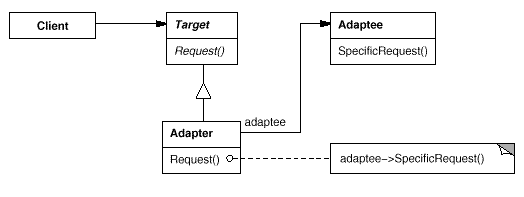
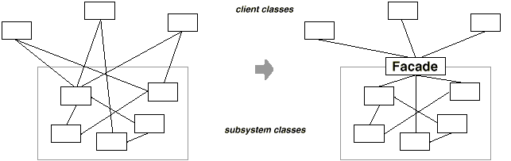
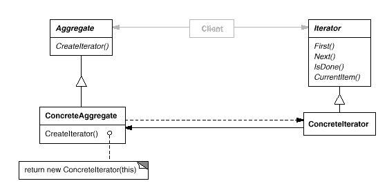
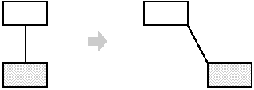

Este es uno de los libros mejor escritos y mas maravillosamente perspicaces que he leido en mucho tiempo... Este libro establece la legitimidad de los patrones del mejor modo: no mediante razonamientos sino mediante ejemplos.
Stan Lippman, C++ Report
...este nuevo libro de Gamma, Helm, Johnson y Vlissides promete tener un impacto importante y definitivo en la disciplina del diseño de software. Debido a que Patrones de Diseño se enuncia a si mismo como relacionado solo con software orientado a objetos, temo que los desarrolladores de software no pertenecientes a la comunidad de objetos puedan pasarlo por alto. Seria una pena. Este libro tiene algo para todos aquellos que diseñan software. Todos los diseñadores de software usan patrones; entender mejor las abastracciones reutilizables de nuestro trabajo solo puede hacernos mejores en el.
Tom DeMarco, IEEE Software
Creo que este libro representa una contribucion extremadamente valiosa y unica en este campo porque capta una riqueza de experiencia de diseño orientado a objetos en una forma compacta y reutilzable. Este Libro es seguramente uno al que acudire a menudo en busqueda de poderosas ideas de diseño orientado a objetos; despues de todo, de eso es de lo que trata la reutilizacion, ¿no es cierto?
Sanjiv Gossain, Journal of Object-Oriented Programming
Este libro largamente esperado esta a la altura de todo el año en que ha estado en boga anticipadamente. La metafora es la de un libro de patrones de un arquitecto lleno de diseños probados y utilizables. Los autores han elegido 23 patrones procedentes de decadas de experiencia en orientacion a objetos. La brillantez de este libro reside en la disciplina representada por ese numero. Dele una copia de Patrones de Diseño a todo buen programador que conozca que quiera ser mejor.
Larry O'Brien, Software Development
El Hecho es que los patrones tienen el potencial de cambiar para siempre el campo de la ingenieria de software, catapultandola al reino de un diseño realmente elegante. De los libros sobre este tema hasta la fecha, Patrones de Diseño es como mucho el mejor. Es un libro para ser leido, estudiado interiorizado y querido. Cambiara para siempre el modo en que ve el software.
Steve Billow, Journal of Object Oriented Programming
Patrones de Diseño es un libro poderoso. Despues de invertir un poco de tiempo en el, la mayoria de los programadores de C++ seran capaces de comenzar a aplicar sus patrones para producir mejor software. Este libro suministra un capital intelectual: herramientas concretas que nos ayudan a pensar y expresarnos de forma mas efectiva. Puede cambiar drasticamente nuestra forma de pensar en la programacion.
Tom Cargill, C++ Report
Prefacio
Este libro no es una introduccion a la tecnologia o el diseño orientado a objetos. Ya hay muchos libros que sirven bien a ese proposito. Este libro presupone que el lector domina razonablemnete al menos un lenguaje de programacion orientado a objetos, y seria igualmente deseable que tuviese algo de experiencia en el diseño orientado a objetos. En definitiva, que no se abalanzara sobre el diccionario mas cercano cuando hablemos de tipos y polimorfirmo, o de la herencia de interfaces frente a la de implementacion.
Por otro lado, tampoco es este un avanzado tratado tecnico. Es un libro de Patrones de diseño que describe soluciones simples y elegantes a problemas especificos de diseño de software orientado a objetos. Los patrones de diseño representan soluciones que han sido desarrolladas y han ido evolucionando a lo largo del tiempo. Por tanto, no se trata de los diseños que la gente tiende a generar inicialmente, sino que reflejan todo el rediseño y la recodificacion que los desarrolladores han ido haciendo a medida que luchaban por conseguir mayor reutilizacion y felxibilidad en su software. Los patrones de diseño expresan estas soluciones de una manera sucinta y facilmente aplicable.
Los patrones de diseño no requieren caracteristicas sofisticadas del lenguaje ni sorprendentes trucos de programacion con los que dejar atonitos a jefes y amigos. Todo se puede implementar en lenguajes orientados a objetos estandar, Si bien puede costar algo mas de trabajo que las soluciones ad hoc. Pero este esfuerzo extra siempre se ve recompensado por un aumento de la flexibilidad y la reutilizacion.
Una vez que haya entendido los patrones de diseño y experimentado con ellos, nunca mas pensara en el diseño orientado a objetos de la misma manera que antes. Tendra una perspectiva que puede hacer que sus propios diseños sean mas felxibles, modulares, reutilizables y comprensibles, lo cual, al fin y al cabo, es la principal razon por la que esta interesado en la tecnologia orientada a objetos, ¿verdad?
Una advertencia y unas palabras de animo: no se preocupe si no entiende del todo este libro en la primer lectura. ¡Tampoco nosotros lo entendimos todo la primera vez que lo escribimos! Recuerde que no es un libro para leer una vez y ponerlo despues en una estanteria. Esperamos que acuda a el una y otra vez en busca de pistas de diseño y de ispiracion. Este libro ha tenido un largo periodo de gestacion. Ha visto cuatro paises, los matrimonios de tres de sus autores y el nacimiento de dos hijos. Mucha gente ha participado en su desarrollo. Estamos especialmente agradecidos a Bruce Anderson, Kent Beck, y André Weinand por su inspiracion y consejos. Tambien a aquellos que revisaron los borradores del original: Roguer Bielefeld, Grady Booch, Tom Cargill, Marshall Cline, Ralph Hyre, Brian Kernighan, Thomas Laliberty, Mark Lorenz, Arthur Riel, Doug Schmidt, Clovis Tondo, Steve Vinoski y Rebecca Wirfs-Brock. Tambien queremos agradecer al equipo de Addison-Wesley su ayuda y paciencia: Kate Habib, Tiffany Moore. Lisa Raffaele, Padeepa Siva y Jhon Wait. Muchas gracias a Carl Kessler, Donny Sabbah, y Mark Wegman, de IBM Research, por su apoyo constante a este trabajo.
Por ultimo, pero no menos importante, nos dieron palabras de aliento y nos dijeron que lo que estabamos haciendo valia la pena. Estas personas son, entre otros, Jon Avotins, Steve Berozuk, Julian Berdych, Matthias Bohlen, John Brant, Allan Clarke, Paul Chisholm, Jens Coldewey, Dave Collinns, Jim Coplien, Don Dwiggins, Gabriele Elia, Doug Felt, Brian Foote, Denis Fortin, Ward Harold, Hermann Hueni, Nayeem Islam, Bikramjit Kalra, Paul Keefer, Thomas Kofler, Doug Lea, Dan LaLiberte, James Long, Ann Louise Luu, Pundi Madhavan, Brian Marick, Robert Martin, Dave McComb, Carl McConnell, Christine Mingins, Hanspeter Mössenböck, Eric Newton, Marianne Ozkan, Roxsan Payette, Larry Podmolik, George Radin, Sita Ramakrishnan, Russ Ramirez, Alexander Ran, Dirk Riehle, Brian Rosenburg, Aamod Sane, Duri Schmidt, Rober Seidl, Xin Shu y Bill Walker.
No consideramos a esta coleccion de patrones de diseño como algo completo y estatitco; se trata mas bien de una recopilacion de nuestras ideas actuales sobre diseño. Los comentarios al respecto seran bienvenidos, ya sean criticas de nuestros ejemplos, referencias y usos conocidos que hayamos pasado por alto u otros patrones que deberiamos haber incluido. Puede escribirnos a Addison-Wesley, o enviar un correo electonico a mailto:design-patterns-source@cs.uiuc.edu. Tambien puede obtener una copia del codigo de las secciones de ejemplo enviandonos el mensaje send design pattern source a mailto:design-patterns-source@cs.uiuc.edu. Y existe una pagina Web en http://st-www.cs.uiuc.edu/users/patterns/DPBook/DPBook.html donde podra encontrar informacion de ultima hora y actualizaciones.
Mountain View, California E.G.
Montreal, Quebec R.H.
Urbana, Illinois R.J.
Hawthorne, New York J.V.
Agosto de 1994
Prologo
Todas las arquitecturas orientadas a objetos que estan bien estructuradas estan repletas de patrones. De hecho, uno de los metodos que utilizo para medir la calidad de un sistema orientado a objetos es examinar si los desarrolladores le han prestado la debida atencion a las colaboraciones entre sus objetos. Centrarse en tales mecanismos durante el desarrollo de un sistema puede dar lugar a una arquitectura mas pequeña, simple y mucho mas comprensible que si se hubieran obviado los patrones.
La importancia de los patrones en la construccion de sistemas complejos ha sido reconocida desde hace tiempo en otras disciplinas. En concreto, Christopher Alexander y sus colegas fueron quiza los primeros en proponer la idea de emplear un lenguaje de patrones para diseñar la arquitectura de edificios y ciudades. Sus ideas y las contribuciones de otros estan ahora arraigadas en la comunidad del software orientado a objetos. Resumiento, el concepto de patron de diseño en el software proporciona una clave para ayudar a los desarrolladores a aprovechar la experiencia de otros arquitectos expertos.
En este libro, Erich Gmama, Richard Helm, Ralph Johnson y John Vlissides introducen los principios de los patrones de diseño y ofrecen un catalogo de dichos patrones. Asi, este libro realiza dos importantes contribuciones. En primer lugar, muestra el papel que los patrones pueden desempeñar diseñando la arquitectura de sistemas complejos. En segundo lugar, proporciona una referencia practica de un cojunto de excelentes patrones que el desarrollador puede aplicar para construir sus propias aplicaciones.
Es un honor para mi haber tenido la oportunidad de trabajar directamente con algunos de los autores de este libro en tareas de diseño arquitectonico. He aprendido mucho de ellos y sospecho que, leyendo este libro, usted tambien lo hara.
Grady Booch
Cientifico Jefe, Rational Software Corporation
Prologo a la edicion española
A veces ––en informatica al menos–– se da el caso de libros que, por la especial contribucion que realizan en un campo determinado, se convierten en clasicos apenas han sido publicados. Este libro constituye uno de esos casos excepcionales. En efecto, a pesar de los pocos años transcurridos desde la publicacion del original en ingles, Design Patterns, Elements of Reusable Object-Oriented Software, tambien conocido como GoF (de gang of four, o banda de los cuatro, en alusion a sus autores), ha revolucionado el campo de la arquitectura del software, llevando la tecnologia de la orientacion a objetos a un estadio mas avanzado de su evolucion. Hoy dia, pocos son los arquitectos de software que no han oido hablar de patrones de diseño, y su uso generalmente diferencia a un buen diseño de otro que, en el mejor de los casos, resuelve un problema concreto pero que se adapta muy mal ––o no lo hace en absoluto–– a nuevos requisitos o cambios en los ya existentes.
No obstante, tambien es cierto que los patrones de diseño aun no son todo lo conocidos que debieran, especialmente por parte de los alumnos universitarios y de los recien titulados. A la rigidez de los planes de estudio, es muy posible que se una la ausencia casi total de pubilcaciones en español acerca de este tema. En este sentido, creemos que esta traduccion al castellano puede contribuir a catapultar definitivamente este libro al lugar que merece dentro de la comunidad hispana de la ingenieria del software. Ademas de servir de ayuda a los profesionales que no hayan leido el original en ingles, sin duda pasara a ser un libro de texto recomendado de la asignatura de ingenieria del software de muchas universidades, enriqueciendo asi el curriculum de futuras promociones de ingenieros en informatica.
Por otro lado, nunca resulta sencillo traducir un libro tecnico en informatica. Numerosos barbarismos se han instalado ya en el idioma, de tal forma que resulta dificil a veces optar entre lo que seria el termino correcto en español o el equivalente comunmente aceptado por la comunidad de la ingenieria del software. Uno de los ejemplos mas evidentes lo constituye la palabra instancia, para designar cada uno de los objetos creados de una clase dada, y que en español tal vez debiera haberse traducido como ejemplar. No obstante, pocas palabras hay mas conocidas que esta en la jerga de la orientacion a objetos, por lo que pretender cambiarla a estas alturas habria sido un acto de vanidad por nuestra parte que solo habria contribuido a incrementar la confusion y dificultar la comprension del libro. En otras ocaciones, nos encontramos con palabras como framework o toolkit que hemos dejado sin traducir por el mismo motivo: el lector esta acostumbrado a ellas, por lo que de haberlas traducido probablemente no supiese a que se esta haciendo referencia, desvirtuando asi el sentido del original.
Alla donde ha habido dudas, hemos optado por incluir ambos terminos, dando preferencia al español e incluyendo el original a continuacion, entre parentesis, o bien mediente una nota. Esta ha sido la decision adoptada para el nombre de los patrones. El nombre es parte fundamental de un patron, ya que, una vez comprendido este, pasa a formar parte, como los propios autores indican, de nuestro vocabulario de diseño. Por tanto, los nombres de los patrones de diseño han de ser considerados, en este sentido como las palabras reservadas de un lenguaje de programacion: no admiten traduccion, so pena de engañar al lector. Sin embargo, dado que el nombre designa con una o dos palabras el proposito del patron, parecia oportuno que el lector desconocedor de la lengua inglesa pudiese conocer su significado. Por ese motivo, hemos optado por ofrecer una traduccion, entre parentesis, al comienzo de la descripcion de cada patron, aunque posteriormente, en el texto, nos refiramos siempre a ellos con su nombre original en ingles.
Sera dificil que las decisiones adoptadas sean siempre del gusto de todos, como inevitable sera, a pesar de todos los esfuerzos, que se haya escapado algun error en la version final del libro. En cuarquier caso, sepa el lector que se han puesto los mayores esfuerzos en aunar el rigor tecnico con el cuidado del idioma, y apelamos a su indulgencia por los errores cometidos, de modo consciente o inconsciente.
No quisieramos terminar este prologo sin dar las gracias a Raul Izquierdo Castanedo, Aquilino Adolfo Juan Fuente, Francisco Ortin Soler, Jose Emilio Labra Gayo y el resto de miembros del Laboratorio de Tecnologias Orientadas a Objetos de la universidad de Oviedo (http://www.ootlab.uniovi.es, por el trabajo del grupo de investigacion sobre patrones de diseño y por sus valiosos comentarios y aportaciones.
Por ultimo, esperamos que con esta traduccion al español sean muchos mas los que se acerquen a las patrones de diseño, algo que sin duda contribuira a seguir mejorando y dignificando asi nuestra profesion, al hacernos mejores arquitectos de software. Igualmente, confiamos en que sirva, como ya hemos dicho, para ayudar a la formacion de futuras promociones de ingenieros en informatica. Haber contribuido a ello, con el minusculo esfuerzo de una traduccion, en comparacion con la labor original de Eric Gammna, Rechard Helm, Ralph Johnson y John Vlissides, seria algo que nos llenaria de satisfaccion y orgullo.
Cesar Fernandez Acebal
Juan Manuel Cueva Lovelle
Oviedo, 20 de junio de 2002
Guia para los lectores
Este libro tiene dos partes principales. La primera parte (Capitulos 1 y 2) describe que son los patrones de diseño y como pueden ayudarle a diseñar software orientado a objetos. Incluye un caso de estudio que demuestra como se aplican en la practica. La segunda parte del libro (Capitulos 3, 4 y 5) es un catalogo de los patrones de diseño propiamente dichos.
El catalogo constituye la mayor parte del libro. Sus capitulos dividen los patrones de diseño en tres tipos: de creacion, estructurales y de comportamiento. El catalogo se puede usar de varias formas: puede leerse de principio a fin o se puede simplemente ir de un patron a otro. Otra posibilidad es estudiar uno de los capitulos. Esto le ayudara a ver como se distinguen entre si patrones estrechamente relacionados.
Puede usar las referencias entre los patrones como una ruta logica a traves del catalogo. Este enfoque le hara comprender como se relacionan los patrones entre si, como se pueden combinar con otros y que patrones funcionan bien juntos. La Figura 1.1 muestra estas referencias graficamente.
Otra forma mas de leer el catalogo es usar un enfoque mas orientado al problema. Vaya directamente a la Seccion 1.6 para leer algunos problemas comunes a la hora de diseñar software orientado a objetos reutilizable; despues, lea los patrones que resuelven estos problemas. Algunas personas leen primero el catalogo completo y luego usan un enfoque orientado al problema para aplicar los patrones en sus proyectos.
Si no es un diseñador orientado a objetos experimentado, le recomendamos que empiece con los patrones sencillos y mas comunes:
Es dificil encontrar un sistema orientado a objetos que no use al menos un par de estos patrones, los grandes sistemas los usan casi todos. Este subconjunto le ayudara a entender los patrones de diseño en particular y el buen diseño orientado a objetos en general.
Introduccion
Diseñar software orientado a objetos es dificil, y aun lo es mas diseñar software orientado a objetos reutilizable. Hay que encontrar los objetos pertinentes, factorizarlos en clases con la granularidad adecuada, definir interfaces de clases y jerarquias de herencia y establecer las principales relaciones entre esas clases y objetos. Nuestro diseño debe ser especifico del problema que estamos manejando, pero tambien lo suficientemente general para adecuarse a futuros requisitios y problemas. Tambien queremos evitar el rediseño, o al menos minimizarlo. Los diseñadores experimentados de software orientado a objetos nos diran que es dificil, sino imposible, lograr un diseño flexible y reutilizable a la primera y que, antes de terminar un diseño, es frecuente intentar reutilizarlo varias veces, modificandolo cada una de ellas.
Sin embargo, estos diseñådores experimentados realmente consiguen hacer buenos diseño, mientras que los diseñadores novatos se ven abrumados por las opciones disponibles y tienden a recurrir a las tecnicas no orientadas a objectos que ya usaron antes. A un principante le lleva bastante tiempo aprender en que consiste un buen diseño orientado a objetos. Es evidente que los diseñadores experimentados saben algo que los principiantes no. ¿Que es?
Algo que los expertos saben que no hay que hacer es resolver cada problema partiendo de cero. Por el contrario, reutilizan soluciones que ya les han sido utiles en el pasado. Cuando ecuentran una solucion buena, la usan una y otra vez. Esta experiencia es parte de lo que les convierte en expertos. Por tanto, nos encontraremos con patrones recuerrentes de clases y comunicaciones entre objetos en muchos sistemas orientados a objetos. Estos patrones resuelven problemas concretos de diseño y hacen que los diseños orientados a objetos sean mas flexibles, elegantes y reutilizables. Los patrones ayudan a los diseñadores a reutilizar buenos diseños al basar los nuevos diseños en la experiencia previa. Un diseñador familiarizado con dichos patrones puede aplicarlos inmediatamente en los problemas de diseño sin tener que redescubrirlos.
Ilustremos este punto con una analogia. Los novelistas y escritores rara vez diseñan las tramas de sus obras desde cero, si no que siguen patrones como el del heroe tragico (Macbeth, Hamlet, etc.) o la novela romantica (innumerables novelas de amor). Del mismo modo, los diseñadores orientados a objetos siguen patrones como representar estados con objetos o decorar objetos de manera que se puedan añadir y borrar funcionalidades facilmente. Una vez que conocemos el patron, hay muchas decisiones de diseño que se derivan de manera natural.
Todos sabemos el valor de la experiencia en el diseño. ¿Cuantas veces hemos tenido un déjà-vu de diseño ––esa sensacion de que ya hemos resuelto ese problema antes, pero no sabemos exactamente donde ni como––? Si pudieramos recordar los detalles del problema anterior y de como lo resolvimos podriamos valernos de esa experiencia sin tener que reinvertar la solucion. Sin embargo, no solemos dedicarnos a dejar constancia de nuestra experiencia en el diseño de software para que la usen otros.
El proposito de este libro es documentar la experiencia en el diseño de software orientado a objetos en forma de patrones de diseño. Cada patron nomina, explica y evalua un diseño importante y recurrente en los sistemas orientados a objetos. Nuestro objetivo es representar esa experincia de diseño de forma que pueda ser reutilizada de manera efectiva por otras personas. Para lograrlo, hemos documentado algunos de los patrones de diseño mas importantes y los presentamos como un catalogo.
Los patrones de diseño hacen que sea mas facil reutilizar buenos diseños y arquitecturas. Al expresar como patrones de diseño tecnicas que ya han sido probadas, las estamos haciendo mas accesibles para los desarrolladores de nuevos sistemas. Los patrones de diseño nos ayudan a elegir las alternativas de diseño que hacen que un sistema sea reutilizable, y a evitar aquellas que dificultan dicha reutilizacion. Pueden incluso mejorar la documentacion y el mantenimiento de los sistemas existentes al proporcionar una expecificacion explicita de las iteracciones entre clases y objetos y de cual es su intencion. En definitiva, los patrones de diseño ayudan a un diseñador a lograr un buen diseño mas rapidamente.
Ninguno de los patrones de diseño de este libro describe diseños nuevos o que no hayan sido probados. Se han incluido solo aquellos que se han aplicado mas de una vez en diferentes sistemas. La mayoria de ellos estaba sin documentar, y existian bien como parte del repertorio de la comunidad de la orientacion a objetos, bien como elementos de algunos buenos sistemas orientados a objetos ––y de ninguna de ambas formas resultaban faciles de aprender por los diseñadores novatos––. Asi que, aunque estos diseños no son nuevos, los hemos expresado de una forma nueva y accesible: como un catalogo de patrones de diseño que tienen un formato consistente.
A pesar del tamaño del libro, los patrones de diseño que hay en el representan solo una parte de lo que puede saber un experto. No contiene patrones que tengan que ver con concurrencia o programacion distribuida o en tiempo real. Tampoco hay patrones de dominios especificos. No se cuenta como construir interfaces de usuario, como escribir controladores de dispositivos o como usar una base de datos orientada a objetos. Cada una de estas areas tiene sus propios patrones, y seria bueno que alguien los catalogase tambien.
¿Que es un patron de diseño?
Segun Christopher Alexander, cada patron describe un problema que ocurre una y otra vez en nuestro entorno, asi como la solucion a ese problema, de tal modo que se pueda aplicar esta solucion un millon de veces, sin hacer lo mismo dos veces [AIS+77]. Aunque Alexander se referia a patrones en ciudades y edificios, lo que dice tambien es valido para patrones de diseño orientados a objetos. Nuestras soluciones se expresan en terminos de objetos e interfaces, en vez de paredes y puertas, pero en la esencia de ambos tipos de patrones se encuentra una solucion a un problema dentro de un contexto.
En general, un patron tiene cuatro elementos esenciales:
El nombre del patron permite describir, en una o dos palabras, un problema de diseño junto con sus soluciones y consecuencias. Al dar nombre a un patron inmediatamante estamos incrementando nuestro vocabulario de diseño, lo que nos permite diseñar con mayor abstraccion. Tener un vocabulario de patrones nos permite hablar de ellos con otros colegas, mencionarlos en nuestra documentacion y tenerlos nosotros mismos en cuenta. De esta manera, resulta mas facil pensar en nuestros diseños y transmitirlos a otros, junto con sus ventajas e inconvenientes. Encontrar buenos nombres ha sido una de las partes mas dificiles al desarrollar nuestro catalogo.
El problema describe cuando aplicar el patron. Explica el problema y su contexto. Puede describir problemas concretos de diseño (por ejemplo, como representar algoritmos como objetos), asi como las estructuras de clases u objetos que son sintomaticas de un diseño inflexible. A veces el problema incluye una serie de condiciones que deben darse para que tenga sentido aplicar el patron.
La solucion describe los elementos que constituyen el diseño, sus relaciones, responsabilidades y colaboraciones. La solucion no describe un diseño o una implementacion en concreto, sino que un patron es mas bien como una plantilla que puede aplicarse en muchas situaciones diferentes. El patron proporciona una descripcion abstracta de un problema de diseño y como lo resuelve una disposicion general de elementos (en nuestro caso, clases y objetos).
Las consecuencias son los resultados asi como las ventajas e inconvenientes de aplicar el patron. Aunque cuando se describen desiciones de diseño muchas veces no se reflejan sus consecuencias, estas son fundamentales para evaluar las alternativas de diseño y comprender los costes y beneficios de aplicar el patron. Las consecuencias en el software suelen referise al equlibrio entre espacio y tiempo. Tambien pueden tratar cuestiones de lenguaje e implementacion. Por otro lado, puesto que la reutilizacion suele ser uno de los factores de los diseños orientados a objetos, las consecuencias de un patron incluyen su impacto sobre la flexibilidad, extensibilidad y portabilidad de un sistema. Incluir estas consecuencias de un modo explicito nos ayudara a comprenderlas y evaluarlas.
Que es y que no es un patron de diseño es una cuestion que depende del punto de vista de cada uno. Lo que para una persona es un patron puede ser un bloque primitivo de construccion para otra. En este libro nos hemos centrado en patrones situados en un cierto nivel de abstraccion. Patrones de diseño no se ocupa de diseños como listas enlazadas y tablas de dispersion (hash) que pueden codificarse en clases y reutilizarse como tales. Tampoco se trata de complicados diseños especificos de un dominio para una aplicacion o subsistema completo. Los patrones de diseño de este libro son descripciones de clases y objetos relacionados que estan particularizados para resolver un problema de diseño general en un determinado contexto.
Un patron de diseño nomina, abstrae e identifica los aspectos clave de una estructura de diseño comun, lo que los hace utiles para crear un diseño orientado a objetos reutilizable. El patron de diseño identifica las clases e instancias participantes, sus roles y colaboraciones, y la distribucion de responsabilidades. Cada patron de diseño se centra en un problema concreto, describiendo cuando aplicarlo y si tiene sentido hacerlo teniendo en cuenta otras restricciones de diseño, asi como las consecuencias y las ventajas e inconvenientes de su uso. Por otro lado, como normalmente tendremos que implementar nuestros diseños, un patron tambien proporciona codigo de ejemplo en C++, y a veces en Smalltalk, para ilustrar una implementacion.
Aunque los patrones describen diseños orientados a objetos, estan basados en soluciones practicas que han sido implementadas en los lenguajes de programacion orientados a objetos mas usuales, como Smalltalk y C++, en vez de mediante lenguajes procedimentales (Pascal, C, Ada) u otros lenguajes orientados a abjetos mas dinamicos (CLOS, Dylan, Self). Nosotros hemos elegido Smalltalk y C++ por una cuestion pragmatica: nuestra experiencia diaria ha sido con estos lenguajes, y estos cada vez son mas populares.
La eleccion del lenguaje de programacion es importante, ya que influye en el punto de vista. Nuestros patrones presuponen caracteristicas de los lenguajes Smalltalk y C++, y esa eleccion determina lo que puede implementarse o no facilmente. Si hubieramos supuesto lenguajes procedimentales, tal vez hubieramos incluido patrones llamados Herencia, Encapsulacion y Polimorfismo. De manera similar, algunos de nuestros patrones estan incluidos directamente en lenguajes orientados a objetos menos corrientes. CLOS, por ejemplo, tiene multi-metodos que reducen la necesidad de patrones como el Visitor. De hecho, hay suficientes diferencias entre Smalltalk y C++ como para que algunos patrones puedan expresarse mas facilmente en un lenguaje que otro (por ejemplo, el Iterator).
Patrones de diseño en el MVC de Smalltalk
La triada de clases Modelo/Vista/Controlador (MVC) [KP88] se usa para interfaces de usuario en Smalltalk-80. Observar los patrones de diseño que hay en MVC deberia ayudar a entender que queremos decir con el termino patron.
MVC consiste en tres tipos de objetos. El Modelo es el objeto de aplicacion, la Vista es su representacion en pantalla y el Controlador define el modo en que la interfaz reacciona a la entrada del usuario. Antes de MVC, los diseños de interfaces de usuario tendian a agrupar estos objetos en uno solo. MVC los separa para incrementar la flexibilidad y reutilizacion.
MVC desacopla las vistas de los modelos estableciendo entre ellos un protocolo de subscripcion/notificacion. Una vista debe asegurarse de que su apariencia refleja el estado del modelo. Cada vez que cambian los datos del modelo, este se encarga de avisar a las vistas que dependen de el. Como respuesta a dicha notificacion, cada vista tiene la oportunidad de actualizarse a si misma. Este enfoque permite asignar varias vistas a un modelo para ofrecer diferentes presentaciones. Tambien se pueden crear nuevas visitas de un modelo sin necesidad de volver a escribir este.
El siguiente diagrama muestra un modelo y tres vistas (hemos dejado fuera los controladores para simplificar). El modelo contiene algunos valores de datos y las vistas, consistentes en una hoja de calculo, un histograma y un grafico de tarta que muestran estos datos de varias formas. El modelo se comunica con sus vistas cuando cambian sus valores, y las vistas se comunican con el modelo para acceder a estos.
Si nos fiamos de el, este ejemplo refleja un diseño que desacopla las vistas de los modelos. Pero el diseño es aplicable a un problema mas general: desacoplar objetos de manera que los cambios en uno puedan afectar a otros sin necesidad de que el objeto que cambia conozca detalles de los otros. Dicho diseño mas general se describe en el patron Observer.
Otras caracteristicas de MVC es que las vistas se pueden anidar. Por ejemplo, un panel de control con botones se puede implementar como una vista compleja que contiene varias vistas de botones anidadas. La interfaz de usuario de un inspector de objetos puede consistir en vistas anidadas que pueden ser reutilizadas en un depurador. MVC permite vistas anidadads gracias a la clase VistaCompuesta, una subclase de Vista. Los objetos VistaCompuesta pueden actuar simplemente como objetos Vista, es decir, una vista compuesta puede usarse en cualquier lugar donde pudiera usarse una vista, pero tambien contiene y gestiona vistas anidadas.
De nuevo, podriamos pensar en el como un diseño que nos permite tratar a una vista compuesta exactamente igual que a uno de sus componentes. Pero el diseño es aplicable a un problema mas general, que ocurre cada vez que queremos agrupar objetos y tratar al grupo como a un objeto individual. El patron Composite describe este diseño mas general. Dicho patron permite crear una jerarquia en la que algunas subclases definen objetos primitivos (por ejemplo, Boton) y otras, objetos compuestos (VistaCompuesta), que ensamblan los objetos primitivos en otros mas complejos.
MVC tambien permite cambiar el modo en que una vista responde a la entrada de usuario sin cambiar su representacion visual. En este sentido, tal vez queramos cambiar como responde al teclado, por ejemplo, o hacer que use un menu contextual en vez de atajos de teclado. MVC encapsula el mecanismo de respuesta en un objeto Controlador. Hay una jerarquia de controladores y es facil crear un nuevo controlador como una variacion de uno existente.
Una vista usa una instancia de una subclase de Controlador para implementar una determinada estrategia de respuesta; para implementar una estrategia diferente, simplemente basta con sustituir la instancia por otra clase de controlador. Incluso es posible cambiar el controlador de una vista en tiempo de ejecucion, para hacer que la vista cambie el modo en que responde a la entrada de usuario. Por ejemplo, para desactivar una vista y que no acepte entradas basta con asignarle un controlador que haga caso omiso de los eventos de entrada.
La relacion entre Vista y Controlador es un ejemplo del patron Strategy. Una Estrategia es un objeto que representa un algoritmo. Es util cuando queremos reemplazar el algoritmo, ya sea estatica o dinamicamente, cuando existen muchas variantes del mismo o cuando tiene estructuras de datos complejas que queremos encapsular.
MVC usa otros patrones de diseño, tales como el Factory Method para especificar la clase controlador predeterminada de una vista, el Decorator para añadir capacidad de desplazamiento a una vista. Pero las principales relaciones en MVC se dan entre los patrones de diseño Observer, Composite y Strategy.
Descripcion de los patrones de diseño
¿Como describimos los patrones de diseño? Las notaciones graficas, aunque importantes, no son suficientes. Simplemente representan el producto final del proceso de diseño, como las relaciones entre clases y objetos. Para reutilizar el diseño, debemos hacer constar las decisiones, alternativas y ventajas e inconvenientes que dieron lugar a el. Tambien son importantes los ejemplos concretos, porque nos ayudan a ver el diseño en accion.
Describimos los patrones de diseño empleando un formato consistente. Cada patron se divide en secciones de acuerdo a la siguiente plantilla. Esta da una estructura uniforme a la informacion, haciendo que los patrones de diseño sean mas faciles de aprender, comparar y usar.
Nombre de patron y clasificacion
El nombre del patron transmite sucintamente su esencia. Un buen nombre es vital, porque pasara a formar parte de nuestro vocabulario de diseño. La clasificacion del patron refleja el esquema que se presenta en la Seccion 1.5
Proposito
Una frase breve que responde a las siguientes cuestiones:
¿Que hace este patron de diseño?
¿En que se basa?
¿Cual es el problema concreto de diseño que resuelve?
Tambien conocido como
Otros nombres, si existen, por los que se conoce el patron.
Motivacion
Un escenario que ilustra un problema de diseño y como las estructuras de clases y objetos del patron resuelven el problema. El escenario ayudara a entender la descripcion que sigue.
Aplicabilidad
¿En que situaciones se puede aplicar el patron de diseño?
¿Que ejemplos hay de malos diseños que el patron puede resolver?
¿Como se puede reconocer dichas situaciones?
Estructura
Una representacion grafica de las clase del patron usando una notacion basada en la Tecnica de Modelado de Objetos (OMT) [RBP+91]. Tambien hacemos uso de diagramas de interaccion [JCJO92, Boo94] para mostrar secuencias de peticiones y colaboraciones entre objetos. El Apendice B describe estas notaciones en detalle.
Participantes
Las clases y objetos participantes en el patron de diseño, junto con sus reponsabilidades.
Colaboraciones
Como colaboran los participantes para llevar a cabo sus responsabilidades.
Consecuencias
¿Como consigue el patron sus objetivos?
¿Cuales son las ventajas e inconvenientes y los resultados de usar el patron?
¿Que aspectos de la estructura del sistema se pueden modificar de forma independiente?
Implementacion
¿Cuales son las dificultades, trucos o tecnicas que deberiamos tener en cuenta a la hora de aplicar el patron?
¿Hay cuestiones especificas del lenguaje?
Codigo de ejemplo
Fragmentos de codigo que muestran como se puede implementar el patron en C++ o en Smalltalk.
Usos conocidos
Ejemplos del patron en sistemas reales. Incluidos al menos dos ejemplos de diferentes dominios.
Patrones relacionados
¿Que patrones de diseño estan estrechamente relacionados con este?
¿Cuales son las principales diferencias?
¿Con que otros patrones deberia usarse?
Los apendices proporcionan informacion adicional que le ayudara a entender los patrones y las discuciones que lo rodean. El Apendice A es un glosario de la terminologia en el libro. En el Apendice B que ya hemos mencionado se presentan las diferentes notaciones. Tambien describiremos aspectos de las notaciones a medida que las vayamos introduciendo en las discuciones venideras. Finalmente, el Apendice C contiene el codigo fuente de las clases que usamos en los ejemplos.
El catalogo de patrones de diseño
El catalogo contiene 23 patrones de diseño. A continuacion mostraremos el nombre y el proposito de cada uno de ellos para ofrecerle una perspectiva general.
Convierte la interfaz de una claze en otra distinta que es la que esperan los clientes. Permite que cooperen clases que de otra manera no podrian por tener interfaces incompatibles.
Separa la construccion de un objeto complejo de su representacion, de forma que el mismo proceso de construccion pueda crear diferentes representaciones.
Evita acoplar el emisor de una peticion a su receptor, al dar a mas de un objeto la posibilidad de responder a la peticion. Crea una cadena con los objetos receptores y pasa la peticion a traves de la cadena hasta que esta sea tratada por algun objeto.
Encapsula una peticion en un objeto, permitiendo asi paramentrizar a los clientes con distintas peticiones, encolar o llevar un registro de las peticiones y poder deshacer las operaciones.
Combina objetos en estructuras de arbol para representar jerarquias de parte-todo. Permite que los clientes traten de manera uniforme a los objetos individuales y a los compuestos.
Proporciona una interfaz unificada para un conjunto de interfaces de un subsistema. Define una interfaz de alto nivel que hace que el subsistema sea mas facil de usar.
Define una interfaz para crear un objeto, pero deja que sean las subclases quienes decidan que clase instanciar. Permite que una clase delegue en sus subclases la creacion de objetos.
Dado un lenguaje, define una respresentacion de su gramatica junto con un interprete que usa dicha representacion para interpretar sentencias del lenguaje.
Define un objeto que encapsula como interactuan un conjunto de objetos. Promueve un bajo acoplamiento al evitar que los objetos se refieran unos a otros explicitamente, y permite variar la interaccion entre ellos de forma independiente.
Define una dependencia de uno-a-muchos entre objetos, de forma que cuando cambie de estado se notifica y se actualizan automaticamente todos los objetos que dependen de el.
Define una familia de algoritmos, encapsula cada uno de ellos y los hace intercambiables. Permite que un algoritmo varie independientemente de los clientes que lo usan.
Define en una operacion el esqueleto de un algoritmo, delegando en las subclases algunos de sus pasos. Permite que las subclases redefinan ciertos pasos del algoritmo sin cambiar su estructura.
Representa una operacion sobre los elementos de una estructura de objetos. Permite definir una nueva operacion sin cambiar las clases de los elementos sobre los que opera.
Orgarnizacion del catalogo
Los patrones de diseño varian en su granularidad y nivel de abstraccion. Dado que existen muchos patrones de diseño, es necesario un modo de organizarlos. Esta seccion clasifica los patrones de diseño de manera que podamos referirnos a familias de patrones relacionados. La clasificacion ayuda a aprender mas rapidamente los patrones del catalogo, y tambien puede encauzar los esfuerzos para descubrir nuevos patrones.
Nosotros clasificamos los patrones de diseño siguiendo dos criterios (Tabla 1.1). El primero de ellos, denominado proposito, refleja que hace un patron. Los patrones pueden tener un proposito de creacion, estructural o de comportamiento. Los patrones de creacion tienen que ver con el proceso de creacion de objetos. Los patrones estructurales tratan con la composicion de clases u objetos. Los de comportamiento caracterizan el modo en que las clases y objetos interactuan y se reparten la responsabilidad.
El segundo criterio, denominado ambito, especifica si el patron se aplica principalmente a clases o a objetos. Los patrones de clases se ocupan de las relaciones entre las clases y sus subclases. Estas relaciones se establecen a traves de la herencia, de modo que son relaciones estaticas ––fiajadas en tiempo de compilacion––. Los patrones de objetos tratan con las relaciones entre objetos, que pueden cambiarse en tiempo de ejecucion y son dinamicas. Casi todos los patrones usan la herencia de un modo u otro, asi que los unicos patrones etiquetados como patrones de clases son aquellos que se centran en las relaciones entre clases. Notese que la mayoria de los patrones tienen un ambito de objeto.
Los patrones de creacion de clases delegan alguna parte del proceso de creacion de objetos en las subclases, mientras que los patrones de creacion de objetos lo hacen en otro objeto. Los patrones estructurales de clases usan la herencia para componer clases, mientras que los objetos describen formas de ensamblar objetos. Los patrones de comportamiento de clases usan la herencia para describir algoritmos y flujos de control, mientras que los de objetos describen como cooperan un grupo de objetos para realizar una tarea que ningun objeto puede llevar a cabo por si solo.
Hay otras maneras de organizar los patrones. Algunos patrones suelen usarse juntos. Por ejemplo, el Composite suele usarse con el Iterator o el Visitor. Algunos patrones son alternativas: el Prototype es muchas veces una alternativa al Abstract Factory. Algunos patrones dan como resultado diseños parecidos, a pesar de que tengan diferentes propositos. Por ejemplo, los diagramas de estructura del Composite y el Decorator son similares.
Otro modo de organizar los patrones de diseño es en funcion de como se hagan referencia unos a otros en su seccion Patrones Relacionados. La Figura 1.1 representa estas relaciones graficamente.
Figura 1.1: Relaciones entre los patrones de diseño
Es evidente que hay muchas formas de organizar los patrone de diseño. Tener muchas formas de pensar en los patrones le hara comprender mejor que es lo que hacen, como compararlos y cuando aplicarlos
Como resuelven los patrones los problemas de diseño
Los patrones de diseño resuelven muchos de los problemas diarios con los que se enfrentan los diseñadores orientados a objetos, y lo hacen de muchas formas diferentes. A Continuacion se muestran algunos de estos problemas y como los solucionan los patrones.
Encontrar los objetos apropiados
Los programas orientados a objetos estan formados de objetos. Un objeto encapsula tanto datos como los procedimientos que operan sobre esos datos. Estos procedimientos es lo que se conoce normalmente como metodos u operaciones. Un objeto realiza una operacion cuando recibe una peticion (o mensaje) de un cliente.
Las peticiones son el unico modo de lograr que un objeto ejecute una operacion. Las operaciones son la unica forma de cambiar los datos internos de un objeto. Debido a estas restricciones, se dice que el estado interno de un objeto esta encapsulado; no puede accederse a el directamente, y su representacion no es visible desde el exterior del objeto.
Lo mas complicado del diseño orientado a objetos es descomponer un sistema en objetos. La tarea es dificil porque entran en juego muchos factores: encapsulacion, granularidad, dependencia, flexibilidad, rendimiento, evolucion, reutilizacion, etcetera, etcetera. Todos ellos influyen en la descomposicion, muchas veces de formas opuestas.
Las metodologias orientadas a objetos permiten muchos enfoques diferentes. Podemos escribir la descripcion de un problema, extraer los nombres y verbos, y crear las correspondientes clases y operaciones. O podemos centrarnos en las colaboraciones y responsabilidades de nuestro sistema. O modelar el mundo real y traducir al diseño los objetos encontrados durante el analisis. Siempre habra discrepancias sobre que enfoque es mejor.
Muchos objetos de un diseño proceden del modelo del analisis. Pero los diseños orientados a objetos suelen acabar teniendo clases que no tienen su equivalente en el mundo real. Algunas de ellas son clases de bajo nivel como los arrays. Otras son de mucho mas alto nivel. Por ejemplo, el patron Composite introduce una abstraccion para tratar de manera uniforme objetos que no tienen un equivalente fisico. El modelado estricto del mundo real conduce a un sistema que refleja las realidades presentes pero no necesariamente las futuras. Las abstracciones que surgen durante el diseño son fundamentales para lograr un diseño flexible.
Los patrones de diseño ayudan a identificar abstracciones menos obvias y los objetos que las expresan. Por ejemplo, los objetos que representan un proceso o algoritmo no tienen lugar en la naturaleza, y sin embargo son una parte crucial de los diseños flexibles. El patron Strategy describe como implementar familias intercambiables de algoritmos. El patron State representa cada estado de una entidad como un objeto. Estos objetos rara vez se encuentran durante el analisis o incluso en las primeras etapas del diseño; son descubiertos mas tarde, mientras se trata de hacer el diseño mas flexible y reutilizable.
Determinar la granularidad de los objetos
Los objetos pueden variar enormemente en tamaño y numero. Pueden representar cualquier cosa, desde el hardware hasta aplicaciones completas. ¿Como decidir entonces que deberia ser un objeto?
Los patrones de diseño tambien se encargan de esta cuestion. El patron Facade describe como representar subsistemas completos como objetos, y el patron Flyweight como permitir un gran numero de objetos de granularidad muy fina. Otros patrones de diseño describen formas concretas de descomponer un objeto en otros mas pequeños. Los patrones Abstract Factory y Builder producen objetos cuya unica responsabilidad es crear otros objetos. El patron Visitor y el Command dan lugar a objetos cuaya unica responsabilidad es implementar una peticon en otro objeto o grupo de objetos.
Especificar las interfaces de los objetos
Cada operacion declarada por un objeto especifica el nombre de la operacion, los objetos que toma como paramentros y el valor de retorno de la operacion. Esto es lo que se conoce como la signatura de la operacion. Al conjunto de todas las signaturas definidas por las operaciones de un objeto se le denomita la interfaz del objeto. Dicha interfaz caracteriza al conjunto completo de peticiones que se pueden enviar al objeto. Cualquier peticion que concuerde con una signatura de la interfaz puede ser enviada al objeto.
Un tipo es un nombre que se usa para denotar una determinada interfaz. Decimos que un objeto tiene el tipo Ventana si acepta todas las peticiones definidas en una interfaz llamada Ventana. Un objeto puede tener muchos tipos, y objetos muy diferentes pueden compartir un mismo tipo. Parte de la interfaz de un objeto puede ser caracterizada por un tipo, y otras partes por otros tipos. Dos objetos del mismo tipo solo necesitan compartir partes de sus interfaces. Las interfaces pueden contener, como subjconjuntos, otras interfaces. Se dice que un tipo es un subtipo de otro si su interfaz contiene a la interfaz de su supertipo. Suele decirse que un subtipo hereda la interfaz de su supertipo.
Las interfaces son fundamentales en los sistemas orientados a objetos. Los objetos solo se conocen a traves de su interfaz. No hay modo de saber nada de un objeto o pedirle que haga nada si no es atraves de su interfaz. La interfaz de un objeto no dice nada acerca de su implementacion ––distintos objetos son libres de implementar las peticiones de forma diferente––. Eso significa que dos objetos con implementaciones completamente diferentes pueden tener interfaces identicas.
Cuando se envia una peticion a un objeto, la operacion concreta que se ejecuta depende tanto de la peticion como del objeto que la recibe. Objetos diferentes que soportan peticiones identicas pueden tener distintas implementaciones de las operaciones que satisfacen esas peticiones. La asociacion en tiempo de ejecucion entre una peticion a un objeto y una de sus operaciones es lo que se conoce como enlace dinamico.
El enlace dinamico significa que enviar una peticion no nos liga a una implementacion particular hasta el tiempo de ejecucion. Por tanto, podemos escribir programas que esperen un objeto con una determinada interfaz, sabiendo que cualquier objeto que tenga la interfaz concreta aceptara la peticion.
Mas aun, el enlace dinamico nos permite sustituir objetos en tiempo de ejecucion por otros que tengan la misma interfaz. Esta capacidad de sustitucion es lo que se conoce como polimorfismo, y es el concepto clave en los sistemas orientados a objetos. Permite que un cliente haga pocas suposiciones sobre otros objetos aparte de que permitan una interfaz determinada. El polimorfirsmo simplifica las definiciones de los clientes, desacopla unos objetos de otros y permite que varien las relaciones entre ellos en tiempo de ejecucion.
Los patrones de diseño ayudan a definir interfaces identificando sus elementos clave y los tipos de datos que se envian a la interfaz. Un patron de diseño tambien puede decir que no debemos poner en la interfaz. El patron Memento (Recuerdo) es un buen ejemplo de esto. Dicho patron describe como encapsular y guardar el estado interno de un objeto para que este puedar volver a ese estado posteriormente. El patron estipula que los objetos Recuerdo deben definir dos interfaces: una restringida, que permita a los clientes albergar y copiar el estado a recordar, y otra protegida que solo pueda usar el objeto original para almacenar y recuperar dicho estado.
Los patrones de diseño tambien especifican relaciones entre interfaces. En concreto, muchas veces requieren que algunas clases tengan interfaces parecidas, o imponen restricciones a las interfaces de algunas clases. Por ejemplo, tanto el patron Decorator como el Proxy requieren que las interfaces de los objetos Decorador y Proxy sean identicos a los objetos decorado y representado, respectivamente. En el patron Visitor, la interfaz Visitante debe reflejar todas las clases de objetos que pueden ser visitados.
Especificar las implementaciones de los objetos
Hasta ahora hemos dicho poco sobre como definir realmente un objeto. La implementacion de un objeto queda definida por su clase. La clase especifica los datos, la representacion interna del objeto y define las operaciones que puede realizar.
Nuestra notacion basada en OMT (resumida en el Apendice B muestra una clase como un rectangulo con el nombre en negrita. Las operaciones aparecen en un tipo de fuente normal bajo el nombre de la clase. Cualquier dato que defina la clase viene despues de las operaciones. Por ultimo, se utilizan lineas para separar el nombre de la clase de las operaciones y estas de los datos:
Los tipos de retorno y de las variables de instancia son opcionales, puesto que no suponemos un lenguaje de implementacion estaticamente tipado.
Los objetos se crean instanciando una clase. Se dice que el objeto es una instancia de la clase. El proceso de crear una instancia de una clase asigna espacio de almacenemaiento para los datos internos del objeto (representandos por variables de instancia) y asocia las operaciones con esos datos. Se pueden crear muchas instancias parecidas de un objeto instanciando una clase.
Una flecha de linea discontinua indica que una clase crea objetos de otra clase. La flecha apunta a la clase de los objetos creados.
Las nuevas clases se pueden definir en terminos de las existentes, usando la herencia de clases. Cuando una subclase hereda de una clase padre, incluye las definiciones de todos los datos y operaciones que define la clase patre. Los objetos que son instancias de las subclases contendran todos los datos definidos por la subclase y por sus clases padre, y seran capaces de realizar todas las operaciones definidas por sus subclases y sus padres. Indicamos la relacion de subclase con una linea vertical y un triangulo:
Una clase abstracta es aquella cuyo proposito principal es definir una interfaz comun para sus subclases. Una clase abstracta delegara parte o toda su implementacion en las operaciones definidas en sus subclases; de hay que no se pueda crear una instancia de una clase abstracta. Las operaciones que una clase abstracta define pero no implementa se denominan operaciones abstractas. Las clases que no son abstractas se denominan clases concretas.
Las subclases pueden definir el comportamiento de sus clases padres. Mas concretamente, una clase puede definir una operacion definida por su clase padre. La redefinicion permite que sean las subclases las que manejen una peticion en vez de sus clases padres. La herencia de clases permite definir clases simplemente extendiendo otras clases, haciendo que sea facil definir familias de objetos de funcionalidad parecida.
Los nombres de las clases abstractas aparecen en cursiva para distinguirlas de las clases concretas. Un diagrama puede incluir el pseudocodigo de la implementacion de una operacion; si es asi, el codigo aparecera en una caja con la esquina doblada unida por una linea discontinua a la operacion que implementa.
Una clase mezclable2 es aquella pensada para proporcionar una interfaz o funcionalidad opcional a otras clases. Se parece a una clase abstracta en que no esta pensada para que se creen instancias de ella. Las clases mezclables requieren herencia multiple:
Herencia de clases frente a herencia de interfaces
Es importante entender la diferencia entre la clase de un objeto y su tipo.
La clase de un objeto define como se implementa un objeto. La clase define el estado interno del objeto y la implementacion de sus operaciones. Por el contrario, el tipo de un objeto solo se refiere a su interfaz ––el conjunto de peticiones a las cuales puede responder––. Un objeto puede tener muchos tipos, y objetos de clases diferentes pueden tener el mismo tipo.
Por supuesto, hay una estrecha relacion entre clase y tipo. Puesto que una clase define las operaciones que puede realizar un objeto tambien define el tipo del objeto. Cuando decimos que un objeto es una instancia de una clase, queremos decir que el objeto admite la interfaz definida por la clase.
Lenguajes como C++ y Eiffel usan clases para especificar tanto el tipo de un objeto como su implementacion. Los programadores de Smalltalk no declaran los tipos de las variables; por tanto, el compilador no comprueba que los tipos de los objetos asignados a una variable sean subtipos del tipo de la variable. Enviar un mensaje requiere comprobar que la clase del receptor implementa el mensaje, pero no que el receptor sea una instancia de una clase determinada.
Tambien es importante comprender la diferencia entre la herencia de clases y la de interfaces (o subtipado). La herencia de clases define la implementacion de un objeto en terminos de la implementacion de otro objeto. En resumen, es un mecanismo para compartir codigo y representacion. Por el contrario, la herencia de interfaces (o subtipado) describe cuando se puede usar un objeto en el lugar de otro.
Es facil confundir estos dos conceptos, porque muchos lenguajes no hacen esta distincion explicita. En lenguajes como C++ y Eiffel, herencia significa tanto herencia de interfaces como de implementacion. La manera normal de heredar de una interfaz en C++ es heredar publicamente de una clase que tiene funciones miembro virtuales (puras). La herencia de interfaces pura se puede simular en C++ heredando publicamente de clases abstractas puras. La herencia de implementacion o de clases pura puede simularse con herencia privada. En Smalltalk, la herencia significa simplemente herencia de implementacion. Se pueden asignar instancias de cualquier clase a una variable siempre que sus instancias permitan las operaciones realizadas sobre el valor de la variable.
Si bien la mayoria de los lenguajes de programacion no admiten la distincion entre herencia de interfaces y de implementacion, la gente hace esa distincion en la practica. Los programadores de Smalltalk normalmente tratan a las subclases como si fueran subtipos (aunque hay algunas conocidas excepciones [Coo92]); los programadores de C++ manipulan objetos a traves de tipos definidos por clases abstractas.
Muchos de los patrones de diseño dependen de esta distincion. Por ejemplo, los objetos de una cadena en el patron Chain of Responsibility deben tener un tipo comun, pero normalmente no comparten la misma implementacion. En el patron Composite, el Componente define una interfaz comun, mientras que el Compuesto suele definir una implementacion comun. Los patrones Command, Observer, State, y Strategy suelen implementarse con clases abstractas que son interfaces puras.
Programar para interfaces, no para una implementacion
La herencia de clases no es mas que un mecanismo para extender la funcionalidad de una aplicacion reutilizando la funcionalidad de las clases padres. Permite definir rapidamente un nuevo tipo de objeto basandose en otro, y obtener asi nuevas implentaciones casi sin esfuerzo, al heredar la mayoria de lo que se necesita de clases ya existentes.
En cualquier caso, reutilizar la implementacion es solo la mitad de la historia. Tambien es importante la capacidad de la herencia para definir familias de objetos con interfaces identicas (normalmente heredando de una clase abstracta), al ser justamente en lo que se basa el polimorfismo.
Cuando la herencia se usa con cuidado (algunos diran que cuando se usa correctamente), todas las clases que derivan de una clase abstracta compartiran su interfaz. Esto implica que una subclase simplemente añade o redefine operaciones y no oculta operaciones de la clase padre. Todas las subclases pueden entonces responder a las peticiones en la interfaz de su clase abstracta, convirtiendose asi todas ellas en subtipos de la clase abstracta.
Manipular los objetos solamente en terminos de la interfaz definida por las clases abstractas tiene dos ventajas:
Los clientes no tiene que conocer los tipos especificos de los objetos que usan, basta con que estos se adhieran a la interfaz que esperan los clientes.
Los clientes desconocen las clases que implementan dichos objetos; solo conocen las clases abstractas que definen la interfaz.
Esto reduce de tal manera las dependencias de implementacion entre subsistemas que lleva al siguiente principio del diseño orientado a objetos reutilizable:
Programe para una interfaz, no para una implementacion.
Es decir, no se deben declarar las variables como instancias de clases concretas. En ves de eso, se ajustaran simplemente a la interfaz definida por una clase abstracta. Esto sera algo recurrente en los patrones de diseño de este libro.
No obstante, es evidente que en algun lugar del sistema habra que crear instancias de clases concretas (esto es, especificar una determinada implementacion), y los patrones de creacion (Abstract Factory, Builder, Factory Method, Prototype y Singleton) se encargaran de eso. Al abstraer el proceso de creacion de objetos, estos patrones ofrecen diferentes modos de asociar una interfaz con su implementacion de manera transparente. Los patrones de creacion aseguran que el sistema se escriba en terminos de interfaces, no de implementaciones.
Poner a Funcionar los mecanismos de Reutilizacion
La mayoria de la gente comprente conceptos como objetos, interfaces, clases y herencia. La dificultad radica en aplicarlos para construir software flexible y reutilizable, y los patrones de diseño pueden mostrar como hacerlo.
Herencia frente a Composicion
Las dos tecnicas mas comunes para reutilizar funcionalidad en sistemas orientados a objetos son la herencia de clases y la composicion de objetos. Como ya hemos explicado, la herencia de clases permite definir una implementacion en terminos de otra. A esta forma de reutilizacion mediante herencia se le denomina frecuentemente reutilizacion de caja blanca. El termino caja blanca se refiere a la visibilidad: con la herencia, las interioridades de las clases padres suelen hacerse visibles a las subclases.
La composicion de objetos es una alternativa a la herencia de clases. Ahora, la nueva funcionalidad se obtiene ensamblando o componiendo objetos para obtener funcionalidad mas compleja. La composicion de objetos requiere que los objetos a componer tengan interfaces bien definidas. Este estilo de reutilizacion se denomina reutilizacion de caja negra, porque los detalles internos de los objetos no son visibles. Los objetos aparecen solo como cajas negras.
Tanto la herencia como la composicion tienen sus ventajas e inconvenientes. La herencia de clases se define estaticamente en tiempo de compilacion y es sencilla de usar, al estar permitida directamente por el lenguaje de programacion. La herencia de clases tambien hace que sea mas facil modificar la implementacion que esta siendo reutilizada. Cuando una subclase redefine alguna de las operaciones, puede afectar tambien a las operaciones de las que hereda, suponiendo que estas llamen a alguna de las operaciones redefinidas.
Pero la herencia de clases tambien tiene inconvenientes. En primer lugar, no se pueden cambiar las implementaciones heredadas de las clases padre en tiempo de ejecucion, porque la herencia se define en tiempo de compilacion. En segundo lugar, y lo que generalmente es peor, las clases padre suelen definir al menos parte de la representacion fisica de sus subclases. Como la herencia expone a una subclase los detalles de la imprementacion de su padre, suele decirse que la herencia rompe la encapsulacion [Sny86]. La implementacion de una subclase se liga de tal forma a la implementacion de su clase padre que cualquier cambio en la implementacion del padre obligara a cambiar la subclase.
Las dependencias de implementacion pueden causar problemas al tratar de reutilizar una subclase. Cuando cualquier aspecto de la implementacion heredada no sea apropiado para nuevos dominios de problemas, la clase padre debera ser escrita de nuevo o reemplazada por otra mas adecuada. Esta dependencia limita la flexibilidad y la reutilizacion. Una solucion a esto es heredar solo de clases abstractas, ya que estas normalmente tiene poca o ninguna implementacion.
La composicion de objetos se define dinamicamente en tiempo de ejecucion a traves de objetos que tienen referencias a otros objetos. La composicion requiere que los objetos tengan en cuenta las interfaces de los otros, lo que a su vez requiere interfaces cuidadosamente diseñadas que no impidan que un objeto sea utilizado por otros. Pero hay una ventaja en esto: puesto que a los objetos se accede solo a traves de sus interfaces no se rompe su encapsulacion. Cualquier objeto puede ser reemplazado en tiempo de ejecucion por otro simpre que sean del mismo tipo. Ademas, como la implementacion de un objetos se escribira en terminos de interfaces de objetos, las dependencias de implementacion son notablemente menores.
La composicion de objetos produce otro efecto en el diseño del sistema. Optar por lo composicion de objetos frente a la herencia de clases ayuda a mantener cada clase encapsulada y centrada en una sola tarea. De esta manera, nuestras clases y jerarquias de clases permaneceran pequeñas y sera menos problable que se coviertan en monstruos inmanejables. Por otro lado, un diseño basado en la composicion de objetos tendra mas objetos (al tener menos clases), y el comportamiento del sistema dependera de sus relaciones en vez de estar definido en una clase.
Esto nos lleva a nuestro segundo principio del diseño orientado a objetos:
Favorecer la composicion de objetos frente a la herencia de clases.
Idealmente, solo creariamos nuevos componentes para lograr la reutilizacion. Deberiamos ser capaces de conseguir toda la funcionalidad que necesitasemos simplemente ensamblando componentes existentes a traves de la composicion de objetos. Sin embargo, rara vez es este el caso, puesto que el conjunto de componentes disponibles nunca es, en la practica, lo suficientemente rico. Reutilizar mediante la herencia hace mas facil construir nuevos componentes que puedan ser combinados con los antiguos. La herencia y la composicion trabajan por lo tanto juntas.
No obstante, nuestra experiencia es que los diseñadores abusan de la herencia como tecnica de reutilizacion, y que los diseños suelen ser mas reutilizabes (y mas simples) si dependen mas de la composicion de objetos. En los patrones de diseño se vera la composicion de objetos aplicada una y otra vez.
Delegacion
La delegacion es un modo de lograr que la composicion sea tan potente para la reutilizacion como lo es la herencia [Lie86, JZ91]. Con la delegacion, dos son los objetos encargados de tratar una peticion: un objeto receptor delega operaciones en su delegado. Esto es parecido a la forma en que las subclases envian peticiones a las clases padres. Pero, con la herencia, una operacion heredada siempre se puede referir al propio objeto a traves de las variables miembro this de C++ o self de Smalltalk. Para lograr el mismo efecto con la delegacion, el receptor se pasa a si mismo al delegado, para que la operacion delegada pueda referirse a el.
Por ejemplo, en vez de hacer que la clase Ventana sea una subclase de Rectangulo (porque resulta que las ventanas son rectangulares), la clase Ventana puede reutilizar el comportamiento de Rectangulo guardando una instancia de esta en una variable y delegando en ella el comportamiento especifico de los rectangulos. En otras palabras, en vez de hacer que una Ventana sea un Rectangulo, la Ventana contendra un Rectangulo. Ahora Ventana debe reenviar las peticiones a su instancia de Rectangulo explicitamente, mientras que antes habria heredado esas operaciones.
El siguiente diagrama muestra la clase Ventana delegando su operacion Area a una instancia de Rectangulo.
Una flecha lisa indica que una clase tiene una referencia a una instancia de otra clase. La referencia tiene un nombre opcional, en este caso rectangulo.
La principal ventaja de la delegacion es que hace que sea facil combinar comportamientos en tiempo de ejecucion y cambiar la manera en que estos se combinan. Nuestra ventana puede hacerse circular en tiempo de ejecucion simplemente cambiando su instancia Rectangulo por una instancia de Circulo, suponiendo que Rectangulo y Circulo tengan el mismo tipo.
La delegacion tiene un inconveniente comun a otras tecnicas que hacen al software mas flexible mediante la composicion de objetos: el software dinamico y altamente parametrizado es mas dificil de entender que el estatico. Hay tambien ineficiencias en tiempo de ejecucion, aunque las ineficiencias humanas son mas importantes a largo plazo. La delegacion es una buena eleccion en diseño solo cuando simplifica mas de lo que complica. No es facil dar reglas que digan exactamente cuando hay que usar delegacion, porque su efectividad dependera del contexto y de lo acostumbrados que estemos a ella. La delegacion funciona mejor cuando se usa de manera muy estilizada, es decir, en patrones estandar.
Varios patrones de diseño usan la delegacion. Los patrones State, Strategy y Visitor se basan en ella. En el patron State, un objeto delega peticiones en un objeto Estado que representa su estado actual. En el patron Strategy, un objeto delega una peticion en un objeto que representa una estrategia para llevarla a cabo. Un objeto solo tendra un estado, pero puede tener muchas estrategias para diferentes peticiones. El proposito de ambos patrones es cambiar el comportamiento de un objeto cambiando los objetos en los que este delega. En el patron Visitor, la operacion que se realiza sobre cada elemento de una estructura de objetos simpre se delega en el objeto Visitante.
Otros patrones usan la delegacion de manera menos notoria. El patron Mediator introduce un objeto que hace de mediador en la comunicacion entre objetos. A veces, el objeto Mediador implementa operaciones simplemente redirigiendolas a otros objetos; otras veces pasa una referencia a si mismo, usando asi verdadera delegacion. El patron Chain of Responsibility procesa peticiones reenviandolas de un objeto a otro a traves de una cadena. A veces la peticion lleva consigo una referencia al objeto que recibio originalmente la peticion, en cuyo caso el patron esta usando delegacion. El patron Bridge desacopla una abstraccion de su implementacion. En el caso de que la abstraccion y una implementacion concreta esten muy relacionadas, la abstraccion puede simplemente delegar operaciones en dicha implementacion.
La delegacion es un ejemplo extremo de composicion de objetos. Muestra como simpre se puede substituir la herencia por la composicion de objetos como mecanismo de reutilizacion de codigo.
Herencia frente a Tipos Parametrizados
Otra tecnica (no estrictamente orientada a objetos) para reutilizar funcionalidad es a traves de los tipos parametrizados, tambien conocidos como genericos (Ada, Eiffel) y plantillas3 (C++). Esta tecnica permite definir un tipo sin especificar todos los otros tipos que usa. Los tipos sin especificar se proporcionan como parametros cuando se va a usar el tipo paramentrizado). Por ejemplo, una clase Lista puede estar parametrizada por el tipo de los elementos que contiene. Para declarar una lista de enteros, proporcionamos el tipo integer como parametro del tipo parametrizado Lista.
Para declarar una lista de objetos String, proporcionamos el tipo String como parametro. El lenguaje de implementacion creara una version particularizada de la plantilla de la clase Lista para cada tipo de elemento.
Los tipos parametrizados nos dan una tercera forma (ademas de la herencia de clase y la composicion de objetos) de combinar comportamientos en sistemas orientados a objetos. Muchos diseños se pueden implementar usando alguna de estas tres tecnicas. Para paramentrizar una rutina de ordenacion segun el tipo de operacion que usa para comparar elementos, podriamos hacer que la comparacion fuese
una operacion implementada por las subclases (una aplicacion del patron Template Method).
responsabilidad de un objeto pasado a la rutina de ordenacion (Strategy), o
un argumento de una plantilla C++ o de un generico de Ada que especifica el nombre de la funcion a llamar para comparar los elementos.
Hay diferencias importantes entre estas tecnicas. La composicion de objetos nos permite cambiar el comportamiento en tiempo de ejecucion, pero tambien requiere indireccion y puede ser menos eficiente. La herencia nos deja proporcionar implementaciones de operaciones predeterminadas y que las subclases las redefinan. Los tipos parametrizados permiten cambiar los tipos que puede utilizar una clase. Que enfoque es mejor depende de nuestras restricciones de diseño e implementacion.
Ninguno de los patrones de este libro trata de tipos paramentrizados, auque los usamos en ocaciones para personalizar la implementacion C++ de algun patron. Los tipos parametrizados no son necesarios en lenguajes como Smalltalk, que no tienen comprobacion de tipos en tiempo de compilacion.
Estructuras que relacionan tiempo de ejecucion y tiempo de compilacion
La estructura en tiempo de ejecucion de un programa orientado a objetos suele guardar poco parecido con la estructura de su codigo. La estructura del codigo se fija en tiempo de compilacion, y consiste en clases con relaciones de herencia estaticas. La estructura de tiempo de ejecucion de un programa consiste en redes cambiantes de objetos que se comunican entre si. De hecho, ambas estructuras son en gran medida independientes. Tratar de entender una a partir de la otra es como tratar de entender el dinamismo de los ecosistemas vivos a partir de la taxonomia estatica de plantas y animales, y viceversa.
Consideremos la distincion entre agregacion y asociacion4 de objetos, y como se manifiestan esas diferencias en tiempo de ejecucion y en tiempo de compilacion. La agregacion implica que un objeto posee a otro o que es responsable de el. Normalmente decimos que un objeto tiene a otro o que un objeto es parte de otro. La agregacion implica que el objeto agregado y su propietario tienen la misma vida.
La asociacion implica que un objeto simplemente conoce a otro. A veces, a la asociacion tambien se le denomina relacion de uso. Los objetos asi relacionados pueden pedirse operaciones entre si, pero no son responsables unos de otros. Es una relacion mas debil que la agregacion y representa mucho menor acoplamiento entre objetos.
En nuestros diagramas, una flecha con la linea continua denota asociacion, mientras que una flecha con un rombo en su base denota agregacion:
Es facil confundir agregacion y asociacion, ya que muchas veces se implementan de la misma forma. En Smalltalk, todas las variables son referencias a otros objetos, no hay distincion en el lenguaje de programacion entre agregacion y asociacion. En C++, la agregacion se puede implementar definiendo variables miembro que sean verdaderas instancias, pero es mas frecuente definirlas como puntero o referencias a instancias. La asociacion se implementa tambien con punteros y referencias.
En ultima instancia, la asociacion y la agregacion quedan determinadas mas por su intencion que por mecanismos explicitos del lenguaje. La distincion puede ser dificil de ver en la estructura de tiempo de compilacion, pero es notable. Las relaciones de agregacion tienden a ser menos y mas permanentes que las de asociacion. Las asociaciones, por el contrario, se hacen y deshacen mucho mas frecuentemente, y algunas veces solo existen mientras dura una operacion. Tambien son mas dinamicas, haciendolas mas dificiles de distinguir en el codigo fuente.
Con esa disparidad entre las estructuras de tiempo de ejecucion y compilacion de un programa, es evidente que el codigo no lo revelara todo acerca de como funciona un sistema. La estructura de tiempo de ejecucion de un sistema debe ser impuesta mas por el diseñador que por el lenguaje. Las relaciones entre objetos y sus tipos deben ser diseñadas con mucho cuiadado, por que van a determinar la calidad de la estructura de tiempo de ejecucion.
Muchos patrones de diseño (en concreto aquellos que tienen ambito de objeto) representan explicitamente la distincion entre ambas estructuras. El patron Composite y el Decorator son especialmente utiles para construir estructuras de tiempo de ejecucion complejas. El Observer involucra estructuras de tiempo de ejecucion que suelen ser dificiles de entender si no se conoce el patron. El patron Chain of Responsibility tambien produce patrones de comunicacion que la herencia no pone de manifiesto. En general, las estructuras de tiempo de ejecucion no estan claras en el codigo hasta que se comprenden los patrones.
Diseñar para el cambio
La clave para maximizar la reutilizacion reside en anticipar nuevos requisitos y cambios en los requisitos existentes, y en rediseñar los sistemas de manera que puedan evolucionar en consecuencia.
Para diseñar un sistema que sea robusto a dichos cambios hay que tener en cuenta como puede necesitar cambiar el sistema a lo largo de su vida. Un diseño que no tenga en cuenta el cambio sufre el riesgo de tener que ser rediseñado por completo en el futuro. Dichos cambios pueden involucrar redeficiones y reimplementaciones de clases, modificar los clientes y voler a hacer pruebas. El rediseño afecta a muchas partes del sistema software, por lo que los cambios no previstos siempre resultan costosos.
Los patrones de diseño ayudan a evitar esto al asegurar que un sistema pueda cambiar de formas concretas. Cada patron de diseño deja que algun aspecto de la estructura del sistema varie independientemente de los otros, haciendo asi al sistema mas robusto frente a un tipo de cambio concreto.
A continuacion se presentan algunas de las causas comunes de rediseño junto con los patrones de diseño que lo resuelven:
Crear un objeto especificando su clase explicitamente. Especificar un nombre de clase al crear un objeto nos liga a una implementacion en vez de a una interfaz. Esto puede complicar los cambios futuros. Para evitarlo, debemos crear los objetos indirectamente.
Dependencia de operaciones concretas. Cuando especificamos una determinada operacion, estamos ligandonos a una forma de satisfacer una peticion. Evitando ligar las peticiones al codigo, hacemos mas facil cambiar el modo de satisfacer una peticion, tanto en tiempo de compilacion como en tiempo de ejecucion.
Dependencia de plataformas hardware o software. Las interfaces externas de los sistemas operativos y las interfaces de programacion de aplicaciones (API) varian para las diferentes plataformas hardware y software. El software que depende de una plataforma concreta sera mas dificil de portar a otras plataformas. Incluso puede resultar dificil mantenerlo actualizado en su plataforma nativa. Pon tanto, es importante diseñar nuestros sistemas de manera que limiten sus dependencias de plataforma.
Dependencia de las implementaciones o implementaciones de objetos. Los clientes de un objeto que saben como se representa, se almacena, se localiza o se implementa, quiza deban ser modificados cuando cambie dicho objeto. Ocultar esta informacion a los clientes previene los cambios en cascada.
Dependecias algoritmicas. Muchas veces los algoritmos se amplian, optimizan o sustituyen por otros durante el desarrollo y posterior reutilizacion. Los objetos que dependen de un algoritmo tendran que cambiar cuando este cambie. Por tanto, aquellos algoritmos que es probable que cambien deberian estar aislados.
Fuerte acoplamiento. Las clases que estan fuertemente acopladas son dificiles de reutilizar por separado, puesto que dependen unas de otras. El fuerte acoplamiento lleva a sistemas monoliticos, en los que no se puede cambiar o quitar una clase sin entender y cambiar muchas otras. El sistema se convierte asi en algo muy denso que resulta dificil de aprender, portar y mantener.
El bajo acoplamiento aumenta lo probabilidad de que una clase pueda ser reutilizada ella sola y que un sistema pueda aprenderse, portarse, modificarse y extenderse mas facilmente.
Los patrones de diseño hacen uso de tecnicas como el acoplamiento abstracto y la estructuracion de capas para promover sistemas escasamente acoplados.
Añadir funcionalidad mediente la herencia. Particularizar un objeto derivando de otra clase no suele ser facil. Cada nueva clase tiene un coste de implementacion (inicializacion, finalizacion, etc). Definir una subclase tambien requiere un profundo conocimiento de la clase padre. Por ejemplo, redefinir una operacion puede requerir redefinir otra, o tener que llamar a una operacion heredada. Ademas, la herencia puede conducir a una explosion de clases, ya que una simple extension puede obligar a introducir un monton de clases nuevas.
La composicion de objetos en general y la delegacion en particular proporcionan alternativas flexibles a la herencia para combinar comportamiento. Se puede añadir nueva funcionalidad a una aplicacion componiendo los objetos existentes de otra forma en vez de definir subclases nuevas de otras clases existentes. No abstante, tambien es cierto que un uso intensivo de la composicion de objetos puede hacer que los diseños sean mas dificiles de entender. Muchos patrones de diseño producen diseños en los que se puede introducir nueva funcionalidad simplemente definiendo una subclase y componiendo sus instancias con otras existentes.
Incapacidad para modificar las clase convetientemente. A veces hay que modificar una clase que no puede ser modificada convenientemente. Quiza necesitemos el codigo fuente y no lo tengamos (como puede ser el caso de una biblioteca de clases comercial). O tal vez cualquier cambio requiera modificar muchas de las subclases existentes. Los patrones de diseño ofrecen formas de modificar las clases en tales circunstancias.
Estos ejemplos reflejan la flexibilidad que los patrones de diseño pueden ayudarnos a conseguir en nuestro software. Como sea esta flexibilidad de crucial depende del tipo de software que estemos desarrollando. Echemos un vistaso al papel que desempeñan los patrones de dediseño en el desarrollo de tres amplias clases de software: programas de aplicacion, toolkits y frameworks.
Programas de aplicacion
Si estamos construyendo un programa de aplicacion, como un editor de documentos o una hoja de calculo, la reutilizacion interna, la facilidad de mantenimiento y la extension son las principales prioridades. La reutilizacion interna hace que no haya que diseñar e implementar mas de lo estrictamente necesario. Los patrones de diseño que reducen dependencias pueden aumentar la reutilizacion interna. Un acoplamiento mas bajo aumenta la probabilidad de que una clase de objeto pueda cooperar con otras. Por ejemplo, cuando eliminamos las dependencias de operaciones especificas aislando y encapsulando cada operacion, estamos haciendo que sea mas facil reutilizar una operacion en diferentes contextos. Lo mismo ocurre cuando eliminamos dependencias algoritmicas y de representacion.
Los patrones de diseño tambien hacen que una aplicacion sea mas facil de mantener cuando se usan para limitar las dependencias de plataforma y para organizar un sistema en capas. Mejoran la extensibilidad al ilustrar como extender jerarquias de clases y como explotar la composicion de objetos. Reducir el acoplamiento tambien mejora la extensibilidad. Extender una clase aislada es mas facil si esta no depende de otras muchas clases.
Muchas veces una aplicacion incorpora clases de una o mas biblitecas de clases predefinidas llamadas toolkits. Un toolkit es un conjunto de clases relacionadas y reutilizables diseñadas para proporcionar funcionalidad util de proposito general. Un ejemplo de toolkit es un conjunto de clases para tratar con listas, tablas asociativas, pilas y similares. La biblioteca de flujos de entrada/salida de C++ es otro ejemplo. Los toolkits no imponen un diseño particular en una aplicacion; simplemente proporcionan funcionalidad que puede ayudar a que la aplicacion haga su trabajo. Nos permiten, como desarrolladores, evitar recodificar funcionalidad comun. Los toolkits se centran en la reutilizacion de codigo, siendo el equivalente orientado a objetos de las bibliotecas de subrutinas.
Diseñar toolkits es posiblemente mas dificil que diseñar una aplicacion, ya que aquellos tienen que funcionar en muchas aplicaciones para ser utiles. Ademas, el creador del toolkit no puede saber cuales van a ser esas aplicaciones o cuales seran sus necesidades especiales. Eso hace que lo mas importante sea evitar suposiciones y dependencias que puedan limitar la flexibilidad del tookit y consecuentemente su aplicabilidad y efectividad.
Un framework es un conjunto de clases cooperantes que constituyen un diseño reutilizable para una clase especifica de software [Deu89, JF88]. Por ejemplo, un framework puede estar orientado a la construccion de editores graficos para dominios diferentes, como el dibujo artistico, la composicion musical y el CAD [VL90, Joh92]. Otro puede ayudar a construir compiladores para diferentes lenguajes de programacion y maquinas de destino [JML92]. Otro podria ayudar a construir aplicaciones de modelado financiero [BE93]. Personalizamos un framework para una aplicacion concreta creando subclases especificas de la aplicacion de clases abstractas del framework.
El framework determina la arquitectura de nuestra aplicacion. Definira la estructura general, su particion de clases y objetos, las reponsabilidades clave, como colaboran las clases y objetos y el hilo de control. Un framework predefine estos parametros de diseño de manera que el diseñador o el programador de la aplicacion puedan concentrarse en las particularidades de dicha aplicacion. El Framework representa las decisiones de diseño que son comunes a su dominio de aplicacion. Los frameworks hacen incapie asi en la reutilizacion de diseño frente a la reutilizacion de codigo, si bien un framework incluira normalmente subclases concretas listas para trabajar con ellas inmediatamente.
La reutilizacion a este nivel lleva a una inversion de control entre la aplicacion y el software en el que se basa. Cuando utilizamos un toolkit (o una biblioteca de subrutinas tradicional) escribimos el cuerpo principal de la aplicacion y llamamos al codigo que queremos reutilizar. Cuando usamos un framework podemos reutilizar el cuerpo principal y escribir el codigo al que llama. Habra que escribir operaciones con nombres especificos y convenios de llamada, pero eso reduce las decisiones de diseño que hay que tomar.
Como resultado, no solo se pueden construir aplicaciones mas rapidamente, sino que las aplicaciones tienen estructuras parecidas, por lque son mas facil de mantener y resultan mas consistentes para los usuarios. Por otro lado, perdemos algo de libertad creativa, puesto que muchas decisiones de diseño ya han sido tomadas por nosotros.
Si las aplicaciones son dificiles de diseñar, y los toolkits mas dificiles todavia, los frameworks son los mas dificiles de todos. Un diseñador de frameworks supone que una misma arquitectura servira para todas las aplicaciones de ese dominio. Cualquier cambio sustantivo en el diseño del framework reducira considerablemente sus beneficios, puesto que su principal contribucion a una aplicacion es la arquitectura que define. Por tanto, es necesario diseñar el framework para que sea tan flexible y extensible como sea posible.
Ademas, como las aplicaciones dependen tanto del framework, son particularmente sensibles a los cambios en las interfaces de este. A medida que un framework evoluciona, las aplicaciones tienen que evolucionar con el. Esto hace que un bajo acoplamiento sea lo mas importante de todo; si no, hasta el mas minimo cambio del framework tendra importantes repercusiones.
Los problemas de diseño que acabamos de estudiar son fundamentales en el diseño del framework. Un framework que los resuelva usando patrones de diseño es mucho mas probable que consiga alto grado de reutilizacion del diseño y del codigo que otro que no lo haga. Los frameworks maduros normalmente incorporan varios patrones de diseño. Los patrones ayudan a hacer que la arquitectura del framework sirva para muchas aplicaciones diferentes sin necesidad de rediseño.
Una ventaja añadida se produce cuando el framework se documenta con los patrones de diseño que usa [BJ94]. Quien conoce los patrones aprende como esta hecho el framework mucho mas rapidamente. Incluso quienes no conocen los patrones se pueden beneficiar de la estructura que estos confieren a la documentacion del framework. Mejorar la documentacion es importante para cualquier tipo de software, pero es particularmente importante en el caso de los frameworks, ya que suelen tener una curva de aprendizaje que es necesario superar para que comiencen a ser utiles. Si bien los patrones de diseño puede que no allanen del todo dicha curva de aprendizaje, si la pueden hacer menos pediente al hacer explicitos los elementos clave del diseño del framework.
Como los patrones y los frameworks tienen similitudes, mucha gente se pregunta en que se diferencian, si es que se diferencian en algo. Son diferentes en tres aspectos fundamentales:
Los patrones de diseño son mas abstractos que los frameworks. Los frameworks pueden plasmarse en codigo, pero solo los ejemplos de los patrones pueden ser plasmados en codigo. Uno de los puntos fuertes de los frameworks es que se pueden escribir en los lenguajes de programacion y de ese modo ser no solo estudiados, sino ejecutados y reutilizados directamente. Por el contrario, los patrones de diseño de este libro tienen que ser implementados cada vez que se emplean. Los patrones de diseño tambien reflejan la intencion, las ventajas e inconvenientes y las consecuencias de un diseño.
Los patrones de diseño son elementos arquitectonicos mas pequeños que los frameworks. Un framework tipico contiene varios patrones de diseño, pero lo contrario nunca es ciento.
Los patrones de diseño estan menos especializados que los frameworks. Los frameworks siempre tienen un dominio de aplicaciones concreto. Un editor grafico se puede usar en una simulacion de una fabrica, pero nadie lo tomara por un framework de simulacion. Sin embargo, los patrones de diseño de este catalogo se pueden usar en practicamente cualquier tipo de aplicacion. Aunque es posible tener patrones de diseño mas especializados que los nuestros (como, por ejemplo, patrones de diseño para programacion concurrente), incluso estos no imponen una arquitectura de aplicacion como haria un framework.
Los frameworks se estan convirtiendo en algo cada vez mas comun e importante. Son el modo en que los sistemas orientados a objetos consiguen la mayor reutilizacion. Las aplicaciones orientadas a objetos mas grandes terminaran consistiendo en capas de framework que cooperan unos con otros. La mayoria del diseño y del codigo de una aplicacion vendra dado o estara influido por los frameworks que utilice.
Como seleccionar un patron de diseño
Con mas de 20 patrones de diseño para elegir en el catalogo, puede ser dificil encontrar aquel que resuelva un problema de diseño concreto, especialmente si el catalogo es nuevo y desconocido para el lector. A continuacion se muestran diferentes enfoques para encontrar el patron de diseño que se adecue a su problema:
Considere como los patrones de diseño solucionan problemas de diseño. En la Seccion 1.6 se vio como los patrones de diseño ayudan a encontrar los objetos apropiados, a determinar la granularidad, a especificar interfaces de objetos y otros aspectos en los que los patrones ayudan a resolver problemas de diseño. Consultar estas discuciones puede ayudarle a guiar su busqueda del patron adecuado.
Hojee las secciones Proposito. La Seccion 1.4 enumera las secciones Proposito de todos los patrones del catalogo. Lea el proposito de cada patron para encontrar uno o varios que parezcan relevantes para su problema. Puede usar el esquema de clasificacion de la Tabla 1.1 para guiar su busqueda.
Estudie como se interrelacionan los patrones. La Figura 1.1 muestra graficamente las relaciones entre los patrones de diseño. Estudiar dichas relaciones puede ayudarle a dirigirse al patron o grupo de patrones de diseño. Estudiar dichas relaciones puede ayudarle a dirigirse al patron o grupo de patrones apropiado.
Estudie patrones de proposito similar. El Catalogo tiene tres capitulos: uno para patrones de creacion, otro para los patrones estructurales y un tercero para patrones de comportamiento. Cada capitulo comienza con unos comentarios de introduccion sobre los patrones y termina con una seccion que los compara y contrasta. Estas secciones le ayudan a comprender las similitudes y diferencias entre patrones de proposito similar.
Examine una causa de rediseño. Observe las causas de rediseño que comienzan en la seccion Diseñar para el cambio para ver si su problema involucra a una o varias de ellas. Una vez hecho eso, vea los patrones que ayudan a evitar las causas de rediseño.
Piense que deberia ser variable en su diseño. Este enfoque es el opuesto a centrarse en las causas de rediseño. En vez de tener en cuenta que podria forzar un cambio en el diseño, piense en que quiere que pueda ser cambiado sin necesidad de rediseñar. Se trata de centrarse en encapsular el concepto que puede variar, un tema comun a muchos patrones de diseño. la Tabla 1.2 enumera los aspectos de diseño que los patrones permiten variar de forma independiente, es decir, sin rediseño.
Tabla 1.2: Aspectos de diseño que los patrones de diseño permiten modificar
las operaciones que pueden aplicarse a objetos sin cambiar sus clases
Como usar un patron de diseño
Una vez que haya elegido un patron de diseño, ¿como usarlo? Lo que sigue a continuacion es un enfoque paso a paso para aplicar un patron de diseño de manera efectiva:
Lea el patron de principio a fin para tener una perspectiva. Preste patircular atencion a las secciones de Aplicabilidad y Consecuencias para asegurarse de que el patron es el adecuado para su problema.
Vuelva atras y estudie las secciones Estructura, Participantes y Colaboraciones. Asegurese de entender las clase y objetos del ptaron y como se relacionan entre ellos.
Examine la seccion Codigo de Ejemplo para ver un ejemplo concreto del patron en codigo. Estudiar el codigo ayuda a entender como implementar el patron.
Elija nombres significativos en el contexto de la aplicacion para los participantes en el patron. Los nombres de los participantes de los patrones de diseño normalmente son demasiado abstractos como para aparecer directamente en una aplicacion. Sin embargo, es util incorporar el nombre del participante en el nombre que aparece en la aplicacion. Eso ayuda a hacer el patron mas explicito en la implementacion. Por ejemplo, si usa el patron Strategy para un algoritmo de composicion de texto, es posible que tenga las clases EstrategiaComposicionSimple o EstrategiaComposicionTeX.
Defina las clases. Declare sus interfaces, establezca sus relaciones de herencia y defina las variables de instancia que representan datos y referencias de objetos. Identifique las clases existentes en su aplicacion a las que afectara el patron y modifiquelas en consecuencia.
Defina nombres especificos de la aplicacion para las operaciones del patron. Los nombres generalmente dependen de la aplicacion. Use las responsabilididades y colaboraciones asociadas con cada operacion como una guia. Tambien debe ser coherente en sus convenciones de nombres. Por ejemplo, podria usar el prefijo Crear- de forma constante para denotar un metodo de fabricacion.
Implemente las operaciones para llevar a cabo las responsabilidades y colaboraciones del patron. La seccion Implementacion ofrece pistas que le guiaran en la implementacion. Tambien pueden serle de ayuda los ejemplos de la seccion Codigo de Ejemplo.
Estas son solo unas directrices generales que le pueden servir para empezar. A medida que pase el tiempo desarrollara su propio metodo para trabajar con patrones de diseño.
Ninguna discusion sobre como usar patrones de diseño estara completa sin unas pocas palabras sobre como no usarlos. Los patrones de diseño no deberian ser aplicados indiscriminadamente. Muchas veces estos consiguen la flexibilidad y la variabilidad a costa de introducir niveles adicionales de indireccion, y eso puede complicar un diseño o disminuir el rendimiento. Un patron solo deberia ser aplicado cuando la flexibilidad que proporcione sea realmente necesaria. Las secciones de Consecuencias son las mas valiosas a la hora de evaluar los beneficios y los costes de un patron.
Un Caso de estudio: diseñando un editor de documentos
Este capitulo presenta un caso de estudio consistente en el diseño de un editor de documentos What-You-See-Is-What-You-Get7 (o WYSIWYG) llamado Lexi.8 Veremos como los patrones de diseño representan soluciones a problemas de diseño de Lexi y otras aplicaciones similares. Al final del capitulo habra experimentado con ocho patrones, aprendiendolos mediante ejemplos.
La Figura 2.1 muestra la interfaz de usuario de Lexi. Una representacion WYSIWYG del documento ocupa el area rectangular grande del centro. El documento puede combinar el texto y graficos con diferentes estilos de formateado. Alrededor del documento estan los tipicos menus desplegables y barras de desplazamiento, mas una serie de iconos de pagina que permiten ir a una determinada pagina del documento.
Figura 2.1: La interfaz de usuario de Lexi
Problemas de diseño
A continuacon examinaremos siete problemas del diseño de Lexi:
Estructura de los documentos. La eleccion de la representacion interna del documento afecta a practicamente todos los aspectos del diseño de Lexi. Tanto la edicion como el formateado, visualizacion y analisis del texto necesitaran recorrer dicha representacion. La manera en que organicemos esta informacion influira, por tanto, en el resto de la aplicacion.
Formateado. ¿Como coloca realmente lexi el texto y los graficos en lineas y columnas? ¿Que objetos son responsables de llevar a cabo las diferentes politicas de formateado? ¿Como interactuan estas con la representacion interna del documento?
Adornos de la interfaz de usuario. La interfaz de usuario de Lexi incluye barras de desplazamiento, bordes y sombras que mejoran la apariencia del documento WYSIWYG. Es probable que dichos elementos graficos cambien a medida que evolucione la interfaz, de hay la importancia de poderlos añadir y quitar facilmente, sin que esto afecte al resto de la aplicacion.
Permitir multiples estandares de interfaz de usuario.9 Lexi deberia poder adaptarse facilmente a diferentes estandares de interfaz de usuario, tales como Motif o Presentation Manager (PM), sin falta de grandes modificaciones.
Permitir multiples sistemas de ventanas. Los distintos estandares de interfaz de usuario suelen estar implementados en sistemas de ventanas diferentes. El diseño de Lexi deberia ser tan independiente como fuera posible del sistema de ventanas.
Operaciones de usuario. El usuario controla Lexi a traves de varios elementos de la interfaz, incluyendo botones y menus desplegables. La funcionalidad que hay tras estos elementos de la interfaz se encuentra repartida entre los objetos de la aplicacion. El objetivo es proporcionar un mecanismo uniforme tanto para acceder a esta funcionalidad dispersa como para deshacer sus efectos.
Comprobacion ortografica y separacion de palabras. ¿Como permite Lexi operaciones de analisis tales como la comprobacion de palabras mal escritas o determinar los puntos donde debe insertarse un guion de separacion? ¿Como podemos minimizar el numero de clases que deben ser modificadas para añadir una nueva operacion de este tipo?
Discutiremos estos problemas de diseño en las secciones siguientes. Cada problema tiene asociados una serie de objetivos, ademas de restricciones sobre como lograr dichos objetivos. Los objetivos y sus restricciones seran explicados en detalle antes de proponer una solucion concreta. El problema y su solucion ilustraran uno o mas patrones de diseño. La discusion de cada problema culminara con una breve introduccion a los patrones relevantes.
Estructura del documento
Un documento al final no es mas que una disposicion de elementos graficos basicos, como caracteres, lineas, poligonos y otras formas. Estos elementos representan toda la informacion contenida en el documento. Sin embargo, el autor del documento no los suele ver como elmentos graficos, sino en terminos de la estructura fisica del documento ––lineas, columnas, figuras, tablas y otras subestructuras––.10 A su vez, estas subestructuras tienen otras subestructuras propias, y asi sucesivamente.
La interfaz de usuario de Lexi deberia permitir manipular estas subestructuras directamente. Por ejemplo, un usuario deberia ser capaz de manipular un diagrama como una unidad, en vez de como una coleccion de primitivas graficas individuales, o de poder referirse a una tabla como un todo y no como un amasijo de texto y graficos sin estructura. Esto contribuye a que la intenfaz de Lexi sea mas simple e intuitiva. Para que la implementacion tenga unas caracteristicas similares debemos elegir una representacion interna que se corresponda con la estructura fisica del documento.
En concreto, la representacion interna deberia permitir lo siguiente:
Mantener las estructura fisica del documento, es decir, la disposicion de texto y graficas en lineas, columnas, tablas, etc.
Generar y presentar visualmente el documento.
Establecer una correspondencia entre las posiciones en pantalla y los elementos de la representacion interna. De esta manera. Lexi puede determinar a que se esta refiriendo el usuario cuando apunta a algo en la representacion visual.
Ademas de estos objetivos hay una serie de restricciones. En primer lugar, deberiamos tratar uniformemente al texto y a los graficos. La interfaz de usuario permite añadir texto a los graficos y viceversa, por lo que deberiamos evitar tratar los graficos como un caso especial de texto, o el texto como un caso especial de grafico. de no hacerlo asi, acabaremos por tener mecanismos redundantes de formateado y manipulacion. Debe ser suficiente con un unico conjunto de mecanismos para el texto y los graficos.
En segundo lugar, nuestra implementacion no deberia distinguir, en la representacion interna, entre elementos individuales y grupos de elementos. Lexi tendria que ser capaz de tratar de manera uniforme elementos simples y compuestos, permitiendo asi documentos todo lo complejos que se quiera. Por ejemplo, el decimo elemento de la linea cinco, columna dos, podria ser un caracter individual o un intricado diagrama con muchos subelementos. En la medida en que sepamos que dicho elemento puede dibujarse a si mismo y especificar sus dimenciones, su complejidad no influye en como y donde debe aparecer en la pagina.
Sin embargo, opuesta a esta segunda restriccion esta la necesidad de analizar el texto para asuntos como los errores ortograficos y los puntos potenciales de division de palabras con guiones. Aunque normalmente no nos preocuparemos de si el elemento de una linea es un objeto simple o compuesto, a veces un analisis depende de los objetos que estan siendo analizados. Tiene poco sentido, por ejemplo, comprobar la ortografia de un poligono, o dividirlo con un guion al final de la linea. El diseño de la representacion interna deberia tener en cuenta estas y otras restricciones, potencialmente contradictorias.
Composicion Recursiva
Una manera sencilla de representar jararquicamente informacion estructurada es mediante una tecnica denominada composicion recursiva, que consiste en construir objetos cada vez mas complejos a partir de otros mas simples. La composicion recursiva nos da la posibilidad de componer un documento a partir de elementos graficos. Como primer paso, podemos disponer una serie de caracteres y graficos de izquierda a derecha para formar una linea del documento. Despues, podemos colocar varias lineas formando una columna, varias columnas formando una pagina, y asi sucesivamente (vease la Figura 2.2).
Figura 2.2: Composicion recursiva de texto y graficos
Podemos representar esta estructura fisica dedicando un objeto para cada elemento importante. Eso incluye no solo los elementos visibles como caracteres y graficos, sino tambien los elementos estructurales, invisibles ––lineas y columnas––. El resultado es la estructura de objetos mostrada en la Figura 2.3.
Figura 2.3: Estructura de objetos para la compososicion recursiva de texto y graficos
Al utilizar un objeto para cada caracter y elemento grafico del documento, estamos llevando la flexibilidad en el diseño de Lexi a su grado maximo. Podemos tratar al texto y a los graficos de manera uniforme con respecto a como se dibujan, se formatean y se insertan unos en otros. Y podemos ampliar Lexi para que admita nuevos juegos de cararteres sin afectar al resto de la funcionalidad. La estructura de objetos de Lexi mimetiza la estructura del documento fisico.
Este enfoque tiene dos repercusiones importantes. La primera es obvia: los objetos necesitan sus correspondientes clases. La segunda, que puede resultar menos evidente, es que estas clases deben tener interfaces compatibles, ya que queremos tratar uniformemente a los objetos. La manera de hacer que las interfaces sean compatibles en un lenguaje como C++ es relacionar las clases a traves de la herencia.
Definiremos una clase abstracta Glifo para todos los objetos que pueden aparecer en la estructura de un documento.12 Sus subclases definen tanto elementos graficos primitivos (por ejemplo, caracteres e imagenes) como elementos estructurales (por ejemplo, filas y columnas). La Figura 2.4 muestra una parte representativa de la jerarquia de las clases Glifo, y la Tabla 2.1 presenta la interfaz basica de un glifo mas detalladamente, empleando notacion C++.13
Figura 2.4: Parte de la jerarquia de clases de Glifo
Tabla 2.1 Interfaz basica de un glifo
Responsabilidad
Operaciones
Apariencia
virtual void Dibujar(Ventana*)
virtual void Limites(Rect&)
detectar cortes
virtual bool Interseca(const Punto&)
estructura
virtual void Insertar(Glifo*, int)
virtual void Borrar(Glifo*)
virtual Glifo* Hijo(int)
virtual Glifo* Padre()
Los glifos tiene tres responsabilidades basicas: (1) saber como dibujarse a si mismos, (2) que espacio ocupan y (3) cuales son sus hijos y su padre.
Las subclases de Glifo redefinen la operacion Dibujar para visualizarse en una ventana, pasandoles en la llamada a Dibujar una referencia al objeto Ventana. La clase Ventana define operaciones graficas para visualizar texto y figuras basicas en una ventana de la pantalla. Una subclase Rectangulo puede definir Dibujar como sigue:
donde _x0, _y0, _x1, _y1 son datos miembro de Rectangulo que definen dos esquinas opuestas del rectangulo. DibujarRect es la operacion de Ventana que hace que el rectangulo aparezca en la pantalla.
Un glifo padre muchas veces necesita saber cuanto espacio ocupa uno de sus hijos, por ejemplo para situarlo junto con otros glifos en una linea de manera que no se solapen (como se muestra en la Figura 2.2). La operacion Limites devuelve el area rectangular que ocupa el glifo, es decir, las equinas opuestas del rectangulo mas pequeño que lo contiene. Las subclases de Glifo redefinen esta operacion para devolver el area rectangular en que se inscriben.
La operacion Interseca comprueba si un punto concreto corta al glifo. Cada vez que el usuario hace clic en algun punto del documento, Lexi llama a esta operacion para determinar que figura (o estructura de figuras) esta situada bajo el cursor del raton. La clase Rectangulo redefine esta operacion para calcular la interseccion del rectangulo y el punto especifico.
Puesto que los glifos pueden tener hijos, necesitamos una interfaz comun para añadir, borrar y acceder a dichos hijos. Por ejemplo, los hijos de una Fila son los glifos que esta coloca en una fila. La operacion Insertar inserta un glifo en la posicion especificada por un indice entero.14. La operacion Borrar borra la figura especificada en caso de que realmente se trate de un hijo.
La operacion Hijo devuelve el hijo de la posicion indicada, si es que existe. Los glifos que, como Fila Pueden tener hijos, deberian usar la operacion Hijo internamente, en vez de acceder directamente a la estructura de datos donde se encuentran estos. De esa manera no habra que modificar operaciones como Dibujar que iteran atraves de los hijos cuando se cambie la estructura de datos de, por ejemplo, un array a una lista enlazada. De manera similar, Padre proporciona una interfaz estandar al padre de glifo, si es que existe. En lexi los glifos tienen una referencia a su padre, y su operacion Padre simplemente devuelve dicha referencia.
Patron Composite
La composicion recursiva no solo es util para los documentos. Tambien la podemos usar para representar cualquier estructura jerarquica potencialmente compleja. El patron Composite representa la esencia de la composicion recursiva en terminos de orientacion a objetos. Este podria ser un buen momento para acudir a ese patron y estudiarlo, volviendo a este escenario cuando sea necesario.
Formateando
Ya nos hemos puesto de acuerdo sobre el modo de representar la estructura fisica de un documento. Ahora necesitamos saber como construir una estructura fisica en particular, es decir, una que corresponda a un documento concreto, correctamente formateado. La representacion y el formateado son diferentes: la capacidad de representar la estructura fisica del documento no nos dice como llegar a una estructura concreta. Esta responsabilidad recae principalmente en Lexi. Es el quien debe separar el texto en lineas, las lineas en columnas y asi sucesivamente, teniendo en cuenta los deseos del usuario. Por ejemplo, este puede querer variar la anchura de los margenes, el sangrado y las tabulaciones, interlineado sencillo o doble, y probablemente muchas otras restricciones de formateado.15 El algoritmo de formateado de Lexi debe tener en cuenta todas estas cosas.
Por cierto, restringiremos el termino formateado para referirnos a la separacion de glifos en lineas. De hecho, usaremos los terminos formateado y separacion de lineas como sinonimos. Las tecnicas que veremos se aplican por igual a la separacion de las lineas en columnas y a la separacion de columnas en paginas.
Encapsulacion del algoritmo de formateado
El proceso de formateado, con todos sus detalles y restricciones, no es facil de automatizar. Hay muchas aproximaciones al problema, y la gente ha ideado una variedad de algoritmos de formateado con diferentes puntos fuertes y debiles. Dado que Lexi es un editor WYSYWYG, una cuestion importante a tener en cuenta es el equilibrio entre calidad y velocidad de formateado. Generalmente queremos una buena respuesta del editor sin sacrificar la apariencia del documento. Este equilibrio depende de muchos factores, no todos los cuales pueden determinarse en tiempo de compilacion. Por ejemplo, el usuario puede tolerar una respuesta ligeramente mas lenta si a cambio obtiene un formateado mejor. Esto puede hacer que sea mas apropiado un algoritmo de formateado distinto del original. Otro equilibrio, mas orientado a la implementacion, es que se pueda establecer entre la velocidad de formateado y los requisitios de almacenamiento: tal vez sea posible reducir el tiempo de formateado guardando mas informacion.
Como los algoritmos de formateado tienden a ser complicados, tambien es deseable mantener los contenidos o ––mejor aun–– que sean completamente independientes de la estructura del documento. Idealmente, podriamos añadir una nueva subclase de Glifo sin depender del algritmo de formateado. A la inversa, añadir un nuevo algoritmo de formateado no deberia requerir modificar los glifos existentes.
Estas caracteristicas sugieren que deberiamos diseñar Lexi para que sea facil cambiar el algoritmo de formateado, al menos en tiempo de compilacion, si no en tiempo de ejecucion. Podemos aislar el algoritmo y a la vez hacer que sea facilmente reemplazable encapsulandolo en un objeto. Mas concretamente, definiremos una jerarquia de clases separada para los objetos que encapsulan algoritmos de formateado. La raiz de la jerarquia definira una interfaz que soporta una gran variedad de algoritmos de formateado, y cada subclase implementara la interfaz para llevar a cabo un algoritmo concreto. Luego podemos introducir una subclase de Glifo que estructurara sus hijos automaticamente usando un objeto algoritmo dado.
Componedor y composicion
Definiremos una clase Componedor para los objetos que pueden encapsular un algoritmo de formateado. La interfaz (Tabla 2.2) permite que el componedor sepa que glifos formatear y cuando hacer el formateado. Los glifos que formatea son los hijos de una subclase especial de Glifo llamada Composicion, que obtiene una instancia de una subclase Componedor (especializada para un algoritmo concreto de separacion de lineas) cuando se crea y le ordena al componedor Componer sus glifos cuando sea necesario (por ejemplo, cuando el usuario cambia de documento). La Figura 2.5 muestra las relaciones entre las clases Composicion y Componedor.
Tabla 2.2 Interfaz de un componedor basico
Responsabilidades
Operaciones
que formatear
void EstablecerComposicion(Composicion*)
cuando formatear
virtual void Componer()
Figura 2.5: Relaciones entre las clases Composicion y Componer
Un objeto Composicion sin formatear solo contiene los glifos visibles que constituyen el contenido basico del documento. No contiene glifos que determinan la estructura fisica del documento, tales como Fila y Columna. La composicion se encuentra en este estado justo despues de ser creada e inicializada con los glifos que deberia formatear. Cuando necesita ser formateada, llama a su operacion Componer. A su vez el componedor itera atraves de los hjos de la composicion e inserta nuevos glifos Fila y Columna en funsion de su algoritmo de separacion de lineas.16 La Figura 2.6 muestra la estructura de objetos resultante. Los glifos que han sido creados e insertados en la estructura de objetos por el componedor aparecen con fondo gris en la figura.
Figura 2.6: Estructura de objetos que muestra el interlineado dirigido por un componedor
Cada subclase de Componedor puede implementar un algoritmo diferente de separacion de lineas. Por jemplo un ComponenteSimple puede hacer una pasada rapida sin preocuparse de cuestiones como el color del documento. Un buen color significa que el documento tiene una distribucion uniforme del texto y espacios en blanco. Un ComponendorTeX implementaria el algoritmo TeX [Knu84] completo, que tiene en cuenta cosas como el color a cambio de mayores tiempos de formateado.
Tener dos clases distintas Componedor y Composicion garantiza una gran separacion entre el codigo correspodiente a la estructura fisica del documento y el que lleva a cabo diferentes algoritmos de formateado. Podemos añadir nuevas subclases de Componedor sin tocar las clases de glifos, y viceversa. De hecho, podemos cambiar el algoritmo de separacion de lineas en tiempo de ejecucion añadiendo una unica operacion EstablecerComponedor a la interfaz basica de un glifo Composicion.
Patron Strategy (Estrategia)
El proposito del patron Strategy es encapsular un algoritmo de un objeto. Los participantes principales en este patron son los objetos Estrategia (que encapsulan diferentes algoritmos) y el contexto en el que estos operan. Los componedores son estrategias que encapsulan diferentes algoritmos de formateado. Una composicion representa el contexto de estas estrategias.
La clave para aplicar el patron Strategy es diseñar interfaces para la estrategia y su contexto que sean lo suficientemente generales como para permitir diversos algoritmos. No deberiamos tener que cambiar la interfaz de la estrategia o de su contexto para dar cabida a un nuevo algoritmo. En nuestro ejemplo, la capacidad de la interfaz basica de un Glifo para acceder a sus hijos, insertarlos y borrarlos es lo bastante general como para que las subclases de Componedor cambien la estructura fisica del documento, independientemente del algoritmo que usen para hacerlo. Asi mismo, la interfaz de Componedor ofrece a las composiciones todo lo que necesitan para empezar el formateado.
Adornar la interfaz de usuario
Hemos considerado dos adornos para la interfaz de usuario de Lexi. El primero añade un borde alrededor del area de edicion de texto para delimitar la pagina. El segundo añade barras de desplazamiento que permite al usuario ver diferentes partes de la pagina. Para que sea facil añadir y borrar estos adornos (especialmente en tiempo de ejecucion) no deberiamos usar la herencia para añadirlos a la interfaz de usuario. Conseguiremos la maxima flexibilidad si otros objetos de la interfaz de usuario ni siquiera son concientes de la presencia de esos adornos, lo que nos permitira añadirlos y borrarlos sin cambiar otras clases.
Desde un punto de vista programatico, mejorar el aspecto de la interfaz de usuario implica ampliar el codigo existente. Usar la herencia para realizar dicha extension impide cambiar los adornos en tiempo de ejecucion, pero este enfoque presenta ademas otro problema igual de importante, como es la explosion de clases a la que puede dar lugar.
Podriamos añadir un borde a Composicion heredando de ella para obtener clase ComposicionConBorde, o añadir una interfaz de desplazamiento de la misma manera para dar lugar a una clase ComposicionDesplazable. Si quisieramos tanto las barras de desplazamiento como un borde, podriamos tener una ComposicionDesplazableConBorde, y asi sucesivamente. Llevandolo al extremo, acabariamos por tener una clase para cada posible combinacion, una solucion que rapidamente se convierte en impracticable en cuanto aumente el numero de adornos.
La composicion de objetos ofrece un mecanismo de aplicacion mas viable y extensible. Pero, ¿que objetos componemos? Puesto que sabemos que estamos adornando un glifo existente, podriamos hacer que el propio adorno fuese un objeto (por ejemplo, una instancia de la clase Borde). Eso nos da dos candidatos para la composicion: el glifo y el borde. El paso siguiente es decir quien contiene a quien. Podriamos hacer que el borde contenga el glifo, lo que tiene sentido dado que el borde rodeara al glifo en la pantalla. O podriamos hacer lo contrario ––poner el borde dentro del glifo––, pero entonces tenemos que hacer modificaciones a las correspondientes subclases de Glifo para que sean concientes del borde. Nuestra primer eleccion, introducir el glifo en el borde, mantiene el codigo que se encarga de dibujar el borde enteramente en la clase Borde, dejando las otras clases intactas.
¿A que se parece la clase Borde? El hecho de que los bordes tengan representacion visual sugiere que deberian ser glifos; es decir, que el borde deberia ser una subclase de Glifo. Pero hay una razon mas convincente de que estos tengan bordes o no. Cuando los clientes le dicen a un glifo normal, sin borde, que se dibuje, este deberia hacerlo sin ningun tipo de adorno. Si ese glifo esta dentro de un borde, los clientes no deberian tener que tratar de modo diferente al borde que lo contiene, sino que simplemente le diran que se dibuje, igual que se lo dijeron antes al glifo normal. Esto implica que la interfaz de Borde debe coincidir con la de Glifo, por lo que heredamos Borde de Glifo para garantizar dicha relacion.
Todo esto nos lleva al concepto de recinto trasparente, que auna las nociones de (1) composicion de un unico hijo (o componente individual) y (2) interfaces compatibles. Generalmente los clientes no saben si estan tratando con un componente o con su recinto (es decir, su padre), sobre todo si este no hace mas que delegar en su componente todas sus operaciones. Pero el recinto tambien puede aumentar el comportamiento del componente haciendo tareas propias antes y despues de delegar una operacion. Asi mismo, puede tambien añadir estado al componente. A continuacion veremos como.
Monoglifo
Podemos aplicar el concepto de recinto transparente a todos los glifos que pueden adornar a otros. Para concretar este concepto, definiremos una subclase de Glifo llamada MonoGlifo, que servira de clase abstracta para los glifos de adorno, como Borde (vease la Figura 2.7). MonoGlifo guarda una referencia a un componente y reenvia todas las peticiones a el.
Figura 2.7: Relaciones de la clase MonoGlifo
Eso hace que, por omision, MonoGlifo sea totalmente trasparente a los clientes. Por ejemplo, Monoglifo implementa la operacion Dibujar como sigue:
Las subclases de MonoGlifo reimplementan al menos una de estas operaciones de reenvio. Borde::Dibujar, por ejemplo, primero invoca a la operacion de la clase padre del componente, MonoGlifo::Dibujar, para que el componente haga su parte, es decir, dibujar todo menos el borde. Despues, Borde::Dibujar dibuja el borde llamado a una operacion privada DibujarBorde, cuyos detalles omitiremos:
Notese como Borde::Dibujar efectivamente extiende la operacion de la clase padre para dibujar el borde, en vez de simplemente reemplazar la operacion de la clase padre, lo que omitiria la llamada a MonoGlifo::Dibujar.
Otra subclase de MonoGlifo aparece en la Figura 2.7. Desplazamiento18 es un MonoGlifo que dibuja a su componente en diferentes ubicaciones basandose en la posicion de las dos barras de desplazamiento que le añade como adornos. El Desplazamiento, al dibujar su componente, le dice al sistema de graficos que lo ajuste a sus limites. Al recortar las partes del componente que estan desplazadas fuera de la vista se evita que aparezcan en la pantalla.
Ahora ya contamos con todas las piezas necesarias para añadir un borde y una interfaz de desplazamiento al area de edicion de texto de Lexi. Para ello, compondremos la instancia existente de Composicion en una instancia de Desplazamiento, para añadir la capacidad de desplazamiento, y el resultado lo compondremos en una instancia de Borde. La estructura de objetos resultante es la que se muestra en la Figura 2.8.
Figura 2.8: Estructura de objetos con los adornos
Notese que podemos cambiar el orden de la composicion, poniendo la composicion con el borde en la instancia de Desplazamiento. En ese caso el borde se desplazaria con el texto, lo cual puede ser o no deseable. La cuestion es que el recinto transparente hace que sea facil experimentar con diferentes alternativas, liberando a los clientes del codigo de adorno.
Es tambien importante notar como el borde compone un solo glifo, y no dos o mas. Esto es diferente de las composiciones que definimos antes en las que los objetos padre podian tener un numero arbitrario de hijos. Aqui, poner un borde alrededor de algo implica que ese algo es singular. Podriamos dar un significado a adornar mas de un objeto a la vez, pero entonces tendriamos que mezclar muchos tipos de composicion con la nocion de adorno: adorno de fila, de columna, etcetera. Eso no nos seria de ayuda, puesto que ya tenemos clases que hacen ese tipo de composiciones. Asi que es mejor usar las clases existentes para la composicion y añadir nuevas clases para adornar el resultado. Mantener los adornos independientes de otros tipos de composicon simplifica las clases que se encargan de los adornos y reduce su numero. Tambien nos evita tener que replicar la funcionalidad de composicion existente
Patron Decorator (Decorador)
El patron Decorator expresa las relaciones de clases y objetos que permiten decorar la interfaz mediante los recintos transparentes. El termino decoracion en realidad tiene un significado mas amplio que el que hemos considerado aqui. En el patron Decorator, la decoracion se refiere a cualquier cosa que añada responsabilididades a un objeto. Podemos pensar, por ejemplo, en adornar un arbol sintactico abstacto con acciones semanticas, un automata de estados finitos con nuevas transiciones, o una red de objetos persistentes con nuevas etiquetas de atributos. El patron Decorator generaliza el enfoque que hemos seguido en Lexi para hacerlo aplicable en otros ambitos.
Permitir multiples estandares de interfaz de usuario
Conseguir portabilidad entre plataformas hardware y software es uno de los principales problemas del diseño de sistemas. Adaptar Lexi a una nueva plataforma no deberia requerir una revision a fondo, o de lo contrario no mereceria la pena la adaptacion. Debemos hacer que portar el sistema sea lo mas facil posible.
Un obstaculo para conseguir la portabilidad es la variedad de estandares de interfaz de usuario existentes, pensados para imponer una uniformidad entre las distintas aplicaciones. Estos estandares definen directrices sobre la apariencia de las aplicaciones y como estas reaccionan ante el usuario. Aunque los estandares existen no son tan diferentes entre si, lo cierto es que nadie los confudira ––las aplicaciones para Motif no tienen exactamente el mismo aspecto que sus homologas en otras plataformas, y viceversa––. Una aplicacion que ese ejecuta en mas de una plataforma debe ajustarse a la guia de estilo de interfaces de usuario de cada una de ellas.
Nuestros objetivos de diseño son hacer que Lexi se ajuste a multiples estandares de unterfaz de usuario y que sea facil admitir otros nuevos a medida que vayan surgiendo (como invariablemente sucedera). Tambien queremos que nuestro diseño tenga la maxima flexibilidad: que se pueda cambiar la interfaz de usuario de Lexi en tiempo de ejecucion.
Abstrayendo la creacion de objetos
Cualquier cosa que veamos y con la que interactuemos en la interfaz de Lexi es un glifo combinado con otros glifos invisibles, como la Fila y Columna. Los glifos invisibles componen a otros visibles, como Boton y Caracter, y los ubican corretamente. Las guias de estilo tienen mucho que decir acerca de la apariencia y el comportamiento de los llamados utiles19, otro termino con el que se designa a los glifos visibles, como botones, barras de desplazamiento y menus, que controlan los elementos de una interfaz de usuario. Los utiles podrian usar glifos mas sencillos como caracteres, circulos, rectangulos y poligonos para presentar los datos.
Supondremos que tenemos dos conjuntos de clases de glifos de utiles con los que implementar multiples estandares de interfaz de usuario:
Un conjunto de subclases abstractas de Glifo para cada categoria de glifo de util. Por ejemplo, una clase abstracta BarraDeDesplazamiento aumentara la interfaz de un glifo basico para añadir operaciones generales de desplazamiento; Boton es una clase abstracta que añade operaciones relacionadas con los botones; etcetera.
Un conjunto de subclases concretas para cada subclase abstracta, las cuales implementan diferentes estandares de interfaz de usuario. Por ejemplo, BarraDeDesplazamiento podria tener las subclases BarraDeDesplazamientoMotif y BarraDeDesplazamientoPM, que implementan barras de desplazamiento para Motif y Presentation Manager, respectivamente.
Lexi debe distinguir entre los glifos de utiles para diferentes estilos de interfaces de usuario. Por ejemplo, cuando necesita colocar un boton en su interfaz, debe crear una instancia de una subclase de Glifo con el estilo adecuado de boton (BotonBoton, BotonPM, BotonMac, etc.).
Esta claro que la implementacion de Lexi no puede hacer esto directamente (por ejemplo, mediente una llamada a un constructor de C++). Eso fijaria en el codigo el boton de un estilo concreto, haciendo imposible seleccionar el estilo en tiempo de ejecucion. Tambien tendramos que localizar cada llamada a dicho constructor y cambiarlas para portar Lexi a otra plataforma. Y los botones son solo uno de muchos utiles de los que consta la interfaz de usuario de lexi. Plagar nuestro codigo con llamadas a los constructores de las clases de una interfaz de usuario concreta da como resultado una pesadilla de mantenimiento, donde pasar por alto uno solo de estos constructores hara que nos encontremos un menu de Motif en medio de nuestra aplicacion para Mac.
Lexi necesita un modo de determinar los estandares de interfaz de usuario a los que esta dirigido, para asi crear los utiles apropiados. No solo debemos evitar hacer llamadas explicitas a constructores; tambien debemos ser capaces de reemplazar un conjunto completo de utiles facilmente. Podemos lograr ambas cosas abstrayendo el proceso de creacion de objetos. Un ejemplo ilustrara que queremos decir con esto.
Clases Fabrica y Producto
Normalmente podemos crear una instancia de una barra de desplazamiento de Motif con el siguiente codigo C++:
Esta es la clase de codigo que debemos evitar si queremos minimizar las dependencias de la interfaz de usuario en Lexi. Supongamos que inicializamos barra como sigue:
donde fabricaIGU es una instancia de la clase FabricaMotif. CrearBarraDeDesplazamiento devuelve una instancia de la subclase correcta de BarraDeDesplazamiento para la interfaz de usuario deseada, en este caso Motif. En cuanto a los clientes, el efecto es el mismo que llamar directamente al constructor de BarraDeDesplazamientoMotif, pero con una diferencia crucial: ya no hay nada en el codigo que haga referencia a Motif por su nombre. El objeto fabricaIGU abstrae el proceso de creacion no solo de barras de desplazamiento para Motif, sino de barras de desplazamiento para cualquier estandar de interfaz de usuario. y tampoco se limita a producir barras de desplazamiento, sino que puede fabricar una amplia variedad de utiles, incluyendo barras de desplazamiento, botones, campos de entrada, menus, etcetera.
Todo esto es posible porque FabricaMotif es una subclase de FabricaIGU, una clase abstracta que define una interfaz general para crear glifos de utiles. Incluye operaciones como CreacBarraDeDesplazamiento y CrearBoton para diferentes tipos de glifos de utiles (widgets). Las subclases de FabricaIGU implementan estas operaciones para devolver glifos tales como BarraDeDesplazamientoMotif y BotonPM que implementan una interfaz de usuario en concreto. La Figura 2.9 muestra la jerarquia de clases resultante para los objetos fabricaIGU.
Figura 2.9: Jerarquia de clases de FabricaIGU
Decimos que las fabricas crean objetos producto. Ademas, los productos creados por una fabrica se realacionan entre si; en este caso, los productos son todos utiles (widgets) con el mismo estilo de interfaz de usuario. La Figura 2.10 muestra algunas de las clases necesarias para que las fabricas trabajen con glifos de utiles.
Figura 2.10: Clases abstractas de producto y subclases concretas
La ultima cuestion a la que tenemos que responder es de donde viene la instancia de FabricaIGU. La respuesta es que de cualquier sitio. La variable fabricaIGU pobria ser un miembro estatico de una clase conocida, o incluso una variable local si toda la interfaz de usuario se creara dentro de la misma clase o funcion. Hay un patron de diseño, el Sigleton, que permite tratar con objetos conocidos de los que solo hay una instancia, como es este caso. Lo importante es inicializar fabricaIGU en un punto del programa que este antes de que se use por primera vez para crear utiles, pero despues de que este claro que interfaz de usuario se desea.
Si la interfaz de usuario se conoce en tiempo de compilacion, fabricaIGU puede ser inicilizada con una simple asignacion de una nueva instancia de una fabrica al comienzo del programa:
FabricaIGU*fabricaIGU=newFabricaMotif;
Si el usuario puede especificar la interfaz de usuario con un nombre al inicializar el programa, entonces el codigo para crear la fabrica podria ser el siguiente:
FabricaIGU*fabricaIGU;constchar*nombreEstilo=getenv(*INTERFAZ_DE_USUARIO*);// el usuario o el entorno lo proporciona al principio
if(strcmp(nombreEstilo,"Motif")==0){fabricaIGU=newFabricaMotif;}elseif(strcmp(nombreEstilo,"Presentation_Manager")==0){fabricaIGU=newFabricaPM;}else{fabricaIGU=newFabricaIGUPredeterminada;}
Hay formas mas sofisticadas de seleccionar la fabria en tiempo de ejecucion. Por ejemplo, podriamos tener un registro que hiciera corresponder cadenas de texto con objetos fabrica. Eso nos permitira registrar instancias de nuevas subclases de fabricas sin modificar el codigo existente, como requiere el enfoque anterior. y no tenemos que enlazar todas las fabricas dependientes de la plataforma en la aplicacion. Esto es importante, porque podria no ser posible enlazar una FabricaMotif en una plataforma que no admita Motif.
Pero la clave es que una vez que hemos configurado la aplicacion con el objeto fabrica adecuado, a partir de entonces se activa su estilo de interfaz de usuario. Si cambiamos de idea, podemos reinicializar fabricaIGU con una fabrica para otro estilo de interfaz de usuario, y reconstruir entonces la interfaz. Independientemente de como y cuando decidamos inicializar fabricaIGU, sabemos que una vez que lo hagamos la aplicacion puede crear la interfaz de usuario apropiada sin ninguna modificacion.
Patron Abstract Factory (Fabrica Abstracta)
Las fabricas y los productos son los principales participantes del patron Abstract Factory. Este patron muestra como crear familias de objetos producto relacionados sin instanciar las clases directamente y hay diferencias entre las distintas familias de productos. Podemos elegir entre las distintas familias creando una instancia de una fabrica concreta y usandola de forma consistente para crear productos a partir de entonces. Tambien podemos cambiar familias completas de productos reemplazando la fabrica concreta con una instancia de otra diferente. La importancia que el patron Abstract Factory da a las familias de productos diferencia a este de otros patrones de creacion, que comprenden un solo tipo de objetos producto.
Permitir multiples sistemas de ventanas
El estilo de la interfaz de usuario es solo una de las muchas cuestiones que tienen que ver con la portabilidad. Otra es el entorno de ventanas en el que se ejecuta Lexi. Un sistema de ventanas crea la ilusion de ventanas solapadas en una pantalla de mapa de bits. Tambien controla el espacio en pantalla para las ventanas y dirige hacia ellas la entrada del teclado y del raton. Actualemente existen varios sistemas de ventanas importantes y, en gran medida, incompatibles (por ejemplo, Macintosh, Presentation Manager, Windows, X). Nos gustaria que Lexi se ejecutase en tantos de ellos como fuese posible, por la misma razon por la que permitimos multiples estandares de interfaz de usuario.
Podemos usar una Fabrica Abstracta?
A primera vista esto puede parecer otra ocasion para aplicar el patron Abstract Factory. Pero las restricciones en cuanto a la portabilidad del sistema de ventanas difieren significativamente de las de la independencia de la interfaz de usuario.
En aquel caso, cuando aplicabamos el patron Abstract Factory estabamos asumiendo que definiriamos clases concretas de utiles para cada estandar de interfaz de usuario. Eso significaba que podriamos derivar cada producto concreto para un estandar en particular (por ejemplo, BarraDeDesplazamientoMotif y BarraDeDesplazamientoMac) de una clase de producto abstracta (por ejemplo, BarraDeDesplazamiento. Pero supongamos que ya tenemos varias jerarquias de clases de diferentes vendedores, una por cada estandar de interfaz de usuario. Por supuesto, es altamente improbable que estas jeraquias sean en modo alguno compatibles. Asi que no tendremos una clase de producto abstracta por cada tipo de util (BarraDeDesplazamiento, Boton, Menu, etc.) y el patron Abstract Factory no funcionara sin esas clase cruciales. Tenemos que hacer que las diferentes jerarquias de utilies se adhieran a un conjunto camun de interfaces de productos abstractas. Solo entonces podriamos declarar las operaciones Crear... en nuestra interfaz de fabrica abstracta.
En el caso de los utiles resolvimos este problema desarrollando nuestras propias clases abstractas y concretas de productos. Ahora nos enfrentamos a un problema similar cuando intentamos que Lexi funcione en diferentes sistemas de ventanas; a saber, que los diferentes sistemas de ventanas tienen interfaces de programacion incompatibles. Esta vez, no obstante, las cosas son un poco mas dificiles, porque no podemos permitirnos implementar nuestro propio sistema de ventanas no estandar.
Pero nos salva que las interfaces de los sistemas de ventanas, al igual que las de los diferentes estandares de interfaces de usuario, no son radicalemente diferentes unas de otras, porque por lo general todos los sistemas de ventanas hacen las mismas cosas. Necesitamos un conjunto uniforme de abstracciones de ventanas que nos premitan tomas diferentes implementaciones de sistemas de ventanas y poner cualquiera de ellas bajo una interfaz comun.
Encapsular dependencias de implementacion
En la Seccion 2.2 introducimos una clase Ventana para mostrar un glifo o una estructura de glifos en pantalla. No especificamos el sistema de ventanas con el que trabajaba este objeto, porque la verdad es que no proviene de ningun sistema de ventanas. La clase Ventana encapsula las operaciones que suelen hacer las ventanas en los diferentes sistemas de ventanas:
Proporciona operaciones para dibujar formas geometricas basicas.
Pueden minimizarse y maximisarse a si mismas.
Pueden cambiar su tamaño
Pueden (re)dibujar sus contenidos a peticion, por ejemplo cuando son maximizadas o cuando se muestra una parte que permanecia oculta de su espacio en pantalla.
La clase Ventana debe abarcar la funcionalidad de las ventanas de diferentes sistemas de ventanas. Consideremos dos filosofias extremas:
Interseccion de funcionalidad. La clase Ventana proporciona solo la funcionalidad que es comun a todos los sistemas de ventanas. El problema de este enfoque es que nuestra interfaz de Ventana acaba siendo solo tan potente como el sistema de ventanas con menos capacidades. No podemos aprovecharnos de caracteristicas mas avanzadas incluso aunque la mayoria (pero no todos) los sistemas de ventanas las admitan.
Union de funcionalidad. Crear una interfaz que incorpora las capacidades de todos los sistemas exitente. El problema es que la interfaz resultante puede ser gigantesca e incoherente. Ademas, tendremos que cambiarla (y a Lexi, que depende de ella) cada ves que un vendedor revise la interfaz de su sistema de ventanas.
Ninguno de los dos extremos es una solucion viable, de manera que nuestro diseño se situara en algun punto intermedio entre ambos. La clase Ventana proveera una interfaz adecuada que tenga las caracteristicas mas populares de los sistemas de ventanas. Como Lexi tratara directamente con ella, la clase Ventana debera incluir tambien un conjunto basico de operaciones graficas que permita a los glifos dibujarse a si mismos en una ventana. La Tabla 2.3 muestra un ejemplo de las operaciones de la interfaz de la clase Ventana.
Tabla 2.3: Interfaz de la clase Ventana
Responsabilidades
Operaciones
gestion de ventanas
Virtual void Redibujar()
Virtual void TraerAdelante()
Virtual void EnviarAtras()
Virtual void Minimizar()
Virtual void Maximizar()
...
graficos
Virtual void DibujarLinea(...)
Virtual void DibujarRect(...)
Virtual void DibujarPoligono(...)
Virtual void DibujarTexto(...)
...
Ventana es una clase abstracta. Sus subclases concretas admiten los diferentes tipos de ventanas con las que trataran. Por ejemplo, las ventanas de aplicacion, los iconos y los dialogos de avisos, son todos ellos ventanas, pero tienen comportamientos diferentes. Asi que podemos definir subclases como VentanaDeAplicacion, VentanaIcono y VentanaDialogo para representar tales diferencias. La jerarquia de clases resultante le da a las aplicaciones como Lexi una abstraccion de las ventanas uniforme e intuitiva, que no depende del sistema de ventas de ningun vendedor en particular.
Ahora que hemos definido una interfaz de ventana para que Lexi trabaje con ella, ¿cual es el papel del sistema de ventas real de una plataforma concreta? Dado que no estamos implementando nuestro propio sistema de ventanas, nuestra abstraccion de ventana debera ser implementada en algun lugar en terminos de lo que proporciona el sistema de ventanas nativo. ¿Donde reside esa implementacion?
Un enfoque es implementar multiples versiones de la clase Ventana y sus subclases, una para cada plataforma de ventanas. Tendriamos que elegir la version a usar cuando construyeramos Lexi para una plataforma dada. Pero imagine los dolores de cabeza que daria el mantenimiento si tuviesemos que estar pendientes de multiples clases, todas llamadas Ventana, pero cada una implementada en un sistema de ventanas diferente. Otra alternativa seria crear subclases dependientes de la implementacion para cada clase de la jerarquia de Ventana ––y acabar teniendo otro problema de explosion de subclases como el que tuvimos cuando tratabamos de añadir adornos––. Ambas alternativas tiene sus deventajas: ninguna nos da la flexibilidad de cambiar el sistema de ventanas despues de haber compilado el programa. De manera que tendremos que tener diferentes ejecutables.
Ninguna de estas opciones es muy atractiva, pero ¿que otra cosa podemos hacer? Lo mismo que hicimos para el formateado y la decoracion, es decir, encapsular el concepto que varia. Lo que cambia en este caso es la implementacion del sistema de ventanas. Si encapsulamos la funcionalidad de un sistema de ventanas en un objeto, podemos implementar nuestra clase Ventana y sus subclases en terminos de la interfaz de ese objeto. Ademas, si esa interfaz sirve para todos los sistemas de ventanas en los que estamos interesados, no tendremos que cambiar Ventanas ni ninguna de sus subclases para permitir diferentes sistemas de ventanas. Podemos configurar los objetos ventana para el sistema de ventanas que queramos simplemente pasandoles el objeto apropiado que lo encapsula. Incluso podemos configurar la ventana en tiempo de ejecucion.
Ventana y VentanaImp
Definiremos una jerarquia de clases VentanaImp aparte, para ocultar las implementaciones de los diferentes sistemas de ventanas. VentanaImp es una clase abstracta para los objetos que encapsulan codigo dependiente del sistema de ventanas. Para que Lexi funcione en un sistema de ventanas concreto, configuramos cada objeto ventana con una instancia de la subclase de VentanaImp para ese sistema. El diagrama siguiente muestra la relacion entre las jerarquias de Ventana y VentanaImp:
Al ocultar las implementaciones en la clase VentanaImp, evitamos contaminar las clase Ventana con dependencias del sistema de ventanas, lo que mantiene a la jerarquia de clases de Ventanas relativamente pequeña y estable. Ademas, podemos ampliar facilmente la jerarquia de implementacion para admitir nuevos sistemas de ventanas.
Subclases de VentanaImp
Las subclases de VentanaImp convierten peticiones en operaciones especificas del sistema de ventanas. Piense en el ejemplo que empleamos en la Seccion 2.2. Definiamos Rectangulo::Dibujar en terminos de la operacion DibujarRect de la instancia de Ventana:
donde _imp es una varible miembro de Ventana que guarda el objeto VentanaImp con el que se configuro la ventana. La implementacion de la ventana esta definida por la instancia de la subclase VentanaImp a la que apunta _imp. Para una VentanaImpX (esto es, una subclase de VentanaImp para el sistema de ventanas X), la implementacion de DispositivoRect puede parecerse a
DispositivoRect esta asi definido porque XDrawRectangle (la interfaz de X para dibujar un rectangulo) define un rectangulo en terminos de su esquina inferior izquierda, su ancho y su alto. DispositivoRect debe calcular estos valores a partir de los que recive. En primer lugar determina la esquina inferior izquierda (ya que (x0, y0 puede ser cualquiera de las cuatro esquinas del rectangulo) y luego calcula el ancho y el alto.
VentanaImpPM (una subclase de VentanaImp para Presentation Manager) definiria DispositivoRect de esta otra forma:
voidVentanaImpPM::DibujarRect(Coordx0,Coordy0,Coordx1,Coordy1){Cordizquierda=min(x0,x1);Cordderecha=max(x0,x1);Cordinferior=min(y0,y1);Cordsuperior=max(y0,y1);PPDINTLpunto[4];punto[0].x=izquierda;punto[0].y=superior;punto[1].x=derecha;punto[1].y=superior;punto[2].x=derecha;punto[2].y=inferior;punto[3].x=izquierda;punto[3].y=inferior;if((GpiBeginPath(_hps,1L)==false)||(GpiSetCurrentPosition(_hps,&punto[3])==false)||(GpiPolyLine(_hps,4L,punto)==GPI_ERROR)||(GpiEndPath(_hps)==false)){// informar del error
}else{GpiStrokePath(_hps,1L,0L);}}
¿Por que es tan diferente la version para X? Bueno, PM no tiene una operacion para dibujar rectangulos explicitamente, como si tenia X. En lugar de eso, PM tiene una interfaz mas general para especificar vertices de figuras formadas por varios segmentos (lo que se conoce como un path) y para trazar o rellenar el area que encierran.
La implementacion para PM de DispositivoRect difiere bastante de la de X, pero eso no importa. VentanaImp oculta las diferencias de las interfaces de los sistemas de ventanas tras una interfaz potencialmente grande pero estable. Esto permite que los creadores de las subclases de Ventana se centren en la abstraccion de ventana y no en los detalles del sistema de ventanas. Tambien nos permite añadir nuevos sistemas de ventanas sin afectar a las clases Ventana.
Configurar Ventanas con VentanaImps
Una cuestion clave que aun no hemos considerado es como se configura una ventana con la subclase correcta de VentanaImp. Dicho de otra forma, ¿cuando se inicializa _imp, y quien sabe que sistema de ventanas (y, consecuentemente, que subclase de VentanaImp) se esta usando? La ventana necesitara algun tipo de VentanaImp antes de que pueda hacer nada interesante.
Hay varias posibilidades, pero nos centraremos en una que hace uso del patron Abstract Factory. Podemos definir una clase fabrica abstracta FabricaSistemaDeVentanas que proporciona una interfaz para crear diferentes tipos de implementaciones de objetos dependientes del sistema de ventanas:
classFabricaSistemaDeVentanas{public:virtualVentanaImp*CrearVentanaImp()=0;virtualColorImp*CrearColorImp()=0;virtualFuenteImp*CrearFuenteImp()=0;// ...
// una operacion "Crear..." para todos los recursos
// del sistema de ventanas
};
Ahora podemos definir una fabrica concreta para cada sistema de ventanas:
el constructor de la clase base Ventana puede usar la interfaz de FabricaSistemaDeVentanas para inicializar el miembro _imp con el objeto VentanaImp apropiado para el sistema de ventanas:
La variable fabricaSistemaDeVentanas es una instancia conocida de una subclase FabricaSistemaDeVentanas, similar a la variable fabricaIGU que definia el estandar de interfaz de usuario. La variable fabricaSistemaDeVentanas se puede inicializar del mismo modo.
Patron Bridge (Puente)
La clase VentanaImp define una interfaz con los servicios comunes de los sistemas de ventanas, pero su diseño viene dado por otras restricciones que las de la intefaz de Ventana. Los programadores de aplicaciones no trataran directamente con la interfaz de VentanaImp, sino solo con objetos Ventana. Por tanto, la interfaz de VentanaImp no tiene por que coincidir con la vision del mundo que tiene el programador de la aplicacion, como fue nuestra preocupacion al diseñar la interfaz y la jerarquia de clases de Ventana. La interfaz de VentanaImp puede reflejar mejor lo que proporcionan realmente los distintos sistemas de ventanas, con todas sus imperfecciones. Puede aproximarse a uno cualquiera de los enfoques de interseccion o de union de funcionalidad, el que mejor se adapte al sistema de ventanas de destino.
Lo importante aqui es darse cuenta de que la interfaz de Ventana esta dirigida al programador de aplicaciones, mientras que VentanaImp esta dirigida a los sistemas de ventanas. Separar la funcionalidad de las ventanas en las jerarquias de Ventana y VentanaImp nos permite implementar y especializar estas interfaces de forma independiente. Los objetos de estas jerarquias cooperan entre si para que Lexi funcione en varios sistemas de ventanas sin ninguna modificacion.
La relacion entre Ventana y VentanaImp es un ejemplo del patron Brige. El proposito de este patron es permitir separar jerarquias de clases para que trabajen juntas incluso cuando ambas evolucionan de forma independiente. Nuestro criterio de diseño nos lleva a crear dos jerarquias de clases sesparadas, una que representa la nocion logica de ventana, y otra para representar diferentes implementaciones de ventanas. El patron Bridge nos permite mantener y mejorar nuestras abstracciones de ventanas sin tocar el codigo dependiente del sistema de ventanas, y a la inversa.
Operaciones de usuario
Parte de la funcionalidad de Lexi esta disponible en la representacion WYSIWYG del documento. El usuario introduce y borra texto, mueve el punto de insercion y selecciona partes del texto mediente el raton o teclado directamente sobre el documento. A otras funciones se accede de manera indirecta a traves de operaciones de usuario de los menus desplegables, botones y atajos de teclado de Lexi. La funcionalidad incluye operaciones para
crear un nuevo documento,
abrir, guardar e imprimir un documento existente,
cortar y pegar el texto seleccionado,
cambiar la fuente y el estilo del texto seleccionada,
cambiar el formateo del texto, como su alineacion y justificado,
salir de la aplicacion,
etcetera, etcetera.
Lexi proporciona diferentes interfaces de usuario para llevar a cabo estas operaciones, pero no queremos asociar una determinada operacion de usuario con una interfaz en particular, ya que podemos querer tener varias interfaces de usuario para la misma operacion (por ejemplo, podemos pasar la pagina usando un boton o una operacion de menu). Tambien podemos querer cambiar la interfaz en un futuro.
Ademas, estas operaciones estan implementandasa en muchas clases distintas. Como programadores, queremos acceder a su funcionalidad sin crear muchas dependencias entre las clases de implementacion y de usuario. Si no, acabariamos por tener una implementacion fuertemente acoplada, que seria mas dificil de comprender, ampliar y mantener.
Para complicar mas las cosas, queremos que Lexi soporte operaciones de deshacer y repetir20 para la mayoria de sus funciones, pero no para todas. En concreto, queremos ser capaces de deshacer operaciones que modifican el documento, como eliminar, con las que el usuario puede perder muchos datos sin darse cuenta. Sin embargo, no deberiamos intentar deshacer operaciones como guardar un dibujo o salir de la aplicacion. Estas operaciones no deberian tener efecto en el proceso de deshacer. Tampoco queremos un limite arbitrario en el numero de niveles de deshacer y repetir.
Esta claro que permitir operaciones de usuario es fundamental en la aplicacion. El objetivo es coseguir un mecanismo simple y extensible que satisfaga todas estas necesidades.
Encapsular una peticion
Desde nuestra perspectiva de diseñadores, un menu desplegable no es mas que otro tipo de glifo que contiene otros glifos. Lo que distingue a los menus desplegables de otros glifos que tienen hijos es que la mayoria de los glifos de los menus hacen alguna operacion en respuesta a un clic del raton.
Supongamos que estos glifos son instancias de una subclase de Glifo llamada ElementoDeMenu y que estos hacen su trabajo en respuesta a una peticion de un cliente21. Llevar a cabo la peticion puede implicar una operacion en un objeto, o muchas operaciones sobre muchos objetos, o algo entre medias.
Podriamos definir una subclase de ElementoDeMenu para cada operacion de usuario y luego codificar cada subclase para que realizase la peticion. Pero eso no es lo correcto: no necesitamos una subclase de ElementoDeMenu para cada peticion, de la misma manera que no necesitamos una subclase para cada cadena de texto de un menu desplegable. Es mas, este enfoque acopla la peticion a una interfaz de usuario determinada, haciendo que sea dificil satisfacer la peticion a travez de otro elemento de la interfaz.
Para ilustrar esto, supongamos que pudieramos avanzar a la ultima pagina del documento tanto con un elemento de menu como pulsando en un icono de la interfaz de Lexi (que puede ser mas conveniente para documentos cortos). Si asociamos la peticion con un ElementoDeMenu a traves de la herencia, tendremos que hacer lo mismo para el icono y cualquier otro tipo de util que pueda responder a dicha peticion. Esto puede dar lugar a un numero de clases cercano al producto del numero de tipos de utiles por el numero de peticiones.
Lo que falta es un mecanismo que nos permita parametrizar los elementos de menu con la peticion que deben llevar a cabo. De esa forma evitariamos la proliferacion de subclases y permitiriamos mas flexibilidad en tiempo de ejecucion. Podriamos parametrizar ElementoDeMenu con la funcion a llamar, pero eso no seria una buena solucion, por al menos tres razones:
No soluciona el probelma deshacer/repetir.
Es dificil asociar el estado a una funcion. Por ejemplo, una funcion que cambia la fuente necesita saber que fuente cambiar.
Las funciones son dificiles de extender y es dificil reutilizar partes de ellas.
Estas razones sugieren que deberiamos paramentrizar los elementos de menu con un objeto, y no con una funcion. De ese modo podriamos usar la herencia para ampliar y reutilizar la implementacion de la peticion, y tambien tendriamos un lugar donde almacenar el estado e implementar la funcionalidad de deshacer/repetir. Este es otro ejemplo de encapsulacion del concepto que varia, en este caso una peticion. Encapsularemos cada peticion en un objeto orden.22
Clase Orden y sus Subclases
En primer lugar definiremos una clase abstracta Orden que proporciona una interfaz para emitir una peticion. La interfaz basica consiste en una unica operacion abstracta denominada Ejecutar. Las subclases de Orden implementan Ejecutar de distintas formas para satisfacer diferentes peticiones. Algunas subclases pueden delegar parte del trabajo, o todo, en otros objetos. Otras subclases pueden ser capaces de responder a la peticion por si solas (vease la Figura 2.11). No obstante, para el solicitante un objeto Orden no es mas que eso, un objeto Orden ––todos son tratados por igual––.
Figura 2.11: Parte de la jeraquia de clases de Orden
Ahora ElementoDeMenu puede almacenar un objeto Orden que satisface una peticion (Figura 2.12). Le damos a cada objeto elemento de menu una instancia de la subclase de Orden que resulta apropiada para ese elemento, de la misma manera que especificamos el texto que aparecera en el. Cuando el usuario selecciona un elemento de menu en concreto, el correspondiente ElementoDeMenu simplemente llama a Ejecutar sobre su objeto Orden para realizar la peticion. Notese que los botones y otros utiles pueden usar objetos Orden igual que lo hacen los elementos del menu.
Figura 2.12: Relacion entre ElementoDeMenu y Orden
Es importante que las aplicaciones interactivas cuenten con la capacidad de deshacer/repetir. Para deshacer y repetir ordenes, añadiremos una operacion Deshacer a la interfaz de Orden, que anula los efectos de la operacion Ejecutar precedente, usando la informacion que esta haya guardado. Por ejemplo, en el caso de una OndenFuente, la operacion Ejecutar deberia guardar la parte del texto a la que afecta el cambio de fuente junto con la fuente o fuentes originales. La operacion Deshacer de OrdenFuente devolveria el texto a su fuente original.
A veces la capacidad de deshacer tiene que ser establecida en tiempo de ejecucion. Una peticion para cambiar la fuente de una seleccion no hace nada si el texto ya aparece en esa fuente. Supongamos que el usuario selecciona parte del texto y realiza un cambio de fuente que no tiene ningun efecto. ¿Cual deberia ser el resultado de la siguiente peticion deshacer? ¿Un cambio sin sentido deberia causar que la peticion deshacer hiciera algo igualmente sin sentido? Probablemente no. Si el usuario repite ese cambio de fuente varias veces, no deberia tener que realizar exactamente el mismo numero de operaciones deshacer para regresar a la ultima operacion con sentido. Si el resultado final de ejecutar una orden fue nulo, entoces no hay necesidad de la correspodiente operacion deshacer.
Asi que para determinar si una orden se puede deshacer, añadiremos una operacion abstracta Reversible a la interfaz de Orden. Reversible devuelve un valor logico, y las subclases de Orden pueden redefinir esta operacion para devolver verdadero o falso basandose en criterios de tiempo de ejecucion.
Historial de Ordenes
El paso final para soportar niveles arbitrarios de deshacer y repetir es definir un historial de ordenes, es decir, una lista de ordenes ejecutadas (y las anuladas). Conceptualmente, el hitorial de ordenes se parece a esto:
Cada circulo representa un objeto Orden. En este caso el usuario ha ejecutado cuatro ordenes. La de mas a la izquierda fue la primera que se ejecuto, seguida por la segunda de mas a la izquierda y asi sucesivamente hasta la orden mas recientemente ejecutada, que es la mas a la derecha. La linea etiquetada como presente lleva la cuenta de cual fue la ultima orden ejecutada (o anulada).
Para deshacer la ultima orden, simplemente llamaremos a Deshacer sobre la orden mas reciente:
Despues de la operacion de deshacer, movemos la linea presente una orden hacia la izquierda. Si el usuario elige de nuevo deshacer, se anulara la siguiente orden mas recientemente ejecutada de la misma manera que se hizo con esta, y nos encontraremos en el estado que se muestra a continuacion:
Puede observarse como simplemente repitiendo este procedimiento obtenemos multiples niveles de operaciones de deshacer. El numero de estos niveles solo esta limitado por la longitud del historial de ordenes.
Para repetir una orden que se acaba de deshacer, hacemos lo mismos pero a la inversa. Las ordenes a la derecha de la linea del presente son las que se pueden dashacer en un futuro. Para repetir la ultima orden anulada, llamamos a Ejecutar en la orden situada a la izquierda de la linea actual:
A continuacion movemos la linea del presente de manera que la siguiente operacion de repetir llamara a repetir sobre la siguiente orden en el futuro.
Por supuesto, si la siguiente operacion no es otro repetir, sino un deshacer, entonce se anulara la orden a la izquierda de la linea presente. De esta manera el usuario puede ir hacia adelante y hacia atras en el tiempo tanto como sea necesario para recuperarse de los errores.
Patron Command (Orden)
Las ordenes de Lexi son una aplicacion del patron Command, el cual describe como encapsular una peticion. El patron Command prescribe una interfaz uniforme para emitir peticiones que permite configurar los clientes para que traten diferentes peticiones. La interfaz oculta a los clientes la implementacion de las peticiones. Una orden puede delegar toda la implementacion de la peticion, parte de ella o nada en otros objetos. Esto es perfecto para aplicaciones como Lexi, que deben proporcionar un acceso centralizado a la funcionalidad que se encuentra desperdigada por toda la aplicacion. El patron tambien trata los mecanismos de deshacer y repetir incorporados en la interfaz basica de Orden.
El ultimo problema de diseño tiene que ver con el analisis del texto, en concreto con la revision ortografica y la introduccion de puntos de insercion de guiones donde sea necesario para lograr un buen formateado.
Las restricciones son similares a las que tuvimos en el problema de diseño del formateado, en la Seccion 2.3. Al igual que con las estrategias de division de lineas, hay mas de una manera de revisar la ortografia y de calcular los puntos donde se pueden insertar guiones de separacion. Por tanto, aqui tambien queremos permitir multiples algoritmos. Un conjunto de algoritmos puede proporcionar una eleccion de compromiso entre espacio/tiempo/calidad.
Tambien queremos evitar implementar esta funcionalidad en la estructura del documento. Este objetivo es incluso mas importante aqui que en el caso del formateado, ya que la revision ortografica y la insercion de guiones son solo dos de todos los tipos potenciales de analisis que podemos querer que permita Lexi. Sin duda, querremos ampliar las capacidades analiticas de Lexi con el tiempo. Podemos añadir busquedas, herramientas de contar palabras, una utilidad de calculo para sumar los valores de una tabla, revision gramatical, etcetera. Pero no queremos cambiar la clase Glifo y todas sus subclases cada vez que introducimos nuevas funcionalidades de este tipo.
Este rompecabezas lo forman en realidad dos piezas: (1) acceder a la informacion que va a ser analizada, que se encuentra repartida entre los glifos de la estructura del docuemento, y (2) hacer el analisis. Veamos ambas piezas por separado
Acceder a informacion dispersa
Hay muchos tipos de analisis que requieren examinar el texto caracter a caracter. El texto a analizar esta repartido en una estructura jerarquica de objetos glifo. Para axeminar el texto en dicha estructura necesitamos un mecanismo de acceso que conozca las estructuras de datos en las que se almacenan los objetos. Algunos glifos pueden almacenar sus hijos en listas enlazadas, otros tal vez usen arrays, y otros pueden usar estructuras de datos mas extrañas. Nuestro mecanismo de acceso debe ser capaz de tratar con todas estas posibilidades.
Una complicacion añadida es que los diferentes analisis acceden a la informacion de diferentes formas. La mayoria de los analisis recorreran el texto de pricipo a fin, pero algunos haran lo contrario ––una busqueda hacia atras, por ejemplo, necesita examinar hacia atras en vez de hacia delante––. Otras operaciones, como la evaluacion de expresiones algebraicas, podrian necesitar un recorrido en-orden.
Por tanto, nuestro mecanismo de acceso se tiene que acomodar a diferentes estructuras de datos y debemos permitir diferentes tipos de recorridos, como pre-orden y en-orden.
Encapsular el acceso y el recorrido
Por ahora nuestra interfaz de glifo usa un indice entero para que los clientes se refieran a sus hijos. Si bien esto puede ser razonable para las clases de glifo que almacenan sus hijos en una array, puede ser ineficiente para glifos que utilizan una lista enlazada. Un papel importante de la abstraccion de glifo es ocultar la estructura de datos en la que se almacenan los hijos. De ese modo podemos cambiar la estructura de datos de un glifo sin que esto afecte a otras clases.
Por tanto, solo el glifo puede saber la estructura de datos que usa. Como corolario, la interfaz de glifo no deberia orientarse hacia una estructura de datos u otra; no deberia adecuacuarse mejor a arrays que a listas enlazadas, por ejemplo.
Podemos solucionar este problema y permitir diferentes tipos de recorridos al mismo tiempo. Podemos poner diferentes capacidades de acceso y recorrido directamente en las clases glifo y proporcionar un modo de elegir entre ellas, tal ves mediante una constante enumerada como parametro. Las clases se pasarian este parametro de unas a otras durante un recorrido para garantizar que estan haciendo el mismo tipo de recorrido. Tambien deben pasar cualquier informacion acumulada durante el recorrido.
Podriamos añadir las siguientes operaciones abstractas a la interfaz de Glifo para permitir este enfoque:
Las operaciones Primero, Siguiente y HaTerminado controlan el recorrido. Primero lo inicializa. Recibe el tipo de recorrido como un parametro de tipo Recorrido, una constante enumerada que tiene valores tales como HIJOS (para recorrer solo los hijos directos del glifo), PREORDEN para recorrer la estructura completa en preorden), POSTORDEN y ENORDEN. Siguiente avanza hasta el siguiente glifo del recorrido, y HaTerminado informa si el recorrido ha terminado o no. ObtenerActual sustituye a la operacion Hijo, y accede al glifo actual del recorrido. Insertar substituye la operacion antigua, insertando el glifo dado en la poscion actual.
Un analisis usaria el siguiente codigo C++ para hacer un recorrido preorden de una estructura de glifos que tiene como raiz g:
Glifo*g;for(g->Primero(PREORDEN);!g->HaTerminado();g->Siguiente()){Glifo*actual=g->ObtenerActual();// hace algun analisis
}
Notese como ha desaparecido el indice entero de la interfaz de glifo. Ya no hay nada que predisponga la interfaz hacia un tipo de coleccion u otra. Tambien les ahorramos a los clientes tener que implementar ellos mismos algunos tipos de recorridos habituales.
Pero este enfoque sigue teniendo problemas. Por un lado, no pueden permitir nuevo recorridos sin ampliar el conjunto de valores enumerados o sin añadir nuevas operaciones. Supongamos que queremos una variacion de un recorrido preorden que se salte automaticamente glifos no textuales. Tendriamos que cambiar la enumeracion Recorrido para incluir algo como PREORDEN_TEXTUAL.
Nos gustaria no tener que cambiar las declaraciones existentes. Poner todo el mecanismo de recorrido en la jerarquia de la clase Glifo haria que fuese dificil modificarlo o ampliarso sin cambiar a su vez muchas otras clases. Tambien seria dificil reutilizar el mecanismo para recorrer otros tipos de estructuras de objetos. Y no podemos hacer mas de un recorrido a la vez sobre la misma estructura.
Una solucion mejor es, de nuevo, encapsular el concepto que varia, en este caso los mecanismos de acceso y recorrido. Podemes introducir una clase de objetos llamados Iteradores, cuyo unico proposito es definir diferentes tipos de tales mecanismos. Podemos usar la herencia para poder acceder a estructuras de datos diferentes de una manera uniforme, asi como permitir nuevos tipos de recorridos. Y no tendriamos que cambiar las interfaces de los glifos o tocar sus implementaciones para hacerlo.
Clase Iterador y sus subclases
Usaremos una clase abstracta llamada Iterador para definir una interfaz general que permita recorrer una estructura de objetos y acceder a cada uno de sus elementos. Las subclases concretas como IteradorArray o IteradorLista implementan la interfaz para proporcionar acceso a arrays y listas, mientras que IteradorPreorden, IteradorPostorden y similares implementan diferentes recorridos sobre determinadas estructuras. Cada subclase de Iterador tiene una referencia a la estructura que recorre. Las instancias de estas subclases se inicializan con dicha referencia cuando se crean. La Figura 2.13 muestra la clase Iterador junto con varias subclases. Notese que hemos añadido una operacion abstracta CrearIterador a la interfaz de la clase Glifo para dar cabida a los iteradores.
Figura 2.13: Clase Iterador y sus subclases
La interfaz Iterador provee las operaciones Primero, Siguiente y HaTerminado para controlar el recorrido. La clase IteradorLista implementa Primero para que apunte al primer elemento de la lista, y Siguiente hace avanzar al iterador hasta el siguiente elemento de la lista. HaTerminado devuelve si el puntero de la lista apunta mas alla del ultimo elemento de la lista. ElementoActual desreferencia el iterador para devolver el glifo al que apunta. Una clase IteradorArray haria cosas similares pero sobre un array de glifos.
Ahora podemos acceder a los hijos de una estructura de glifos sin conocer su representacion:
Glifo*g;Iterador<Glifo*>*i=g->CrearIterador();for(i->Primero();!i->HaTerminado();i->Siguiente()){Glifo*Hijo=i->ElementoActual();// hace algo con el hijo actual
}
CrearIterador devuelve, de manera predeterminada, una instancia de IteradorNulo. Un IteradorNulo es un iterador degenerado para glifos que no tiene ningun hijo, es decir, para los glifos hoja. La operacion HaTerminado de un IteradorNulo siempre devuelve verdadero.
Una subclase de glifo que tiene hijos redefinira CrearIterador para devolver una instancia de una subclase de Iterador diferente. La subclase concreta depende de la estructura donde se guardan los hijos. Si la subclase de Glifo, Fila, guarda sus hijos en una lista _hijos, entonces su operacion CrearIterador se paracera a esto:
Los iteradores para recorridos preorden y enorden se implimentan en terminos de iteradores especificos de glifos. Los iteradores para estos recorridos son proporcionados por el glifo raiz de la estructura que recorren. Llaman a CrearIterador sobre los glifos de la estructura y usan una pila para guardar los iteradores resultantes.
Por ejemplo, la clase IteradorPreorden obtiene el iterador de glifo raiz, lo inicializa para que apunte a su primer elemento y luego lo mete en la pila:
La operacion Siguiente devuelve el iterador de la cima de la pila y le pide a su elemento actual que cree un iterador, en un intento de descender en la estructura de glifos tanto como sea posible (despues de todo, en esto consiste un recorrido en preorden). Siguiente hace que el nuevo iterador apunte al primer elemento a recorrer y lo mete en la pila. Despues, Siguiente comprueba el ultimo iterador; si su operacion HaTerminado devuelve verdadero significa que hemos terminado de recorrer el subarbol (o la hoja) actual. En ese caso, Siguiente saca el iterador de la cima de la pila y repite este proceso hasta que encuentra el siguiente recorrido incompleto, si es que hay alguno; si no, es que hemos terminado de recorrer la estructura.
Notese como la clase Iterador nos permite añadir nuevos tipos de recorridos sin modificar las clases de glifos, simplemente heredamos de Iterador y añadimos un nuevo recorrido, como hemos hecho con IteradorPreorden. Las subclases de Glifo usan la misma interfaz para dar a los clientes acceso a sus hijos sin revelar la estructura de datos subyacente que usan para almacenarlos. Como los iteradores guardan su propia copia del estado del recorrido podemos realizar varios recorridos simultaneamente, incluso sobre la misma estructura. Y aunque los recorridos que hemos hecho en este ejemplo han sido sobre estructuras de glifos, no hay nunguna razon por la que no podamos parametrizar una clase como IteradorPreorden con el tipo de objeto de la estructura. En C++ lo hariamos mediante plantillas. Acto seguido podriamos reutilizar el mecanismo de IteradorPreorden para recorrer otras estructuras.
Patron Iterator (Iterador)
El patron Iterator representa estas tecnicas para permitir recorrer estructuras de objetos y acceder a sus elementos. No solo se puede aplicar a estructuras compuestas, sino tambien a colecciones. Abstrae el algoritmo de recorrido y oculta a los clientes la estructura interna de los objetos que recorre. El patron Iterator ilustra, una vez mas, como al encapsular el concepto que varia ganamos en flexibilidad y reutilizacion. Incluso asi, el problema de la iteracion es sorprendentemente complejo, y el patron Iterator tiene muchos mas matices y ventajas e inconvenientes que los que hemos considerado aqui.
Recorrido y acciones del recorrido
Ahora que tenemos un modo de recorrer la estructura de glifos, necesitamos comprobar la ortografia y la insercion de guiones de separacion. Ambos analisis implican acumular informacion durante el recorrido.
En primer lugar tenemos que decidir donde poner la responsabilidad del analisis. Podriamos ponerla en las clases Iterador, haciendo asi al analisis una parte integral del recorrido. Pero tendremos mucha mas flexibilidad y posibilidad de reutilizacion si diferenciamos entre el recorrido y las acciones a realizar durante dicho recorrido. Eso es debido a que distintos analisis muchas veces requieren el mismo tipo de recorrido . De hay que podamos reutilizar el mismo conjunto de iteradores para diferentes analisis. Por ejemplo, el recorrido en preorden es comun a muchos analisis, incluyendo la revision ortografica, la separacion de palabras mediante guiones, la busqueda hacia delante y el recuento de palabras.
Por tanto habria que separar el analisis y el recorrido. ¿En que otro lugar podemos poner la responsabilidad del analisis? Sabemos que hay muchos tipos de analisis que podemos querere hacer. Cada analisis hara diferentes cosas en distintos puntos del recorrido. Algunos glifos son mas significativos que otros, dependiendo del tipo de analisis. Si estamos comprobando la ortografia o la insercion de guiones, querremos tener en cuenta los glifos de caracter y no los graficos, como lineas o imagenes de mapas de bits. Si estamos haciendo separaciones de color, nos interesan los glifos visibles y no los invisibles. Es inevitable que haya analisis diferentes para glifos diferentes.
Por tanto, un determinado analisis debe ser capaz de distinguir diferentes tipos de glifos. un enfoque obvio es poner la capacidad analitica en las propias clases glifo. Para cada analisis podemos añadir una o mas operaciones abstractas a la clase Glifo y tener subclases que las implementen segun el papel que cada una desepeñe en el analisis.
Pero el problema de ese enfoque es que tendremos que cambiar cada clase glifo cada vez que añadamos un nuevo tipo de analisis. Podemos paliar este problema en algunos casos: si en el analisis participan unas pocas clases, o si la mayoria de las clases hacen el analisis de la misma manera, podemos proporcionar una implementacion predeterminada para la operacion abstracta en la clase Glifo. La operacion predeterminada cubriria asi el caso general. De esa manera limitariamos los cambios a la clase Glifo y a aquellas subclases que se aparten de la norma general
Si bien una implementacion predeterminada reduce el numero de cambios, todavia permanece un problema insidioso: la interfaz de Glifo se expande con cada nueva capacidad de analisis. A medida que pase el tiempo las operaciones de analisis comenzaran a oscurecer la interfaz basica de Glifo, haciendo dificil ver que el principal proposito de un glifo es definir una estructura de objetos que tienen apariencia y forma (esa interfaz se pierde entre el ruido).
Encapsular el analisis
Segun todos los indicios, necesitamos encapsular el analisis en un objeto aparte, de forma similar a como hemos hecho muchas veces hasta ahora. De ese modo podriamos todos los mecanismos de un determinado analisis en su propia clase. Podriamos usar una instancia de esta clase en conjuncion con el iterador apropiado. El iterador llevaria la instancia a cada glifo de la estructura. Este objeto podria entonces realizar una porcion del analisis en cada punto del recorrido. El analizador acumula informacion de interes (caracteres en este caso) a medida que avanza el recorrido
La cuestion fundamental con este enfoque es como distingue el objeto de analisis los tipos de glifos sin recurrir a comprobaciones de tipo o conversiones a un tipo inferior (downcast). No queremos una clase RevisorOrtografico que incluya (pseudo)codigo como
voidRevisorOrtografico::Revisar(Glifo*glifo){Caracter*c;Fila*f;Imagen*i;if(c=dynamic_cast<Caracter*>(glifo)){// analizar el caracter
}elseif(f=dynamic_cast<Fila*>(glifo)){// se prepara para analizar sus hijos
}elseif(i=dynamic_cast<Imagen*>(glifo)){// no hace nada
}}
Este codigo es bastante feo. Se basa en caracteristicas bastante esotericas como los ahormados de tipo seguros. Tambien resulta dificil de ampliar. Tendremos que recordar cambiar el cuerpo de esta funcion cada vez que cambiemos de jerarquia de la clase Glifo. De hecho, esta es la clase de codigo que los lenguajes orientados a objetos trataban de eliminar.
Queremos evitar tal enfoque basado en la fuerza bruta, pero ¿como? Pensemos que sucede cuando añadimos la siguiente operacion abstracta a la clase Glifo:
voidRevisame(RevisorOrtografico&)
Definimos Revisame en cada subclase de Glifo como sigue:
donde SubclaseGlifo sera reemplazada por el nombre da la subclase del glifo. Notese que cuando se llama a Revisame, se conoce la subclase concreta de Glifo ––despues de todo, estamos en una de sus operaciones––. A su vez, la interfaz de la clase RevisorOrtorgrafico incluye una operacion como RevisarSubclaseGlifo para cada subclase de Glifo.25
La operacion del RevisorOrtografico para glifos de Caracter puede parecerse a esto:
voidRevisorOrtografico::RevisarCaracter(Caracter*c){constcharc=c->ObtenerCodigoDeCaracter();if(isalpha(c)){// añade el caracter alfabetico a _palabraActual
}else{// hemos encontrado un glifo que no es un caracter
if(EstaMalEscrito(_palabraActual)){// añade la _palabraActual a _errores
_errores.Insertar(strdup(_palabraActual));}_palabraActual[0]='\0';// inicializa _parablaActual para comprobar
// la siguiente palabra
}}
Notese que hemos definido una operacion especial ObtenerCodigoDeCaracter en la clase Caracter. El revisor gramatical puede tratar con operaciones especificas de las subclases sin depender de comprobaciones de tipo o ahormados ––nos permite tratar a los objetos de forma especial––.
RevisarCaracter acumula caracteres alfabeticos en el bufer _palabraActual.26 Cuando encuentra un caracter no alfabetico, como un guion de subrayado, hace uso de la operacion EstaMalEscrito para comprobar la ortografia de la palabra que esta en _palabraActual. Si la palabra esta mal escrita, RevisarCaracter la añade a la lista de palabras mal escritas. A continuacion debe vaciar el bufer _palabraActual para dejarlo listo para la siguiente palabra. Cuando termina el recorrido, se puede obtener la lista de palabras mal escritas con la operacion ObtenerErroresOrtograficos.
Ahora podemos recorrer la estructura, llamando a Revisame sobre cada glifo, con el revisor gramatical como argumento. Esto permite al RevisorOrtografico identificar a cada glifo.
El siguiente diagrama de interaccion muestra como trabajan juntos los glifos de Caracter y el objeto RevisorOrtografico:
Este enfoque nos sirve para encontrar errores gramaticales, pero ¿como nos ayuda a permitir multiples tipos de analisis? Parece como si tuvieramos que añadir una operacion como Revisame(RevisorOrtografico&) a Glifo y sus subclases cada vez que añadamos un nuevo tipo de analisis. Esto es cierto si insistimos en una clase independiente para cada analisis. Pero no hay ningun motivo que nos impida dar la misma interfaz a todas las clases de analisis. Al hacerlo asi podemos usarlas polimorficamente. Eso significa que podemos reemplazar operaciones especificas de cada analisis como Revisame(RevisorOrtografico&) con una operacion independiente del analisis que tome un parametro mas general.
Clase Visitante y sus subclases
Usaremos el termino visitante para referirnos generalmente a clases de objetos que visitan otros objetos durante un recorrido y hacen algo apropiado.27 En este caso podemos definir una clase Visitante con una interfaz abstracta para visitar glifos en una estructura.
Las subclases concretas de Visitante realizan distintos analisis. Por ejemplo, podriamos tener una subclase VisitanteRevisionOrtografica para comprobar la ortografia, y una subclase VisitanteSeparacionGuiones para la division de las palabras con guiones al final de la linea. VisitanteRevisionOrtografica se implementaria exactamente como implementamos antes el RevisorOrtografico, salvo los nombres de la operacion, que reflejarian la interfaz mas general de Visitante. Por ejemplo, RevisarCaracter se llamaria VisitarCaracter.
Como Revisame no resulta apropiado para los visitantes que no comprueban nada, le daremos un nombre mas general: Aceptar. Su argumento tambien tiene que cambiar para recibir un Visitante&, reflejando el hecho de que puede aceptar cualquier visitante. Ahora, para añadir un nuevo analisis basta con definir una nueva subclase de Visitante ––no tenemos que tocar ninguna de las clases glifo––. Añadiendo la citada operacion a Glifo y sus subclases permitimos cualquier analisis futuro.
Ya hemos visto como funciona la revision ortografica. Usaremos un enfoque similar en VisitanteSeparacionGuiones para acumular texto. Pero una vez que la operacion VisitarCaracter de VisitanteSeparacionGuiones ha ensamblado una palabra completa, funciona algo diferente. En vez de comprobar la ortografia de la palabra, aplica un algoritmo de separacion de silabas para adeterminar los puntos potenciales de insercion de guiones en la palabra, si es que hay alguno. Entonces, en cada punto de insercion de guiones, inserta un glifo discrecional en la composicion. Los glifos discrecionales son instancias de Discrecional, una subclase de Glifo.
Un glifo discrecional tiene dos apariencias posibles, dependiendo de si es o no el ultimo caracter de una linea. Si es el ultimo caracter, entonces se representa como un guion; si no, no tiene ninguna representacion. El glifo discrecional comprueba su padre (un objeto Fila) para ver si es el ultimo hijo. Hace esta operacion cada vez que es llamado para que dibuje o calcule sus limites. La estrategia de formateado trata a los glifos discrecionales como a los espacios en blanco, haciendolos candidatos para terminar una linea. El siguiente diagrama muestra como puede aparcer un glifo discrecional insertado.
Patron Visitor (Visitante)
Lo que se ha descrito hasta aqui es una aplicacion del patron Visitor. La clase Visitante que se describio anteriormente y sus subclases son los participantes clave del patron. El patron Visitor representa la tecnica que hemos usado para permitir un numero indefinido de analisis de estructuras de glifos sin tener que cambiar las propias clases de los distintos glifos. Otra caracteristica interesante de los visitantes es que se pueden aplicar no solo a elementos compuestos como nuestras estructuras de glifos, sino a cualquier estructura de objetos. Eso incluye conjuntos, listas e incluso grafos dirigidos aciclicos. Es mas, las clases que puede visitar un visitante no necesitan estar relacionadas unas con otras por medio de una clase padre comun. Esto significa que los visitantes pueden funcionar en varias jerarquias de clases.
Una cuestion importante que debemos preguntarnos antes de aplicar el patron Visitor es: ¿que jerarquias de clases cambian mas frecuentemente? El patron resulta mas apropiado cuando queremos ser capaces de realizar varias operaciones diferentes sobre unos objetos que tienen una estructura de clases estable. Añadir un nuevo tipo de visitante no requiere ningun cambio en la estructura de clases, lo que es especialmente importante cuando la estructura de clases es grande. Pero cada vez que se añade una subclase a la estructura, tambien habra que actualizar todas nuestras interfaces de visitantes para incluir una operacion Visitar... para cada subclase. en nuestro ejemplo, eso significa que añadir una nueva subclase de Glifo llamada Foo requerira cambiar Visitante y todas sus subclases para que incluyan una operacion VisitarFoo. Pero, dadas las restricciones de nuestro diseño, es mucho mas probable que añadamos nuevos tipos de analisis a Lexi que un nuevo tipo de Glifo. De manera que el patron Visitor resulta apropiado para nuestras necesidades.
Resumen
Hemos aplicado ocho patrones diferentes al diseño de Lexi:
Composite para representar la estructura fisica del documento
Strategy para permitir diferentes tipos de algoritmos de formateado,
Iterator para recorrer estructuras de objetos y acceder a sus elemenentos, y
Visitor para permitir un numero indeterminado de capacidades de analisis sin complicar la implementacion de la estructura del documento.
Ninguno de estos problemas de diseño se reduce a aplicaciones de edicion de documentos como Lexi. De hecho, la mayoria de aplicaciones no triviales tendran ocasion de usar muchos de estos patrones, aunque tal vez para hacer cosas diferentes. Una aplicacion de analisis financiero podria usar el patron Composite para definir carteras de inversiones formadas por subcarteras y cuentas de diferentes tipos. Un compilador podria usar el patron Strategy para permitir diferentes esquemas de asignacion de registros para diferentes maquinas de destino. Las aplicaciones con una interfaz grafica probablemente aplicaran al menos los patrones Decorator y Command tal y como hemos hecho aqui.
Aunque hemos cubierto varios problemas importantes de diseño de Lexi, hay mucho otros que no hemos discutido. Este libro describe mas de los ocho patrones que hemos usado aqui. Asi que a medida que estudie el resto de patrones, piense como podria usar cada uno de ellos en Lexi. O, mejor aun, ¡piense como utilizarlos en sus propios diseños!
Catalogo de Patrones de Diseño
Patrones de Creacion
Los patrones de diseño de creacion abstraen el proceso de creacion de instancias. Ayudan a hacer a un sistema independiente de como se crean, se componen y se representan sus objetos. Un patron de creacion de clases usa la herencia para cambiar la clase de la instancia a crear, mientras que un patron de creacion de objetos delega la creacion de la instancia en otro objeto.
Los patrones de creacion se hacen mas importantes a medida que los sistemas evolucionan para depender mas de la composicion de objetos que de la herencia de clases. Cuando esto sucede, se pasa de codificar una serie de comportamientos fijos a definir un conjunto mas pequeño de comportamientos fundamentales que pueden componerse con otros mas complejos. Asi, para crear objetos con un determinado comportamiento es necesario algo mas que simplemente crear una instancia de una clase.
Hay dos temas recurrentes en estos patrones. En primer lugar, todos ellos encapsulan el conocimiento sobre las clases concretas que usan el sistema. Segundo, todos ocultan como se crean y se asocian las instancias de estas clases. Todo lo que el sistema como tal conoce acerca de los objetos son sus interfaces, tal y como las definen sus clases abstractas. Por tanto, los patrones de creacion dan mucha flexibilidad a que es lo que se crea, quien lo crea y cuando. Permiten configurar un sistema con objetos producto que varian mucho en estructura y funcionalidad. La configuracion puede ser estatica (esto es, especificada en tiempo de compilacion) o dinamica (en tiempo de ejecucion).
A veces, los patrones de creacion son rivales entre si. Por ejemplo, hay casos en los que tanto el patron Prototype como el Abstract Factory podrian usarse provechosamente. Otras veces son complementarios: el patron Builder puede usar uno de los otros patrones de creacion para implementar que componentes debe construir; el patron Prototype puede usar el Singleton en su implementacion.
Dado que los patrones de creacion estan estrechamente relacionados, estudiaremos los cinco juntos para resaltar sus similitudes y diferencias. Tambien usaremos un ejemplo comun ––construir un laberinto para un juego de computadora–– para ilustrar sus implementaciones. El laberinto y el juego cambiaran ligeramente de un patron a otro. A veces el juego consistira simplemente en encontrar la salida del laberinto; en ese caso el jugador probablemente solo tendra una vision local del laberinto. Otras veces el laberinto contendra problemas que resolver y peligros que superar, y estos juegos pueden proporcionar un plano de la parte del laberinto que ha sido explorada.
Omitiremos muchos detalles sobre que puede haber en un laberinto y si el juego tiene uno o varios jugadores. En vez de eso, nos centraremos en como se crean los laberintos. definimos un laberinto como un conjunto de habitaciones. Una habitacion conoce sus lindes; estos pueden ser otra habitacion, una pared o una puerta a otra habitacion.
Las clases Habitacion, Puerta y Pared definen los componentes del laberinto usado en todos nuestros ejemplos. Definiremos solo las partes de esas clases que son importantes para crear un laberinto. Obviaremos los jugadores, las operaciones de visualizacion y aquellas para caminar por el laberinto, ademas de otras funcionalidades importantes que no son relevantes para construir el laberinto.
El diagrama siguiente muestra la relacion entre estas clases.
Cada habitacion tiene cuatro lados. Usaremos una enumeracion Direccion en las implementaciones en C++ para especificar los lados norte, sur, este y oeste de una habitacion:
enumDireccion{Norte,Sur,Este,Oeste};
Las implementaciones en Smalltalk usan los simbolos correspondientes para representar estas direcciones.
La clase LugarDelMapa es la clase abstracta comun de todos los componentes de un laberinto. Para simplificar el ejemplo, LugarDelMapa solo define una operacion, Entrar. Su significado depende de en donde estemos entrando. Si entramos en una habitacion cambiara nuestra posicion. Si tratamos de entrar en una puerta, puede pasar una de estas dos cosas: si la puerta esta abierta, pasaremos a la siguiente habitacion; si esta cerrada, nos daremos con ella de nariz.
classLugarDelMapa{public:virtualvoidEntrar()=0;};
Entrar proporciona una base para operaciones mas sofisticadas del juego. Por ejemplo, si estamos en una habitacion y decimos ir hacia el Este, el juego puede determinar facilmente que LugarDelMapa se encuentra inmediatamente al este, para a continuacion llamar a su operacion Entrar. La operacion Entrar de cada subclase concreta determina si cambia nuestra posicion o si nos golpeamos la nariz. En un juego real, Entrar podria tomar como argumento el objeto jugador que se esta moviendo.
Habitacion es la subclase concreta de LugarDelMapa que define las relaciones pricipales entre los componentes del laberinto. Mantiene referencias a otros objetos LugarDelMapa y guarda su numero de habitacion. Este numero identificara las habitaciones en el laberinto.
Necesitames conocer mas cosas ademas de las partes del laberinto. definiremos tambien una clase Laberinto que representa una serie de habitaciones. Laberinto tambien puede encontrar una determinada habitacion usando su operacion NumeroDeHabitacion.
NumeroDeHabitacion podria hacer una busqueda usando una busqueda lineal, una tabla de dispersion (hash) o incluso un simple array. Pero no nos preocuparemos aqui por esos detalles, si no que nos centraremos en como especificar los componentes de un objeto laberinto.
Otra clase que definimos es JuegoDelLaberinto, que es la que crea el laberinto. Una forma sencilla de crear el laberinto es con una serie de operaciones que añadan componentes a un laberinto y los conecten entre si. Por ejemplo, las siguientes funciones miembro crearan un laberinto consistente en dos habitaciones con una puerta entre ambas:
Esta funcion es bastante complicada, teniendo en cuenta que todo lo que hace es crear un laberinto con dos habitaciones. Hay maneras obvias de hacerla mas simple. Por ejemplo, el constructor de Habitacion podria inicializar por omision los lados con paredes. Pero eso simplemente moveria el codigo a otro lugar. El problema real de esta funcion miembro no es su tamaño, sino su inflexibilidad, al fijar en el codigo la distribucion del laberinto. Cambiar la distribucion significa cambiar esta funcion miembro, ya sea redefiniendola ––lo que significa reimplementarla en su totalidad–– o cambiando partes de ella ––lo que es propenso a errores y no promueve la reutilizacion––.
Los patrones de creacion muestran como hacer este diseño mas flexible, no necesariamente mas pequeño. En concreto, haran que sea mas facil cambiar las clases que definen los componentes de un laberinto.
Supongamos que quisieramos reutilizar la distribucion de un laberinto existente para un nuevo juego que contiene laberintos encantados. El juego de los laberintos encantados tiene nuevos tipos de componentes, como PuertaQueNecesitaHechizo, un tipo de puerta que solo puede cerrarse y abrirse con un hechizo; HabitacionEncantada, una habitaicon que puede contener elementos no convencionales, tales como llaves magicas o hechizos. ¿Como podemos cambiar CrearLaberinto facilmente para crear laberintos con estas nuevas clases de objetos?
En este caso, el principal obstaculo para el cambio reside en fijar en el codigo las clases de las que se crean las instancias. Los patrones de creacion proporcionan varias formas de eliminar las referencias explicitas a clases concretas en el codigo que necesita crear instancias de ellas:
Si CrearLaberinto llama a funciones virtuales en vez de a constructores para crear las habitaciones, paredes y puertas que necesita, entonces podemos cambiar las clases de las instancias a crear haciendo una subclase de JuegoDelLaberinto y redefiniendo dichas funciones virtuales). Este enfoque es un ejemplo del patron Factory Method.
Si a CrearLaberinto le pasamos un objeto como parametro a usar para crear las habitaciones, paredes y puertas, podemos cambiar las clases de estos elementos pasandole un parametro diferente. Este es un ejemplo del patron Abstract Factory.
Si a CrearLaberinto le pasamos un objeto que puede crear un nuevo laberinto en su totalidad usando operaciones para añadir habitaciones, puertas y paredes al laberinto que construye, podemos usar la herencia para cambiar partes del laberinto o el modo en que este es construido. Este es un ejemplo del patron Builder.
Si parametrizamos CrearLaberinto con varias habitaciones, puertas y paredes prototipicas, las cuales copia y luego añade al laberinto, podemos cambiar la composicion del laberinto sustituyendo estos objetos prototipicos por otros diferentes. Este es un ejemplo del patron Prototype.
El patron de creacion que falta, el Singleton, puede garantizar que solo haya un laberinto por juego y que todos los objetos del juego puedan acceder ––sin necesidad de acudir a variables o funciones globales––. El Singleton tambien hace mas facil ampliar o sustituir el laberinto sin tocar el codigo existente.
Abstract Factory
Proposito
Proporciona una interfaz para crear familias de objetos relacionados o que dependen entre si, sin especificar sus clases concretas.
Tambien Conocido Como
Kit
Motivacion
Pensemos en un toolkit de interfaces de usuario que admita multiples estandares de interfaz de usuario,9 tales como Motif y Presentation Manager. Los distintos estandares interfaz de usuario definen distintos aspectos y formas de comportamiento de los utiles28 de la interfaz de usuario, como las barras de desplazamiento, ventanas y botones. Para que una aplicacion pueda portarse a varios estandares de interfaz de usuario, esta no deberia codificar sus utilez para una interfaz de usuario en particular. Si la aplicacion crea instancias de clases o utiles especificos de la interfaz de usuario sera dificl cambiar esta mas tarde.
Podemos solucionar este problema definiendo una clase abstracta FabricaDeUtiles que declara una interfaz para crear cada tipo basico de util (widget). Tambien hay una clase abstracta para cada tipo de util, y las subclases concretas implementan utiles para un estandar concreto de interfaz de usuario. La interfaz de FabricaDeUtiles tiene una operacion que devuelve un nuevo objeto para cada clase abstracta de util. Los clientes llaman a estas operaciones para obtener instancias de utiles, pero no son conscientes de las clases concretas que estan usando. De esta manera los clientes son independientes de la interfaz de usuario.
Hay una subclase concreta de FabricaDeUtiles para cada estandar de interfaz de usuario. Cada subclase implementa las operaciones que crean el util apropiado para su interfaz de usuario. Por ejemplo, la operacion CrearBarraDeDesplazamiento de la FabriacaDeUtilesMotif crea y devuelve una instancia de una barra de desplazamiento Motif, mientras que la misma operacion de FabricaDeUtilesPM devuelve una barra de desplazamiento para Presentation Manager. Los clientes crean utiles unicamente a travez de la interfaz FabricaDeUtiles y no tienen conocimento de las clases que implementan los utiles para una determinada interfaz de usuario. En otras palabras, los clientes no tienen que atarse a una clase concreta, sino solo a una interfaz definida por una clase abstracta.
Una FabricaDeUtiles tambien fuerza a que se cumplan las dependencias entre las clase concretas de utiles. Una barra de desplazamiento Motif deberia usarse como un boton Motif y un editor de texto Motif, y esa restriccion se cumple automaticamente como consecuencia de usar una FabricaDeUtilesMotif.
Aplicabilidad
Usese el patron Abstract Facttory cuando
un sistema debe ser independiente de como se crean, componen y representan sus productos.
un sistema debe ser configurado con una familia de productos de entre varias.
una familia de objetos producto relacionados esta diseñada para ser usada conjuntamente, y es necesario hacer cumplir esta restriccion.
quiere proporcionar una biblioteca de clases de productos, y solo quiere revelar sus interfaces, no sus implementaciones.
Estructura
Participantes
FabricaAbstracta (FrabricaDeUtiles)
declara una interfaz para operaciones que crean objetos producto abstractos.
define un objeto producto para que sea creado por la fabrica correspondiente.
implementa la interfaz ProductoAbstracto.
Cliente
solo usa interfaces declaradas por las clases FabricaAbstracta y ProductoAbstracto.
Colaboraciones
Normalmente solo se crea una unica instancia de una clase FabricaConcreta en tiempo de ejecucion. Esta fabrica concreta crea objetos que tienen una determinada implementacion.
Para crear diferentes objetos producto los clientes deben usar una fabrica concreta diferente.
FabricaAbstracta delega la creacion de objetos producto en su subclase FabricaConcreta.
Consecuencias
El patron Abstract Factory tiene las siguientes ventajas e inconvenientes:
Aisla las clases concretas. El patron Abstract Factory ayuda a controlar las clases de objetos que crea una aplicacion. Como una fabrica encapsula la responsabilidad y el proceso de creacion de objetos producto, aisla a los clientes de las clases de implementacion. Los clientes manipulan las instancias a traves de sus interfaces abstractas. Los nombres de las clases producto quedan aisladas en la implementacion de la fabrica concreta; no aparecen en el codigo cliente.
Facilita el intercambio de familias de productos. La clase de una fabrica concreta solo aparece una vez en una aplicacion ––cuando se crea––. Esto facilita cambiar la fabrica concreta que usa una aplicacion. Como una fabrica abstracta crea una familia completa de productos, toda la familia de productos cambia de una vez. En nuestro ejemplo de la interfaz de usuario, podemos cambiar de utiles Motif a utiles Presentation Manager simplemente cambiando los correspondientes objetos fabrica y volviendo a crear la interfaz.
Promueve la consistencia entre productos. Cuando se diseñan objetos producto en una familia para trabajar juntos, es importante que una aplicacion use objetos de una sola familia a la vez. FabricaAbstracta facilita que se cumpla esta restriccion.
Es dificil dar cabida a nuevos tipos de productos. Ampliar las fabricas abstractas para producir nuevos tipos de productos no es facil. Esto se debe a que la interfaz FabricaAbstracta fija el conjunto de productos que se pueden crear. Permitir nuevos tipos de productos requiere ampliar la interfaz de la fabrica, lo que a su vez implica cambiar la clase FabricaAbstacta y todas sus subclases. En la seccion de Implementacion se analiza una solucion a este problema.
Implementacion
Estas son algunas tecnicas utiles para implementar el patron Abstract Factory.
Fabricas unicas. Normalmente una aplicacion solo necesita una instancia de FabricaConcreta por cada familia de productos. Por tanto, suele implementarse mejor como un Singleton.
Crear los productos.FabricaAbstracta solo declara una intarfaz para crear productos. Se deja a las subclases ProductoConcreto el crearlos realmente. El modo mas comun de hacer esto es definiendo un metodo de fabricacion para cada producto (vease el patron Factory Method). Una fabrica concreta especificara sus productos redefiniendo el metodo fabrica de cada uno. Si bien esta implementacion es sencilla, requiere una nueva subclase fabrica concreta para cada familia de productos, incluso aunque las familias de productos difieran solo ligeramente.
En caso de que sea posible tener muchas familias de productos, la fabrica concreta puede implementarse usando el patron Prototype. La fabrica concreta se inicializa con una instancia prototipica de cada producto de la familia, y crea un nuevo producto clonando su prototipo. El enfoque basado en prototipos elimina la necesidad de una nueva clase de fabrica concreta para cada nueva familia de productos.
A continuacion presentaremos un modo de implementar una fabrica basada en prototipos en Smalltalk. La fabrica concreta guarda los prototipos a clonar en un diccionario llamado catalogoDePartes. El metodo hacer: obtiene el prototipo y lo clona:
Los prototipos se añaden a la fabrica identificandolos con un simbolo:
unaFabricaanadirParte:unProtiponombre:#utilACME
Es posible una variacion del enfoque basado en prototipos en lenguajes que tratan a las clases como objetos en toda regla (Smalltalk y Objetive C, por ejemplo). En tales lenguajes podemos pensar en una clase como una fabrica degenerada que solo crea un tipo de producto. Podemos almacenar clases en variables dentro de una fabrica concreta que crea los distintos productos concretos, de manera muy parecida a los prototipos. Estas clases crean nuevas instancias en nombre de la fabrica concreta. Definimos una nueva fabrica inicializando una instancia de una fabrica concreta con clases de productos en vez de mediante subclases. Este enfoque se aprovecha de caracteristicas del lenguaje, mientras que el enfoque basado en prototipos puro es independiente del lenguaje.
Al igual que la fabrica basada en prototipos en Smalltalk que acabamos de ver, la version basada en clases tendra una unica variable de instancia catalogoDePartes, que es un diccionario cuya clave es el nombre de la parte. En vez de guardar los prototipos a ser clonados, catalogoDePartes almacena las clase de los productos. El metodo hacer: quedaria ahora asi:
hacer:nombreParte^ (catalogoDePartesat:nombreParte) new
Definir Fabricas extensibles.FabricaAbstracta por lo general define una operacion diferente para cada tipo de producto que puede producir. Los tipos de producto estan codificados en las signaturas de las operaciones. Añadir un nuevo tipo de producto requiere cambiar la interfaz de FabricaAbstracta y todas las clases que dependen de ella.
Un diseño mas flexible, aunque menos seguro, es añadir un parametro a las operaciones que crean objetos. Este parametro especifica el tipo de objeto a ser creado. Podria tratarse de un identificador de clase, un entero, una cadena de texto o cualquier otra cosa que identifique el tipo de producto. De hecho, con este enfoque, FabricaAbstracta solo necesita una unica operacion Hacer con un parametro que indique el tipo de objeto a crear. Esta es la tecnica usada en las fabricas abstractas basadas en clases y en prototipos que se examinaron anteriormente. Esta variacion es mas facil de usar en un lenguaje dinamicamente tipado, como Smalltalk, que en uno estaticamente tipado, como C++. Podemos aplicarla en C++ solo cuando todos los objetos tienen la misma clase base abstracta o cuando los objetos produco pueden ser convertidos con seguridad al tipo concreto por el objeto que los solicita. La seccion de implementacion del patron Factory Method muestra como implementar dichas operaciones parametrizadas en C++. Pero incluso cuando no es necesaria la conversion de tipos, tadavia subyace un problema inherente: todos los productos se devuelven al cliente con la misma interfaz abstracta que el tipo de retorno. El ciente no podra por tanto distinguir o hacer suposiciones seguras acerca de la clase de un producto. En caso de que los clientes necesiten realizar operaciones especificas de las subclases, estas no estaran accesibles a traves de la interfaz abstracta. Aunque el cliente podria hacer una conversion al tipo de una clase hija (esto es, un downcast) (por ejemplo, con dynamic_cast en C++), eso no siempre resulta viable o seguro, porque la conversion de tipos puede fallar. Este es el inconveniente tipico de una interfaz altamente flexible y extensible.
Codigo de Ejemplo
Aplicaremes el patron Abstract Factory para crear los laberintos de los que hablamos al principo de este capitulo.
La clase FabricaDeLaberintos puede crear los componentes de los laberintos. Construye habitaciones, paredes y puertas entre las habitaciones. Podria ser usada por un programa que lee de un fichero los planos de los laberinos y construye el correspodiente laberinto. O tal vez sea usada por un programa que construye los laberintos al azar. Los programas que construyen loberintes toman una FabricaDeLaberintos como argumento, de manera que el programador puede especificar las clases de habitaciones, paredes y puertas a construir
Recordemos que la funcion CrearLaberinto construye un pequeño laberinto consistente en dos habitaciones con una puerta entre ellas. CrearLaberinto fija en el codigo los nombres de clases, dificultando asi la posibilidad de crear laberintos con otros componentes.
Presentamos una version de CrearLaberinto que remedia esta deficiencia tomando como parametro una FabricaDeLaberintos:
Podemos crear FabricaDeLaberintosEncantados, una fabrica para laberintos encantados, como una subclase de FabricaDeLaberintos. FabricaDeLaberintosEncantados redefinira diferentes funciones miembro y devolvera diferentes subclases de Habitacion, Pared, etc.
Supongamos ahora que queremos hacer un juego del laberinto en el que una habitacion puede tener puesta una bomba. Si la bomba explota, como minimo dañara las paredes. Podemos hacer una subclase de Habitacion que compruebe si la habitacion tiene una bomba y si ha explotado. Tambien necesitamos una subclase de Pared para saber el daño causado en ella. Llamaremos a estas clases HabitacionConUnaBomba y ParedExplosionada.
la ultima clase que definiremos es FabricaDeLaberintosConBombas, una subclase de FabricaDeLaberintos que garantiza que las parades son de la clase ParedExplosionada y que las habitaciones son de la clase HabitacionConBomba. FabricaDeLaberintosConBombas solo necesita refedinir dos funciones:
CrearLaberinto puede recibir igualmente una instancia de FabricaDeLaberintosEncantados para construir laberintos encantados.
Notese que FabricaDeLaberintos no es mas que una coleccion de metodos de fabricacion. Esta es la forma mas normal de implementar el patron Abstract Factory. Ademas, FabricaDeLaberintos no es una clase abstracta, de manera que hace tanto de FabricaAbstracta como de FabricaConcreta. Tambien esta es la implementacion mas comun del patron Abstract Fartory para aplicaciones sencillas. Al ser FabricaDeLaberintos una clase concreta que consiste solamente en metodos de fabricacion, es facil hacer una nueva FabricaDeLaberintos creando una subclase y redefiniendo las operacions que se necesite cambiar. CrearLaberinto usa la operacion EstablecerLado de las habitaciones para especificar sus lados. Si se crean habitaciones con un FabricaDeLaberintosConBombas el laberinto estara formado por objetos HabitacionConBomba que tendran objetos ParedExplosionada como lados. En caso de que HabitacionConBomba tuviera que acceder a un miembro de ParedExplosionada especifico de la subclase, tendria que convertir una referencia a sus paredes de Pared* a ParedExplosionada*. Esta conversion de tipos (downcasting) es seguro siempre y cuando el argumento sea realmente una ParedExplosionada, lo que esta garantizado si las paredes se costruyen unicamente mediante una FabricaDeLaberintosConBombas.
Por supuesto, en el caso de los lenguajes dinamicamente tipados, como Smalltalk, no es necesaria la conversion de tipos, pero podrian producirse errores en tiempo de ejecucion si encuentran una Pared donde esperaban una subclase de Pared. Usar una Fabrica Abstracta para crear las paredes ayuda a evitar estos errores de tiempo de ejecucion al garantizar que solo se pueden crear ciertos tipos de paredes.
Veamos una version de FabricaDeLaberintos en Smalltalk, con una unica operacion hacer que recibe como parametro el tipo de objeto a construir. Ademas, la fabrica concreta almacena las clases de los productos que crea.
En primer lugar, escribiremos un CrearLaberinto equivalente en Smalltalk:
Como ya dijimos en la seccion de Implementacion, FabricaDeLaberintos solo necesita una unica varible de instancia catalogoDePartes, que consiste en un diccionario cuya clave es la clase del componente. Recordemos tambien como implementamos el metodo hacer::
hacer:nombreParte^ (catalogoDePartesat:nombreParte) new
Ahora podemos crear una FabricaDeLaberintos y usarla para implementar crearLaberinto. Crearemos la fabrica usando el metodo crearFabricaDeLaberintos de la clase JuegoDelLaberinto.
Una FabricaDeLaberintosConBombas o una FabricaDeLaberintosEncantados se crean asociando diferentes clases con las claves. Por ejemplo, un FabricaDeLaberintosEncantados se podria crear como sigue:
InterViews usa el sufijo Kit [Lin92] para denotar las clases FabricaAbstracta. Define las fabricas abstractas WidgetKit y DialogKit para generar objetos especificos de la interfaz de usuario. InterViews tambien incluye un LayoutKit que genera diferentes objetos de composicion dependiendo de la disposicion deseada. Asi por ejemplo, una distribucion horizontal puede necesitar diferentes objetos de composicion dependiendo de la orientacion del documento (vertical o apaisado).
ET++ [WGM88] usa el patron Abstract Factory para lograr portabilidad entre varios sistemas de ventanas (por ejemplo, X, Windows y SunView). La clase base abstracta WindowSystem define la interfaz para crear objetos que representan recursos del sistema de ventanas (por ejemplo, MakeWindow, MakeFont, MakeColor). Las subclases concretas implementan las interfaces para un determinado sistema de ventanas. En tiempo de ejecucion, ET++ crea una instancia de una subclase concreta de WindowSystem que es la encargada de crear objetos concretos de recursos del sistema.
Patrones Relacionados
Las clases FabricaAbstracta suelen implementarse con metodos de fabricacion (patron Factory Method), pero tambien se pueden implementar usando prototipos (patron Prototype).
Separa la construccion de un objeto complejo de su representacion, de forma que el mismo proceso de construccion pueda crear diferentes representaciones.
Motivacion
Un lector del formato de intercambio de documentos RTF (Ritch Text format) deberia poder convertir RTF a muchos formatos de texto. Podria convertir documentos RTF a texto ASCII o a un util29 de texto que pueda editarse de forma interactiva. El problema, no obstante, es que el numero de conversiones posibles es indefinido. Por tanto, tendria que ser facil añadir una nueva conversion sin modificar el lector.
Una solucion es configurar la clase LectorRTF con un objeto ConvertidorDeTexto que convierta RTF a otra representacion textual. Cuando el LectorRTF analiza el documento RTF; usa el ConvertidorDeTexto para realizar la conversion. Cada vez que el LectorRTF reconozca un token RTF (ya sea texto normal o una palabra de control de RTF), envia una peticion al ConvertidorDeTexto para que lo convierta. Los objetos ConvertidorDeTexto son responsables de realizar la conversion de datos y de representar el token en un determinado formato.
Las subclases de ConvertidorDeTexto estan especializadas en diferentes coversiones y formatos. Por ejemplo, un ConversorASCII hace caso omiso de las peticiones de conversion de cualquier otra cosa que no sea texto sin formato. Por otro lado, un ConversorTeX, implementara operaciones para todas las peticiones, con el objetivo de producir una representacion TeX con toda la informacion de estilo que haya en el texto. Un ConvertidorUtilDeTexto producira un objeto de interfaz de usuario que permita al usuario ver y editar el texto.
La clase de cada tipo de convertidor toma el mecanismo de creacion y ensamblaje de un objeto complejo y lo oculta tras una interfaz abstracta. El convertidor se separa del lector, que es el responsable de analizar un documento RTF.
El patron Builder expresa todas estas relaciones. Cada clase de convertidor se denomina constructor, en el contexto de este patron, y al lector se le llama director. Aplicado a este ejemplo, el patron Builder separa el algoritmo para interpretar un formato textual (es decir, el analizador de documentos RTF) de la manera en que se crea y se representa el formato de destino. Esto permite reutilizar el algoritmo de analisis de LectorRTF para crear diferentes representaciones de texto a partir de documentos RTF ––basta con configurar el LectorRTF con diferentes subclases de ConvertidoDeTexto––.
Aplicabilidad
Use el patron Builder cuando
el algoritmo para crear un objeto complejo deberia ser independiente de las partes de que se compone dicho objeto y de como se ensablan.
el proseso de costruccion debe permitir diferentes representaciones del objeto que esta siendo construido.
Estructura
Participantes
Constructor (ConvertidorDeTexto)
especifica una interfaz abstracta para crear las partes de un objeto Producto.
implementa la interfaz Constructor para construir y ensamblar las partes del producto.
define la representacion a crear.
proporciona una interfaz para devolver el producto (p. ej., ObtenerTextoASCII, ObtenerUtilDeTexto).
Director (LectorRTF)
construye un objeto usando la interfaz Constructor.
Producto (TextoASCII, TextoTeX, UtilDeTexto)
representa el objeto complejo en construccion. El ConstructorConcreto construye la representacion interna del producto y define el proceso de ensamblaje.
incluye las clases que definen sus partes constituyentes, incluyendo interfaces para ensamblar las partes en el resultado final.
Colaboraciones
El cliente crea el objeto Director y lo configura con el objeto Constructor deseado.
El Director notifica al constructor cada vez que hay que construir una parte de un producto.
El Constructor maneja las peticiones del director y las añade al producto.
El cliente obtiene el producto del constructor.
El siguiente diagrama de interaccion ilustra como cooperan con un cliente el Constructor y el Director.
Consecuencias
Estas son las consecuencias del patron Builder.
Permite variar la representacion interna de un producto. El objeto Constructor proporciona al director una interfaz abstracta para construir el producto. La interfaz permite que el constructor oculte la representacion y la estructura interna del producto. Tambien oculta el modo en que este es ensamblado. Dado que el producto se construye a traves de una interfaz abstracta, todo lo que hay que hacer para cambiar la representacion interna del producto es definir un nuevo tipo de constructor.
Aisla el codigo de construccion y representacion. El patron Builder aumenta la modularidad al encapsular como se construyen y se representan los objetos complejos. Los clientes no necesitan saber nada de las clases que definen la estructura interna del producto; dichas clases no aparecen en la interfaz del Constructor.
Cada ConstructorConcreto contiene todo el codigo para crear y ensamblar un determinado tipo de producto. El codigo solo se escribe una vez; despues, los diferentes Directores pueden reutilizarlo para construir variantes de Producto a partir del mismo conjunto de partes. En el ejemplo anterior de RTF, podriamos definir un lector para otro formato distinto de RTF, como por ejemplo un LectorSGML, y usar los mismos objetos ConvertidorDeTexto para generar representaciones TextoASCII, TextoTeX y UtilDeTexto de documentos SGML.
Proporciona un control mas fino sobre el proceso de construccion. A diferencia de los patrones de creacion que construyen los productos de una vez, el patron Builder construye el producto paso a paso, bajo el control del director. El director solo obtiene el producto del constructor una vez que este esta terminado. Por tanto, la interfaz Constructor refleja el proceso de construccion del producto mas que otros patrones de creacion. Esto da un control mas fino sobre el proceso de construccion y, por tanto, sobre la estructura interna del producto resultante.
Implementacion
Normalmente hay una clase abstracta Builder que define una operacion para cada componente que puede ser creado. La implementacion predeterminada de estas operaciones no hace nada. Una clase ConstructorConcreto redefine las operaciones para los componentes que esta interesado en crear.
Estas son otras cuestiones de implementacion que hay que considerar:
Interfaz de ensamblaje y construccion. Los constructores construyen sus productos paso a paso. Por tanto, la interfaz de la clase Constructor debe ser lo suficientemente general como para permitir construir productos por parte de todos los tipos de constructores concretos.
Una cuestion de diseño fundamental tiene que ver con el modelo del proceso de construccion y ensamblaje. Normalmente basta con un modelo segun el cual los resultados de las peticiones de construccion simplemente se van añadiendo al producto. En el ejemplo de RTF, el constructor convierte y añade el siguiente token al texto que ha convertido hasta la fecha. Pero a veces podriamos necesitar acceder a las partes del producto que ya fueron construidas.
En el ejemplo del laberinto que presentamos en el Codigo de Ejemplo, la interfaz de ConstructorLaberinto permite añadir una puerta entre habitacions existentes. Otro ejemplo son las estructuras arboreas, como los arboles sintacticos que se crean de abajo a arriba. En ese caso, el constructor devolveria nodos hijos al director, el cual los devolveria al constructor para construir los nodos padre.
¿Por que no usar clases abstractas para los productos? En general, los productos creados por los constructores concretos tienen representaciones tan diferentes que seria de poca ayuda definir una clase padre comun para los diferentes productos. En el ejemplo de RTF, es poco probable que los objetos TextoASCII y UtilDeTexto tengan una interfaz comun. Como el cliente suele configurar al director con el constructor concreto adecuado, sabe que subclase concreta de Constructor se esta usando, y puede manjar sus productos en consecuencia.
Metodos vacios de manera predeterminada en el constructor. En C++, los metodos de creacion no se declaran como funciones miembro virtuales puras a proposito. En ves de eso, se definen como metodos vacios, lo que permite que los clientes redefinan solo las operaciones en las que estan interesados.
Codigo de Ejemplo
Definiremos una variante de la funcion miembro CrearLaberinto que toma como argumento un constructor de la clase ConstructorLaberinto.
La clase ConstructorLaberinto define la siguiente interfaz para construir laberintos:
Esta interfaz puede crear tres tipos de cosas: (1) el laberinto, (2) habitaciones con un determinado numero de habitacion y (3) puertas entre habitaciones numeradas. La operacion ObteterLaberinto devuelve el laberinto al cliente. Las subclases de ConstructorLaberinto redefiniran esta operacion para devolver el laberinto que construyen.
Todas las operaciones para construir el laberinto de ConstructorLaberinto por omision no hacen nada. No se declaran como virtuales puras para permitir que las clases derivadas redefinan solo aquellos metodos en los que esten interesadas.
Dada la interfaz de ConstructorLaberinto, podemos cambiar la funcion miembro CrearLaberinto para que tome como parametro este constructor.
Compare esta version de CrearLaberinto con la original. Fijese en como el constructor oculta la representacion interna de Laberinto ––esto, es las clases que definen habitaciones, puertas y paredes–– y como se ensamblan estas partes para completar el laberinto final. Alguien pobria preguntarse por que hay clases que representan habitaciones y puertas, pero no hay rastro de ninguna para las paredes. Esto facilita la manera de representar un laberinto, ya que no hay que cambiar ninguno de los clientes de ConstructorLaberinto.
Al igual que con los otros patrones de creacion, el patron Builder encapsula como se crean los objetos, en este caso a traves de la interfaz definida por ConstructorLaberinto. Eso significa que podemos reutilizar ConstructorLaberinto para construir diferentes tipos de laberintos. Un ejemplo de esto es la operacion CrearLaberintoCompleto:
Notese que ConstructorLaberinto no crea el laberinto en si; su principal proposito es simplemente definir una interfaz para crear laberintos. Define implementaciones vacias mas que nada por comodidad. Son las subclases de ConstructorLaberinto las que hacen el trabajo real.
La subclase ConstructorLaberintoEstandar es una implementacion que construye laberintos simples. Sabe que laberinto esta siendo creado gracias a la variable _laberintoActual.
Para construir una puerta entre dos habitaciones, ConstructorLaberintoEstandar busca ambas habitaciones en el laberinto y encuentra su pared adyacente:
Podriamos haber puesto todas las operaciones de ConstructorLaberintoEstandar en Laberinto y dejar que cada Laberinto se construyese a si mismo. Pero al hacer a Laberinto mas pequeña es mas facil entenderla y modificarla, y ConstructorLaberintoEstandar es facil de separar de Laberinto. Lo que es mas importante, separar ambas clases permite tener varios objetos ConstructorLaberinto, usando cada uno clases diferentes para las habitaciones, paredes y puertas.
Un ConstructorLaberinto mas exotico es ConstructorLaberintoContador. Este constructor no crea un laberinto; simplemente cuenta los distintas tipos de componentes que han sido creados.
Asi es como un cliente podria usar un ConstructorLaberintoContador:
inthabitaciones,puertas;JuegoDelLaberintojuego;ConstructorLaberintoContadorconstructor;juego.CrearLaberinto(constructor);constructor.ObtenerConteo(habitaciones,puertas);cout<<"El laberinto tiene "<<habitaciones<<" habitaciones y "<<puertas<<" puertas"<<endl;
Usos Conocidos
La aplicacion que convierte RTF es de ET++ [WGM88]. Su bloque de construccion de texto usa un constructor para procesar texto almacenado en formato RTF.
Builder es un patron comun en Smalltalk-80 [Par90]:
La clase Parser en el subsistema del compilador es un Director que toma un objeto ProgramNodeBuilder como argumento. Un objeto Parser notifica a su objeto ProgramNodeBulider cada vez que reconoce una construccion sintactica. Cuando finaliza el analisis, le pide al constructor el arbol de analisis sintactico y se lo devuelve al cliente.
ClassBuilder es un constructor que usan los objetos Class para crear subclases de si mismas. En este caso un Class es tanto el Director como el Producto.
ByteCodeStream es un constructor que crea un metodo compilado como un array de bytes. ByteCodeStream es un uso no estandar del patron Builder, ya que el objeto complejo que construye esta codificado como un array de bytes en vez de como un objeto Smalltalk normal. Pero la interfaz de ByteCodeStream es tipica de un constructor, y seria facil sustituir ByteCodeStream por una clase diferente que represente programas como un objeto compuesto.
El framework Service Configurator de Adaptive Communications Environment usa un constructor para construir componentes de servicio de red que estan enlazados a un servidor en tiempo de ejecucion [SS94]. Los componentes se describen con un lenguaje de configuracion que es analizado por un analizador LALR(1). Las aciones semanticas del analizador realizan operacion sobre el constructor que añaden informacion al componente de servicios. En este caso, el analizador es el Director.
Patrones Relacionados
El patron Abstract Factory se parece a un Builder en que tambien puede construir objetos complejos. La principal diferencia es que el patron Builder se centra en construir un objeto complejo paso a paso. El Abstract Factory hace hincapie en familias de objetos producto (simples o complejos). El Builder devuelve el producto como paso final, mientras que el Abstract Factory lo devuelve inmediatamente.
Muchas veces lo que construye el constructor es un Composite.
Factory Method
Proposito
Define una interfaz para crear un objeto, pero deja que sean las subclases quienes decidan que clase instanciar. Permite que una clase delegue en sus subclases la creacion de objetos.
Tambien Conocido Como
Virtual Constructor (Constructor Virtual)
Motivacion
Los frameworks usan clases abstractas para definir y mantener relaciones entre objetos y tambien son muchas veces responsables de crear esos mismos objetos.
Pensemos en un framework de aplicaciones que pueda presentar varios documentos al usuario. Dos abstraccciones clave de este framework son las clases Aplicacion y Documento. Ambas son abstractas, y los clientes tienen que heredar de ellas para llevar a cabo sus implementaciones especificas de la aplicacion. Por ejemplo, para crear una aplicacion de dibujo, definimos las clases AplicacionDeDibujo y DocumentoDeDibujo. La clase Aplicacion se encarga de gestionar Documentos y los creara cuando sea necesario, por ejemplo, cuando el usuario selecciona Abrir o Nuevo en el menu.
Dado que la subclase Documento concreta a instanciar es especifica de la aplicacion, la clase Aplicacion no puede predecir que subclase de Documento debe instanciar ––la clase Aplicacion solo sabe cuando deberia crearse un nuevo documento, no que tipo de Documento crear––. Esto causa un dilema: el framework debe crear instancias de clases, pero solo conoce clases abstractas, las cuales no pueden ser instanciadas.
El patron Factory Method ofrece una solucion al dilema. Encapsula el conocimiento acerca de que subclases de Documento crear y saca ese conocimiento fuera del framework.
Las subclases de Aplicacion redefinen su operacion abstracta CrearDocumente para que devuelva la subclase de Documento adecuada. Una vez que se crea una instancia de la subclase de Aplicacion, esta puede crear instancias de Documentos especificos de la aplicacion sin conocer sus clases. Llamaremos a CrearDocumento un metodo de fabricacion porque es el responsable de fabricar un objeto.
Aplicabilidad
Usese el patron Factory Method cuando
una clase no puede prever la clase de objetos que debe crear.
una clase quiere que sean sus subclases quienes especifiquen los objetos que esta crea.
las clases delegan las responsabilidad en una de entre varias clases auxiliares, y queremos localizar que subclase de auxiliar concreta es en la que se delega.
Estructura
Participantes
Producto (Documento)
define la interfaz de los objetos que crea el metodo de fabricacion.
ProductoConcreto (MiDocumento)
implementa la interfaz Producto.
Creador (Aplicacion)
declara el metodo de fabricacion, el cual devuelve un objeto de tipo Producto. Tambien puede definir una implementacion predeterminada del metodo de fabricacion que devuelve un objeto ProductoConcreto.
puede llamar al metodo de fabricacion para crear un objeto Producto.
CredorConcreto (MiAplicacion)
redefine el metodo de fabricacion para devolver una instancia de un ProductoConcreto.
Colaboraciones
El Creador se apoya en sus subclases para definir el metodo de fabricacion de manera que este devuelva una instancia del ProductoConcreto apropiado.
Consecuencias
Los metodos de fabricacion eliminan la necesidad de ligar clases especificas de la aplicacion a nuestro codigo. El codigo solo trata con la interfaz Producto; ademas, puede funcionar con cualquier clase ProductoConcreto definida por el usuario.
Un inconveniente potencial de los metodos de fabricacion es que los clientes pueden tener que heredar de la clase Creador simplemente para crear un determinado objeto ProductoConcreto. La herencia esta bien cuando el cliente tiene que heredar de todos modos de la clase Creador, pero si no es asi estariamos introduciendo una nueva via de futuros cambios.
Estas son dos consecuencias mas del patron Factory Method:
Proporciona enganches para las subclases. Crear objetos dentro de una clase con un metodo de fabricacion es siempre mas flexible que hacerlo directamente. El Factory Method les da a las subclases un punto de enganche para proveer una version extendida de un objeto.
En el ejemplo del documento, la clase Documento podria definir un metodo de fabricacion llamado CrearDialogoDeFichero que crea un objeto de dialogo predeterminado para abrir un documento existente. Una subclase de Documento puede definir dialogos de ficheros especificos de la aplicacion redefiniendo este metodo. En este caso el metodo de fabricacion no es abstracto, sino que proporciona una implementacion predeterminada razonable.
Conecta jerarquias de clases paralelas. En los ejemplos vistos hasta ahora, al metodo de fabricacion solo lo llaman los objetos Creador. Pero esto no tiene por que ser siempre asi; los clientes pueden encontrar utiles los metodos de fabricacion, especialmente en el caso de jerarquias de clase paralelas.
Las jerarquias de clases paralelas se producen cuando una clase delega alguna de sus responsabilidades a una clase separada. Pensemos en figuras graficas que pueden manipularse interactivamente; es decir, que pueden alargarse, moverse y girarse usando el raton. Implementar estas interacciones no siempre es facil. Muchas veces requiere almacenar y actualizar informacion que guarda el estado de la manipulacion en un momento dado. Este estado es necesario solo mientras dura la manipulacion; por tanto, no necesita ser almacenado en el objeto figura. Es mas, figuras diferentes se comportan de manera diferente cuando son maninpuladas por el usuario. Por ejemplo, alargar una linea puede tener el efecto de mover un extremo, mientras que alargar una figura de texto puede cambiar su espaciado entre lineas.
Con estas restricciones, es mejor usar un objeto Manipulador separado que implemente la interaccion y mantenga cualquier estado especifico de la manipulacion que sea necesario. Figuras diferentes usaran distintas subclases de Manipulador para manejar las interacciones. La jerarquia de clases de Manipulador resultante (al menos en parte) a la jerarquia de clases de Figura:
La clase Figura proporciona un metodo de fabricacion CrearManipulador que permite que los clientes creen el Manipulador correspondiente a una figura. Las subclases de Figura redefinen este metodo para que devuelva una instancia de la subclase de Manipulador adecuada para cada una de ellas. Otra posibilidad es que la clase Figura implemente CreacManipulador para que devuelva una instancia predeterminada de Manipulador, y las subclases de Figura pueden simplemente heredar ese comportamiento predeterminado. Esas clases Figura no necesitan su correspondiente subclase de Manipulador ––de hay que las jerarquias sean paralelas solo en parte––.
Es importante notar como el metodo de fabricacion define la conexion entre las dos jerarquias de clases, localizando que clases van juntas.
Implementacion
A la hora de aplicar el patron Factory Method hemos de tener en cuenta las siguientes cuestiones:
Dos variantes principales. Las dos principales variantes del patron Factory Method son (1) cuando la clase Creador es una clase abstracta y no proporciona una implementacion para el metodo de fabricacion que declara y (2) cuando el Creador es una clase concreta y proporciona una implementacion predeterminada del metodo de fabricacion. Tambien es posible tener una clase abstracta que defina una implementacion predeterminada, pero esto es menos comun.
El primer caso requiere que las subclases definan una implementacion porque no hay nungun comportamiento predeterminado razonable. Esto lleva al dilema de tener que crear instancias de clase imprevisibles. En el segundo caso, el Creador concreto usa el metodo de fabricacion principalmente por flexibilidad. Lo hace siguiendo una regla que dice: Crear objetos en una operacion aparte, para que las subclases puedan redefinir el modo en que son creados. Esta regla asegura que los diseñadores de las subclases puedan cambiar la clase de objetos que instancia su clase padre si es necesario.
Metodos de fabricacion parametrizados. Otra variante del patron permite que los metodos de fabricacion creen varios tipos de productos. El metodo de fabricacion recibe un parametro que identifica el tipo de objeto a crear. Todos los objetos creados por el metodo compartiran la interfaz Producto. En el ejemplo del documento, Aplicacion puede soportar diferentes tipos de Documentos. Pasando un parametro extra a CrearDocumento se especifica el tipo de documento a crear. El framework de edicion grafica Unidraw [VL90] usa este enfoque para reconstruir objetos guardados en disco. Unidraw define una clase Creator con un metodo de fabricacion Create que recibe como argumento un identificador de clase. Cuando Unidraw guarda un objeto en disco, primero escribe el identificador de la clase y luego sus variables de instancia. Cuando se reconstruye el objeto desde el disco, primero lee el identificador de la clase.
Una vez que ha leido el identificador de la clase, el framework llama a Create, pasandole el identificador como el parametro. Create busca el constructor de la clase correspondiente y lo usa para crear una instancia del objeto. Por ultimo, Create llama a la operacion Read del objeto, que lee la informacion restante del disco e inicializa las variables de instancia del objeto.
un metodo de fabricacion parametrizado tiene la siguiente forma general, donde MiProducto y TuProducto son subclases de Producto:
classCreador{public:virtualProducto*Crear(IdProducto);};Producto*Creador::Crear(IdProductoid){if(id==MIO)returnnewMiProducto;if(id==TUYO)returnnewTuProducto;// repetir para los productos restantes...
return0;}
Redefiniendo un metodo de fabricacion parametrizado se puede extender o cambiar facilmente y de manera selectiva los productos fabricados por un Creador. Se pueden introducir nuevos identificadores para nuevos tipos de productos, o asociar identificadores existentes con productos diferentes.
Por ejemplo, una subclase de MiCreador podria cambiar MiProducto por TuProducto y admitir una nueva subclase SuProducto:
Producto*MiCreador::Crear(IdProductoid){if(id==TUYO)returnnewMiProducto;if(id==MIO)returnnewTuProducto;// Nota: intercambiados TUYO y MIO
if(id==SUYO)returnnewSuProducto;returnCreador::Crear(id);// llamado cuanda falla todo lo demas
}
Notese que lo ultimo que hace esta operacion es llamar a Crear de la clase padre. Eso es debido a que MiCreador::Crear solo trata TUYO, MIO y SUYO de forma diferente a la clase padre. No esta interesada en otras clases. Por tanto MiCreadorextiende los tipos de productos creados, y delega en su padre la responsabilidad de crear todos los productos excepto unos pocos.
Variantes y cuestiones especificas del lenguaje. Lenguajes diferentes se prestan a otras interesantes variaciones.
Los programas en Smalltalk suelen usar un metodo que devuelve la clase del objeto a crear. Un metodo de fabricacion en Creador puede usar este valor para crear un producto, y un CreadorConcreto puede almacenar o procesar dicho valor. El resultado es un enlace todavia mas tardio al tipo de ProductoConcreto a crear.
Una version en Smalltalk del ejemplo del Documento puede definir un metodo claseDocumento en Aplicacion. El metodo claseDocumento devuelve la clase de Documento apropiada para crear instancias de documentos. La implementacion de claseDocumento en MiAplicacion devuelve la clase MiDocumento. Asi, en la clase Aplicacion tenemos
que devuelve la clase MiDocumento que debe ser instanciada por Aplicacion.
Un enfoque aun mas flexible que esta estrechamente relacionado con los metodos de fabricacion parametrizados es guardar la clase a crear como una variable de clase de Aplicaciones. De esa forma no tenemos que heredar de Aplicaicon para cambiar el producto.
Los metodos de fabricacion en C++ son siempre funciones virtuales y a menudo virtuales puras. Hay que tener cuidado de no llamar a los metodos de fabricacion en el constructor del Creador ––el metodo de fabricacion del CreadorConcreto todavia no estara disponible––.
Podemos evitar esto teniendo la precaucion de acceder a los productos solo a traves de operaciones de acceso que crean el producto cuando es necesario. En vez de crear el producto concreto en el constructor, este simplemente lo inicializa a 0. Es el metodo de acceso el que devuelve el producto, pero primero comprueba que exista, y si no es asi lo crea. A esta tecnica se le llama a veces inicializacion perezosa.30 El siguiente codigo muestra una implementacion tipica:
Usar plantillas para evitar la herencia. Como ya hemos mencionado, otro potencial problema de los metodos de fabricacion es que pueden obligar a usar la herencia solo para crear los objetos Producto apropiados. Otra forma de hacer esto en C++ es proporcionar una subclase plantilla de Creador que esta parametrizada con la clase de Producto:
Convenios de nominacion. Es una buena practica usar convenios de nominacion que dejan claro que estamos usando metodos de fabricacion. Por ejemplo, el framework de aplicaciones para Macintosh MacApp [App89] siempre declara la operacion abstracta que define el metodo de fabricacion como Class* DoMakeClass(), donde Class es la clase Producto.
Codigo de Ejemplo
La funcion CrearLaberinto construye y devuelve un laberinto. Un problema de esta funcion es que fija en el codigo la clase del laberinto y de las habitaciones, puertas y paredes. Introduciremos metodos de fabricacion para permitir que las subclases elijan estos componentes.
Primero definiremos metodos de fabricacion de JuegoDelLaberinto para crear los objetos laberinto, habitacion, pared y puerta:
classJuegoDelLaberinto{public:Laberinto*CrearLaberinto();// metodos de fabricacion
virtualLaberinto*FabricarLaberinto()const{returnnewLaberinto;}virtualHabitacion*FabricarHabitacion(intn)const{returnnewHabitacion(n);}virtualPared*FabricarPared()const{returnnewPared;}virtualPuerta*FabricarPuerta(Habitacion*h1,Habitacion*h2)const{returnnewHabitacion(h1,h2);}};
Cada metodo de fabricacion devuelve un componente laberinto de un tipo dado. JuegoDelLaberinto proporciona implementaciones predetermindas que devuelven los tipos mas simples de laberintos, habitaciones, paredes y puertas.
Ahora podemos redefinir CrearLaberinto para que use estos metodos de fabricacion:
Juegos diferentes pueden heredar de JuegoDelLaberinto para especializar partes del laberinto. Las subclases de JuegoDelLaberinto pueden redefinir algunos de los metodos de fabricacion o todos para especificar variantes de los productos. Por ejemplo, un JuegoDelLaberintoConBombas puede redefinir los productos Habitacion y Pared para devolver sus variantes con bomba:
Los toolkits y frameworks estas plagados de metodos de fabricacion. El anterior ejemplo del documento es un tipico uso de MacApp y ET++ [WGM88]. El ejemplo del manipulador viene de Unidraw.
La clase View en el framework Modelo/Vista/Controlador de Smalltalk-80 tiene un metodo defaultController que crea un controlador, lo que puede parecer un metodo de fabricacion [Par90]. Pero las subclases de View especifican la clase de su controlador predeterminado definiendo defaultControllerClass, que devuelve la clase a partir de la cual defaultController crea las instancias. Por tanto es defaultControllerClass quien es realmente el metodo de fabricacion, es decir, el metodo que deberian redefinir las subclases.
Un ejemplo mas oculto en Smalltalk-80 es el metodo de fabricacion paperClass definido por Behavior (una superclase de todos los objetos que representan clases). Esto permite que una clase use un analizador personalizado para su codigo fuente. Por ejemplo, un cliente puede definir una clase SQLParser para analizar el codigo fuente de una clase con sentencias SQL insertadas. La clase Behaviour implementa parserClass para devolver la clase Parser estandar en Smalltalk. Una clase que incluya sentencias SQL insentadas redefine este metodo (como un metodo de clase) y devuelve la clase SQLParser.
El sistema ORB Orbix de IONA Technologies [ION94] usa el patron Factory Method para generar un tipo adecuado de proxy (vease el patron Proxy) cuando un objeto solicita una referencia a un objeto remoto. El patron Factory Method facilita reemplazar el proxy predeterminado con otro que use cache en el lado del cliente, por ejemplo.
Patrones Relacionados
El patron Abstract Factory suele implementarse con metodos de fabricacion. El ejemplo que aparece en la seccion Motivacion del patron Abstract Factory ilustra tambien un metodo de fabricacion.
Los metodos de fabricacion generalmente son llamados desde el interior de Metodos Plantilla. En el ejemplo del documento, NuevoDocumento es un metodo plantilla.
El Prototype no necesita heredar de Creador. Sin embargo, suelen requerir una operacion Inicializar en la clase Producto. El Creador usa Inicializar para inicializar el objeto. El patron Factory Method no requiere dicha operacion.
Prototype
Proposito
Especifica los tipos de objetos a crear por medio de una instancia prototipica, y crea nuevos objetos copiando dicho prototipo.
Motivacion
Podriamos construir un editor de partituras musicales adaptando un framework general para editores graficos y añadiendo nuevos objetos que representan notas, silencios y pentagramas. El framework puede tener una paleta de herramientas para añadir estos objetos musicales a la partitura. La paleta tambien incluira herramientas para seleccionar, mover y realizar otras manipulaciones de objetos musicales. Los usuarios haran clic en la herramienta de negras y la usaran para añadir negras a la partitura. O pueden usar la herramienta de movimiento para mover una nota arriba o abajo en el pentagrama cambiando asi su tono.
Supongamos que el framework proporciona una clase abstracta Grafico para componentes graficos, como notas y pentangramas. Ademas, proporcionara una clase abstracta Herramienta para definir herramientas como las de la paleta. El framework tambien predefine una subclase HerramientaGrafica para herramientas que crean instancias de objetos graficos y los añaden al documento.
Pero HerramientaGrafica representa un problema para el diseñador del framework. Las clases para notas y pentagramas son especificas de nuestra aplicacion, pero la clase HerramientaGrafica pertenece al framework, por lo que no sabe como crear instancias de nuestras clases musicales para añadirlas a la partitura. Podriamos crear una subclase de HerramientaGrafica para cada tipo de objeto musical, pero eso produciria muchas subclases que se diferenciarian solamente en el tipo de objeto musical que crean. Sabemos que la composicion de objetos es una alternativa flexible a la herencia. La cuestion es ¿como puede usarla el framework para parametrizar instancias de HerramientaGrafica con la clase de Grafico que deben crear?
La solucion consiste en hacer que HerramientaGrafica cree un nuevo Grafico copiando o clonando una instancia de una subclase Grafico. Llamaremos a esta instancia un prototipo. HerramientaGrafica esta paramentrizada con el prototipo que deberia clonar y añadir al documento. Si todas las subclases de Grafico admiten una operacion Clonar, la HerramientaGrafica puede clonar cualquier tipo de Grafico.
Por tanto, en nuestro editor musical, cada herramienta para crear un objeto musical es una instancia de HerramientaGrafica que esta inicializada con un prototipo diferente. Cada instancia de HerramientaGrafica producira un objeto musical clonando su prototipo y añadiendo el clon a la partitura.
Podemos usar el patron Prototype para reducir aun mas el numero de clases. Tenemos clases separadas para redondas y negras, pero eso probablemente no sea necesario. En vez de eso podrian ser instancias de la misma clase inicilizadas con diferentes mapas de bits y duraciones. Una herramienta para crear redondas pasa a ser simplemente una HerramientaGrafica cuyo prototipo es una NotaMusical inicialazada para que sea una redonda. Esto puede reducir drasticamente el numero de clases del sistema. Tambien hace que sea mas facil añadir un nuevo tipo de nota al editor.
Aplicabilidad
Usese el patron Prototype cuando un sistema deba ser independiente de como se crean, se componen y se representan sus productos y
cuando las clases a instanciar sean especificadas en tiempo de ejecucion (por ejemplo, mediante carga dinamica); o
para evitar construir una jerarquia de clases de fabricas paralela a la jerarquia de clases de los productos; o
cuando las instancias de una clase puedan tener uno de entre solo unos cuantos estados diferentes. Puede ser mas adecuado tener un numero equivalente de prototipos y clonarlos, en vez de crear manualmente instancias de la clase cada vez con el estado apropiado.
Estructura
Participantes
Prototipo (Grafico)
declara una interfaz para clonarse.
PrototipoConcreto (Pentagrama, Redonda, Blanca)
implementa una operacion para clonarse.
Cliente (HerramientaGrafica)
crea un nuevo objeto pidiendole a un prototipo que se clone.
Colaboraciones
Un cliente le pide a un prototipo que se clone.
Consecuencias
Muchas de las consecuencias del Prototype son las mismas que las de los patrones Abstract Fartory y Builder: oculta al cliente las clases producto concretas, reduciendo asi el numero de nombres que conocen los clientes. Ademas, estos patrones permiten que el cliente use clases especificadas de la aplicacion sin cambios.
A continuacion se enumeran algunos beneficios adicionales del patron Prototype.
Añadir y eliminar productos en tiempo de ejecucion. Permite incorporar a un sistema una nueva clase concreta de producto simplemente registrando una instancia prototipica con el cliente. Esto es algo mas flexible que otros patrones de creacion, ya que un cliente puede instalar y eliminar prototipos en tiempo de ejecucion.
Especificar nuevos objetos modificando valores. Los sistemas altamente dinamicos permiten definir comportamiento nuevo mediante la composicion de objetos ––por ejemplo, especificando valores para las variables de un objeto–– y no definiendo nuevas clases. Podemos definir nuevos tipos de objetos creando instancias de clases existentes y registrando esas instancias como prototipos de los objetos cliente. Un cliente puede exhibir comportamiento nuevo delegando responsabilidad en su prototipo.
Este tipo de diseño permite que los usuarios definan nuevas clases sin programacion. De hecho, clonar un prototipo es parecido a crear una instancia de una clase. El patron Prototipe puede reducir en gran medida el numero de clases necesarias en un sistema. En nuestro editor de musica, una clase HerramientaGrafica puede crear una gran variedad de objetos.
Especificar nuevos objetos variando la estructura. Muchas aplicaciones construyen objetos a partir de partes y subpartes. Los editores de diseño de circuitos, por ejemplo, construyen circuitos a partir de subcircuitos. A menudo, por comodidad, dichas aplicaciones permiten crear instancias de estructuras complejas definidas por el usuario, por ejemplo, para usar un determinado subcircuito una y otra vez.
El patron Prototype tambien permite esto. Simplemente añadimos ese subcircuito como prototipo a la paleta de circuitos disponibles. Siempre y cuando el objeto circuito compuesto implemente Clonar como una copia profunda, los circuitos con varias estructuras tambien pueden ser prototipos.
Reduce la herencia. El patron Factory Method suele producir una jerarquia de clases Creador que es paralela a la jerarquia de clases de productos. El patron Prototype permite clonar un prototipo en vez de decirle a un metodo de fabricacion que cree un nuevo objeto. Por tanto, no es en absoluto necesaria una jerarquia de clases Creador. Este beneficio es aplicable principalmente a lenguajes como C++, que no tratan a las clases como objetos en toda regla.
En los lenguajes que si lo hacen, como Smalltalk y Objetive C, resulta un beneficio menor, puesto que siempre podemos usar un objeto clase como creador. Los objetos clase ya funcionan en estos lenguajes como prototipos.
Configurar dinamicamente una aplicacion con clases. Algunos entornos de tiempo de ejecucion permiten cargar clases en una aplicacion dinamicamente. El patron Prototype es la clave para explotar dichas facilidades en un lenguaje como C++.
Una aplicacion que quiere crear instancias de una clase cargada dinamicamente no podra hacer referencia al constructor de esta estaticamente. En vez de eso, el entorno en tiempo de ejecucion crea automaticamente una instancia de cada clase cada vez que es cargada, y la registra con un gestor de prototipos (vease la Seccion de Implementacion). Despues, la aplicacion puede solicitar al gestor de prototipos instancias de nuevas clases cargadas, es decir, clases que no fueron enlazadas con el programa originalmente. El framework de aplicacion ET++ [WGM88] tiene un sistema de tiempo de ejecucion que usa este esquema.
El principal inconveniente del patron Prototype es que cada subclase de Prototipo debe implementar la operacion Clonar, lo cual puede ser dificil. Por ejemplo, añadir Clonar es dificil cuando las clases ya existen. Igualmente, puede ser dificil implementar Clonar cuando sus interioridades incluyen objetos que no pueden copiarse o que tienen referencias circulares.
Implementacion
El Prototype es particularmente util con lenguajes estaticos como C++, donde las clases no son objetos, y en los que poca o ninguna informacion de tipos esta disponible en tiempo de ejecucion. Es menos importante en lenguajes como Smalltalk y Objetive C, que proporcionan lo que viene a ser un prototipo (es decir, un objeto clase) para crear instancias de cada clase.
Este patron lo incorporan los lenguajes basados en prototipos, como Self [US87], en los cuales toda creacion de objetos tiene lugar clonando un prototipo.
Hemos de tener en cuenta las siguientes cuestiones a la hora de implementar prototipos:
Usar un gestor de prototipos. Cuando el numero de prototipos de un sistema no es fijo (es decir, cuando pueden crearse y destruirse dinamicamente), mantiene un registro de los prototipos disponibles. Los clientes no gestionaran ellos mismos los prototipos, sino que los guardaran y recuperaran del registro. Un cliente le pedira al registro un prototipo antes de clonarlo. Llamaremos a este registro un gestor de prototipos.
Un gestor de prototipos es un almacen asociativo que devuelve el prototipo que concuerda con una determinada clave. Tiene operaciones para registrar un prototipo con una clave y para desregistrarlo. Los clientes pueden cambiar el registro o incluso navegar por el en tiempo de ejecucion. Esto permite que los clientes extiendan el sistema y lleven un inventario del mismo sin necesidad de escribir codigo.
Implementar la operacion Clonar. La parte mas completa del patron Prototype es implementar correctamente la operacion Clonar. Es particularmente delicado cuando las estructuras de objetos contienen referencias circulares.
La mayoria de los lenguajes proporcionan algun tipo de ayuda para clonar objetos. Por ejemplo, Smalltalk proporciona una implementacion de copy que es heredada por todas las subclases de Object. C++ proporciona un constructor de copia. Pero estas facilidades no resuelven el problema de la copia superficial frente a la copia profunda [GR83]. Es decir, ¿clonar un objeto clona a su vez sus variables de instancia, o el objeto clonado y el original simplemente comparten sus variables?
Una copia superficial es simple y a menudo suficiente, y es lo que Smalltalk proporciona de manera predeterminada. El constructor de copia por omision en C++ hace una copia de miembro, lo que significa que la copia y el original compartiran sus punteros. Pero clonar prototipos con estructuras complejas normalmente requiere una copia profunda, porque el clon y el original deben ser independientes. Por tanto debemos garantizar que los componentes del clon son clones de los componentes del prototipo. La clonacion nos obliga a decidir que sera compartido, si es que lo sera algo.
Si los objetos del sistema proporcionan operaciones Guardar y Cargar, entonces podemos usarlas para proporcionar una implementacion predeterminada de Clonar, simplemente guardando el objeto y cargandolo de nuevo a continuacion. La operacion Guardar guarda el objeto en un bufer en memoria, y Cargar crea un duplicado reconstruyendo el objeto a partir del bufer.
Inicializar los clones. Mientras que a algunos clientes les sirve el clon tal cual, otros querran unicializar parte de su estado interno, o todo, con valores de su eleccion. Generalmente no pasamos dichos valores en la operacion Clonar, porque su numero variara de unas clases de prototipos a otras. Algunos prototipos pueden necesitar multiples parametros de inicializacion; otros no necesitan ninguno. Pasar parametros en la operacion Clonar impide tener una interfaz de clonacion uniforme.
Puede darse el caso de que nuestras clases prototipo ya definan operaciones para establecer las partes principales de su estado. Si es asi, los clientes pueden usar estas operaciones inmediatamente despues de la clonacion. Si no, quizas tengamos que introducir una operacion Inicializar (vease la Seccion Codigo de Ejemplo) que tome parametros de inicializacion como argumentos y establezca el estado interno del clon. Hemos de tener cuidado con las operaciones Clonar que hacen una copia profunda ––quiza tengamos que borrar las copias (ya sea explicitamente o desde dentro de Inicializar–– antes de reinicializarlas).
Codigo de Ejemplo
Definiremos FabricaDePrototiposLaberinto como subclase de la clase FabricaDeLaberintos. FabricaDePrototiposLaberinto sera inicializada con prototipos de los objetos que creara, de manera que no habra que heredar de ella solo para cambiar las clases de paredes o habitaciones que crea.
FabricaDePrototiposLaberinto aumenta la interfaz FabricaDeLaberintos con un constructor que toma como argumentos los prototipos:
Las funciones miembro para crear paredes, habitaciones y puertas son parecidas: cada una clona un prototipo y luego lo inicializa. A continuacion se presentan las definiciones de HacerPared y HacerPuerta:
Podemos usar FabricaDePrototiposLaberinto para crear un Laberinto prototipico o predeterminado simplemente inicializandolo con prototipos de los componentes basicos de Laberinto:
Para cambiar el tipo de laberinto, inicializamos FabricaDePrototiposLaberinto con un conjunto diferente de prototipos. La siguiente llamada crea un Laberinto con una puerta PuertaExplosionada y una HabitacionConBomba:
Un objeto que pueda ser usado como prototipo, como por ejemplo una instancia de Pared, debe admitir la operacion Clonar. Tambien tiene que tener un constructor de copia para la clonacion. Puede necesitar tambien otra operacion para reinicializar su estado interno. Añadiremos la operacion Inicializar a Puerta para que los clientes puedan inicializar los clones de Habitacion.
Comparese la siguiente definicion de Puerta con la del Capitulo 3;:
Aunque ParderExplosionada::Clonar devuelve Pared*, su implementacion devuelve un puntero a una nueva instancia de una subclase, es decir, ParedExplosionada*. Definimos Clonar de ese modo en la clase base para asegurar que los clientes que clonan el prototipo no tienen que conocer a sus subclases concretas. Los clientes nunca deberian necesitar convertir el valor devuelto por Clonar al tipo deseado.
En Smalltalk podemos reutilizar el metodo estandar copy heredado de Object para clonar cualquier LugarDelMapa. Podemos usar FabricaDeLaberintos para producir los prototipos necesarios; por ejemplo, podemos crear una Habitacion suministrando el nombre #Habitacion. LaFabricaDeLaberintos tiene un diccionario que hace corresponder nombres con prototipos. Su metodo hacer: se parece a esto:
Quizas el primer ejemplo del patron Prototipo fue en el sistema Sketchpad de Ivan Sutherland [Snt63]. La primera aplicacion ampliamente conocida del patron en un lenguaje orientado a objetos fue en ThingLab, donde los usuarios podian formar un objeto compuesto y luego promocionarlo a un prototipo instalandolo en una biblioteca de objetos reutilizables [Bor81]. Goldberg y Robson mencionan prototipos como patron [GR83], pero Coplien [Cop92] da una descripcion mucho mas completa, incluyendo idiomas para C++ relacionados con el patron Prototype, con muchos ejemplos y variaciones.
Etgdb es el front-end de un depurador basado en ET++ que proporciona una interfaz basada en raton para diferentes depuradores de lineas. Cada depurador tiene su correspondiente subclase DebugerAdaptor. Por ejemplo, GdbAdaptor adapta etgdb a la sintaxis de las ordenes de GNU gdb, mientras que SunDbxAdaptor adapta etgdb al depurador dbx de Sun. Etgdb no tiene una serie de clases DebuggerAdaptor incrustadas en el codigo, sino que lee el nombre del adaptador a usar de una variable de entorno, busca un prototipo con el nombre especificado en la tabla global y luego clona el prototipo. Se pueden añadir nuevos prototipos a etgdb enlazados con el DebuggerAdaptor que funcione con ese depurador.
La biblioteca de tecnicas de interaccion en Mode Composer almacena prototipos de objetos que soportan varias tecnicas de interaccion [Sha90]. Cualquier tecnica de interaccion creada por el Mode Composer puede usarse como prototipo poniendola en esta biblioteca. El patron Prototype permite que Mode Composer soporte un conjunto ilimitado de tecnicas de interaccion.
El ejemplo del editor musical examinado anteriormente esta basado en el framework de dibujo Unidraw [VL90].
Patrones Relacionados
Prototype y Abstract Factory son patrones rivales en algunos aspectos, como se analiza al final de este capitulo. No obstante, tambien pueden usarse juntos. Una fabrica abstracta puede almacenar un conjunto de prototipos a partir de los cuales clonar y devolver objetos producto.
Los diseños que hacen un uso intensivo de los patrones Composite y Decorator suelen beneficiarse del Prototype.
Singleton
Proposito
Garantiza que una clase solo tenga una instancia, y proporciona un punto de acceso global a ella.
Motivacion
Es importante que algunas clases tengan exactamente una instancia. Aunque puede haber muchas impresoras en un sistema, solo deberia haber una cola de impresion. Igualmente, solo deberia haber un sistema de ficheros y un gestor de ventanas. Un filtro digital tendra un convertidor A/D. Un sistema de contabilidad estara dedicado a servir a una unica compañia.
¿Como podemos asegurar que una clase tenga una unica instancia y que esta sea facilmente accesible? Una varible global hace accesible a un objeto, pero no nos previene de crear multiples instancias de objetos.
Una solucion mejor es hacer que sea la propia clase la responsable de su unica instancia. La clase puede garantizar que no se puede crear ninguna otra instancia (interceptando las peticiones para crear nuevos objetos), y puede proporcionar un modo de acceder a la instancia. En eso consiste el patron Singleton.
Aplicabilidad
Usaremos el patron Singleton cuando
debe haber exactamente una instancia de una clase, y esta debe ser accesible a los clientes desde un punto de acceso conocido.
la unica instancia deberia ser extensible mediante herencia, los clientes deberian ser capaces de usar una instancia extendida sin modificar su codigo.
Estructura
Participantes
Singleton
define una operacion Instancia que permite que los clientes accedan a su unica instancia. Instancia es una operacion de clase (es decir, un metodo de clase en Smalltalk y una funcion miembro estatica en C++).
Puede ser responsable de crear su unica instancia.
Colaboraciones
Los clientes acceden a la instancia de un Singleton exclusivamente a traves de la operacion Instancia de este.
Consecuencias
El patron Singleton proporciona varios beneficios:
Acceso controlado a la unica instancia. Puesto que la clase Singleton encapsula su unica instancia, puede tener un control estricto sobre como y cuando acceden a ella los clientes.
Espacio de nombres reducido. El patron Singleton es una mejora sobre las variables globales. Evita contaminar el espacio de nombres con variables globales que almacenan las instancias.
Permite el refinamiento de operaciones y la representacion. Se puede crear una subclase de la clase Singleton, y es facil configurar una aplicacion con una instancia de esta clase extendida. Podemos configurar la aplicacion con una instancia de la clase necesaria en tiempo de ejecucion.
Permite un numero variable de instancias. El patron hace que sea facil cambiar de opinion y permitir mas de una instancia de la clase Singleton. Ademas, podemos usar el mismo enfoque para controlar el numero de instancias que usa la aplicacion, Solo se necesitara cambiar la operacion que otorga acceso a la instancia del Singleton.
Mas flexible que las operaciones de clase. Otra forma de empaquetar la funcionalidad de un Singleton es usar operaciones de clase (es decir, funciones miembro estaticas en C++ o metodos de clase en Smalltalk). Pero ambas tecnicas de estos lenguajes dificultan cambiar un diseño para permitir mas de una instancia de una clase. Ademas, las funciones miembro estaticas en C++ nunca son virtuales, por lo que las subclases no las pueden redefinir polimorficamente.
Implementacion
A continuacion se presentan unas cuestiones de implementacion a tener en cuenta a la hora de usar el patron Singleton.
Garantiza una unica instancia. El patron Singleton hace que la unica instancia sea una instancia normal de la clase, pero dicha clase se escribe de forma que solo se pueda crear una instancia. Una forma usual de hacer esto es ocultar la operacion que crea la instancia tras una operacion de clase (es decir, una funcion miembro estatica o un metodo de clase) que garantice que solo se crea una unica instancia. Esta operacion tiene acceso a la variable que contiene la instancia, y se asegura de que la varible este inicializada con dicha instancia antes de devolver su valor. Este enfoque garantiza que un Singleton se cree e inicialice antes de su primer uso.
Podemos definir la operacion de clase en C++ mediante una funcion miembro estatica Instancia de la clase Singleton. Singleton tambien define una variable miembro estatica _instancia que contiene un puntero a su unica instancia.
Los clientes acceden al Singleton exclusivamente a traves de la funcion miembro Instancia. La variable _instancia se inicializa a 0, y la funcion miembro estatica Instancia devuelve su valor, inicializandola con la unica instancia en caso de que sea 0. Instancia usa unicializacion perezosa; el valor que develve no se crea y se almacena hasta que se acceda a el por primera vez.
Notese que el constructor se declara como protegido. Un cliente que trate de crear una instancia de Singleton directamente obtendra un error en tiempo de compilacion. Esto garantiza que solo se puede crear una instancia.
Ademas, puesto que _instancia es un puntero a un objeto Singleton, la funcion miembro Instancia puede asignar a esta variable un puentero a una subclase de Singleton. Daremos un ejemplo de esto en el Codigo de Ejemplo.
Hay otra cosa en que fijarse en la implementacion C++. No basta con definir el Singleton como un objeto global o estatico y luego confiar en la inicializacion automatica. Hay trez razones para ello:
No podemos garantizar que solo se declarar una unica instancia de un objeto estatico.
Podriamos no tener la informacion necesaria para crear una instancia de cada Singleton en el momento de la inicialzacion estatica. Un Singleton puede necesitar valores que se calculan despues en la ejecucion del programa.
C++ no define el orden en que se llama a los constructores de objetos globales cuando hay varias unidades de traduccion [ES90]. Esto significa que no pueden existir dependencias entre objetos Singleton; si hay alguna, es inevitable que se produzcan errrores.
Una desventaja (si bien es cierto que pequeña) añadida al enfoque de un objeto global o estatico es que obliga a que se creen todos los objetos Singleton, independientemente de que se usen o no. Usar una funcion miembro estatica evita estos problemas.
En Smalltalk, la funcion que devuelve la unica instancia se implementa como un metodo de clase de la clase Singleton. Para asegurar que solo se crea una instancia, redefine la operacion new. La clase Singleton resultante podria tener los siguientes dos metodos de clase, donde UnicaInstancia es una variable de clase que no se usa en ningun otro sitio.
newselferror:'no se puede crear un nuevo objeto'defaultUnicaInstanciaisNillifTrue: [UnicaInstancia:=supernew].^UnicaInstancia
Crear una subclase de Singleton. El principal problema no es definir la subclase sino instalar su unica instancia de manera que los clientes la puedan usar. En esencia, la variable que hace referencia a la unica instancia debe ser inicializada con una instancia de la subclase. La tecnica mas sencilla es determinar que Singleton queremos usar en la operacion Instancia de Singleton. Uno de los ejemplos del Codigo de Ejemplo muestra como implementar esta tecnica con variables de entorno.
Otro modo de elegir la subclase de Singleton es sacar la implementacion de Instancia fuera de la clase padre (por ejemplo, FabricaDeLaberintos) y ponerla en la subclase. Eso permite que un programador de C++ decida la clase del Singleton durante el enlazado (por ejemplo, enlazandola con un fichero objeto que contenga una implementacion diferente) pero la oculta a los clientes del Singleton.
Este enfoque fija la eleccion de la clase del Singleton durante el enlazado, lo que dificulta elegir la clase del Singleton en tiempo de ejecucion. Usar instrucciones condicionales para determinar la subclase es mas flexible, pero fija el conjunto de posibles clases Singleton. Ninguno de los dos enfoques es lo suficientemente flexible para todos los casos.
Un enfoque mas flexible usa un registro de objetos Singleton. En vez de que sea Instancia quien defina el conjunto de posibles clases Singleton, las clases Singleton pueden registrar su unica instancia por su nombre en un registro que sea conocido por todos.
El registro establece una correspondencia entre nombres y objetos Singleton. Cuando Instancia necesita un Singleton, consulta el registro, pidiendo un Singleton por su nombre. El registro busca el Singleton correspondiente (si existe) y lo devuelve. Este enfoque libra a Instancia de tener que conocer todas las posiles clases o instancias de Singleton. Todo lo que necesita es una interfaz comun para todas las clases Singleton que incluya operaciones para el registro:
Registrar registra la instancia del Singleton con el nombre especificado. Para mantener el registro simple, haremos que guarde una lista de objetos ParNombreSingleton. Cada ParNombreSingleton hace corresponder un nombre con un Singleton. La operacion Buscar busca un Singleton dado su nombre. Supondremos que una variable de entorno especifica el nombre del Singleton que desea.
Singleton*Singleton::Instancia(){if(_instancia==0){constchar*nombreSingleton=getenv("SINGLETON");// proporcionada por el usuario o el entorno al principio
_instancia=Buscar(nombreSingleton);// Buscar devuelve 0 si no existe tal Singleton
}return_instancia;};
¿Donde se registan las propias clases Singleton? Una posibilidad es en su constructor. Por ejemplo, una subclase MiSingleton podria hacer lo siguiente:
Por supuesto, el constructor no sera llamado al menos que alguien cree una instancia de la clase, ¡lo que reproduce el problema que el patron Singleton esta tratando de resolver! Podemos evitar este problema en C++ definiendo una instancia estatica de MiSingleton. Por ejemplo podemos definir
staticMiSingletonelSingleton;
en el fichero que contiene la implementacion de MiSingleton.
La clase Singleton ya no es la responsable de crear el Singleton. En vez de eso, su principal responsabilidad es hacer que en el sistema se pueda elegir el Singleton y acceder a el. El enfoque del objeto estatico todavia tiene un inconveniente potencial: hay que crear las instancias de todas las posibles subclases de Singleton o, si no, no se resgistran.
Codigo de Ejemplo
Supongamos que definimos una clase FabricaDeLaberintos para construir laberintos, como se describio en la Seccion Codigo De Ejemplo del patron Abstract Factory. La clase FabricaDeLaberintos define una interfaz para construir las diferentes partes de un laberinto. Las subclases pueden redefinir sus operaciones para devolver instancias de clases producto especializadas, como objetos ParedExplosionada en vez de simples objetos Pared.
Lo relevante aqui es que la aplicacion Laberinto solo necesita una instancia de una fabrica de laberintos, y esa instancia deberia estar disponible para el codigo que construye cualquier parte del laberinto. Aqui es donde entra en juego el patron Singleton. Al hacer a la FabricaDeLaberintos un Singleton, hacemos que el objeto laberinto sea accesible globalmente sin depender de variables globales.
Para Simplificar, supondremos que nunca crearemos subclases de FabricaDeLaberintos (en seguida veremos como seria en ese caso). En C++ hacemos que sea una clase Singleton, añadiendo una operacion estatica Instancia y un miembro tambien estatico _instancia, la que guarde la unica instancia. Tambien debemos declarar al constructor como protegido para prevenir la creacion de instancias accidentalmente, lo que podria dar lugar a mas de una instancia.
classFabricaDeLaberintos{public:staticFabricaDeLaberintos*Instancia();// aqui iria la interfaz existente
protected:FabricaDeLaberintos();private:staticFabricaDeLaberintos*_instancia;};
Pensemos ahora que ocurre cuando hay subclases de FabricaDeLaberintos y la aplicacion tiene que decidir cual usar. Seleccionaremos el tipo de laberinto por medio de una variable de entorno y añadiremos codigo que cree una instancia de la subclase apropiada de FabricaDeLaberintos, basandose en el valor de la variable de entorno. La operacion Instancia es un buen lugar donde poner este codigo, dado que ya crea una instancia de FabricaDeLaberintos:
FabricaDeLaberintos*FabricaDeLaberintos::Instancia(){if(_instancia==0){constchar*estiloLaberinto=getenv("ESTILOLABERINTO");if(strcmp(estiloLaberinto,"conBombas")==0){_instancia=newFabricaDeLaberintosConBombas;}elseif(strcmp(estiloLaberinto,"encantado")==0){_instancia=newFabricaDeLaberintosEncantados;// ... otras posibles subclases
}else{// por omision
_instancia=newFabricaDeLaberintos;}}return_instancia;}
Notese que debemos modificar Instancia cada vez que definimos una nueva subclase de FabricaDeLaberintos. Eso puede que no sea un problema en esta aplicacion, pero podria serlo para fabricas abstractas definidas en un framework.
Una posible solucion seria usar el enfoque del registro descrito en la seccion Implementacion. Tambien podria ser util el enlazado dinamico ––previene a la aplicacion de tener que cargar todas las subclases que no se usan––.
Usos Conocidos
Un ejemplo del patron Singleton en Smalltalk-80 [Par90] es el conjunto de cambios al codigo, ChangeSet current. Un ejemplo mas util es la relacion entre las clases y sus metaclases. Una metaclase es la clase de una clase, y cada metaclase tiene una instancia. Las metaclases no tienen nombres (salvo indirectamente, a traves de su unica instancia), pero conocen a su unica instancia y normalmente no crearan otra.
El toolkit de interfaces de usuario InterViews [LCI+92] usa el patron Singleton para acceder a la unica instancia de sus interfaces Session y WidgetKit, entre otras. La clase Session define el bucle principal de despacho de eventos de la aplicacion, almacena la base de datos con las preferencias estilisticas del usuario y gestiona las conexiones a uno o mas dispositivos fisicos de visualizacion. La clase WidgetKit es una fabrica abstracta para definir el aspecto y el comportamiento de los elementos de la interfaz de usuario. La operacion WidgetKit::instance() determina la subclase concreta de WidgetKit de la que se va a crear una instancia basandose en una variable de entorno definida por la clase Session. Una operacion parecida en Session determina si se soportan monitores monocromo o en color, y configura segun eso la unica instancia de Session.
Hay dos formas habituales de parametrizar un sistema con las clases de objetos que crea. Una es heredar de la clase que crea los objetos; esto se corresponde con el uso del patron Factory Method. El principal inconveniente de este enfoque es que puede requerir crear una nueva subclase simplemente para cambiar la clase del producto. Dichos cambios pueden tener lugar en cascada. Asi, por ejemplo, cuando el creador del producto es a su vez creado por un metodo de fabricacion, habra que redefinir tambien a su creador.
El otro modo de parametrizar un sistema se basa mas en la composicion de objetos: consiste en definir un objeto que sea responsable de conocer la clase de los objetos producto, y hacer que sea un parametro del sistema. Este es un aspecto clave de los patrones Abstract Factory, Builder y Prototype. Los tres implican crear un nuevo objeto fabrica cuya responsabilidad es crear objetos producto. El objeto fabrica del Abstract Factory produce objetos de varias clases, mientras que en el caso del Builder costruye un producto complejo incrementalmente usando un protocolo de complejidad similar. El Prototype, por su parte, hace que su objeto fabrica construya un producto copiando un objeto prototipico. En este caso, el objeto fabrica y el prototipo son el mismo objeto, ya que el prototipo es el responsable de devolver el producto.
Pensemos en el framework de editores de dibujo descrito en el patron Prototype. Hay varias formas de parametrizar una HerramientaGrafica con la clase del producto:
Si aplicamos el patron Factory Method, se creara en la paleta una subclase de HerramientaGrafica para cada subclase de Grafico. HerramientaGrafica tendra una operacion NuevoGrafico que sera redefinida por cada una de sus subclases.
Si aplicamos el patron Abstract Factory, habra una jerarquia de clases de FabricacionDeGraficos, una para cada subclase de Grafico. En este caso, cada fabrica crea un solo producto: FabricaDeCirculos creara Circulos, FabricaDeLineas creara Lineas, y asi sucesivamente. Una HerramientaGrafica estara parametrizada con una fabrica para crear el tipo apropiado de Grafico.
Si aplicamos el patron Prototype, cada subclase de Grafico implementara la operacion Clonar, y cada HerramientaGrafica estara parametrizada con un prototipo del Grafico que crea.
Que patron es mejor depende de muchos factores. En nuestro farmework de editores de dibujo, el patron Factory Method es el mas facil de usar al principio. Resulta sencillo definir una nueva subclase de HerramietaGrafica, y las instancias de HerramientaGrafica se crean solo cuando se define la paleta. El principal inconveniente de esta opcion es que proliferan las subclases de HerramientaGrafica, y ninguna de ellas hara gran cosa.
El Abstract Factory no ofrece mucha mejora, ya que requiere una jerarquia de clases FabriaDeGraficos igualmente grande. El Abstract Factory seria preferible al Factory Method solo si ya hubiera una jerarquia de clases FabricaDeGraficos, ya sea porque la proporcione el compilador de una manera automatica (como en Smalltalk o en Objetive C) o porque sea necesaria en otra parte del sistema.
De todos ellos, el patron Prototype es probablemente el mejor para el framework de editores de dibujo, ya que solo requiere implementar una operacion Clonar en cada clase de Grafico. Esto reduce el numero de clases, y la operacion Clonar puede usarse para otros propositos ademas de la mera creacion de instancias (por ejemplo, para una operacion de menu Duplicar).
El Factory Method hace que un diseño sea mas adaptable a cambio de solo un poco mas de complejidad. Otros patrones de diseño requieren clases nuevas, mientras que el Factory Method solo necesita una nueva operacion. La gente suele usar el Factory Method como la forma estandar de creacion de objetos, pero no es necesario cuando la clase de la que se crean instancias no cambia nunca o cuando la creacion de instancias tiene lugar en una operacion que puede ser redefinida facilmente por las subclases, como en una operacion de inicializacion.
Los diseños que usan los patrones Abstract Factory, Prototype o Bulider son tadavia mas flexibles que aquellos que usar el Factory Method, pero tambien son mas complejos. Muchas veces, los diseños empiezan usando el Factory Method y luego evolucionan hacia los otros patrones de creacion a medida que el diseñador descubre donde es necesaria mas flexibilidad. Conocer muchos patrones de diseño nos da mas posibilidades de eleccion cuando estamos analizando los pros y los contras de un criterio de diseño frente a otro.
Patrones Estructurales
Los patrones estructurales se ocupan de como se combinan las clases y los objetos para formar estructuras mas grandes. Los patrones estructurales de clases hacen uso de la herencia para componer interfaces o implementaciones. A modo de ejemplo sencillo, pensemos en como la herencia multiple mezcla dos o mas clases en una sola. El resultado es una clase que combina las propiedades de sus clases padre. Este patron es particularmente util para lograr que funcionen juntas bibliotecas de clases desarrolladas de forma independiente. Otro ejemplo es la version de clases del patron Adapter. En general, un adaptador hace que una interfaz (la de la clase adaptable) se ajuste a otra, proporcionando asi una abstraccion uniforme de interfaces diferentes. La forma de lograr esto en un adaptador de clases es heredando privadamente de una clase adaptable. A continuacion el adaptador expresa su interfaz en terminos de la clase adaptable.
En vez de combinar interfaces o implementaciones, los patrones estructurales de objetos describen formas de componer objetos para obtener nueva funcionalidad. La flexibilidad añadida de la composicion de objetos viene dada por la capacidad de cambiar la composicion en tiempo de ejecucion, lo que es imposible con la composicion de clases estatica.
El Composite es un ejemplo de patron estructural de objetos. describe como construir una jerarquia de clases formada por dos tipos de objetos: primitivos y compuestos. Los objetos compuestos permiten combinar objetos primitivos, asi como objetos compuestos, para formar estructuras todo lo complejas que se quiera. En el patron Proxy un objeto proxy actua como sustituto o un representante de otro objeto. Se puede usar un proxy de muchas formas. Puede hacer de represtante local de un objeto que esta en un espacio de direcciones remoto. Puede representar un objeto mas grande que deberia ser cargado a peticion. Puede proteger el acceso a un objeto confidencial. Los proxies proporcionan un nivel de indireccion a determinadas propiedades de los objetos. Por tanto, pueden restringir, aumentar o alterar dichas propiedades.
El patron Flyweigh define una estructura para compartir objetos. Los objetos se comparten por al menos dos razones: eficiencia y consistencia. Este patron se basa en el compartimiento como mecasinmo para lograr un uso mas eficiente del espacio. Las aplicaciones que usan muchos objetos deben prestar especial atencion a los costes de cada objeto. Se pueden lograr ahorros sustanciales compartiendo objetos en vez de duplicarlos. Pero los objetos pueden compartirse solo si no tienen un estado que dependa del contexto. Los objetos flyweigh (peso ligero) no tienen dicho estado. Cualquier informacion adicional que necesiten para llevar a cabo su tarea se les pasa en el momento que sea necesaria. Asi, sin estado dependiente del contexto, los objetos peso ligero pueden compartirse sin problemas.
Mientras que el patron Flyweight muestra como crear muchos objetos pequeños, el patron Facade (fachada) muestra como hacer que un unico objeto represente un subsistema completo. Una fachada es un representante de un conjunto de objetos. La fachada lleva a cabo sus reponsabilidades reenviando mensajes a los objetos que representa. El patron Bridge separa la abstraccion de un objeto de su implementacion, de manera que ambas puedan ser modificadas por separado.
El patron Decorator describe como añadir responsabilidades a objetos dinamicamente. Es un patron estructural que compone objetos recursivamente para permitir un numero ilimitado de responsabilidades adicionales. Por ejemplo, un objeto Decorador que contiene un componente de interfaz de usuario puede añadir un adorno, como un borde o un sombreado, al componente, o bien añadir funcionalidad, como capacidad de desplazamiento zoom. Podemos añadir dos adornos simplemente anidando un objeto Decorador dentro de otro, y asi sucesivamente para adornos adicionales. Para llevar a cabo esto, cada objeto decorador debe ajustarse a la interfaz de su componente y reenviarle los mensajes. El Decorador puede hacer su trabajo (como dibujar un borde alrededor del componente) antes o despues de reenviar un mensaje.
Muchos patrones estructurales estan de algna manera relacionados. Trataremos dichas relaciones al final del capitulo.
Adapter
Proposito
Convierte la interfaz de un clase en otra interfaz que es la que esperan los clientes. Permite que cooperen clases que de otra forma no podrian por tener interfaces incompatibles.
Tambien Conocido Como
Wrapper (Envoltorio)
Motivacion
A veces una clase de un toolkit que ha sido diseñada para reutilizarse, no puede hacerlo porque su interfaz no coincide con la interfaz especifica del dominio que requiere la aplicacion.
Pensemos, por ejemplo, en un editor de dibujo que permita que los usuarios dibujen y ubiquen elementos graficos (lineas, poligonos, texto, etc.) en dibujos y diagramas. La abstraccion fundamental del editor de dibujo es el objeto grafico, que tiene una forma modificable y que puede dibujarse asi mismo. La interfaz de los objetos graficos esta definida por una clase llamada Forma. El editor define una subclase de Forma para cada tipo de objeto grafico: una clase FormaLinea para las lineas, otra FormaPoligono para los poligonos, etcetera.
Las clases de formas geometricas elementales, como FormaLinea y FormaPoligono son bastante faciles de implementar, ya que sus capacidades de dibujado y edicion son intrinsecamente limitadas. Pero una subclase Texto que pueda mostrar y editar texto es considerablemente mas dificil de implementar, ya que incluso la edicion basica de texto implica actualizaciones de pantalla complicadas y gestion de buferes. A su vez, un toolkit comercial de interfaces de usuario podria proporcionar una clase VistaTexto sofisticada para mostrar y editar texto. Lo que nos gustaria seria poder reutilizar VistaTexto para implementar FormaTexto, pero el toolkit no se diseño con las clases Forma en mente. Por tanto, no podemos usar los objetos VisualTexto y Forma de manera intercambiable.
¿Como pueden funcionar clases existentes y no relacionadas, como VistaTexto, en una aplicacion que espera clases con una interfaz diferente e incompatible? Podriamos cambiar la clase VistaTexto para que se ajustase a la interfaz Forma, pero eso no es una opcion a menos que tengamos el codigo fuente del toolkit. Incluso aunque asi fuese, no tendria sentido cambiar VistaTexto; el tookit no deberia tener que adoptar interfaces especificas del dominio solo para que funcione una aplicacion.
En vez eso, podriamos definir FormaTexto para que adapte la interfaz VistaTexto a la de Forma. Podemos hacer esto de dos maneras: (1) heredando la interfaz de Forma y la implementacion de VistaTexto, o (2) componiendo una instancia VistaTexto dentro de una FormaTexto e implementando FormaTexto en terminos de la interfaz de Vistatexto. Ambos enfoques se corresponden con las versiones de clases y de objetos del patron Adapter. Decimos entonces que FormaTexto es un adaptador.
El siguiente diagrama ilustra el caso del adaptador de objetos. Muestra como las peticiones a CajaLimitrofe, declarada en una clase Forma, se convierten en peticiones a ObtenerExtension, definida en VistaTexto. Puesto que FormaTexto adapta VistaTexto a la interfaz Forma, el editor de dibujo puede reutilizar la clase VistaTexto, que de otro modo seria incompatible.
Muchas veces el adaptador es responsable de la funcionalidad que la clase adaptada no proporciona. El diagrama muestra como un adaptador puede llevar a cabo tales responsabilidades. El usuario deberia ser capaz de arrastrar interactivamente cada objeto Forma a una nueva posicion, pero VistaTexto no esta diseñada para ello. FormaTexto puede añadir esta funcionalidad ausente implementando la operacion de FormaCrearmanipulador, que devuelve una instancia de la subclase Manipulador apropiada.
Manipulador es una clase abstracta para objetos que saben como hacer que una Forma reponda a la entrada del usuario, como arrastrar la forma a una nueva posicion. Hay subclases de Manipulador para diferentes formas; ManipuladorDeTexto, es la subclase correspondiente a FormaText. Devolviendo una instancia de ManipuladorDeTexto, FormaTexto añade la funcionalidad que VistaTexto no tiene y que es requerida por Forma.
Aplicabilidad
Deberia usarse el patron Adapter cuando
se quiere usar una clase existente y su interfaz no concuerda con la que necesita.
se quiere crear una clase reutilizable que coopere con clases no relacionadas o que no han sido previstas, es decir, clases que no tienen por que tener interfaces compatibles.
(solamente en el caso de un adaptador de objetos) es necesario usar varias subclases existentes, pero no resulta practico adaptar su interfaz heredando de cada una de ellas. Un adaptador de objetos puede adaptar la interfaz de su clase padre.
Estructura
Un adaptador de clases usa la herencia multiple para adaptar una interfaz a otra:
Un adaptador de objetos se basa en la composicion de objetos:

Participantes
Objetivo (Forma)
define la interfaz especifica del dominio que usa el Cliente.
Cliente (EditorDeDibujo)
colabora con objetos que se ajustan a la interfaz Objetivo.
Adaptable (VistaTexto)
define una interfaz existente que necesita ser adaptada.
Adaptador (FormaTexto)
adapta la interfaz de Adaptable a la interfaz Objetivo
Colaboraciones
Los clientes llaman a operaciones de una instancia de Adaptador. A su vez, el adaptador llama a operaciones de Adaptable, que son las que satisfacen la peticion.
Consecuencias
Los Adaptadores de clases y de objetos tienen diferentes ventajas e inconvenientes. Un adaptador de clases
adapta una clase Adaptable a Objetivo, pero se refiere unicamente a una clase Adaptable concreta. Por tanto, un adaptador de clases no nos servira cuando lo que queremos es adaptar una clase y todas sus subclases.
permite que Adaptador redefina parte del comportamiento de Adaptable, por ser Adaptador una subclase de Adaptable.
introduce un solo objeto, y no se necesita ningun puntero de indireccion adicional para obtener el objeto adaptado.
Por su parte, un adaptador de objetos
permite que un mismo Adaptador funcione con muchos Adaptables ––es decir, con el Adaptable en si y todas sus subclases, en caso de que las tenga––. El Adaptador tambien puede añadir funcionalidades a todos los Adaptadores a la vez.
hace que sea mas dificil redefinir el comportamiento de Adaptable. Se necesitara crear una subclase de Adaptable y hacer que el Adaptador se refiera a la subclase en vez de a la clase Adaptable en si.
Estas son otras cuestiones a tener en cuenta al usar el patron Adaptador:
¿Cuanta adaptacion hace el Adaptador? Los adaptadores difieren en la cantidad de trabajo necesario para adaptar Adaptable a la interfaz Objetivo. Hay una amplia gama de tareas posibles, que van desde la simple conversion de interfaces ––por ejemplo, cambiar los nombres de las operaciones–– a permitir un conjunto completamente nuevo de operaciones. La cantidad de trabajo que hace el Adaptador depende de lo parecida que sea la interfaz de Objetivo a la de Adaptable.
Adaptadores conectables. Una clase es mas reutilizable cuando minimizamos las asunciones que deben hacer otras clase para usarla. Al hacer la adaptacion de interfaces en una clase estamos eliminando la asuncion de que otras clases ven la misma interfaz. Dicho de otro modo, la adaptacion de interfaces nos permite incorporar nuestra clase a sistemas existentes que podrian esperar interfaces diferentes a la de la clase. ObjectWorks\Smalltalk [Par90] usa el termino adaptador conectable para describir clases con adaptacion de interfaces incorporada.
Pensemos en un util31VisualizadorDeArboles que puede mostrar estructuras arboreas graficamente. Si este fuera un util de proposito especial para usar en una unica aplicacion podriamos obligar a los objetos que representa a que tuviesen una interfaz concreta; es decir, que todos descendiesen de una clase abstracta Arbol. Pero si quisieramos hacer a VisualizadorDeArboles mas reutilizable (supongamos que quisieramos hacerlo parte de un toolkit de utiles), entonces ese requisito seria poco razonable. Las aplicaciones definiran sus propias clases para estructuras de arbol. No deberian estar obligadas a utilizar nuestra clase abstracta Arbol. Estructuras arboreas diferentes tendran diferentes interfaces.
Por ejemplo, en una jerarquia de directorios podria accederse a los hijos con una operacion ObtenerSubdirectorios, mientras que en una jerarquia de clases la operacion correspondiente podria llamarse ObtenerSubclases. Un util VisualizadorDeArboles reutilizable debe ser capaz de representar ambos tipos de jerarquias, incluso aunque usen diferentes interfaces. En otras palabras, el VisualizadorDeArboles deberia tener la adaptacion de interfaces incorporada.
En la seccion de Implementacion veremos diferentes modos de incorporar la adaptacion de interfaces a las clases.
Usar adaptadores bidireccionales para proporcionar transparencia. Un problema potencial de los adaptadores es que no son transparentes a todos los clientes. Un objeto adaptador ya no se ajusta a la interfaz Adaptable, por lo que no puede usarse tal cual en donde pudiera ir un objeto Adaptable. Los adaptadores bidireccionales pueden proporcionar esta transparencia. En concreto, resultan utiles cuando dos clientes distintos necesitan ver un objeto de distinta forma. Pensemos en el adaptador bidireccional que incorpora Unidraw, un framework para editores graficos [VL90], y QOCA, un toolkit de resolucion de problemas [HHMV92]. Ambos sistemas tienen clases que representan variables explicitamente: Unidraw tiene StateVariable, y QOCA tiene ConstrainVariable. Para hacer que Unidraw funcione con QOCA, hay que adaptar ConstraintVariable a StateVariable; para que QOCA propague soluciones a Unidraw, hay que adaptar StateVariable a ConstraintVariable.
La solucion consiste en un adaptador de clases bidireccional ConstraintStateVariable, una subclase de StateVariable y ConstraintVariable, que adapta cada una de las dos interfaces a la otra. La herencia multiple es una solucion viable en este caso porque las interfaces de las clases adaptadas son sustancialmente diferentes. El adaptador de clases bidireccional se ajusta a las dos clases adaptadas y puede trabajar en cualquiera de los dos sistemas.
Implementacion
Aunque la implementacion del patron Adapter suele ser sencilla, estas son algunas cuestiones que hay que tener en cuenta:
Implementacion de adaptadores de clases en C++. En una implementacion C++ de un adaptador de clases, Adaptador deberia heredar publicamente de Objeto y privadamente de Adaptable. Asi, Adaptador seria un subtipo de Objetivo, pero no de Adaptable.
Adaptadores conectables. Veamos tres formas de implementar adaptadores conectables para el util VisualizadorDeArboles descrito anteriormente, el cual puede mostrar una estructura jerarquica automaticamente.
El primer paso, que es comun a las tres implementaciones estudiadas aqui, consiste en encontrar una interfaz reducida para Adaptable, es decir, el subconjunto mas pequeño de operaciones que nos permita hacer la adaptacion. Una interfaz reducida consistente en solo un par de operaciones es mas facil de adaptar que una interfaz con docenas de operaciones. Para VisualizadorDeArboles, el adaptable es cualquier estructura jerarquica. Una interfaz minimalista podria incluir dos operaciones, una que defina como presentar un nodo graficamente en la estructura, y otra que recupere los hijos del nodo.
La interfaz reducida nos lleva a tres enfoques de implementacion:
Usar operaciones abstractas. Definir las correspondientes operaciones abstractas para la interfaz reducida de Adaptable en la clase VisualizadorDeArboles. Las subclases deben implementar las operaciones abstractas y adaptar el objeto estructurado jerarquicamente. Por ejemplo, una subclase VisualizadorDeArbolDeDirectorios implementara estas operaciones accediendo a la estructura de directorios.
VisualizadorDeArbolDeDirectorios especializa la interfaz reducida de manera que pueda representar y mostrar estructuras de directorio formadas por objetos EntidadDelSistemaDeFicheros.
Usar objetos delegados. Con este enfoque, VisualizadorDeArboles reenvia las peticiones para acceder a la estructura jerarquica a un objeto delegado. VisualizadorDeArboles puede usar una estrategia de adaptacion diferente cambiando el objeto delegado.
Por ejemplo, supongamos que exinte un ExploradorDeDirectorios que usa un VisualizadorDeArboles. ExploradorDeDirectorios podria ser un buen delegado para adaptar VisualizadorDeArboles a la estructura jerarquica de directorios. En lenguajes dinamicamente tipados, como Smalltalk u Objetive C, este enfoque solo necesita una interfaz para registrar el delegado con el adaptador. A continuacion, VisualizadorDeArboles simplemente reenvia las peticiones al delegado. NEXTSTEP [Add94] usa este enfoque intensivamente para reducir el uso de subclases.
Los lenguajes estaticamente tipados, como C++, necesitan una definicion de interfaz explicita para el delegado. Podemos especificar dicha interfaz poniendo la interfaz reducida que necesita VisualizadorDeArboles en una clase abstracta DelegadoDeAccesoAlArbol. A continuacion podemos combinar esta interfaz con el delegado de nuestra eleccion ––ExploradorDeDirectorios, en este caso–– a traves de la herencia. Usaremos herencia simple si el ExploradorDeDirectorios no tiene ninguna clase padre, y herencia multiple en caso de que la tenga. Combinar clases de esta forma es mas facil que introducir una nueva subclase VisualizadorDeDirectorios e implementar sus operaciones individualmente.
Adaptadores parametrizados. La forma mas comun de permitir adaptadores conectables en Smalltalk es parametrizar un adaptador con uno o mas bloques. La construccion block permite la adaptacion sin necesidad de subclases. Un bloque puede adaptar una peticion y el adaptador puede almacenar un bloque para cada peticion individual. En nuestro ejemplo, esto quiere decir que VisualizadorDeArboles guarda un bloque para convertir un nodo en un NodoGrafico y otro bloque para acceder a los hijos de un nodo.
Por ejemplo, para crear VisualizadorDeArboles en una jerarquia de directorios, escribimos
si estamos adaptando una interfaz a una clase, este enfoque ofrece una buena alternativa a la herencia.
Codigo de Ejemplo
Daremos un breve esbozo de la implementacion de adaptadores de clases y de objetos para el ejemplo de la seccion de Motivacion, comenzando con las clases Forma y VistaTexto.
Forma determina sus limites mediante una caja definida por sus esquinas opuestas. VistaTexto, por el contrario, esta definida por un origen, un alto y un ancho. Forma tambien define una operacion CrearManipulador para crear un Manipulador,32 el cual sabe como mover una forma cuando esta es manipulada por el usuario. VistaTexto no tiene una operacion equivalente. La clase FormaTexto es un adaptador entre estas interfaces diferentes.
Un adaptador de clases usa la herencia multiple para adaptar interfaces. La clave de los adaptadores de clases es usar una rama de la herencia para heredar la interfaz y otra para heredar la implementacion. La forma normal de hacer esta distincion en C++ es heredar publicamente la interfaz y privadamente la implementacion. Usaremos este convenio para definir el adaptador FormaTexto.
Por ultimo, definiremos CrearManipulador (que no es admitida por VistaTexto) desde cero. Suponemos que ya hemos implementado una clase ManipuladorDeTexto que permite la manipulacion de una FormaTexto.
El objeto adaptador usa composicion de objetos para combinar clases con diferentes interfaces. Con este enfoque, el adaptador FormatoTexto mantiene un puntero a VistaTexto.
FormaTexto debe inicializar el puntero a la instancia de VistaTexto, y lo hace en el constructor. Tambien tiene que llamar a las operaciones de su objeto VistaTexto cada vez que se llama a las suyas propias. En este ejemplo suponemos que el cliente crea el objetivo VistaTexto y lo pasa al constructor de FormaTexto:
La implementacion de CrearManipulador no cambia respecto de la version del adaptador de clases, ya que esta implementado desde cero y no reutiliza nada de la funcionalidad existente de VistaTexto.
Comparese este codigo con el caso del adaptador de clases. El adaptador de objetos requiere un poco mas de esfuerzo a la hora de escribirlo, pero tambien es mas flexible. Por ejemplo, la version del adaptador de objetos de FormaTexto funcionara igualmente bien con subclases de VisitaTexto ––el cliente simplemente pasa una instancia de una subclase de VisitaTexto al constructor de FormatoTexto––.
Usos Conocidos
El ejemplo de la seccion Motivacion viene de ET++Draw, una aplicacion de dibujo basada en ET++ [WGM88]. ET++Draw reutiliza las clases de ET++ para editar texto mediante una clase adaptadora TextShape.
InterViews 2.6 define una clase abstracta Interactor para elementos de la interfaz de usuario como barras de desplazamiento, botones y menus [VL88]. Tambien define una clase abstracta Graphic para objetos graficos estructurados, tales como lineas, circulos, poligonos y splines. Tanto Interactor como Graphic tienen representacion visual, pero ambos tienen diferentes interfaces e implementaciones (no comparten una clase padre comun) y son por tanto incompatibles ––no podemos insertar directamente un objeto grafico estructurado en, pongamos por caso, un cuadro de dialogo––.
En vez de eso, InterViews 2.6 define un adaptador de objetos llamado GraphicBlock, una subclase de Iteractor que contiene una instancia de Graphic. El GraphicBlock adapta la interfaz de la clase Graphic a la de Interactor. El GraphicBlock permite que se pueda mostrar, desplazar y hacer zoom sobre una instancia de Graphic dentro de una estructura Interactor.
Los adaptadores conectables son frecuentes en ObjectWorks\Smalltalk [Par90]. El Smalltalk estandar define una clase ValueModel para las vistas que muestran un valor unico. ValueModel define una interfaz value, value: para acceder al valor. Estos son metodos abstractos. Los implementadores de la aplicacion acceden al valor con nombres mas especificos del dominio, como ancho y ancho:, pero no deberian tener que crear una subclase de ValueModel para adaptar dichos nombres especificos del dominio a la interfaz ValueModel.
En lugar de eso, ObjectWorks\Smalltalk incluye una subclase de ValueModel llamada PluggableAdaptor. Un objeto PluggableAdaptor adapta otros objetos a la interfaz de ValueModel (value, value:). Puede ser parametrizado con bloques para obtener y establecer el valor deseado. PluggableAdaptor utiliza internamente estos bloques para implementar la interfaz value, value:. PluggableAdaptor tambien permite pasar nombres directamente en el selector (por ejemplo, ancho, ancho:) por conveniencia sintactica, convirtiendo estos selectores en los bloques correspondientes de forma automaticamente.
Otro ejemplo de ObjectWorks\Smalltalk es la clase TableAdaptor. Un TableAdaptor puede adaptar una secuencia de objetos a una representacion tabular. La tabla muestra un objeto por fila. El cliente parametriza TablaAdaptor con el conjunto de mensajes que puede usar una tabla para obtener de un objeto los valores de las columnas.
Algunas clases del AppKit de NeXT [Add94] usan delegacion de objetos para llevar a cabo adaptacion de interfaces. Un ejemplo es la clase NXBrowser que puede mostrar listas jerarquicas de datos. NXBrowser usa un objeto delegado para acceder a los datos y adaptarlos.
El Matrimonio de Conveniencia de Meyer [Mey88] es una forma de adaptador de clases. Meyer describe como una clase PilaFija adapta la implementacion de una clase Array a la interfaz de una clase Pila. El resultado es una pila que contiene un numero fijo de entradas.
Patrones Relacionados
El patron Bridge tiene una estructura similar a un adaptador de objetos, pero con un proposito diferente: esta pensado para separar una interfaz de su implementacion, de manera que ambos puedan cambiar facilmente y de forma independiente uno del otro, mientras que un adaptador esta pensado para cambiar la interfaz de un objeto existente
El patron Decorator decora otro objeto sin cambiar su interfaz. Un decorador es por tanto mas transparente a la aplicacion que un adaptador. Como resultado, el patron Decorador permite la composicion recursiva, lo que no es posible con adaptadores puros.
El patron Proxy define una representacion o sustituto de otro objeto sin cambiar su interfaz.
Bridge
Proposito
Desacopla una abstraccion de su implementacion, de modo que ambas puedan variar de forma independiente.
Tambien Conocido Como
Handle/Body (Manejador/Cuerpo)
Motivacion
Cuando una abstraccion puede tener varias implementaciones posibles, la forma mas habitual de darles cabida es mediante la herencia. Una clase abstracta define la interfaz de la abstraccion, y las subclases concretas la implementan de distintas formas. Pero este enfoque no simpre es lo bastante flexible. La herencia liga una implementacion a la abstraccion de forma permanente, lo que dificulta modificar, extender y reutilizar abstracciones e implementaciones de forma independiente.
Pensemos en la implementacion de una abstraccion portable Ventana en un toolkit de interfaces de usuario. Esta abstraccion deberia permitirnos escribir aplicaciones que funcionen, por ejemplo, tanto en el Sistema de Ventanas X como en Presentation Manager de IBM (PM). Mediante la herencia podriamos definir una clase abstracta Ventana y subclases VentanaX y VentanaPM que implementen la interfaz Ventana para las distintas plataformas. Pero este enfoque tiene dos inconvenientes:
No es conveniente extender la abstraccion Ventana para cubrir diferentes tipos de ventanas o nuevas plataformas. Imaginemos una subclase VentanaIcono, que especializa la abstraccion Ventana para representar iconos. Para admitir este tipo de ventanas en ambas plataformas debemos implementar dos nuevas clases, VentanaIconoX y VentanaIconoIP. Y lo que es peor, tendremos que definir dos clases para cada tipo de ventana. Dar cabida a una tercera plataforma requeriria otra nueva subclase de Ventana para cada tipo de ventana.
Hace que el codigo sea dependiente de la plataforma. Cada vez que un cliente crea una ventana, se crea una clase concreta que tiene una determinada implementacion. Por ejemplo, crear un objeto VentanaX liga la abstraccion Ventana a la implementacion para X Window, lo que vuelve al codigo del cliente dependiente de dicha implementacion. A su vez esto hace que sea mas dificil portar el codigo cliente a otras plataformas.
Los clientes deberian ser capaces de crear una ventana sin someterse a una implementacion concreta. Lo unico que tendria que depender de la plataforma en la que se ejecuta la aplicacion es la implementacion de la ventana. Por tanto, el codigo cliente deberia crear ventanas sin hacer mencion a plataformas concretas.
El patron Bridge resuelve estos problemas situando la abstraccion Ventana y su implementacion en jerarquias de clases separadas. Hay una jerarquia de clases para las interfaces de las ventanas (Ventana, Ventanaicono, VentanaFlotante) y otra jerarquia aparte para las implementaciones especificas de cada plataforma, teniendo a VentanaImp33 como su raiz. Por ejemplo, la subclase VentanaImpX proporciona una implementacion basada en el sistema de ventanas X Window.
Todas las operaciones de las subclases de Ventana se implementan en terminos de operaciones abstractas de la interfaz VentanaImp. Esto desacopla las abstracciones ventana de las diferentes implementaciones especificas de cada plataforma. Nos referiremos a la relacion entre Ventana y VentanaImp como un puente (bridge), porque une a la abstraccion con su implementacion, permitiendo que ambas varien de forma independiente.
Aplicabilidad
Use el patron Bridge cuando
quiera evitar un enlace permanente entre una abstraccion y su implementacion. Por ejemplo, cuando debe seleccionarse o cambiarse la implementacion en tiempo de ejecucion.
tanto las abstracciones como sus implementaciones deberian ser extensibles mediante subclases. En este caso, el patron Bridge permite combinar las diferentes abstracciones y sus implementaciones, y extenderlas independientemente.
los cambios en la implementacion de una abstraccion no deberian tener impacto en los clientes; es decir, su codigo no tendria que ser recompilado.
(C++) quiera ocultar completamente a los clientes la implementacion de una abstraccion. En C++ la representacion de una clase es visible en la interfaz de la misma.
tenga una proliferacion de clases como la mostrada en el primer diagrama de la seccion Motivacion. Una jerarquia de clases tal pone de manifiesto la necesidad de dividir un objeto en dos partes. Rumbaugh usa el termino generalizaciones anidadas [RBP+91] para referirse a dichas jerarquias de clases.
quiera compartir una implementacion entre varios objetos (tal vez usando un contador de referencias) y este hecho deba permanecer oculto al cliente. Un ejemplo sencillo es la clase String de Coplien [Cop92], donde varios objetos pueden compartir la misma representacion de una cadena (StringRep).
Estructura
Participantes
Abstraccion (Ventana)
define la interfaz de la abstraccion.
mantiene una referencia a un objeto de tipo Implementador.
AbstraccionRefinada (VentanaIcono)
extiende la interfaz definida por Abstraccion.
Implementador (VentanaImp)
define la interfaz de las clases de implementacion. Esta interfaz no tiene por que corresponderse exactamente con la de Abstraccion; de hecho, ambas interfaces pueden ser muy distintas. normalmente la interfaz Implementador solo proporciona operaciones primitivas, y Abstraccion define operaciones de mas alto nivel basadas en dichas primitivas.
ImplementadorConcreto (VentanaImpX, VentanaImpPM)
implementa la interfaz Implementador y define su implementacion concreta.
Colaboraciones
Abstraccion redirige las peticiones del cliente a su objeto Implementador.
Consecuencias
El patron Bridge tiene las siguientes consecuencias:
Desacopla la interfaz y la implementacion. No une permanentemente una implementacion a una interfaz, sino que la implementacion puede configurarse en tiempo de ejecucion. Incluso es posible que un objeto cambie su implementacion en tiempo de ejecucion.
Desacoplar Abstraccion e Implementador tambien elimina de la implementacion dependencias de tiempo de compilacion. Ahora, cambiar una clase ya no requiere recompilar la clase abstraccion y sus clientes. Esta propiedad es esencial cuando debemos asegurar la compatibilidad binaria entre distintas versiones de una biblioteca de clases.
Ademas, este desacoplamiento potencia una division en capas que puede dar lugar a sistemas mejor estructurados. La parte de alto nivel de un sistema solo tiene que conocer a Abstraccion y a Implementador.
Mejora la extensibilidad. Podemos extender las jerarquias de Abstraccion y de Implementador de forma independiente.
Oculta detalles de implementacion a los clientes. Podemos aislar a los clientes de los detalles de implementacion, como el compartimiento de objetos implementadores y el correspondiente mecanismo de conteo de referencias (si es que hay alguno).
Implementacion
Al aplicar el patron Bridge hemos de tener en cuenta las siguientes cuestiones de implementacion:
Un unico implementador. En situaciones en las que solo hay una implementacion, no es necesario crear un clase abstracta Implementador. Este es un caso degenerado del patron Bridge, cuando hay una relacion uno-a-uno entre Abstraccion e Implementador. Sin embargo, esta separacion sigue siendo util cuando un cambio en la implementacion de una clase no debe afectar a sus clientes existentes, es decir, que estos no deberian tener que ser recompilados, sino solo vueltos a enlazar.
Carolan [Car89] usa la expresion Gato de Cheshire para describir dicha separacion. En C++ se puede definir la interfaz de la clase Implementador en un fichero de cabecera privado que no se proporciona a los clientes.
Crear el objeto Implementador apropiado. ¿Como, cuando y donde se decide de que clase Implementador se van a crear las instancias cuando hay mas de una? Si Abstraccion conoce a todas las clases ImplementadorConcreto, puede crear una instancia de una de ellas en su constructor; puede decidir de cual basandose en los parametros pasados a su constructor. Por ejemplo, si la clase de una coleccion admite varias implementaciones, la desicion puede estar basada en el tamaño de la coleccion. Se puede usar una lista enlazada para colecciones pequeñas y una tabla de dispersion (hash) para colecciones grandes.
Otro enfoque consiste en elegir inicialmente una implementacion predeterminada y cambiarla despues en funcion de su uso, Si, por ejemplo, la coleccion crece mas alla de cierto limite, puede cambiar su implementacion por otra que resulte mas apropiada para un gran numero de elementos.
Tambien es posible delegar totalmente la desicion en otro objeto. En el ejercicio de la Ventana/VentanaImp se puede introducir un objeto fabrica (vease el patron Abstract Factory) cuya unica mision sea encapsular detalles de implementacion. La fabrica sabe que tipo de objeto VentanaImp crear para la plataforma en uso; una Ventana simplemente solicita una VentanaImp, y devuelve el tipo adecuado de esta. Una ventaja de este enfoque es que Abstraccion no esta acoplada directamente a ninguna de las clases Implementador.
Compartimiento de Implementadores. Coplien ilustra como se puede usar el modismo de C++ Handle/Body (Manjador/Cuerpo) para compartir implementaciones entre varios objetos [Cop92]. El Cuerpo tiene un contador de referencias que es incrementado y disminuido por la clase Manejador. El codigo para asignar manejadores con cuerpos compartidos tiene la siguiente forma general:
Uso de la herencia multiple. Se puede utilizar herencia multiple en C++ para combinar una interafaz con su implementacion [Mar91]. Por ejemplo, una clase puede heredar publicamente de Abstraccion y privadamente de ImplementadorConcreto. Pero dado que este enfoque se basa en la herencia estatica, esta asociando permanentemente una implementacion a su interfaz. Por tanto, no se puede implementar un verdadero Bridge usando herencia estatica, al menos no en C++.
Codigo de Ejemplo
El siguiente codigo C++ implementa el ejemplo Ventana/VentanaImp de la seccion de Motivacion. La clase Ventana define la abstraccion de ventana para las aplicaciones clientes:
classVentana{public:Ventana(Vista*contenido);// peticiones manejadas por la ventana
virtualvoidDibujarContenido();virtualvoidAbrir();virtualvoidCerrar();virtualvoidMinimizar();virtualvoidMaximizar();// peticiones reenviadas a su implementacion
virtualvoidEstablecerOrigen(constPunto&en);virtualvoidEstablecerArea(constPunto&area);virtualvoidTraerAlFrente();virtualvoidEnviarAlFondo();virtualvoidDibujarLinea(constPunto&,constPunto&);virtualvoidDibujarRect(constPunto&,constPunto&);virtualvoidDibujarPoligono(constPunto[],intn);virtualvoidDibujarTexto(constchar*,constPunto&);protected:VentanaImp*ObtenerVentanaImp();Vista*ObtenerVista();private:VentanaImp*_imp;Vista*_contenido;// el contenido de la ventana
};
Ventana mantiene una referencia a VentanaImp, la clase abstracta que declara una interfaz para el sistema de ventanas subyacente.
classVentanaImp{public:virtualvoidImpSuperior()=0;virtualvoidImpInferior()=0;virtualvoidImpEstablecerArea(constPunto&)=0;virtualvoidImpEstablecerOrigen(constPunto&)=0;virtualvoidDispositivoRect(Coord,Coord,Coord,Coord)=0;virtualvoidDispositivoTexto(constchar*,Coord,Coord)=0;virtualvoidDispositivoMapaDeBits(constchar*,Coord,Coord)=0;// muchas mas funciones para dibujar en las ventanas...
protected:VentanaImp();};
Las subclases de Ventana definen los diferentes tipos de ventanas que puede usar la aplicacion, como ventanas de aplicacion, iconos, ventanas flotantes para los dialogos, paletas de herramientas flotantes, etcetera.
Por ejemplo, VentanaAplicacion implementa DibujarContenido para que dibuje su instancia de Vista:
Hay muchas otras posibles variantes de Ventana. Una VentanaFlotante puede necesitar comunicarse con la ventana principal que la creo; de hay que contenga una referencia a dicha ventana. Una VentanaPaleta siempre flota sobre otras ventanas. Una VentanaDeIconos contiene objetos VentanaIcono y los coloca como es debido.
Las operaciones de Ventana se definen en terminos de la interfaz VentanaImp. Por ejemplo, DibujarRect extrae cuatro coordenadas a partir de sus dos parametros Punto antes de llamar a la operacion de VentanaImp que dibuja el rectangulo en la ventana:
Las subclases concretas de VentanaImp admiten diferentes sistemas de ventanas. La subclase VentanaImpX admite el sistema de ventanas X:
classVentanaImpX:publicVentanaImp{public:VentanaImpX();virtualvoidDispositivoRect(Coord,Coord,Coord,Coord);// el resto de la interfaz publica...
private:// estado especifico del sistema de ventanas X, incluyendo:
Display*_pantalla;Drawable_idVentana;// identificador de ventana
GC_cg;// contexto grafico de la ventana
};
Para Presentation Manager (PM) definimos la clase VentanaImpPM:
classVentanaImpPM:publicVentanaImp{public:VentanaImpPM();virtualvoidDispositivoRect(Coord,Coord,Coord,Coord);// el resto de la interfaz publica...
private:// estado especifico del sistema de ventanas PM, incluyendo:
HPS_hps;};
Estas subclases implementan las operaciones de VentanaImp en terminos de las primitivas del sistema de ventanas. Por ejemplo, DispositivoRect se implementa para X como sigue:
¿Como obtiene una ventana una instancia de la subclase correcta de VentanaImp? En este ejemplo, supondremos que es Ventana quien tiene esa responsabilidad. Su operacion ObtenerVentanaImp obtiene la instancia correcta de una fabrica abstracta (vease el patron Abstract Factory) que encapsula todos los detalles del sistema de ventanas.
FabricaSistemaDeVentanas::Instancia() devuelve una fabrica abstracta que produce todos los objetos especificos del sistema de ventanas. Por simplicidad hemos hecho que sea un Singleton y hemos dejado que la clase Ventana acceda directamente a la fabrica.
Usos Conocidos
El ejemplo de Ventana que acabamos de ver proviene de ET++ [WGM88]. En ET++ una VentanaImp se denomina WindowPort y tiene subclases tales como XWindowPort y SunWindowPort. El objeto Window crea su correspondiente objeto Implementador pidiendoselo a una factoria abstracta llamada WindowSystem. WindowSystem proporciona una interfaz para crear objetos dependientes de la plataforma, como fuentes, cursores, mapas de bits, etcetera.
El diseño Window/WindowPort de ET++ extiende el patron Bridge en el sentido de que WindowPort usa dicha referencia para notificar a Window eventos especificos de WindowPort: la llegada de eventos de entrada, cambios del tamaño de pantalla, etc.
Both Coplien [Cop92] y Stroustrup [Str91] mencionan las clases Manejador (Handler) y dan algunos ejemplos de ellas. Sus ejemplos hacen hincapie en aspectos de la gestion de memoria, como compartir representaciones de cadenas y permitir objetos de tamaño variable. Nuestra atencion se centra mas en permitir que se puedan extender la abstraccion y la implemenatacion independientemente una de la otra.
libg++ [Lea88] define clases que implementan estructuras de datos comunes, tales como Set, LinkedSet, HashSet, LinketList y HashTable. Set es una clase abstracta que define una abstraccion de un conjunto, mientras que LinketList y HashTable sos implementadores concretos de una lista enlazada y una tabla de dispersion, respectivamente. LinkedSet y HashSet son implementadores de Set que unen a Set con sus equivalentes concretos LinkedList y HashTable. Este es un ejemplo de un puente degenerado, porque no hay una clase abstracta Implementador.
El AppKit de NeXT [Add94] usa el patron Bridge en la implementacion y visualizacion de imagenes graficas. Una imagen se puede representar de varias formas diferentes. La representacion optima de una imagen depende de las caracteristicas de un dispositivo de visualizacion, concretamente de su capacidad de color y de su resolucion. Sin la ayuda de AppKit los desarrolladores tendrian que determinar que implementacion usar bajo varias circunstancias en cada aplicacion.
Para aliviar a los desarrolladores de esta responsabilidad, AppKit proporciona un puente para NXImage/NXImageRep. NXImage define la interfaz para manipular imagenes. La implementacion de las imagenes se define en una jerarquia de clases separada NXImageRep que tiene subclases como NXEPSImageRep, NXCachedImageRep y NXBitMapImageRep. NXImage mantiene una referencia a uno o mas objetos NXImageRep. Si hay mas de una implementacion de una imagen, NXImage selecciona la mas apropiada para el dispositivo de visualizacion actual. NXImage es incluso capaz de convertir una implementacion en otra si es necesario. El aspecto interesante de esta variante de Bridge es que NXImage puede almacenar mas de una implementacion de NXImageRep al mismo tiempo.
El patron Adapter esta orientado a conseguir que trabajen juntas clases que no estan relacionadas. Normalmente se aplica a sistemas que ya han sido diseñados. El patron Bridge, por otro lado, se usa al comenzar un diseño para permitir que abstracciones varien independientemente unas de otras.
Composite
Proposito
Compone objetos en estructuras de arbol para representar jerarquias de parte-todo. Permite que los clientes traten de manera unforme a los objetos individuales y a los compuestos.
Motivacion
Las aplicacions graficas como los editores de dibujo y los sistemas de diseño de circuitos permiten a los usuarios construir diagramas complejos a partir de componentes simples. El usuario puede agrupar componentes para formar componentes mas grandes, que a su vez pueden agruparse para formar componentes aun mayores. Una implementacion simple podria definir clases para primitivas graficas como Texto y Linea, mas otras clases que actuen como contenedoras de estas primitivas.
Pero hay un problema con este enfoque: el codigo que usa estas clases debe tratar de forma diferente a los objetos primitivos y a los contenedores, incluso aunque la mayor parte del tiempo el usuario los trate de forma identica. Tener que distinguir entre estos objetos hace que la aplicacion sea mas compleja. El patron Composite describe como usar la composicion recursiva para que los clientes no tengan que hacer esta distincion.
La clave del patron Composite es una clase abstracta que representa tanto a primitivas como a sus contenedores. Para el sistema grafico, esta clase es Grafico. Grafico declara operaciones como Dibujar que son especificas de objetos graficos. Tambien declara operaciones que comparten todos los objetos compuestos, tales como operaciones para acceder a sus hijos y para gestionarlos.
Las subclases Linea, Rectangulo y Texto (vease el diagrama de clases siguiente) definen objetos graficos primitivos. Estas clases implementan Dibujar para dibujar lineas, rectangulos y texto, respectivamente. Como los graficos primitivos no tienen graficos hijos, ninguna de estas clases implementa operaciones relacionadas con los hijos.
La clase Dibujo define una agregacion de objetos Grafico. Dibujo implementa Dibujar para que llame al Dibujar de sus hijos, y añade operaciones relacionadas con los hijos. Como la interfaz de dibujo se ajusta a la interfaz de Grafico, los objetos Dibujo pueden componer recursivamente otros Dibujos.
El siguiente diagrama muestra una tipica estructura de objetos compuestos recursivamente por otros objetos Grafico compuestos:
Aplicabilidad
Use el patron Composite cuando
quiera representar jerarquias de objetos parte-todo.
quiera que los clientes sean capaces de obviar las diferencias entre composicion de objetos y los objetos individuales. Los clientes trataran a todos los objetos de la estructura compuesta de manera uniforme.
Estructura
Una estructura de objetos Compuestos tipica puede parecerse a esto:
Participantes
Componente (Grafico)
declara la interfaz de los objetos de la composicion.
implementa el comportamiento predeterminado de la interfaz que es comun a todas las clases.
declara una interfaz para acceder a sus componentes hijos y gestionarlos.
(opcional) define una interfaz para acceder al padre de un componente en la estructura recursiva y, si es necesario, la implementa.
Hoja (Rectangulo, Linea, Texto, etc.)
representa objetos hoja en la composicion. Una hoja no tiene hijos.
define el comportamiento de los objetos primitivos de la composicion.
Compuesto (Dibujo)
define el comportamineto de los componentes que tinen hijos.
almacena componentes hijos.
implementa las operaciones de la interfaz Componente relacionadas con los hijos.
Cliente
manipula objetos en la composicion a traves de la interfaz Componente
Colaboraciones
Los Clientes usan la interfaz de la clase Componente para interactuar con los objetos de la estructura compuesta. Si el recipiente es una Hoja, la peticion se trata correctamente. Si es un Compuesto, normalmente redirige las peticiones a sus componentes hijos, posiblemente realizando operaciones adicionales antes o despues.
Consecuencias
El patron Composite
define jerarquias de clases formadas por objetos primitivos y compuestos. Los objetos primitivos pueden componerse en otros objetos mas complejos, que a su vez pueden ser compuestos, y asi de manera recurrente. Alli donde el codigo espere un objeto primitivo, tambien podra recibir un objeto compuesto.
simplifica el cliente. Los clientes pueden tratar uniformemente a las estructuras compuestas y a los objetos individuales. Los clientes normalmente no conocen (y no les deberia importar) si estan tratando con una hoja o con un componente compuesto. Esto simplifica el codigo del cliente, puesto que evita tener que escribir funciones con instrucciones if anidadas en las clases que definen la composicion.
facilita añadir nuevos tipos de componentes. Si se definen nuevas subclases Compuesto u Hoja, estas funcionaran automaticamente con las estructuras y el codigo cliente existentes. No hay que cambiar los clientes para las nuevas clases Componentes.
puede hacer que un diseño sea demasiado general. La desventaja de facilitar añadir nuevos componentes es que hace mas dificil restringir los componentes de un compuesto. A veces queremos que un compuesto solo tenga ciertos componentes. Con el patron Composite, no podemos confiar en el sistema de tipos para que haga cumplir estas restricciones por nosotros. En vez de eso, tendremos que usar comprobaciones en tiempo de ejecucion.
Implementacion
Hay muchas cuestiones a tener en cuenta al implementar el patron Composite:
Referencias explicitas al padre. Mantener referencias de los componentes hijos a sus padres puede simplificar el recorrido y la gestion de una estructura compuesta. La referencia al padre facilita ascender por la estructura y borrar un componente. Las referencias al padre tambien ayudan a implementar el patron Chain of Responsibility.
El lugar habitual donde definir la referencia al padre es en la clase Componente. Las clases Hoja y Compuesto pueden heredar la referencia y las operaciones que la gestionan.
Con referencias al padre, es esencial mantener el invariante de que todos los hijos de un compuesto tienen como padre al compuesto que a su vez los tiene a ellos como hijos. El modo mas facil de garantizar esto es cambiar el padre de un componente solo cuando se añade o se elimina a este de un compuesto. Si se puede implementar una vez en las operaciones Añadir y Elimina de la clase Compuesto entonces puede ser heredado por todas las subclases, conservando automaticamente el invariante.
Compartir componentes. Muchas veces es util compartir componentes, por ejemplo para reducir los requisitos de almacenamiento. Pero cuando un componente no puede tener mas de un padre, compartir componentes se hace mas dificil.
Una posible solucion es que los hijos almacenen multiples padres. Pero eso puede llevarnos a ambiguedades cuando se propoga una peticion hacia arriba en la estructura. El patron Flyweight muestra como adaptar un diseño para evitar guardar los padres. Funciona en casos en los que los hijos pueden evitar enviar peticiones al padre externalizando parte de su estado, o todo.
Maximizar la interfaz Componente. Uno de los objetivos del patron Composite es hacer que los clientes se despreocupen de las clases Hoja o Compuesto que estan usando. Para conseguirlo, la clase Componente deberia definir tantas operaciones comunes a las clases Compuesto y Hoja como sea posible. La clase Componente normalmente proporciona implementaciones predeterminadas para estas operaciones, que seran redefinidas por las subclases Hoja y Compuesto.
No obstante, este objetivo a veces entra en conflicto con el principio de diseño de jerarquias de clases que dice que una clase solo deberia definir operaciones que tienen sentido en sus subclases. Hay muchas operaciones permitidas por Componente que no parecen tener sentido en las clases Hoja. ¿Como puede Componente proporcionar una implementacion predeterminada para ellas?
A veces un poco de creatividad muestra como una operacion que podria parecer que solo tiene sentido en el caso de los Compuestos puede implementarse para todos los Componentes, moviendola a la clase Componente. Por ejemplo, la interfaz para acceder a los hijos es una parte fundamental de la clase Compuesto, pero no de las clases Hoja. Pero si vemos a una Hoja como un Componente que nunca tiene hijos, podemos definir una operacion predeterminada en la clase Componente para acceder a los hijos que nunca devuelve ningun hijo. Las clases Hoja pueden usar esa implementacion predeterminada, pero las clases Compuesto la reimplementaran para que devuelva sus hijos.
Las operaciones de gestion de los hijos son mas problematicas, y se tratan en el siguiente punto.
Declarar las operaciones de gestion de los hijos. Aunque la clase Compuestoimplementa las operaciones Añadir y Eliminar para controlar los hijos, un aspecto importante del patron Compuesto es que clases declaran estas operaciones en la jerarquia de clases Compuesto. ¿Deberiamos declarar estas operaciones en el Componente y hacer que tuvieran sentido en las clases Hoja, o deberiamos declararlas y definirlas solo en Compuesto y sus subclases?
La decision implica un equilibrio entre seguridad y transparencia:
Definir la interfaz de gestion de los hijos en la raiz de la jerarquia de clases nos da trasparencia, puesto que podemos tratar a todos los componentes de manera uniforme. Sin embargo, sacrifica la seguridad, ya que los clientes pueden intentar hacer cosas sin sentido, como añadir y eliminar objetos de las hojas.
Definir la gestion de los hijos en la clase Compuesto nos proporciona seguridad, ya que cualquier intento de añadir o eliminar objetos de las hojas sera detectado en tiempo de compilacion en un lenguaje estaticamente tipado, como C++. Pero perderemos transparencia, porque las hojas y los compuestos tienen interfaces diferentes.
En este patron hemos dado mas importancia a la transparencia que a la seguridad. Si se opta por la seguridad, habra ocaciones en las que perderemos informacion sobre el tipo y tendremos que convertir un componente en un compuesto. ¿Como podemos hacerlo sin recurrir a una conversion que no sea segura con respecto al tipo?
Una posibilidad es declarar una operacion Compuesto* ObtenerCompuesto() en la clase Componente. El Componente proporciona una operacion por omision que devuelve un puntero nulo. La clase Compuesto redefine esta operacion para devolverse a si misma a traves de su puntero this:
ObtenerCompuesto nos permite consultar a un componente para ver si es un compuesto. Podemos ejecutar Anadir y Eliminar con seguridad sobre el compuesto que devuelve.
Compuesto*unCompuesto=newCompuesto;Hoja*unaHoja=newHoja;Componente*unComponente;Compuesto*prueba;unComponente=unCompuesto;if(prueba=unComponente->ObtenerCompuesto()){prueba->Anadir(newHoja);}unComponente=unaHoja;if(prueba=unComponente->ObtenerCompuesto()){pruba->Anadir(newHoja);// no añadira a una hoja
}
Se pueden hacer comprobaciones similares para un Compuesto usando la costruccion de C++ dynamic_cast.
Por supuesto, el problema aqui es que no tratamos a todos los componentes de manera uniforme. Tenemos que volver a realizar comprobaciones para diferentes tipos antes de empreder la accion apropiada.
La unica forma de proporcionar transparencia es definir operaciones predeterminadas Anadir y Eliminar en Componente. Eso creara un nuevo problema: no hay modo de implementar Componente::Anadir sin introducir asi mismo la posibilidad de que falle. Podriamos no hacer nada, pero eso omite una consideracion importante, es decir, un intento de añadir algo a una hoja probablemente este indicando un error. En ese caso, la operacion Anadir produce basura. Podriamos hacer que borrara su argumento, pero eso no es lo que los clientes esperan.
Normalmente es mejor hacer que Anadir y Eliminar fallen de manera predeterminada (tal vez lanzando una excepcion) si el componente no puede tener hijos o si el argumento de Eliminar no es un hijo del componente.
Otra posibilidad es cambiar ligeramente el significado de eliminar. Si el componente mantiene una referencia al padre podriamos redefinir Componente::Eliminar para eliminarse asi mismo de su padre. No obstante, sigue sin haber una interpretacion con sentido para Anadir.
¿Deberia implementar el Componente una lista de Componentes? Podriamos estar tentados de definir el conjunto de hijos como una variable de instancia de la clase Componente en la que se declaren las operaciones de acceso y gestion de los hijos. Pero poner el puntero al hijo en la clase base incurre en una penalizacion de espacio para cada hoja, incluso aunque una hoja nunca tenga hijos. Esto solo merece la pena si hay relativamente pocos hijos en la estructura.
Ordenacion de los hijos. Muchos diseños especifican una ordenacion de los hijos de Compuesto. En el ejemplo del Grafico, la ordenacion puede reflejar el orden desde el frente hasta el fondo. Si los objetos Compuesto representan arboles de analisis, entonces las instrucciones compuestas pueden ser instancias de un Compuesto cuyos hijos deben estar ordenados de manera que reflejen el programa.
Cuando la ordenacion de los hijos es una cuestion a tener en cuenta, debemos diseñar las interfaces de acceso y gestion de hijos cuidadosamente para controlar la secuencia de hijos. El patron Iterador puede servirnos de guia.
Cache para mejorar el rendimiento. Si necesitamos recorrer composiciones o buscar en ellas con frecuencia, la clase Compuesto puede almacenar informacion sobre sus hijos que facilite el recorrido o la busqueda. El Compuesto puede guardar resultados o simplemente informacion que le permita evitar parte del recorrido o de la busqueda. Por ejemplo, la clase Dibujo del ejemplo de la seccion de Motivacion podria guardar la caja limitrofe de su hijos. Mientras se dibuja o es seleccionado, esta caja previamente guardada permite que Dibujo no tenga que dibujar o realizar busquedas cuando sus hijos no son visibles en la ventana actual.
Los cambios en un componente requeriran invalidar la cache de sus padres. Esto funciona mejor cuando los componentes conocen a sus padres. Por tanto, si se va a usar almacenamiento cache se necesita definir una interfaz para decirle a los compuestos que su cache ya no es valida.
¿Quien deberia borrar los componentes? En lenguajes sin recolector de basura, normalmente es mejor hacer que un Compuesto sea el responsable de borra sus hijos cuando es destruido. Una excepcion a esta regla es cuando los objetos Hoja son inmutables y pueden por tanto ser compartidos.
¿Cual es la mejor estructura de datos para almacenar los componentes? Los objetos Compuesto pueden usar muchas estructuras de datos diferentes para almacenar sus hijos, incluyendo listas enlazadas, arboles, arrays y tablas de dispersion. La eleccion de la estructura de datos depende (como siempre) de la eficiencia. De hecho, ni siquiera es necesario usar una estructura de datos de proposito general. A veces los compuestos tienen una variable para cada hijo, aunque esto requiere que cada subclase de Compuesto implemente su propia interfaz de gestion. Vease el patron Interpreter para un ejemplo.
Codigo de Ejemplo
Determinados equipos, como computadores y componentes estereo, suelen estar organizados en jerarquias de parte-todo o de pertenencia. Por ejemplo, un chasis puede contener unidades y placas base, un bus puede contener tarjetas y un armario puede contener chasis, buses, etcetera. Dichas estructuras pueden modelarse de manera natural con el patron Composite.
La clase Equipo define una interfaz para todos los equipos de la jerarquia de pante-todo.
Equipo declara operaciones que devuelven los atributos de un equipo, como su consumo y coste. Las subclases implementan estas operaciones para determinados tipos de equipos. Equipo tambien declara una operacion CrearIterador que devuelve un Iterador (vease el Apendice C) para acceder a sus partes. La implementacion predeterminada de estas operaciones devuelve un IteradorNulo, que itera sobre el conjunto vacio.
Las subclases de Equipo podrian incluir clases Hoja que representen unidades de disco, circuitos intergrados e interruptores:
EquipoCompuesto define las operaciones para acceder a sus componentes y recorrerlos. Las operaciones Anadir y Eliminar insertan y borran equipos en la lista de equipos almacenados en el miembro _equipo. La operacion CrearIterador devuelve un iterador (concretamente, una instancia de IteradorLista) para recorrer la lista.
Una implementacion predeterminada de PrecioNeto podria usar CrearIterador para sumar los precios netos de los equipos que lo componen:34
Ahora podemos representar un chasis de computadora como una subclase de EquipoCompuesto llamada Chasis. Chasis hereda las operaciones relativas a los hijos de EquipoCompuesto.
Podemos definir otros contenedores de equipos tales como Armario y Bus de forma similar. Eso nos da todo lo necesario para ensamblar componentes en una computadora personal (bastante sencillo):
Armario*armario=newArmario("Armario de PC");Chasis*chasis=newChasis("Chasis de PC");armario->Anadir(chasis);Bus*bus=newBus("Bus MCA");bus->Anadir(newTarjeta("Token Ring de 16 Mbs"));chasis->Anadir(bus);chasis->Anadir(newDisquetera("Disquetera de 3,5 pulgadas"));count<<"El precio neto es "<<chasis->PrecioNeto()<<endl;
Usos Conocidos
Se pueden encontrar ejemplos del patron Composite en casi todos los sistemas orientados a objetos. La clase Vista del Modelo/Vista/Controlador de Smalltalk [KP88] era un Compuseto, y practiamente todos los toolkits o frameworks de interfaces de usuario han seguido sus pasos, incluyendo ET++ (con VObjects [WGM88]) e InterViews (Styles [LCI+92], Graphics [VL88] y Glyphs [CL90]). Merece la pena destacar que la Vista original del Modelo/Vista/Controlador tenia un conjunto de subvistas; en otras palabras, la clase View era tanto la clase Componente como la Compuesto. La version 4.0 de Smalltalk-80 reviso el Modela/Vista/Controlador con una clase VisualComponent que tenia como subclases View y CompositeView.
El framework para compiladores de Smalltalk RTL [JML92] hace un uso intensivo del patron Composite. RTLExpression es una clase Componente para arboles de analisis. Tiene subclases, tales como BinaryExpression, que contienen objetos RTLExpression como hijos. Dichas clases definen una estructura compuesta para arboles de analisis. RegisterTransfer es la clase Componente para un programa en la forma intermedia de Single Static Assignment (SSA). Las subclases Hoja de RegisterTransfer definen diferentes asignaciones estaticas, como
asignaciones primitivas que realizan una operacion en dos registros y asignan el resultado a un tercero;
una asignacion con un registro fuente pero sin registro destino, que indica que el registro se usa despues del retorno de una rutina; y
una asignacion con un registro destino pero sin origen, lo que indica que al registro se le asigna un valor antes de que empiece la rutina.
Otra subclase, RegisterTransferSet, es una clase Compuesto que representa asignaciones que modifican varios registros a la vez.
Otro ejemplo de este patron tiene lugar en el dominio de las finanzas, donde una cartera de acciones agrupa valores individuales. Se pueden permitir agregaciones complejas de valores implementando una cartera como un Compuesto que se ajusta a la interfaz de un valor individual [BE93].
El patron Command describe como se pueden componer y secuenciar objetos Orden con una clase Compuesto OrdenMacro.
Patrones Relacionados
Muchas veces se usa el enlace al componente pardre para implementar el patron Chain of Responsibility
El patron Decorator suele usarse junto con el Composite. Cuando se usan juntos decoradores y compuestos, normalmente ambos tendran una clase padre comun. Por tanto, los decoradores tendran que admitir la intrefaz Componente con operaciones como Anadir, Eliminar y ObtenerHijo.
El patron Flyweight permite compartir componentes, si bien en ese caso estos ya no pueden referirse a sus padres.
Se suele usar el patron Iterator para recorrer las estructuras definidas por el patron Composite.
El patron Visitor localiza operaciones y comportamientos que de otro modo estaria distribuida en varias clases Compuesto y Hoja.
Decorator
Proposito
Asigna responsabilidades adicionales a un objeto dinamicamente, proporcionando una alternativa flexible a la herencia para extender la funcionalidad.
Tambien Conocido Como
Wrapper (Envoltorio)
Motivacion
A veces queremos añadir responsabilidades a objetos individuales en vez de a toda una clase. Por ejemplo, un toolkit de interfaces de usuario deberia permitir añadir propiedades (como bordes) o comportamientos (como capacidad de desplazamiento) a cualquier componente de la interfaz de usuario.
Un modo de añadir responsabilidades es a traves de la herencia. Heredar un borde de otra clase pondria un borde alrededor de todas las instancias de la subclase. Sin embargo, esto es inflexible, ya que la eleccion del borde se hace estaticamente. Un cliente no puede controlar como y cuando decorar el componente con un borde.
Un enfoque mas flexible es encerrar el componente en otro objeto que añada el borde. Al objeto confinante se le donomina decorador. El decorador se ajusta a la interfaz del componente que decora de manera que su presencia es transparente a sus clientes. El decorador reenvia las peticiones al componente y puede realizar acciones adicionales (tales como dibujar un borde) antes o despues del reevio. Dicha transparencia permite anidar decoradores recursivamente, permitiendo asi un numero ilimitado de responsabilidades añadidas.
Por ejemplo, supongamos un objeto VistaTexto que muestra texto en una ventana. VistaTexto no tiene barras de desplazamiento de manera predeterminada, ya que puede que no sean siempre necesarias. Cuando las necesitemos, podemos usar un DecoradorDesplazamiento para añadirlas. Supongamos que queremos añadir un borde negro, grueso, alrededor de VistaTexto. Podemos usar un DecoradorBorde para añadir tambien un borde. Basta con componer los decoradores con VistaTexto para producir el resultado deseado.
El siguiente diagrama de objetos muestra como componer un objeto VistaTexto con objetos DecoradorBorde y DecoradorDeplazamiento para producir una vista de texto con borde y desplazamiento:
Las clases DecoradorDesplazamiento y DecoradorBorde son subclases de Decorador, una clase abstracta para componentes visuales que decoran otros componentes visuales.
ComponenteVisual es la clase abstracta de los objetos visuales. Define su interfaz para dibujarse y para el manejo de eventos. Notese como la clase Decorador simplemente redirige las peticiones para que se dibuje su componente, y como las subclases de Decorador pueden extender dicha operacion.
Las subclases de Decorador son libres de añadir operaciones para determinadas funcionalidades. Por ejemplo, la operacion @c(DesplazarA) de DecoradorDesplazamiento permite que otros objetos deplacen la interfaz si saben que la interfaz incluye un objeto DecoradorDesplazamiento. Lo imporante de este patron es que permite que los decoradores aparezcan en cualquier lugar en el que pueda ir un ComponenteVisual. De esa forma los clientes generalmente no pueden distinguir entre un componente decorado y otro que no lo esta, por lo que no dependen en absoluto de la decoracion.
Aplicabilidad
Use el Decorador
para añadir objetos individuales de forma dinamica y transparente, es decir, sin afectar a otros objetos.
para responsabilidades que pueden ser retiradas.
cuando la extension mediante la herencia no es viable. A veces es posible tener un gran numero de extensiones independientes, produciendose una explosion de subclases para permitir todas las combinaciones. O puede ser que una definicion de una clase este oculta o que no este disponible para ser heredada.
Estructura
Participantes
Componente (ComponenteVisual)
define la interfaz para objetos a los que se puede añadir responsabilidades dinamicamente.
ComponenteConcreto (VistaTexto)
define un objeto al que se pueden añadir responsabilidades adicionales.
Decorador
mantiene una referencia a un objeto Componente y define una interfaz que se ajusta a la interfaz del Componente.
El Decorador redirige peticiones a su objeto Componente. Opcionalmente puede realizar operaciones adicionales antes y despues de reenviar la peticion.
Consecuencias
El patron Decorador tiene al menos dos ventajas y dos inconvenientes fundamentales:
Mas flexibilidad que la herencia estatica. El patron Decorador proporciona una manera mas flexible de añadir responsabilidades a los objetos que la que podia obtenerse a traves de la herencia (multiple) estatica. Con los decoradores se pueden añadir y eliminar responsabilidades en tiempo de ejecucion simplemente poniendolas y quitandolas. Por el contrario, la herencia requiere crear una nueva clase para cada responsabilidad adicional (como VistaTextoDesplazableConBorde o VistaTextoConBorde). Esto da lugar a muchas clases diferentes e incrementa la complejidad de un sistema. Por otro lado, proporcionar diferentes clases Decorador para una detereminada clase Componente permite mezclar responsabilidades.
Los decoradores tambien facilitan añadir una propiedad dos veces. Por ejemplo, para dar un borde doble a VistaTexto, basta con añadir dos objetos DecoradorBorde. Heredar dos veces de una clase Borde resulta, cuado menos, propenso a errores.
Evita clases cargadas de funciones en la parte de arriba de la jerarquia. El Decorador ofrece un enfoque para añadir responsabilidades que consiste en pagar solo por aquello que se necesita. En vez de tratar de permitir todas las funcionalidades inimaginables en una clase compleja y adaptable, podemos definir primero una clase simple y añadir luego funcionalidad incrementalmente con objetos Decorador. La funcionalidad puede obtenerse componiendo partes simples. Como resultado, una aplicacion no necesita pagar por caracteristicas que no usa. Tambien resulta facil definir nuevos tipos de Decoradores independientemente de las clases de objetos de las que hereden, incluso para extensiones que no hubieran sido previstas. Extender una clase compleja tiende a exponer detalles no relacionados con las responsabilidades que estamos añadiendo.
Un decorador y su componente no son identicos. Un decorador se comporta como un revestimiento transparente. Pero desde el punto de vista de la identidad de un objeto, un componente decorado no es identico al componente en si. Por tanto, no deberiamos apoyarnos en la identidad de objetos cuando estamos usando decoradores.
Muchos objetos pequeños. Un diseño que usa el patron Decorador suele dar como resultado sistemas formados por muchos objetos pequeños muy parecidos. Los objetos solo se diferencian en la forma en que estan interconectados, y no en su clase o en el valor de sus variables. Aunque dichos sistemas son faciles de adaptar por parte de quienes los comprenden bien, pueden ser dificiles de aprender y depurar.
Implementacion
Hay que tener en cuenta varias cuestiones al aplicar el patron Decorador:
Concordancia de interfaces. La interfaz de un objeto decorador debe ajustarse a la interfaz del componente que decora. Las clases DecoradorConcreto deben por tanto heredar de una clase comun (al menos en C++).
Omision de la clase abstracta Decorador. No hay necesidad de definir una clase abstracta Decorador cuando solo necesitamos añadir una responsabilidad. Eso es lo que suele ocurrir cuando estamos tratando con una jerarquia de clases existente y no diseñando una nueva. En ese caso, podemos obtener la responsabilidad del Decorador reenviando peticiones al componente en el DecoradorConcreto.
Mantener ligeras las clases Componente. Para garantizar una interfaz compatible, los componentes y los decoradores deben descender de una clase Componente comun. Es importante que esta clase comun se mantenga ligera; es decir, deberia centrarse en definir una interfaz, no en guardar datos. La definicion de como se representan los datos deberia delegarse en las subclases; de no ser asi, la complejidad de la clase Componente puede hacer que los decoradores sean demasiado pesados como para usar un gran numero de ellos. Poner mucha funcionalidad en el Componente tambien incrementa la probabilidad de que las subclases concretas esten pagando por caracteristicas que no necesitan.
Cambiar la piel de un objeto en vez de sus tripas. Podemos pensar en un decorador como un revestimiento de un objeto que cambia su comportamiento. Una alternativa es cambiar las interioridades del objeto. El patron Strategy es un buen ejemplo de patron para cambiar las tripas. Las estrategias son una mejor eleccion en aquellas situaciones en las que la clase Componente es intrinsecamente pesada, lo que hace que el patron Decorator sea demasiado costoso de aplicar. En el patron Strategy, el componente delega parte de su responsabilidad en un objeto estrategia aparte. El patron Strategy nos permite alterar o extender la funcionalidad del componente cambiando el objeto estrategia.
Por ejemplo, podemos permitir diferentes estilos de bordes haciendo que el componente delegue el dibujado del borde en un objeto Borde aparte. El objeto Borde es un objeto Estrategia que encapsula un algoritmo para dibujar bordes. Al ampliar el numero de estrategias de una a una lista ilimitada conseguimos el mismo efecto que anidando recursivamente decoradores.
Por ejemplo, en MacApp 3.0 [App89] y Bedrock [Sym93a] los componentes graficos (denominados vistas) mantienen una lista de objetos adorno que pueden añadir adornos adicionales, como bordes a un componente vista. Si una vista tiene algunos adornos, les da una posibilidad de dibujar adornos adicionales. MacApp y Bedrock deben usar este enfoque debido a que la clase View es pesada, por lo que seria demasiado costoso usarla solo para añadir un borde.
Puesto que el patron Decorator solo cambia la parte exterior de un objeto, el componente no tiene que saber nada de sus decoradores; es decir, los decoradores son transparentes para el componente:
Con estrategias, el componente conoce sus posibles extensiones. Por tanto tiene que referenciar y mantener las estrategias correspondientes:
El enfoque basado en estrategias puede requerir modificar el componetne para permitir nuevas extensiones. Por otro lado, una estrategia puede tener su propia interfaz especializada, mientras que la interfaz de un decorador debe ajustarse a la del componente. Una estrategia para dibujar un borde, por ejemplo, solo necesita definir la interfaz para dibujar el borde (DibujarBorde, ObtenerAncho, etc.), lo que significa que la estrategia puede ser ligera incluso aunque la clase componente sea pesada.
MacApp y Bedrock usan este enfoque para algo mas que simplemente adornar vistas. Tambien la usan para aumentar el comportamiento de manejo de eventos de los objetos. En ambos sistemas, una vista mantiene una lista de objetos de comportamiento que pueden modificar e interceptar eventos. La vista da la posibilidad de manejar el evento a cada uno de los objetos de comportamiento registrados antes que a los no registrados. Podemos decorar una vista para que admita el manejo de eventos, por ejemplo, registrando un objeto comportamiento que intercepte y maneje los eventos de teclado.
Codigo de Ejemplo
El codigo siguiente muestra como implementar decoradores de interfaz de usuario en C++. Supondremos que hay una clase Componente llamada ComponenteVisual.
Decorador decora el ComponenteVisual referenciado por la variable de instancia _componente, la cual es inicializada en el constructor. Para cada operacion de la interfaz ComponenteVisual, Decorador define una implementacion predeterminada que pasa la peticion a _componente:
Las subclases de Decorador definen decoraciones concretas. Por ejemplo, la clase DecoradorBorde añade un borde a su componente. DecoradorBorde es una subclase de Decorador que redefine la operacion Dibujar para dibujar el borde. DecoradorBorde tambien define una operacion privada auxiliar DibujarBorde que se encarga de dibujarlo. La subclase hereda de Decorador la implementacion de todas las otras operaciones.
Aqui vendria una implementacion parecida para DecoradorDesplazamiento y DecoradorSombra, que añadirian capacidades de desplazamiento y sombra a un componente visual.
Ahora podemos combinar instancias de estas clases para proporcionar diferentes decoraciones. El codigo siguiente ilustra como podemos usar decoradores para crear una VistaTexto desplazable y con borde.
En primer lugar, necesitamos un modo de poner un objeto visual en un objeto ventana. Supondremos que nuestra clase ventana proporciona una operacion EstablecerContenido para este proposito:
Dado que Ventana accede a su contenido a traves de la interfaz ComponenteVisual, no se percata de la presencia del decorador. Nosotros como clientes, todavia podemos utilizar la vista de texto si tenemos que interactuar con ella directamente, por ejemplo cuando necesitamos invocar operaciones que no son parte de la interfaz de ComponenteVisual. Los clientes que se basan en la identidad del componente tambien deberian referirse a ella directamente.
Usos Conocidos
Muchos toolkits de interfaces de usuario orientados a objetos usan decoradores para añadir adornos graficos a los utiles.28 Algunos ejemplos son InterViews [LVC98, LCI+92], ET++ [WGM88] y la biblioteca de clases ObjectWorks\Smalltalk [Par90]. Aplicaciones mas exoticas del patron Decorator son el DebuggingGlyph de InterViews y el PassivityWrapper de ParcPlace Smalltalk. Un DebuggingGlyph muestra informacion de depuracion antes y despues de reenviar una peticion a su componente para que se ubique en pantalla. Esta informacion de traza puede usarse para analizar y depurar el comportamiento de como se disponen los objetos en una composicion compleja. El PassivityWrapper puede activar o desactivar las interacciones del usuario con el componente.
Pero el patron Decorator no se limita en absoluto a las interfaces graficas de usuario, como demuestra el siguiente ejemplo (basado en las clases de flujos de ET++ [WGM88]).
Los flujos son una abstraccion fundamental en la mayoria de mecanismos de E/S. Un flujo puede proporcionar una interfaz para convertir objetos en una secuencia de bytes o caracteres. Eso nos permite transcribir un objeto a un fichero o a una cadena en memoria para recuperarlo posteriormente. Un modo sencillo de llevar esto a cabo es definiendo una clase abstracta Flujo con subclases como FlujoMemoria y FlujoFichero. Pero supongamos que tambien queremos poder hacer lo siguiente:
Comprimir el flujo de datos usando diferentes algoritmos de compresion (run-length encoding, Lempel-Ziv, etc.).
Reducir el flujo de datos a caracteres ASCII de 7 bits, de manera que puedan transmitirse sobre un canal de comunicacion ASCII.
El patron decorador nos ofrece un modo elegante de añadir estas responsabilidades a los flujos. El siguiente diagrama muestra una solucion al problema:
La clase abstracta Flujo mantiene un bufer interno y proporciona operaciones para almacenar datos en el flujo (MeterEntero, MeterCadena). Cuando se llene el bufer, Flujo llamara a la operacion ManejarBuferLleno, que lleva a cabo la transferencia real de datos. La version FlujoFichero de esta operacion la redefine para transferir el bufer a un fichero.
La clase fundamental aqui es DecoradorFlujo, que mantiene una referencia a un componente flujo y le reenvia peticiones. Las subclases de DecoradorFlujo redefinen ManejarBuferLleno y llevan a cabo acciones adicionales llamando a la operacion ManejarBuferLleno de DecoradorFlujo.
Por ejemplo, la subclase FlujoDeCompresion comprime los datos, y FlujoASCII7 convierte los datos en ASCII de 7 bits. Ahora, para crear un FlujoFichero que comprima sus datos y convierta los datos binarios comprimidos en ASCII de 7 bits, decoramos un FlujoFichero con un FlujoDeCompresion y un FlujoASCII7:
Adapter: un decorador se diferencia de un adaptador en que el decorador solo cambia las responsabilidades de un objeto, no su interfaz, mientras que un adaptador le da a un objeto una interfaz completamente nueva.
Composite: podemos ver a un decorador como un compuesto degenerado que solo tiene un componente. No obstante, un decorador añade responsabilidades adicionales ––no esta pensado para la agregacion de objetos––.
Strategy: un decorador permite cambiar el exterior de un objeto; una estrategia permite cambiar sus tripas. Son dos formas alternativas de modificar un objeto.
Facade
Proposito
Proporciona una interfaz unificada para un conjunto de interfaces de un subsistema. Define una interfaz de alto nivel que hace que el subsistema sea mas facil de usar.
Motivacion
Estructurar un sistema en subsistemas ayuda a reducir la complejidad. Un tipico objetivo de diseño es minimizar la comunicacion y dependencias entre subsistemas. Un modo de lograr esto es introduciendo un objeto fachada que proporcione una interfaz unica y simplificada para los servicios mas generales del subsistema.

Pensemos, por ejemplo, en un entorno de programacion que permita a las aplicaciones acceder a su subsistema de compilacion. Este subsistema contendra clases tales como Lexico, Sintactico, NodoPrograma, FlujoDeCodigoBinario y ConstructorNodoPrograma que implementan el compilador. Algunas aplicaciones especializadas podrian encesitar acceder a estas clases directamente, pero la mayoria de los clientes de un compilador no suelen preocuparse de detalles como el analisis sintactico y la generacion de codigo, sino que simplemente quieren compilar un codigo determinado. Para estas aplicaciones, las potentes interfaces de bajo nivel del subsistema de compilacion solo complicarian su labor.
Para proporcionar una interfaz de mas alto nivel que aisle a estas clases de los clientes el subsistema de compilacion tambien incluye una clase Compilador. Esta clase define una interfaz uniforme para la funcionalidad del compilador. La clase compilador funciona como una fachada: ofrece a los clientes una interfaz unica y simple para el subsistema de compilacion. Esta clase aglutina las clases que implementan la funcionalidad del compilador sin ocultarlas por completo. La fachada del compilador facilita la vida a la mayoria de los programadores, sin ocultar la funcionalidad de mas bajo nivel para aquellos pocos que la necesiten.
Aplicabilidad
Usaremos el patron Facade cuando
queramos proporcionar una interfaz simple para un subsistema complejo. Los subsistemas suelen volverse mas complicados a medida que van evolucionando. La mayoria de los patrones, cuando se aplican, dan como resultado mas clases y mas pequeñas. Esto hace que el subsistema sea mas reutilizable y facil de personalizar, pero eso tambien lo hace mas dificil de usar para aquellos clientes que no necesitan personalizarlo. Una fachada puede proporcionar, por omision, una vista simple del subsistema que resulta adecuada para la mayoria de clientes. Solo aquelllos clientes que necesitan mas personalizacion necesitaran ir mas alla de la fachada.
hay muchas dependencias entre los clientes y las clases que implementan una abstraccion. Se introduce una fachada para desacoplar el subsistema de sus clientes y de otros subsistemas, promoviendo asi la independencia entre subsistemas y la portabilidad.
queramos dividir en capas nuestros subsistemas. Se usa una fachada para definir un punto de entrada en cada nivel del subsistema. Si estos son dependientes, se pueden simplificar las dependencias entre ellos haciendo que se comuniquen entre si unicamente a traves de sus fachadas.
Estructura
Participantes
Fachada (Compilador)
sabe que clases del subsistema son las responsables ante una peticion.
delega las peticiones de los clientes en los objetos apropiados del subsistema.
clases del subsistema (Lexico, Sintactico, NodoPrograma, etc.)
implementan la funcionalidad del subsistema.
realizan las labores encomendadas por el objeto Fachada.
no conocen a la fachada; es decir, no tienen referencias a ella.
Colaboraciones
Los clientes se comunican con el subsistema enviando peticiones al objeto Fachada, el cual las reenvia a los objetos apropiados del subsistema. Aunque son los objetos del subsistema los que realizan el trabajo real, la fachada puede tener que hacer algo de trabajo para pasar de su interfaz a las del subsistema.
Los clientes que usan la fachada no tienen que acceder directamente a los objetos del subsistema.
Consecuencias
El patron Facade proporciona las siguientes ventajas:
Oculta a los clientes los componentes del subsistema, reduciendo asi el numero de objetos con los que tratan los clientes y haciendo que el subsistema sea mas facil de usar.
Promueve un debil acoplamiento entre el subsistema y sus clientes. Muchas veces los componentes de un subsistema estan fuertemente acoplados. Un acoplamiento debil nos permite modificar los componentes del subsistema sin que sus clientes se vean afectados. Las fachadas ayudan a estructurar en capas un sistema y las dependencias entre los objetos. Tambien pueden eliminar dependencias complejas o circulares. Esto puede ser una consecuencia importante cuando el cliente y el subsistema se implementan por separado.
En los grande sistemas software es vital reducir las dependencias de compilacion. Queremos ahorrar tiempo minimizando la recompilacion cuando cambien las clases del subsistema. Reducir las dependencias de compilacion con fachadas puede limitar la recompilacion necesaria para un pequeno cambio en un subsistema importante. Una fachada tambien puede simplificar portar sistemas a otras plataformas, ya que es menos probable que construir un subsistema requiera volver a construir todos los otros.
No impide que las aplicaciones usen las clases del subsistema en caso de que sea necesario. De este modo se puede elegir entre facilidad de uso y generalidad.
Implementacion
A la hora de implementar una fachada deben tenerse en cuenta los siguientes aspectos:
Reduccion del acoplamiento cliente-subsistema. El acoplamiento entre clientes y el subsistema puede verse reducido todavia mas haciendo que Fachada sea una clase abstracta con subclases concretas para las diferentes implementaciones de un subsistema. De esa manera los clientes pueden comunicarse con el subsistema a traves de la interfaz de una clase abstracta Fachada. Este acoplamiento abstracto evita que los clientes tengan que saber que implementacion de un subsistema estan usando.
Una alternativa a la herencia es configurar un objeto Fachada con diferentes objetos del subsistema. Para personalizar la fachada basta con reemplazar uno o varios de tales objetos.
Clases del subsistema publicas o privadas. Un subsistema se parece a una clase en que ambos tienen interfaces y los dos encapsulan algo ––una clase encapsula estado y operaciones, mientras que un subsistema encapsula clases––. Y del mismo modo que resulta util pensar en la interfaz publica y privada de una clase, tambien podemos pensar en la interfaz publica y privada de un subsistema.
La interfaz publica de un subsistema consiste en una serie de clases a las que acceden todos los clientes; la interfaz privada es solo para quienes vayan a ampliar el subsistema. La clase Fachada es parte de la interfaz publica, por supuesto, pero no es la unica. Otras clases del subsistema tambien suelen ser publicas. Por ejemplo, las clases Lexico y Sintactico del subsistema de compilacion son parte de la interfaz publica.
Seria interesante poder hacer privadas a las clases de un subsistema, pero hay pocos lenguajes orientados a objetos que lo permitan. Tanto C++ como Smalltalk han tenido tradicionalmente un espacio de nombre global para las clases. No obstante, recientemente, el comite de estandarizacion de C++ añadio espacios de nombres al lenguaje [Str94], lo que nos permitira hacer visibles solo las clases publicas del subsistema.
Codigo de Ejemplo
Veamos mas en detalle como introducir una fachada en un subsistema de compilacion.
El subsistema de compilacion define una clase FlujoDeCodigoBinario que implementa un flujo de objetos InstruccionBinaria. Un objeto InstruccionBinaria encapsula un codigo binario, que puede especificar las instrucciones en lenguaje maquina. El subsistema tambien define una clase Token para los objetos que encapsula tokens del lenugaje de programacion.
La clase Lexico toma un flujo de caracteres y produce un flujo de tokens, un token cada vez.
Sintactico realiza llamadas a ConstructorNodoPrograma para crear incrementalmente el arbol de analisis sintactico. Estas clases interactuan segun el patron Builder.
El arbol de analisis se compone de instancias de subclases de NodoPrograma tales como NodoInstruccion, NodoExpresion y asi sucesivamente. La jerarquia de NodoPrograma es un ejemplo de patron Composite. NodoPrograma define una interfaz para manipular un nodo de programa y sus hijos, en caso de que existan.
classNodoPrograma{public:// manipulacion del nodo de programa
virtualvoidObtenerPosicionFuente(int&linea,int&indice);// ...
// manipulacion de los hijos
virtualvoidInsertar(NodoPrograma*);virtualvoidBorrar(NodoPrograma*);// ...
virtualvoidRecorrer(GeneradorDeCodigo&);protected:NodoPrograma();};
La operacion Recorrer toma un objeto GenerardorDeCodigo. Las subclases de NodoPrograma usan este objeto para generar codigo maquina, empleando para ello objetos InstruccionBinaria sobre un FlujoDeCodigoBinario. La clase GeneradorDeCodigo es un visitante (vease el patron Visitor).
GeneradorDeCodigo tiene subclases como GeneradorDeCodigoMaquinaDePila y GeneradorDeCodigoRISC, que generan codigo maquina para distintas arquitecturas hardware.
Cada subclase de NodoPrograma implementa Recorrer como una llamada a Recorrer sobre sus objetos hijo NodoPrograma. A su vez, cada hijo hace lo mismo para sus hijos, y asi sucesivamente, de forma recursiva. Por ejemplo, NodoExpresion define Recorrer de la siguiente manera:
Las clases descritas hasta ahora forman el subsistema de compilacion. Ahora introduciremos una clase Compilador, una fachada que junta todas estas piezas. Compilador proporciona una interfaz simple para compilar codigo fuente y generar codigo para una determinada maquina.
Esta implementacion liga al codigo el tipo de generador de codigo a utilizar, de manera que los programadores no necesitan especificar la arquitectura de destino. Eso podria ser razonable si siempre fuera a haber una unica arquitectura. Si ese no es el caso, tal vez queremos cambiar el constructor de Compilador para que tome un parametro GeneradorDeCodigo. De ese modo los programadores pueden especificar el generador a usar cuando crean una instancia de Compilador. La fachada del compilador puede parametrizar otros participantes, como Lexico y ConstructorNodoPrograma, lo que añade flexibilidad, pero tambien se aparta de la mision del patron Facade, que es simplificar la interfaz para el caso general.
Usos Conocidos
El ejemplo del compilador de la seccion Codigo de Ejemplo esta inspirado en el sistema de compilacion ObjectWorks\Smalltalk [Par90].
En el framework de aplicaciones ET++ [WGM88], una aplicacion puede tener incorporadas herramientas de inspeccion de objetos en tiempo de ejecucion. Estas herramientas estan implementadas en un subsistema aparte que incluye una clase Fachada denominada ProgrammingEnvironment. Esta fachada define operaciones tales como InspectObject e InspectClass para acceder a las herramientas de inspeccion.
Una aplicacion ET++ tambien puede prescindir de las capacidades de inspeccion proporcionadas. En ese caso, ProgrammingEnvironment implementa estas peticiones como operaciones nulas; es decir, no hacen nada. Solo la subclase ETProgrammingEnvironment implementa estas peticiones con operaciones que muestran los correspondientes inspectores. La aplicacion no sabe si esta o no disponible un entorno de inspeccion; hay un acoplamiento abstracto entre la aplicacion y el subsistema de inspeccion de objetos.
El sistema operativo Choices [CIRM93] usa fachadas para combinar varios frameworks en uno solo. Las abstracciones clave en Choices son los procesos, el almacenamiento y los espacios de direcciones. Para cada una de estas abstracciones existe su correspondiente subsistema, implementado como un framework, lo que permite portar Choises a diversas paltaformas hardware. Dos de estos subsistemas tienen un representante (es decir, una fachada). Estos representantes son FileSystemInterface (para el almacenamiento) y Domain (para los espacios de direcciones).
Por ejemplo, el framework de memoria virtual tiene como fachada a la clase Domain (dominio). Un dominio representa un espacio de direcciones, y proporciona una correspondencia entre las direcciones virtuales y los desplazamientos, por un lado, y los objetos en la memoria, ficheros y copias de seguridad, por otro. Las operaciones principales de Domain permiten añadir un objeto en la memoria a una determinada direccion, eliminar un objeto de la memoria y procesar los fallos de pagina.
Como se muestra en el siguiente diagrama, el subsistema de memoria virtual usa internamente los siguientes componentes:
MemoryObject representa un almacenamiento de datos.
MemoryObjectCache guarda en la memoria fisica los datos de varios MemoryObject. MemoryObjectCache es realmente una Estrategia que localiza la politica de cache.
AddressTranslation encapsula el hardware de traduccion de direcciones.
Cada vez que tiene lugar una interrupcion por fallo de pagina se llama a la operacion RepairFault. el objeto Domain busca el objeto de memoria de la direccion causante del fallo de pagina y delega la operacion RepairFault en la cache asociada a ese objeto de memoria. Los dominios pueden personalizarse cambiando sus componentes.
Patrones Relacionados
El patron Abstract Factory puede usarse para proporcionar una interfaz para crear el subsistema de objetos de forma independiente a otros subsistemas. Las fabricas abstractas tambien pueden ser una alternativa a las fachadas para ocultar clases especificas de la plataforma.
El patron Mediator es parecido al Facade en el sentido de que abstrae funcionalidad a partir de unas clases existentes. Sin embargo, el proposito del Mediador es abstraer cualquier comunicacion entre objetos similares, a menudo centralizando la funcionalidad que no pertenece a niguno de ellos. Los colegas de un mediador solo se preocupan de comunicarse con el y no entre ellos directamente. Por el contrario, una fachada simplemente abstrae una interfaz para los objetos del subsistema, haciendolos mas facil de usar; no define una nueva funcionalidad, y las clases del subsistema no saben de su existencia.
Normalmente solo necesita un objeto Fachada. Por tanto, suelen implementarse como Sigletons.
Flyweight
Proposito
Usa compartamiento para permitir un gran numero de objetos de grano fino de forma eficiente.
Motivacion
Si bien algunas aplicaciones podrian beneficiarse de un diseño en el que se empleasen objetos para todo, una implementacion simplista haria que este fuese prohibitivamente caro.
Por ejemplo, la mayoria de las implementaciones de editores de documentos tienen funciones de formateado y edicion de texto que son hasta cierto punto modulares. Los editores de documentos orientados a objetos normalmente emplean objetos para representar los elementos insertados, como tablas y figuras. Sin embargo, no suelen hacer uso de un objeto para cada uno de los caracteres del documento, a pesar de que de esa manera se lograria una gran flexibilidad en la aplicacion. En ese caso se podria tratar de manera uniforme a los caracteres y a los elementos insertados con respecto a como se dibujan y formatean estos. La aplicacion podria ampliarse para permitir nuevos juegos de caracteres sin afectar al resto de su funcionalidad. La estructura de objetos de la aplicacion podria mimetizar la estructura fisica del documento. El siguiente diagrama muestra como puede usar objetos un editor de documentos para representar los caracteres.
El inconveniente de este diseño es su coste. Incluso documentos de un tamaño moderado podrian necesitar cientos o miles de objetos de caracteres, los cuales consumirian mucha memoria y podrian sufrir un coste en tiempo de ejecucion inaceptable. El patron Flyweight describe como compartir objetos para permitir su uso con granularidades muy finas sin un coste prohibitivo.
Un peso ligero es un objeto compartido que puede usarse a la vez en varios contextos. El peso ligero es un objeto independiente en cada contexto ––no se puede distinguir de una instancia del objeto que no este compartida––. Los pesos ligeros no pueden hacer suposiciones sobre el contexto en el cual operan. Lo fundamental aqui es la distincion entre estado intrinseco y extrinseco. El estado intrinseco se guarda con el propio objeto; consiste en informacion que es independiente de su contexto y que puede ser, por tanto, compartida. El estado extrinseco depende del contexto y cambia con el, por lo que no puede ser compartido. Los objetos cliente son responsables de pasar al peso ligero su estado extrinseco cuando lo necesite.
Los pesos ligeros modelan conceptos o entidades que normalmente son demasiado numerosos como para ser representados como objetos. Por ejemplo, un editor de documentos puede crean un peso ligero para cada letra del alfabeto. Cada peso ligero guarda un codigo de caracter, mientras que las coordenadas con su posicion en el documento y su estilo tipografico pueden obtenerse a partir de los algoritmos de maquetacion del texto y las ordenes de formateado activas alli donde aparezca dicho caracter. El codigo del caracter es su estado intrinseco, mientras que el resto de la informacion es extrinseca.
Desde un punto de vista logico, hay un objeto por cada aparicion en el documento de un determinado caracter:
Fisicamente, no obstante, hay un solo objeto peso ligero compartido por cada caracter, el cual aparece en diferentes contextos de la estructura del documento. Cada aparicion de un caracter concreto se refiere a la misma instancia del almacen35 compartido de objetos peso ligero:
A continuacion se muestra la estructura de clases de estos objetos. Glifo es la clase abstracta para los objetos graficos, algunos de los cuales pueden ser pesos ligeros. Las operaciones que pueden depender del estado extrinseco reciben este como parametro. Por ejemplo, Dibujar e Interseca deben saber en que contexto esta el glifo antes de que puedan hacer su trabajo.
Un peso ligero que represente la letra a unicamente guarda el codigo de caracter correspondiente; no necesita guardar su posicion ni tipo de fuente. Los clientes proporcionan la informacion dependiente del contexto que el peso ligero necesita para dibujarse a si mismo. Por ejemplo, una Fila sabe donde deberian dibujarse sus hijos para que se dispongan horizontalmente. Por tanto, puede pasar a cada hijo su posicion cuando les pida que se dibujen.
Puesto que el numero de objetos de caracter diferentes es bastante menor que el numero de caracteres del documento, el numero total de objetos es notablemente menor que los que usaria una implementacion simplista. Un documento en el que todos los caracteres aparezcan con la misma fuente y color tendria del orden de 100 objetos caracter (aproximadamente el tamaño del juego de caracteres ASCII), independientemente de cual sea su longitud. Por otro lado, dado que la mayoria de los documentos no usan mas de 10 combinaciones diferentes de fuentes y colores, este numero no crecera demasiado en la practica. Emplear un objeto como abstraccion para los caracteres individuales es, por tanto, practico.
Aplicabilidad
La efectividad del patron Flyweight depende enormemente de como y donde se use. Deberia aplicarse el patron cuando se cumpla todo lo siguiente:
Una aplicacion utiliza un gran numero de objetos.
Los costes de almacenamiento son elevados debido a la gran cantidad de objetos.
La mayor parte del estado del objeto puede hacerse extrinseco.
Muchos grupos de objetos pueden reemplazarse por relativamente pocos objetos compartidos, una vez que se ha eliminado el estado extrinseco.
La aplicacion no depende de la identidad de un objeto. Puesto que los objetos peso ligero pueden ser compartidos, las comprobaciones de identidad devolveran verdadero para objetos conceptualmente distintos.
Estructura
El siguiente diagrama de objetos muestra como se comparten los pesos ligeros:
Participantes
PesoLigero (Glifo)
declara una interfaz a travez de la cual los pesos ligeros pueden recibir un estado extrinseco y actual sobre el.
PesoLigeroConcreto (Caracter)
Implementa la interfaz PesoLigero y permite almacenar el estado intrinseco, en caso de que lo haya. Un objeto PesoLigeroConcreto debe poder ser compartido, por lo que cualquier estado que almacene debe ser intrinseco, esto es, debe ser independiente del contexto del objeto PesoLigeroConcreto.
PesoLigeroConcretoNoCompartido (Fila, Columna)
no todas las subclases de PesoLigero necesitan ser compartidas. La interfaz PesoLigeropermite el compartimiento, no fuerza a el. Los objetos PesoLigeroConcretoNoCompartido suelen tener objetos PesoLigeroConcreto como hijos en algun nivel de la estructura de objetos (como es el caso de Fila y Columna).
FabricaDePesosLigeros
crea y controla objetos pesos ligeros.
garantiza que los pesos ligeros se compartan de manera adecuada. Cuando un cliente solicita un peso ligero, el objeto FabricaDePesosLigeros proporciona una instancia concreta o crea uno nuevo, en caso de que no exista ninguno.
Cliente
mantiene una referencia a los pesos ligeros.
calcula o guarda el estado extrinseco de los pesos ligeros.
Colaboraciones
El estado que un peso ligero necesita para funcionar debe ser caracterizado como intrinseco o extrinseco. El estado intrinseco se guarda en el objeto PesoLigeroConcreto, mientras que el estado extrinseco lo guardan o lo calculan los objetos Cliente. Los clientes pasan este estado al peso ligero cuando invocan sus operaciones.
Los clientes no deberian crear instancias de PesoLigeroConcreto directamente, sino que deben obtener los objetos PesoLigeroConcreto solo a partir del objeto FabricaDePesosLigeros para garantizar que se puedan compartir adecuadamente.
Consecuencias
Los pesos ligeros pueden introducir costes en tiempo de ejecucion asociados con la transferencia, busqueda y calculo del estado extrinseco, especialmente si este se almaceno en primer lugar como estado intrinseco. En cualquier caso, dichos costes se ven compensados por el ahorro de espacio de almacenamiento, que se incrementa a medida que se comparten mas objetos.
El ahorro de almacenamiento esta en funcion de varios factores:
La reduccion en el numero total de instancias lograda mediante el compartimiento
la cantidad de estado intrinseco por objeto
si el estado extrinseco se calcula o se almacena.
Cuantos mas objetos peso ligero se compartan, mayor sera el ahorro de almacenamiento. Este ahorro aumentara a medida que se comparta mas cantidad de estado. El mayor ahorro tendra lugar cuando los objetos tengan gran cantidad de estado, tanto intrinseco como extrinseco, y cuando el estado extrinseco pueda calcularse en vez de tener que ser guardado. De esa manera se ahorra espacio de almacenamiento de dos formas: el compartimiento reduce el coste del estado intrinseco, y se cambia estado extrinseco por tiempo de calculo.
El patron Flyweight suele combinarse con el patron Composite para representar una estructura jerarquica como un grafo con nodos hojas compartidos. Una consecuencia del compartimiento es que los nodos hojas pesos ligeros no pueden tener un puntero a su padre. En vez de eso, el puntero al padre se le pasa al peso ligero como parte de su estado extriseco. Esto tiene un impacto desicivo en la forma en que se comunican los objetos de la jerarquia.
Implementacion
A la hora de implementar el patron Peso Ligero han de tenerse presentes las siguientes cuestiones:
Eliminar el estado extrinseco. La aplicabilidad del patron viene dada en gran medida por lo facil que sea identificar el estado extrinseco y eliminarlo de los objetos compartidos. Eliminar el estado extrinseco no ayudara a reducir los costes de almacenamiento en caso de que haya tantos tipos diferentes de estados extrinsecos como objetos hubiera antes del compartimiento. Lo ideal seria que el estado extrinseco pudiera ser calculado a partir de una estructura de objetos separada que tuviera requisitos de almacenamiento mucho menores.
En nuestro editor de documentos, por ejemplo, podemos almacenar un diccionario con informacion tipografica en una estructura aparte en vez de almacenar la fuente y el estilo con cada objeto caracter. Dicha estructura de datos almacena series de caracteres con los mismos atributos tipograficos. Cuando un caracter se dibuja a si mismo recibe sus atributos tipograficos como un efecto lateral de la operacion de dibujado. Como los documentos normalmente solo hacen uso de unas pocas fuentes y estilos diferentes, almacenar esta informacion fuera de cada objeto de caracter es mucho mas eficiente que si se almacenace internamente.
Gestionar los objetos compartidos. Dado que los objetos estan compartidos, los clientes no deberian crear instancias de ellos directamente. La FabricaDePesosLigeros permite que los clientes obtengan un peso ligero concreto. Para ello, suelen utilizar un almacen asociativo donde los clientes pueden buscar los objetos pesos ligeros de su interes. Por ejemplo, la fabrica de pesos ligeros del ejemplo del editor de documentos podria mantener una tabla con objetos pesos ligeros indexados por codigos de caracter. El administrador devuelve el objeto peso ligero apropiado para un codigo dado, creando el objeto peso ligero en caso de que este no existiese.
El compartimiento tambien implica alguna forma de conteo de referencias o de recoleccion de basura para recuperar el espacio de almacenamiento de un peso ligero cuando este ya no sea necesario. Sin embargo, ninguna de estas cosas es necesaria si hay un numero fijo y pequeño de tales objetos (por ejemplo, los pesos ligeros para el juego de caracteres ASCII). En ese caso, vale la pena mantener los pesos ligeros de forma permatente.
Codigo de Ejemplo
Volviendo a nuestro codigo de ejemplo del formateador de documentos, podemos definir una clase base Glifo base para los objetos graficos. Como es logico, los glifos son Compuestos (vease el patron Composite) que tienen atributos graficos y que pueden dibujarse a si mismos. Aqui nos centraremos simplemente en el atributo para la fuente, pero podria seguirse el mismo enfoque para cualquiera de los otros atributos graficos que pudiera tener un glifo.
Para evitar reservar espacio en cada glifo para el atributo de la fuente, almacenaremos dicho atributo extrinsicamente en un objeto ContextoGlifo, el cual sirve de repositorio para el estado extrinseco, manteniendo una correspondencia entre un glifo y su fuente (y otros atributos graficos cualesquiera que pudiera tener) en diferentes contextos. Cualquier operacion que necesite saber la fuente del glifo en un contexto dado recibira como parametro una instancia de un objeto ContextoGlifo. La operacion puede entonces pedirle a ContextoGlifo cual es la fuente en ese contexto. El contexto depende de la posicion del glifo en la estructura. Por tanto, las operaciones de iteracion y manipulacion sobre los hijos del Glifo deben actualizar el ContextoGlifo cada vez que se usan.
El ContextoGlifo debe permanecer informado de la posicion actual en la estructura de glifos durante el recorrido. ContextoGlifo::Siguiente incrementa _indice a medida que se avanza en el recorrido. Las subclases de Glifo que tienen hijos (como Fila y Columna) deben implementar Siguiente para que llame a ContextoGlifo::Siguiente en cada punto del recorrido.
ContextoGlifo::ObtenerFuente usa el indice como clave de una estructura ArbolB que guarda la correspondencia entre glifos y fuentes. Cada nodo del arbol se etiqueta con la longitud de la cadena para la que se proporciona informacion sobre la fuente. Las hojas del arbol apuntan a una fuente, mientras que los nodos interiores separan la cadena en subcadenas, una para cada hijo.
Sea el siguiente extracto de una composicion de glifos:
La estructura ArbolB para la informacion sobre la fuente podria parecer a esto:
Los nodos interiores definen intervalos de indices de glifos. El ArbolB se actualiza en respuesta a los cambios de fuentes y cada vez que se añaden o se eliminan glifos de la estructura. Por ejemplo, suponiendo que nos encontramos en el indice 102 durante un recorrido, el siguiente codigo establece la fuente de cada caracter de la palabra expect como la misma que la del contexto adyacente (es decir, times12, una instania de Fuente para Times Roman de 12 puntos):
La nueva estructura ArbolB (con los cambios resaltados en negro) se pareceria a
Supongamos que añadimos la palabra don't (incluyendo el espacio en blanco) en Times Italic de 12 puntos antes de expect. El codigo siguiente informa al contexto de este evento, suponiendo que todavia se encuentre en el indice 102:
Cuando se le pide a ContextoGlifo la fuente del glifo actual, este desciende por el ArbolB, añadiendo indices hasta que encuentra la fuente para el indice actual. Dado que la frecuencia de los cambios de fuente es relativamente baja, el arbol se mantiene pequeño en comparacion con el tamaño de la estructura de glifos. Esto mantiene bajos los costes de almacenamiento sin un aumento desorbitado de tiempo de busqueda.36
El ultimo objeto que necesitamos es una FabricaDePesosLigeros que cree glifos y garantice que se comparten de manera adecuada. La clase FabricaDeGlifos crea instancias de Caracter y otros tipos de glifos. Nosotros solo compartimos objetos Caracter; los glifos compuestos son mas raros y, en cualquier caso, su estado importante (es decir, sus hijos) es intrinseco.
CrearCaracter busca un caracter en los glifos de caracter del array, y devuelve el glifo correspondiente, si existe. entonces CrearCaracter crea el glifo, lo mete en el array y lo devuelve:
Podriamos omitir estas operaciones y dejar que los clientes crearan instancias de glifos no compartidos directamente. Sin embargo, en caso de que mas tarde decidiesemos hacer dichos glifos compartidos, tendriamos que cambiar el codigo cliente que los crea.
Usos Conocidos
El concepto de objetos pesos ligeros se describio e investigo por primera vez como una tecnica de diseño en InterViews 3.0 [CL90]. Sus desarrolladores construyeron un potente editor de documentos llamado Doc para demostrar el concepto [CL92]. Doc usa objetos glifo para representar cada caracter del documento. El editor crea una instancia de Glifo para cada caracter que tenga un determinado estilo (el cual define sus atributos graficos); por tanto el estado intrinseco de un caracter consiste en el codigo del caracter y su informacion de estilo (un indice en la tabla de estilos).37 Eso significa que unicamente la posicion es extrinseca, lo que hace que Doc sea rapido. Los documentos se representan por una clase Document, que tambien hace las veces de FabricaDePesosLigeros. Las mediciones hechas sobre Doc muestran que el compartimiento de caracteres resulta efectivo. Un documento tipico de 180.00 caracteres requirio solamente 480 objetos caracter.
ET++ [WGM88] usa pesos ligeros para permitir la independencia de la interfaz de usuario.938 El estandar de interfaz de usuario afecta a la disposicion de los elementos de la interfaz de usuario (por ejemplo, barras de desplazamiento, botones y menus ––lo que se conoce con el nombre colectivo de utiles––)28 y sus adornos (sombras, borde, etc.). Un util delega todo su comportamiento de posicionamiento y dibujado en otro objeto Layout. Cambiar el objeto Layout cambia el aspecto de la interfaz incluso en tiempo de ejecucion.
Para cada clase de util hay su correspondiente clase Layout (por ejemplo, ScrollbarLayout, MenubarLayout, etc.). Un problema evidente con este enfoque es que usar diferentes objetos layout duplica el numero de objetos de interfaz de usuario: para cada objeto de interfaz de usuario hay un objeto Layout adicional. Para evitar esta penalizacion, los objetos Layout se implementan como pesos ligeros. Dichos objetos son buenos pesos ligeros porque su principal mision es definir comportamiento, y es facil pasarles el poco estado extrinseco que necesitan para colocar o dibujar un objeto.
Los objetos Layout son creados y gestionados por objetos Look. La clase Look es una Fabrica Abstracta que recupera un determinado objeto Layout con operaciones como GetButtonLayout, GetMenuBarLayout y otras. Para cada estandar de interfaz de usuario existe la correspondiente subclase de Look (como MotifLook u OpenLook) que proporciona los objetos Layout apropiados.
Por cierto, los objetos Layout son, en esencia, estrategias, (vease el patron Strategy). Son un ejemplo de objeto estrategia implementado como un peso ligero.
Patrones Relacionados
El patron Flyweight suele combinarse con el patron Composite para implementar una estructura logica jerarquica en terminos de un grafo dirigido aciclico con nodos hojas compartidos.
Suele ser mejor implementar los objetos State y Strategy como pesos ligeros.
Proxy
Proposito
Proporciona un representante o sustituto de otro objeto para controlar el acceso a este.
Tambien Conocido Como
Surrogate (Sustituto)
Motivacion
Una razon para controlar el acceso a un objeto es retrasar todo el coste de su creacion e inicializacion hasta que sea realmente necesario usarlo. Pensemos en un editor de documentos que puede insertar objetos graficos en un documento. Algunos de estos objetos graficos, como las grandes imagenes raster, pueden ser costosos de crear. Sin embargo, abrir un documento deberia ser una operacion que se efectue rapidamente, por lo que se deberia evitar crear todos los objetos costosos a la vez en cuanto se abre el documento. Por otro lado, tampoco es necesario, ya que no todos esos objetos seran visibles en el documento al mismo tiempo.
Estas restricciones sugieren que cada objeto concreto se cree a peticion, lo que en este caso tendra lugar cuando la imagen se hace visible. Pero, ¿que ponemos en el documento en lugar de la imagen? ¿Y como puede ocultarse el hecho de que la imagen se crea a peticion sin que se complique la implementacion del editor? Esta optimizacion no deberia influir, por ejemplo, en el codigo de visualizacion y formateado.
La solucion es utilizar otro objeto, un proxy de la imagen, que actue como un sustituto de la imagen real. El proxy se comporta igual que la imagen y se encarga de crearla cuando sea necesario.
El proxy de la imagen crea la imagen real solo cuando el editor de documentos le pide que se dibuje, invocando a su operacion Dibujar. El proxy redirige las siguientes peticiones directamente a la imagen. Debe guardar, por tanto, una referencia a la imagen despues de crear esta.
Supongamos que las imagenes se guardan en ficheros aparte. En este caso podemos usar el nombre del fichero como la referencia al objeto real. El proxy tambien almacena su extension, esto es, su ancho y su alto. La extension permite que el proxy pueda responder a las preguntas sobre su tamaño que le haga el formateador sin crear realmente la imagen.
El siguiente diagrama de clases ilustra este ejemplo mas en detalle.
El editor de documentos accede a las imagenes insertadas a traves de la interfaz definida por la clase abstracta Grafico. ProxyImagen es una clase para las imagenes que se crean a peticion. ProxyImagen tiene como referencia a la imagen en el disco el nombre del fichero, el cual recibe como parametro el constructor de la clase.
ProxyImagen tambien guarda la caja que circunscribe la imagen y una referencia a la instancia de la Imagen real, la cual no sera valida hasta que el proxy cree dicha imagen real. La operacion Dibujar se asegura de que la imagen ha sido creada antes de enviarle la peticion. ObtenerExtension redirige la peticion a la imagen solo si esta ha sido creada; en caso contrario, es ProxyImagen quien devuelve su extension.
Aplicabilidad
Este patron es aplicable cada vez que hay necesidad de una referencia a un objeto mas versatil o sofisticado que un simple puntero. Estas son varias situaciones comunes en las que es aplicable el patron Proxy:
Un proxy remoto proporciona un representante local de un objeto situado en otro espacio de direcciones. NEXTSTEP [Add94] usa la clase NXProxy con este proposito. Coplien [Cop92] llama Embajador a este tipo de proxy.
Un proxy virtual crea objetos costosos por encargo. El ProxyImagen descrito en la seccion de Motivacion es un ejemplo de este tipo de proxy.
Un proxy de proteccion controla el acceso al objeto original. Los proxies de proteccion son utiles cuando los objetos debieran tener diferentes permisos de acceso. Por ejemplo, los KernelProxy del sistema operativo Choices [CIRM93] proporcionan un acceso protegido a los objetos del sistema operativo.
Una referencia inteligente es un sustituto de un simple puntero que lleva a cabo operaciones adicionales cuando se accede a un objeto. Algunos ejemplos de usos tipicos son:
contar el numero de referencias al objeto real, de manera que este puede liberarse automaticamente cuando no haya ninguna referencia apuntandole (tambien se conocen con el nombre de punteros inteligentes [Ede92]).
cargar un objeto persistente en la memoria cuando es referenciado por primera vez.
comprobar que se bloquea el objeto real antes de acceder a el para garantizar que no pueda ser modificado por ningun otro objeto.
Estructura
Este es un posble diagrama de objetos de una estructura de proxies en tiempo de ejecucion:
Participantes
Proxy (ProxyImagen)
mantiene una referencia que permite al proxy acceder al objeto real. El proxy puede referirse a un Sujeto en caso de que las interfaces de SujetoReal y Sujeto sean la misma.
porporciona una interfaz identica a la de Sujeto, de manera que un proxy pueda ser sustituido por el sujeto real.
controlar el acceso al sujeto real, y puede ser responsable de su creacion y borrado.
otras responsabilidades dependen del tipo de proxy:
los proxies remotos son reponsables de codificar una peticion y sus argumento para enviar la peticion codificada al sujeto que se encuentra en un espacio de direcciones diferente.
los proxies virtuales pueden guardar informacion adicional sobre el sujeto real, por lo que pueden retardar el acceso al mismo. Por ejemplo, el ProxyImagen de la seccion de Motivacion guarda la extension de la imagen real.
los proxies de proteccion comprueban que el llamador tenga los permisos de acceso necesarios para realizar una peticion.
Sujeto (Grafico)
define la interfaz comun para el SujetoReal y el Proxy, de modo que pueda usarse un Proxy en cualquier sitio en el que se espere un SujetoReal.
SujetoReal (Imagen)
define el objeto real representado.
Colaboraciones
El proxy redirige peticiones al SujetoReal cuando sea necesario, dependiendo del tipo de proxy.
Consecuencias
El patron Proxy introduce un nivel de indireccion al acceder a un objeto. Esta indireccion adicional tiene muchos posibles usos, dependiendo del tipo de proxy:
Un proxy remoto puede ocultar el hecho de que un objeto reside en un espacio de direcciones diferente.
Un proxy virtual puede llevar a cabo optimizaciones tales como crear un objeto por encargo.
Tanto los proxies de proteccion, como las referencias inteligentes, permiten realizar tareas de mantenimiento adicionales cuando se accede a un objeto.
Hay otra optimizacion que el patron Proxy puede ocultar al cliente. Se denomina copia-de-escritura, y esta relacionada con la creacion por encargo. Copiar un objeto grande y complejo puede ser una operacion costosa. Si dicha copia no se modifica nunca, no hay necesidad de incurrir en ese gasto. Al utilizar un proxy para posponer el proceso de copia nos estamos asegurando de que solo pagamos el precio de copiar el objeto en caso de que este sea modificado.
Para realizar una copia-de-escritura el sujeto debe tener un contador de referencias. Copiar el proxy no sera mas que incrementar dicho contador. Solo cuando el cliente solicita una operacion que modifica el sujeto es cuando el proxy realmente lo copia. En este caso el proxy tambien tiene que disminuir el contador de referencias del sujeto. Cuando este llega a cero se borra el sujeto.
La copia-de-escritura puede reducir significativamente el coste de copiar sujetos pesados.
Implementacion
El patron Proxy puede explotar las siguientes caracteristicas de los lenguajes:
Sobrecargar el operador de acceso a miembros en C++. C++ admite la sobrecarga de operator->, el operador de acceso a miembros. Sobrecargar este operador permite realizar tareas adicionales cada vez que se desreferencia un objeto, lo que puede resultar util para implementar algunos tipos de proxies; el proxy se comporta igual que un puntero.
El siguiente ejemplo ilustra como usar esta tecnica para implementar un proxy virtual llamado PunteroImagen.
Este enfoque permite llamar a las operaciones de Imagen a travez de objetos PunteroImagen sin el problema de hacer a esas operaciones parte de la interfaz de PunteroImagen:
Notese como el proxy de imagen funciona como un puntero, pero no esta declarado como un puntero a Imagen. Eso significa que no se puede usar exactamente igual que un puntero real a Imagen. Por tanto, con este enfoque los clientes deben tratar de forma diferente a los objetos Imagen y PunteroImagen.
Sobrecargar el operador de acceso a miembros no es una buena solucion para todos los tipos de proxies. Algunos necesitan saber exactamente que operacion es llamada, y en esos casos no sirve sobrecargar el operador de acceso a miembros.
Piensese en el ejemplo del proxy virtual de la seccion de Motivacion. La imagen deberia cargarse en un determinado instante ––en concreto, cuando se llama a la operacion Dibujar––, y no cada vez que se hace referencia a la imagen. Sobrecargar el operador de accceso no permite realizar esta distincion. En ese caso debemos implementar manualmente cada operacion del proxy que redirige la peticion al sujeto.
Estas operaciones suelen ser muy parecidas unas a otras, como se demuestra en el Codigo de Ejemplo. Normalmente todas las operaciones verifican que la peticion es legal, que existe el objeto original, etc., antes de redirigir la peticion al sujeto. Escribir este codigo una y otra vez es una labor tediosa. Por ese motivo, es frecuente usar un preprocesador para generarlo automaticamente.
Usar doesNotUnderstand en Smalltalk. Smalltalk proporciona un enganche que se puede usar para permitir el reenvio automatico de peticiones. Smalltalk llama a doesNotUnderstand:unMensaje cuando un cliente envia un mensaje a un receptor que no tiene el metodo correspondiente. La clase Proxy puede redefinir doesNotUnderstand para que el mensaje sea reenviado a su sujeto.
Para garantizar que una peticion se redirige al sujeto y no es absorbida en silencio por su proxy, puede definirse una clase Proxy que no entienda ningun mensaje. Smalltalk permite hacer esto definiendo Proxy como una clase sin superclase.39
El principal inconveniente de doesNotUnderstand: es que la mayoria de sistemas Smalltalk tienen unos pocos mensajes especiales que no son manejados directamente por la maquina virtual, y para estos no se lleva a cabo la habitual busqueda de metodos. El unico que suele estar implementado en Object (y que puede por tanto afectar a los proxies) es la operacion de identidad, ==.
Si se decide usar doesNotUnderstand: para implementar Proxy sera necesario hacer un diseño que tenga en cuenta este problema. No se debe suponer que la identidad entre proxies significa que sus sujetos reales son tambien identicos. Un inconveniente añadido es que doesNotUnderstand: fue desarrollado para el tratamiento de errores, no para crear proxies, por lo que no suele ser demasiado rapida.
Los proxies no siempre tienen que conocer el tipo del sujeto real. Si una clase Proxy puede tratar con su sujeto solo a traves de una interfaz abstracta, entonces no hay necesidad de hacer una clase Proxy para cada clase de SujetoReal; el proxy puede tratar de manera uniforme a todas las clases SujetoReal. Pero si los objetos Proxy van a crear instancias de SujetoReal (como en los casos de los proxies virtuales), entonces tienen que conocer la clase concreta.
Otra cuestion de implementacion tiene que ver como referirse al sujeto antes de que se cree una instancia de este. Algunos proxies tienen que referirse a su sujeto independientemente de que este en disco o en memoria. Eso significa que deben usar alguna forma de identificadores de objetos independientes del espacio de direcciones. En la seccion de Motivacion se uso un nombre de fichero para tal fin.
Codigo de Ejemplo
El siguiente codigo implementa dos tipos de proxies: el proxy virtual descrito en la seccion de Motivacion y un proxy implementado con doesNotUnderstand:.40
Un proxy Virtual. La clase Grafico define la interfaz de los objetos graficos:
La clase Imagen implementa la interfaz Grafico para mostrar ficheros de Imagen. Imagen redefine ManejarRaton para que los usuarios puedan cambiar interactivamente el tamaño de la Imagen.
classimagen:publicGrafico{public:Imagen(constchar*fichero);// carga una Imagen desde un fichero
virtual~Imagen();virtualvoidDibujar(constPunto&en);virtualvoidManejarRaton(Evento&evento);virtualconstPunto&ObtenerExtension();virtualvoidCargar(istream&desde);virtualvoidGuardar(ostream&en);private:// ...
};
El constructor guarda una copia local del nombre de fichero que contiene la Imagen, e inicializa _extension e _imagen:
ProxyImagen::ProxyImagen(constchar*nombreDeFichero){_nombreDeFichero=strdup(nombreDeFichero);_extension=Punto::Cero;// todavia no se conoce la extension
_imagen=0;}Imagen*ProxyImagen::GetImagen(){if(_imagen==0){_imagen=newImagen(_nombreDeFichero);}return_imagen;}
La implementacion de ObtenerExtension devuelve, si es posible, la extension guardada por el proxy; en otro caso se carga la Imagen desde el fichero. Dibujar carga la Imagen, y ManejarRaton reenvia el evento a la Imagen real.
La operacion Guardar graba en un flujo de salida la extension y el nombre del fichero de Imagen almacenados en el proxy. Cargar recupera esta informacion e inicializa los miembros correspondientes.
Proxies que usan doesNotUnderstand. Se pueden crear proxies genericos en Smalltalk definiendo clases cuya superclase sea nil41 y definiendo el metodo doesNotUnderstand: para manejar los mensajes.
El siguiente metodo presupone que el proxy tiene un metodo sujetoReal que devuelve su sujeto real. En el caso de ProxyImagen, este metodo comprobaria si se habia creado la Imagen, la crearia si fuese necesario y finalmente la devolveria. Hace uso de perform:withArguments: para responder al mensaje que ha sido atrapado en el sujeto real.
El argumento de doesNotUnderstand: es una instancia de Message que representa el mensaje que no entiende el proxy. Por tanto, el proxy responde a todos los mensajes asegurandose que existe el sujeto real antes de reenviarle el mensaje.
Una de las ventajas de doesNotUnderstand: es que puede realizar un procesamiento arbitrario. Por ejemplo, podriamos obtener un proxy de proteccion especificando un conjunto mensajesLegales con los mensajes que deben ser aceptados y dandole al proxy el metodo siguiente:
Este metodo comprueba que un mensaje sea legal antes de redirigirlo al sujeto real. En caso de que no lo sea, enviara error: al proxy, lo que daria como resultado un bucle infinito de errores a menos que el proxy defina error:. Por tanto, deberia copiarse la definicion de error: de la clase Object junto con cualquier metodo que use.
Usos Conocidos
El proxy virtual de la seccion Motivacion esta tomado de las clases de ET++ para construccion de bloques de texto.
NEXTSTEP [Add94] usa proxies (instancias de clase NXProxy) como proxies locales de objetos que pueden ser distribuidos. Un servidor crea proxies de objetos remotos cuando los solucitan lo clientes . Al recibir un mensaje, el proxy lo codifica junto con sus argumentos y envia el mensaje codificado al sujeto remoto. De forma similar, el sujeto codifica los resultados a devolver y los envia devuelta al objeto NXProxy.
MeCullough [McC87] examina el uso de proxies en Smalltalk para acceder a objetos remotos. Pascoe [Pas86] describe como proporcionar efectos laterales y control de acceso en las llamadas a metodos mediante Encapsuladores.
Patrones Relacionados
Adapter: un adaptador proporciona una interfaz diferente para el objeto que adapta. Por el contrario, un proxy tiene la misma interfaz que su sujeto. No obstante, un proxy utilizado para proteccion de acceso podria rechazar una operacion que el sujeto si realiza, de modo que su interfaz puede ser realmente un subconjunto de la del sujeto.
Decorator: si bien los decoradores pueden tener una implementacion parecida a los proxies, tienen un proposito diferente. Un decorador añade una o mas responsabilidades a un objeto, mientras que un proxy controla el acceso a un objeto.
Los proxies difieren en el grado de similitud entre su implementacion y la de un decorador. Un proxy de proteccion podria implementarse exactamente como un decorador. Por otro lado un proxy remoto no contendra una referencia directa a su sujeto real sino solo una referencia indirecta, como un ID de maquina y la direccion local en dicha maquina. Un proxy virtual empezara teniendo una referencia indirecta como un nombre de fichero, pero podra al final obtener y utilizar una referencia directa.
Discusion sobre los patrones estructurales
Tal vez haya notado similitudes entre los patrones estructurales, especialmente en sus participantes y colaboradores. Esto es debido a que los patrones estructurales se basan en un mismo pequeño conjunto de mecanismos del lenguaje para estructurar el codigo y los objetos: herencia simple y herencia multiple para los patrones basados en clases, y composicion de objetos para los patrones de objetos. Pero estas similitudes ocultan los diferentes propositos de estos patrones. En esta seccion se comparan y contrastan grupos de patrones estructurales para ofrecerle una vision de los meritos de cada uno de ellos.
Adapter frente a Bridge
Los patrones Adapter y Bridge tienen algunos atributos comunes. Ambos promueven la flexibilidad al proporcionar un nivel de indireccion a otro objeto. Ambos implican reenviar peticiones a este objeto desde una interfaz distinta de la suya propia.
La diferencia fundamental entre estos patrones radica en su proposito. El patron Adapter se centra en resolver incompatibilidades entre dos interfaces existentes. No presta atencion a como se implementan dichas interfaces, ni tiene en cuenta como podrian evolucionar de forma independiente. Es un modo de lograr que dos clases diseñadas independientemente trabajen sin tener que volver a implementar una u otra. Por otro lado, el patron Bridge une una implementacion con sus implementaciones (que pueden ser numerosas). Proporciona una interfaz estable a los clientes permitiendo, no obstante, que cambien las clases que la implementan. Tambien permite incorporar nuevas implementaciones a medida que evoluciona el sistema.
Como resultado de estas diferencias, los patrones Adapter y Bridge suelen usarse en diferentes puntos del ciclo de vida del software. Un adaptador suele hacerse necesario cuando se descubre que deberian trabajar juntas dos clases incompatibes, generalmente para evitar duplicar codigo, y este acoplamiento no habia sido provisto. Por el contrario, el usuario de un puente sabe de antemano que una abstraccion debe tener varias implementaciones, y que una y otras pueden variar independientemente. El patron Adapter hace que las cosas funcionen despues de que han sido diseñadas; el Bridge lo hace antes. Eso no significa que el Adapter sea en modo alguno inferior al Bridge; simplemente, cada patron resuelve un problema distinto.
Podemos ver una fachada (vease el patron Facade) como un adaptador para un conjunto de objetos. Pero esa implementacion obvia el hecho de que una fachada define una nueva interfaz, mientras que un adaptador reutiliza una interfaz existente. Recuerdese que un adaptador hace que trabajen juntas dos interfaces existentes en vez de tener que definir una completamente nueva.
Composite frente a Decorator y a Proxy
Los patrones Composite y Decorator tienen diagramas de estructura parecidos, lo que refleja el hecho de que ambos se basan en la composicion recursiva para organizar un numero identerminado de objetos. Esta caracteristica en comun puede tentar a pensar en un objeto decorador como un compuesto degenerado, pero eso no representa la esencia del patron Decorator. El parecido termina en la composicion recursiva, al tratarse de nuevo de propositos diferentes.
El patron Decorator esta diseñado para permitir añadir responsabilidades a objetos sin crear subclases. Esto evita la explosion de subclases a la que puede dar lugar al intentar cubrir cada combinacion de responsabilidades estaticamente. El patron Composite tiene un proposito diferente. Consiste en estructurar subclases para que se puedan tratar de manera uniforme muchos objetos relacionados, y que multiples objetos puedan ser tratados como uno solo. Es decir, no se centra en la decoracion sino en la representacion.
Estos propositos son distintos pero complementarios. Por tanto, los patrones Composite y Decorador suelen usarse conjuntamente. Ambos llevan a la clase de diseño en la que se pueden construir aplicaciones simplemente poniendo juntos objetos sin definir ninguna clase nueva. Habra una clase abstracta con algunas subclases que son compuestos, otras que son decoradores y otras que implementan los principales bloques de construccion del sistema. En este caso, tanto compuestos como decoradores tendran una interfaz comun. Desde el punto de vista del patron Decorador, un compuesto es un ComponenteConcreto. Desde el punto de vista del patron Composite, un decorador es una Hoja. Por supuesto, no tienen por que ser usados juntos, y, como hemos visto, sus propositos son bastante distintos.
Otro patron con una estructura similar al Decorador es el Proxy. Ambos patrones describen como proporcionar un nivel de indireccion a un objeto, y las implementaciones de los objetos proxy y decorador mantienen una referecia a otro objeto, al cual reenvian peticiones. Una vez mas, no obstante, estan pensados para propositos diferentes.
Al igual que el Decorador, el patron Proxy compone un objeto y proporciona una interfaz identica a los clientes. A diferencia del Decorator, el patron Proxy no tiene que ver con asignar o quitar propiedades dinamicamente, y tampoco esta diseñado para la composicion recursiva. Su proposito es proporcionar un sustituto para un sujeto cuando no es conveniente o deseable acceder directamente a el, debido, por ejemplo, a residir en una maquina remota, tener acceso restringido o ser persintente.
En el patron Proxy, el sujeto define la principal funcionalidad, y el proxy proporciona (o rechaza) el acceso al mismo. En el Decorador, el componente proporciona solo parte de funcionalidad, y uno o mas decoradores hacen el resto. El patron Decorator se encarga de aquellas situaciones en las que no se puede determinar toda la funcionalidad de un objeto en tiempo de compilacion, o al menos no resulta conveniente hacerlo. Ese no es el caso del Proxy, ya que este se centra en una relacion ––entre el proxy y su sujeto–– y dicha relacion puede expresarse estaticamente.
Estas diferencias son significativas, ya que representan soluciones a problemas concretos y recurrentes en el diseño orientado a objetos. Pero eso no significa que estos patrones no puedan combinarse. Podriamos pensar en un proxy-decorador que añadiese funcionalidad a un proxy, o en un decorador-proxy que adornase un objeto remoto. Si bien tales hibridos pueden ser utiles (no tenemos ejemplos reales a mano), pueden dividirse en patrones que realmente son utiles.
Patrones de Comportamiento
Los patrones de comportamiento tienen que ver con algoritmos y con la asignacion de responsabilidades a objetos. Los patrones de comportamiento describen no solo patrones de clases y objetos, sino tambien patrones de comunicacion entre ellos. Estos patrones describen el flujo de control complejo que es dificil de seguir en tiempo de ejecucion, lo que nos permite olvidarnos del flujo de control para centrarnos simplemente en el modo en que se interconectan los objetos.
Los patrones de comportamiento basados en clases usan la herencia para distribuir el comporatamiento entre clase. Este capitulo incluye dos de estos patrones. El patron Template Method es el mas simple y comun de los dos. Un metodo plantilla es una definicion abstracta a una operacion primitiva. Una subclase es la encargada de completar el algoritmo definiendo las operaciones abstractas. El patron de comportamiento basado en clases es el Interpreter, que representa una gramatica como una jerarquia de clases e implementa un interprete como una operacion sobre las instancias de dichas clases.
Los patrones de comportamiento basados en objetos usan la composicion de objetos en vez de la herencia. Algunos describen como cooperan un grupo de objetos parejos para realizar una tarea que ningun objeto individual puede llevar a cabo por si solo. Una cuestion importante es como los objetos saben unos de otros. Cada uno podria mantener referencias explicitas al resto, pero eso incrementaria su acoplamiento. Llevado al limite, cada objeto conoceria a todos los demas. El patron Mediator evita esto introduciendo un objeto mediador entre todos los objetos parejos. El mediador proporciona la indireccion necesaria para un bajo acoplamiento.
El patron Chain of Responsibility proporciona un acoplamiento aun mas bajo. Permite enviar peticiones a un objeto implicitamente, a traves de una cadena de objetos candidatos. Cualquier candidato puede satisfacer la peticion dependiendo de una serie de condiciones en tiempo de ejecucion. El numero de candidatos es indeterminado, y se puede seleccionar en tiempo de ejecucion que candidatos participan en la cadena.
El patron Observer define y mantiene una dependencia entre objetos. El ejemplo clasico de Observer tiene lugar en el Modelo/Vista/Controlador de Smalltalk, donde todas las vistas del modelo son avisadas cada vez que cambia el estado del mismo.
Otros patrones de comportamiento basados en objetos estan relacionados con la encapsulacion de comportamiento en un objeto, delegando las peticiones a dicho objeto. El patron Strategy encapsula un algoritmo en un objeto, facilitando especificar y cambiar el algoritmo que usa un objeto. El patron Command encapsula una peticion en un objeto de modo que pueda ser pasada como parametro, guardada en un historial o manipulada de alguna otra forma. El patron State encapsula los estados de un objeto para que este pueda cambiar su comportamiento cuando cambia su estado. El Visitor encapsula comportamiento que de otro modo estaria distribuido en varias clases, y el Iterator abstrae el modo en que accede y se recorren los objetos de una agrecacion.
Chain of Responsibility
Proposito
Evita acoplar el emisor de una peticion a su receptor, dando a mas de un objeto la posibilidad de responder a la peticion. Encadena los objetos receptores y pasa la peticion a traves de la cadena hasta que es procesada por algun objeto.
Motivacion
Supongamos un servicio de ayuda sensible al contexto para una interfaz grafica de usuario. El usuaria puede obtener informacion de ayuda en cualquier parte de la interfaz simplemente pulsando con el raton sobre ella. La ayuda proporcionada depende de la parte de la interfaz que se haya seleccionado asi como de su contexto; por ejemplo, un boton de un cuadro de dialogo puede tener diferente informacion de ayuda que un boton similar de la ventana principal. Si no existe informacion de ayuda especifica para esa parte de la interfaz el sistema de ayuda deberia mostrar un mensaje de ayuda mas general sobre el contexto inmediato, por ejemplo, sobre el cuadro de dialogo en si.
De hay que sea natural organizar la informacion de ayuda de acuerdo con su generalidad ––de lo mas especifico a lo mas general––. Ademas, esta claro que una peticion de ayuda es manejada por un objeto entre varios de la interfaz de usuario; el objeto concreto depende del contexto y de la especificidad de la ayuda disponible.
El problema es que el objeto que en ultima instancia proporciona la ayuda no conoce explicitamente al objeto (por ejemplo, el boton) que inicializa la peticion de ayuda. Necesitamos un modo de desacoplar el boton que da lugar a la peticion de ayuda de los objetos que podrian proporcionar dicha informacion. El patron Chain of Responsibility define como hacer esto.
La idea de este patron es desacoplar a los emisores y a los receptores dandole a varios objetos la posibilidad de tratar una peticion. La peticion se pasa a travez de una cadena de objetos hasta que es procesada por uno de ellos.
El primer objeto de la cadena recibe la peticion y, o bien la procesa o bien la redirie al siguiente candidato en la cadena, el cual hace lo mismo. El objeto que hizo la peticion no tien un conocimiento explicito de quien la tratara ––decimos que la peticion tiene un receptor implicito––.
Supongamos que el usuario solicita ayuda sobre un boton denominado Imprimir. El boton se encuentra en una instancia de DialogoDeImpresion, que sabe a que objeto de aplicacion pertenece (vease el diagramade objetos precedente). El siguiente diagrama de interaccion ilustra como la peticion de ayuda se reenvia a travez de la cadena.
En este caso, la peticion no es procesada ni por unBotonDeImpresion ni por unDialogoDeImpresion; se detiene en unaAplicacion, quien puede procesarla u obviarla. El cliente que dio origen a la peticion no tiene niguna referencia directa al objeto que finalmente la satisface.
Para reenviar la peticion a lo largo de la cadena, y para garantizar que los receptores permanecen implicitos, cada objeto de la cadena comparte una interfaz comun para procesar peticiones y para acceder a su sucesor en la cadena. Por ejemplo, el sistema de ayuda podria definir una clase ManejadorDeAyuda con su correspondiente operacion ManejarAyuda. ManejadorDeAyuda puede ser la clase padre de las clases de objetos candidatos, o bien puede ser definida como una clase mezclable. Entonces las clases que quieran manejar peticiones de ayuda pueden hacer que ManejadorDeAyuda sea uno de sus padres:
Las clases Boton, Dialogo y Aplicacion usan las operaciones de ManejadorDeAyuda para tratar peticiones de ayuda. La operacion ManejarAyuda de ManejadorDeAyuda reenvia la peticion al sucesor de manera predeterminada. Las subclases pueden redefinir esta operacion para proporcionar ayuda en determinadas circunstancias; en caso contrario, pueden usar la implementacion predeterminada para reenviar la peticion.
Aplicabilidad
Usese el patron Chain of Responsibility cuando
hay mas de un objeto que pueden manejar una peticion, y el manejador no se conoce a priori, sino que deberia determinarse automaticamente
se quiere enviar una peticion a un objeto entre varios sin especificar explicitamente el receptor.
el conjunto de objetos que pueden tratar una peticion deberia ser especificado dinamicamente
Estructura
Una estructura de objetos tipica podria parecerse a esta:
si el ManejadorConcreto puede manejar la peticion, lo hace; en caso contrario la reenvia a su sucesor.
Cliente
inicializa la peticion a un objeto ManejadorConcreto de la cadena.
Colaboraciones
Cuando un cliente envia una peticion, esta se propaga a traves de la cadena hasta que un objeto ManejadorConcreto se hace responsable de procesarla.
Consecuencias
Este patron tiene las siguientes ventajas e inconvenientes:
Reduce el acoplamiento. El patron libera a un objeto de tener que saber que otro objeto maneja una peticion. Un objeto solo tiene que saber que una peticion sera manejada de forma apropiada. Ni el receptor ni el emisor se conocen explicitamente entre ellos, y un objeto de la cadena tampoco tiene que conocer la estructura de esta.
Como resultado, la Cadena de Responsabilidad puede simplificar las interconecciones entre objetos. En vez de que los objetos mantengan referencias a todos los posibles receptores, solo tienen una unica referencia a su sucesor.
Añade flexibilidad para asignar responsabilidades a objetos. La Cadena de Responsabilidad ofrece una flexibilidad añadida para repartir responsabilidades entre objetos. Se pueden añadir o cambiar responsabilidades para tratar una peticion modificando la cadena en tiempo de ejecucion. Esto se puede combinar con la herencia para especializar los manejadores estaticamente.
No se garantiza la recepcion. Dado que las peticiones no tienen un receptor explicito, no hay garantia de que sean manejadas ––la peticion puede alcanzar el final de la cadena sin haber sido procesada––. Una peticion tambien puede quedar sin tratar cuardo la cadena no esta configurada correctamente.
Implementacion
Estos son algnos detalles de implementacion a tener en cuenta sobre la Cadena de Responsabilidad:
Implementacion de la cadena sucesora. Hay dos formas posibles de implementar la cadena sucesora:
Definir nuevos enlaces (normalmente en el Manejador, pero tambien podria ser en los objetos ManejadorConcreto).
Usar los enlaces existentes.
Los ejemplos mostrados hasta ahora definen nuevos enlaces, pero muchas veces se pueden usar referencias a objetos existentes para formar la cadena sucesora. Por ejemplo, las referencias al padre en una jerarquia de parte-todo pueden definir el sucesor de una parte. Una estructura de utiles28 puede que ya tenga dichos enlaces. El patron Composite describe las referencias al padre con mas detalle.
Usar enlaces existetes funciona bien cuando los enlaces permiter la cadena que necesitamos. Nos evita tener que definir explicitamente nuevos enlaces y ahorra espacio. Pero si la estructura no refleja la cadena de responsabilidad que necesita nuestra aplicacion habra que definir enlaces redundantes.
Conexion de los sucesores. Si no hay referencias preexistentes para definir una cadena, entoces tendremos que introducirlas nosotros mismos. En ese caso, el Manejador no solo define la interfaz para las peticiones, sino que normalmente tambien se encarga de matener el sucesor. eso permite que el manejador proporcione una implementacion predeterminada de ManejarPeticion que reenvia la peticion al sucesor (si hay alguno). Si una subclase de ManejadorConcreto no esta interesada en dicha peticion, no tiene que redefinir la operacion de reenvio, puesto que la implementacion predeterminada la reenvia incondicionalmente.
A continuacion se muestra una clase base ManejadorDeAyuda que mantiene un enlace al sucesor:
Representacion de las peticiones. Hay varias opciones para representar las peticiones. En su forma mas simple, una peticion es una invocacion a una operacion insertada en el codigo, como en el caso de ManejarAyuda. Esto resulta conveniente y seguro, pero entonces solo se pueden reenviar el conjunto prefijado de peticiones que define la clase Manejador.
Una alternativa es usar una unica funcion manejadora que reciba un codigo de peticion (por ejemplo, una constante entera o una cadena) como parametro. Esto permite un numero arbitrario de peticiones. El unico requisito es que el emisor y el receptor se pongan de acuerdo sobre como debe codificarse la peticion.
Este enfoque es mas flexible, pero requiere sentencias condicionales para despachar la peticion en funcion de su codigo. Y, lo que es peor, no hay un modo de pasar los parametros seguro con respecto al tipo, por lo que estos deben ser empaquetados y desempaquetados manualmente. Obviamente, esto es menos seguro que invocar una operacion directamente.
Para resolver el problema del paso de parametros, podemos usar para las peticiones objetos aparte que incluyan los parametros de la peticion. Una clase Peticion puede representar peticiones explicitamente, y se pueden definir nuevos tipos de peticiones mediante herencia. Las subclases pueden definir diferentes parametros. Los manejadores deben conocer el tipo de peticion (esto es, que subclase de Peticion estan usando) para acceder a estos parametros.
Para identificar la peticion, Peticion puede definir una funcion de acceso que devuelva un identificador para la clase. Por otro lado, el receptor puede usar informacion de tipos en tiempo de ejecucion en caso de que el lenguaje de implementacion lo permita.
A continuacion se muestra un esbozo de una funcion de despacho que usa objetos peticion para identificar las peticiones. Una operacion ObtenerTipo definida en la clase base Peticion identifica el tipo de peticion:
voidManejador::ManejarPeticion(Peticion*laPeticion){switch(laPeticion->ObjetoTipo()){caseAyuda:// convierte el argumento al tipo apropiado
ManejarAyuda((PeticionDeAyuda*)laPeticion);break;caseImpresion:ManejarImpresion((PeticionDeImpresion*)laPeticion);// ...
break;default:// ...
break;}}
Las subclases pueden extender el despacho redefiniendo ManejarPeticion. La subclase maneja solo aquellas peticiones en las que esta interesada; otras peticiones son reenviadas a la clase padre. De esta forma, las subclases efectivamente extienden (en vez de redefinir) la operacion ManejarPeticion. Por ejemplo, asi es como una subclase ManejadorExtendido extiende la version de ManejarPeticion de Manejador:
classManejadorExtendido:publicManejador{public:virtualvoidManejarPeticion(Peticion*laPeticion);// ...
};voidManejadorExtendido::ManejarPeticion(Peticion*laPeticion){switch(laPeticion->ObtenerTipo()){caseVistaPreliminar:// trata la operacion VistaPreliminar
break;default:// permite que Manejador trate otras peticiones
Manejador::ManejarPeticion(laPeticion);}}
Reenvio automatico en Smalltalk. Podemos usar el mecanismo de Smalltalk doesNotUnderstand para reenviar peticiones. Los mensajes que no tienen su metodo correspondiente son atrapados en la implementacion de doesNotUnderstand, que puede ser redefinida para reenviar el mensaje a un sucesor del objeto. De esa manera no es necesario implementar manualmente el reenvio; la clase maneja solo la peticion en la que esta interesada, y deja a doesNotUnderstand el reenvio de todas las demas.
Codigo de Ejemplo
El siguiente ejemplo ilustra como una cadena de responsabilidad puede manejar peticiones para un sistema de ayuda en linea como el descrito anteriormente. La peticion de ayuda es una operacion explicita. Usaremos las referencias al padre existentes en la jerarquia de utiles para propagar peticiones extre utiles de la cadena, y definiremos una referencia en la clase Manejador para propagar las peticiones de ayuda entre los elementos de la cadena que no sean utiles.
La clase ManejadorDeAyuda define la interfaz para manejar peticiones de ayuda. Mantiene un tema de ayuda (que, de manera predeterminada, siempre esta vacio) y guarda una referencia a su sucesor en la cadena de manejadores de ayuda. La operacion principal es ManejarAyuda, la cual es redefinida por las subclase. TieneAyuda es una operacion de conveniencia para comprobar si existe un tema de ayuda asociado.
Todos los utiles son subclases de la clase abstracta Util.Util es una subclase de ManejadorDeAyuda, ya que todos los elementos de la interfaz de usuario pueden tener ayuda asociada a ellos (tambien podriamos haber usado una implementacion basada en una clase mezclable).
En nuestro ejemplo de boton es el primer manejador de la cadena. La clase Boton es una subclase de Util. El constructor de Boton toma dos parametros: una referencia al util que lo contiene y el tema de ayuda.
classBoton:publicUtil{public:Boton(Util*d,Temat=SIN_TEMA_DE_AYUDA);virtualvoidManejarAyuda();// Las operaciones de Util redefinidas por Boton...
};
La version de ManejarAyuda de Boton en primer lugar comprueba si hay un tema de ayuda para los botones. Si el desarrollador no ha definido ninguno, entonces la peticion es reenviada al sucesor usando la operacion ManejarAyuda de ManejadorDeAyuda. Si hay un tema de ayuda el boton muestra y termina la busqueda.
Boton::Boton(Util*h,Temat):Util(h,t){}voidBoton::ManejarAyuda(){if(TieneAyuda()){// ofrecer ayuda sobre el boton
}else{ManejadorDeAyuda::ManejarAyuda();}}
Dialogo implementa un esquema similar, salvo que su sucesor no es un util, sino cualquier manejado de ayuda. En nuestra aplicacion este sucesor sera una instancia de Aplicacion.
classDialogo:publicUtil{public:Dialogo(ManejadorDeAyuda*m,Temat=SIN_TEMA_DE_AYUDA);virtualvoidManejarAyuda();// las operaciones de Util redefinidas por Dialogo...
// ...
};Dialogo::Dialogo(ManejadorDeAyuda*m,Temat):Util(0){EstablecerManejador(m,t);}voidDialogo::ManejadorAyuda(){if(TieneAyuda()){// ofrecer ayuda sobre el dialogo
}else{ManejadorDeAyuda::ManejarAyuda();}}
Al final de la cadena hay una instancia de Aplicacion. La aplicacion no es un util, por lo que Aplicacion hereda directamente de ManejadorDeAyuda. Cuando una peticion de ayuda se propaga hasta este nivel, la aplicacion puede proporcionar informacion sobre la aplicacion en general, o puede ofrecer una lista con los distintos temas de ayuda:
classAplicacion:publicManejadorDeAyuda{public:Aplicacion(Temat):ManejadorDeAyuda(0,t){}virtualvoidManejarAyuda();// operaciones especificas de la aplicacion...
};voidAplicacion::ManejarAyuda(){// muestra una lista de temas de ayuda
}
El siguiente codigo crea estos objetos y los conecta. En este caso el dialogo es sobre la impresion, y por tanto los objetos tienen asignados temas relacionados con la impresion.
Podemos invocar a la peticion de ayuda llamando a ManejarAyuda en cualquier objeto de la cadena. Para comenzar la busqueda en el objeto boton basta con llamar a ManejarAyuda sobre el:
boton->ManejarAyuda();
En este caso, el boton manejara la peticion inmediatamente. Notese que cualquier clase ManejadorDeAyuda podria ser el sucesor de Dialogo. Mas aun, podria cambiarse dinamicamente su sucesor. De modo que no importa donde se use un dialogo, siempre se obtendra la informacion de ayuda dependiente del contexto apropiada para el.
Usos Conocidos
Varias bibliotecas de clases usan el patron Chain of Responsibility para manejar los eventos de usuario. Aunque usan distintos nombres para la clase Manejador, la idea es la misma: cuando el usuario hace clic con el raton o pulsa una tecla, se genera un evento y se pasa a lo largo de la cadena. MacApp [App89] y ET++ [WGM88] lo llaman EventHandler (manejador de eventos) la biblioteca TCL de Symantec [Sym93b] lo llama Bureaucrat (burocrata) y AppKit de NeXT [Add94] usa el nombre Responder (respondedor).
El framework de editores graficos Unidraw define objetos Command que encapsulan peticiones a los objetos Component y ComponentView [VL90]. Las ordenes son peticiones en el sentido de que un componente o una vista de un componente pueden interpretar una orden para realizar una operacion. Esto se corresponde con el enfoque de peticiones como objetos descrito en la seccion de Implementacion. Los componentes y las vistas de componentes se pueden estructurar jerarquicamente. Un componente o una vista de componente pueden reenviar interpretaciones de ordenes a su padre, quien a su vez puede reenviarlas a su padre y asi sucesivamente, formando asi una cadena de responsabilidad.
ET++ usa una Cadena de Responsabilidad para tratar la actualizacion de graficos. Un objeto grafico llama a la operacion InvalidateRect cada vez que debe actualizarse una parte de su represantacion. Un objeto grafico no puede manejar InvalidateRect el mismo, ya que no sabe lo suficiente sobre su contexto. Por ejemplo, un objeto grafico puede formar parte de objetos como barras de desplazamiento o zooms que transforman su sistema de coordenadas. Eso significa que podemos desplazarnos o hacer zoom sobre el objeto, de manera que este quede parcialmente oculto. Por tanto la implementacion predeterminada de InvalidateRect reenvia la peticion al objeto contenedor. El ultimo objeto de la cadena de reenvio es una instancia de Window. En el momento en que Window recibe la peticion, se garantiza que el rectangulo de invalidacion se transforma correctamente. El objeto Window trata InvalidateRect notificando a la interfaz del sistema de ventanas y solicitando actualizarse.
Patrones Relacionados
Este patron se suele aplicar conjuntamente con el patron Composite. En el, los padres de los componentes pueden actuar como sucesores.
Command
Proposito
Encapsula una peticion en un objeto, permitiendo asi parametrizar a los clientes con diferentes peticiones, hacer cola o llevar un registro de las peticiones, y poder deshacer las operaciones.
Tambien Conocido Como
Action (Accion), Transaction (Transaccion)
Motivacion
A veces es necesario enviar peticiones a objetos sin saber nada acerca de la operacion solicitada o de quien es el receptor de la peticion. Por ejemplo, los toolkits de interfaces de usuario incluyen objetos como botones y menus que realizan una peticion en ruespuesta a una entrada de usuario. Pero el toolkit no puede implementar la peticion explicitamente en el boton o el menu, ya que solo las aplicaciones que usan el toolkit saben que deberia hacerse y sobre que objeto. Como diseñadores de toolkits no tenemos modo de conocer al receptor de la peticion ni de saber que operaciones se efectuaran.
El patron Command permite que los objetos del toolkit hagan peticiones a objetos de la aplicacion no especificados, convirtiendo a la propia peticion en un objeto, el cual se puede guardar y enviar exactamente igual que cualquier otro objeto. La clave de este patron es una clase abstracta Orden, que declara una interfaz para ejecutar operaciones. En su forma mas simple, esta interfaz incluye una operacion abstracta Ejecutar. Las subclases concretas de Orden especifican un par receptor-accion, guardando el receptor como una variable de instancia e implementando Ejecutar para que invoque a la peticion. El receptor posee el conocimiento necesario para llevar a cabo la peticion.
Los menus se pueden implementar facilmente con objetos Orden. Cada opcion de un Menu es una instancia de una clase ElementoDeMenu. La clase Aplicacion es la encargada de crea estos menus y sus elementos de menu junto con el resto de la interfaz de usuario. Tambien es esta clase quien sabe que objetos Documento han sido abiertos por un usuario.
La aplicacion configura cada ElementoDeMenu con una instancia de una subclase concreta de Orden. Cuando el usuario selecciona un ElementoDeMenu, este llama al metodo Ejecutar de su orden, quien lleva a cabo la operacion. Los objetos ElementoDeMenu no saben que subclase de Orden usan. Las subclases de Orden almacenan el receptor de la peticion e invocan sobre el una o mas operaciones.
Por ejemplo, OrdenPegar permite pegar texto del portapapeles en un Documento. El receptor de OrdenPegar es el objeto Documento proporcionado cuando se crea una instancia de aquella. La operacion Ejecutar llama a Pegar sobre el Documento receptor.
La operacion Ejecutar de OrdenAbrir es diferente: le pregunta al usuario el nombre de un documento, crea el correspondiente objeto Documento, lo añade a la aplicacion receptora y abre el documento.
A veces un ElementoDeMenu necesita ejecutar una secuencia de ordenes. Por ejemplo, podria construirse un ElementoDeMenu para centrar una pagina a tamaño normal a partir de un objeto OrdenCentrarDocumento y de otro objeto OrdenTamanoNormal. Dado que es habitual concatenar ordenes de este modo, podemos definir una clase OrdenMacro para permitir que un ElementoDeMenu ejecute un numero indefinido de ordenes. OrdenMacro es una subclase concreta de Orden que simplemente ejecuta una secuencia de ordenes. OrdenMacro no tiene ningun receptor explicito, sino que son las ordenes que contiene las que definen su propio receptor.
Notese como, en cada uno de los ejemplos anteriores, el patron Orden desacopla el objeto que invoca la operacion de aquel que posee el conocimiento para realizarla. Esto nos da mucha flexibilidad para diseñar nuestra interfaz de usuario. Una aplicacion puede proporcionar un menu y un boton como interfaces para una misma funcion simplemente haciendo que ambos compartan una instancia de la misma subclase concreta de Orden. Podemos reemplazar ordenes dinamicamente, lo que sera util para implementar menus sencibles al contexto. Tambien podemos permitir la creacion de ondenes mediante la composicion de unas ordenes en otras mas grandes. Todo esto es posible debido a que el objeto que emite la peticion solo necesita saber como enviarla; no necesita saber como se ejecutara la peticion.
Aplicabilidad
Usese el patron Command cuando se quiera
parametrizar objetos con una accion a realizar, como ocurriria con los objetos ElementoDeMenu anteriores. En un lenguaje de procedimiento se puede expresar dicha parametrizacion con una funcion callback, es decir, con una funcion que esta registrada en algun sitio para que sea llamada mas tarde. Los objetos Orden son un sustituto orentado a objetos para las funciones callback.
especificar, poner en cola y ejecutar peticiones en diferentes instantes de tiempo. Un objeto Orden puede tener un tiempo de vida independiente de la peticion original. Si se puede representar el receptor de una peticion en una forma independiente del espacio de direcciones, entonces se puede transferir un objeto Orden con la peticion a un proceso diferente y llevar a cabo la peticion alli.
permitir deshacer. La operacion Ejecutar de Orden puede guardar en la propia orden el estado que anule sus efectos. Debe añadirse a la interfaz Orden una operacion Deshacer que anule los efectos de una llamada anterior a Ejecutar. Las ordenes ejecutadas se guarda en una lista que hace las veces de historial. Se pueden lograr niveles ilimitados de deshacer y repetir recorriendo dicha lista hacia atras y hacia delante llamando respectivamente a Deshacer y Ejecutar.
permitir registrar los cambios de manera que se puedan volver a aplicar en caso de una caida del sistema. Aumentando la interfaz de Orden con operaciones para cargar y guardar se puede mantener un registro persistente de los cambios. Recuperarse de una caida implica volver a cargar desde el disco las ordenes guardadas y volver a ejecutarlas con la operacion Ejecutar.
entructurar un sistema alrededor de operaciones de alto nivel construidas sobre operaciones basicas. Dicha estructura es comun en los sistemas de informacion que permiten transacciones. Una transaccion encapsula un conjunto de cambios sobre unos datos. El patron Command ofrece un modo de modelar transacciones. Las ordenes tienen una interfaz comun, permitiendo asi invocar a todas las transacciones del mismo modo. El patron tambien facilita extender el sistema con nuevas transacciones.
Estructura
Participantes
Orden
declara una interfaz para ejecutar una operacion.
OrdenConcreta (OrdenPegar, OrdenAbrir)
define un enlace entre un objeto Receptor y una accion
implementa Ejecutar invocando la correspondiente operacion u operaciones del Receptor.
Cliente (Aplicacion)
crea un objeto OrdenConcreta y establece su receptor.
Invocador (ElementoDeMenu)
le pide a la orden que ejecute la peticion.
Receptor (Documento, Aplicacion)
sabe como llevar a cabo las operaciones asociadas a una peticion. Cualquier clase puede hacer actuar como Receptor.
Colaboraciones
El cliente crea un objeto OrdenConcreta y especifica su receptor.
Un objeto Invocador almacena el objeto OrdenConcreta.
El invocador envia una peticion llamando a Ejecutar sobre la orden. Cuando las ordenes se puede deshacer, OrdenConcreta guarda el estado para deshacer la orden antes de llamar a Ejecutar.
El objeto OrdenConcreta invoca operaciones de su receptor para llevara a cabo la peticion.
El siguiente diagrama muestra las interacciones entre estos objetos, ilustrando como Orden desacopla el invocador del receptor (y de la peticion que esta lleve a cabo).
Consecuencias
El patron Command tiene las siguientes consecuencias:
Orden desacopla el objeto que invoca la operacion de aquel que sabe como realizarla.
Las ordenes son objetos de primera clase. Pueden ser manipulados y extendidos como cualquier otro objeto.
Se pueden esamblar ordenes en una orden compuesta. Un ejemplo lo constituye la clase OrdenMacro que se describio antes. En general, las ordenes compuestas son una instacia del patron Composite.
Es facil añadir nuevas ordenes, ya que no hay que cambiar las clases existentes.
Implementacion
A la hora de implementar el patron Command deben tenerse en cuenta las siguientes condiciones:
¿Como deberia ser de inteligente una orden? Una orden puede tener un amplio conjunto de habilidades. Por un lado, simplemente define un enlace entre un receptor y las acciones que lleva a cabo la peticion. Por el otro, lo implementa todo ella misma sin delegar para nada en el receptor. Este ultimo extremo resulta util cuando queremos definir ordenes que sean idenpendientes de las clases existentes, cuando no existe ningun receptor adecuado o cuando una orden conoce implicitamente a su receptor. Por ejemplo, una orden que crea otra ventana de aplicacion puede ser tan capaz de crear la ventana como cualquier otro objeto. En algun punto entre estos dos extremo se encuentran las ordenes que tienen el conocimiento suficiente para encontrar dinamicamente sus receptores.
Permitir deshacer y repetir. Las ordenes pueden permitir capacidades de deshacer y repetir si proveen un modo de revertir su ejecucion (por ejemplo, mediante una operacion Deshacer). Una clase OrdenConcreta podria necesitar almacenar informacion de estado adicional para hacer esto. Este estado puede incluir
el objeto Receptor, el cual es quien realmente realiza las operaciones en respuesta a la peticion;
los argumentos de la operacion llevada a cabo por el receptor; y
cualquier valor original del receptor que pueda cambiar como resultado de manejar la peticion. El receptor debe proporcionar operaciones que permitan a la orden devolver el receptor a su estado anterior.
Para permitir un nivel de deshacer, una aplicacion solo necesita guardar la ultima orden que se ejecuto. Para multiples niveles de deshacer y repetir, la aplicacion necesita un historial de las ordenes que han sido ejecutadas, donde la maxima longitud de la lista determina el numero de niveles de deshacer/repetir. El historial guarda secuencias de ordenes que han sido ejecutadas. Recorrer la lista hacia atras deshaciendo las ordenes cancela sus efectos, recorrerla hacia delante ejecutando las ordenes los repite.
Una orden anulable puede que deba ser copiada antes de que se guarde en el historial. Eso es debido a que el objeto orden que llevo a cabo la peticion original desde, supongamos, un ElementoDeMenu, mas tarde ejecutara otras peticiones. La copia es necesaria para distinguir entre diferentes invocaciones de la misma orden si su estado puede variar entre invocaciones sucesivas.
Por ejemplo, una OrdenBorrar que borra los objetos seleccionados debe guardar diferentes conjuntos de objetos cada vez que se ejecuta. Por tanto el objeto OrdenBorrar debera ser copiado despues de su ejecucion y esta copia almacenada en el historial. En caso de que el estado de la orden no cambie tras su ejecucion y esta copia almacenada en el historial. En caso de que el estado de la orden no cambie tras su ejecucion no es necesario realizar la copia, basta con guardar en el historial una referencia a la orden. Las ordenes que deben ser copiadas antes de ser guardadas en el historial funcionan como prototipos (vease el patron Prototype).
Evitar la acumulacion de errores en el proceso de deshacer. La histeresis puede ser un problema a la hora de garantizar un mecanismo de deshacer/repetir fiable, que preserve la semantica. Los errores se pueden acumular a medida que se ejecutan y deshacen las ordenes repetidamente, de marera que el estado de una aplicacion finalmente difiera de sus valores originales. Por tanto, puede ser necesario guardar mas informacion con la orden para asegurar que los objetos son devueltos a su estado original. Puede aplicarse el patron Memento para dar a la orden acceso a esta informacion sin exponer las interioridades de otros objetos.
Uso de plantillas de C++. Para aquellas ordenes que (1) no se pueden deshacer y (2) no necesitan argumentos, podemos usar plantillas de C++ para evitar crear una subclase de Orden para cada clase de accion y receptor. Mostraremos como hacer esto en la seccion de Codigo de Ejemplo.
Codigo de Ejemplo
El codigo de C++ que se muestra aqui es un esbozo de las clases Orden que se comentaron en la seccion de Motivacion. Definiremos las clases OrdenAbrir, OrdenPegar y OrdenMacro. Veamos en primer lugar la clase abstracta Orden:
OrdenAbrir abre un documento cuyo nombre es proporcionado por el usuario. Es necesario pasarle un objeto Aplicacion en su constructor. PreguntarAlUsuario es una rutina de implementacion que le pide al usuario el nombre del documento a abrir.
Para ordenes simples que no se pueden deshacer y que no necesitan argumentos podemos usar una clase plantilla para parametrizar el receptor de la orden. Definiremos una subclase plantilla OrdenSimple para dichas ordenes. ordenSimple es parametrizada con el tipo del Receptor y mantiene un enlace entre un objeto receptor y una accion almacenada como un puntero a una funcion miembro.
Hay que tener en cuenta que esta solucion solo sirve para ordenes simples. Otras ordenes mas complejas que no solo deban tratar con sus receptores sino tambien con argumentos y con informacion de estado para deshacer, necesitan una subclase de Orden.
Una OrdenMacro gestiona una secuencia de ordenes y proporciona operaciones para añadir y eliminar subordenes. No se necesita un receptor explicito, ya que las subordenes ya definen su receptor.
Notese que si OrdenMacro debe implementar una operacion Deshacer, entoces sus subordenes deben deshacerse en orden inverso con respecto a la implementacion de Ejecutar.
Por ultimo, OrdenMacro debe proporcionar operaciones para gestionar sus subordenes. OrdenMacro es tambien responsable de borrar sus subordenes.
Tal vez el primer ejemplo de patron Command sea el que aparecio en un articulo de Lieberman [Lie85]. MacApp [App89] popularizo la nocion de ordenes para implementar operaciones que podian deshacerse. ET++ [WGM88], IterViews [LCI+92] y Unidraw [VL90] tambien definen clases que siguen el patron Command. InwerViews define una clase abstracta Action que proporciona la funcionalidad de una orden. Tambien define una plantilla ActionCallback, parametrizada con un metodo de accion, que puede crear instancias de subclases de ordenes automaticamente.
La biblioteca de clases THINK [Sym93b] tambien usa ordenes para permitir acciones que se pueden deshacer. Las ordenes en THINK se denominan Tasks (tareas). Los objetos tarea se pasan a una Cadena de Responsabilidad, donde son consumidos.
Los objetos de ordenes de Unidraw son unicos en el sentido de que pueden comportarse como mensajes. Una orden de Unidraw puede enviarse a otro objeto para su interpretacion, y el resultado de la interpretacion varia con el objeto receptor. Mas aun, el receptor puede delegar la interpretacion a otro objeto, normalmente al padre en una estructura mas grande, como en una Cadena de Responsabilidad. Asi pues, el receptor de una orden de Unidraw se calcula, no se almacena. El mecanismo de interpretacion de Unidraw depende de la informacion de tipos en tiempo de ejecution.
Coplien discribe como implementar funtors, objetos que son funciones, en C++ [Cop92]. Logra un grado de transparencia en su utilizacion sobrecargando el operador de llamada a funcion (operator()). El patron Command es diferente; se centra en mantener un enlace entre un receptor y una funcion (es decir, una accion), no en mantener una funcion.
Patrones Relacionados
Se puede usar el patron Composite para implementar OrdenMacro.
Un Memento puede mantener el estado que necesitan las ordenes para anular sus efectos.
Una orden que debe ser copiada antes de ser guardada en el historial funciona como un Prototipo.
Interpreter
Proposito
Dado un lenguaje, define una representacion de su gramatica junto con un interprete que usa dicha representacion para interpretar sentencias del lenguaje.
Motivacion
Si hay un tipo de problemas que ocurren con cierta frecuencia, puede valer la pena expresar las apariciones de ese problema como instrucciones de un lenguaje simple. A continuacion puede construirse un interprete que resuelva el problema interpretando dichas instrucciones.
Por ejemplo, buscar cadenas que concuerden con un patron es uno de estos problemas recurrentes. Las expresiones regulares son un lenguaje estandar para especificar patrones de cadenas. En vez de construir algoritmos personalizados que comparen cada patron con diferentes cadenas, podriamos tener algoritmos de busqueda que interpretasen una expresion regular que especifica el conjunto de cadenas a buscar.
El patron Interpreter describe como definir una gramitaca para lenguajes simples, como representar instrucciones de ese lenguaje y como interpretar esas instrucciones. En nuestro ejemplo, el patron describe como definir una gramatica para expresiones regulares, como representar una expresion regular concreta y como interpretar dicha expresion regular.
Supongamos que las expresiones regulares se definen mediante la siguiente gramatica:
El simbolo inicial es expresion, y literal es un simbolo terminal que define palabras.
El patron Interpreter usa una clase para representar cada regla de la gramatica. Los simbolos del lado derecho de la regla son variables de instancia de dichas clases. La gramatica de mas arriba se representa por cinco clases: una clase abstracta ExpresionRegular y sus cuatro subclases ExpresionLiteral, ExpresionAlternativa, ExpresionSecuencia y ExpresionRepeticion. Las ultimas tres clases definen variables que contienen subexpresiones.
Cada expresion regular definida por esta gramatica se representa por un arbol sintactico abstracto formado por instancias de estas clases. Por ejemplo, el arbol sintactico abstracto
representa la expresion regular
lloviendo & (perros | gatos) *
Podemos crear un interprete para estas expresiones regulares definiendo la operacion Interpretar en cada subclase de ExpresionRegular. Interpretar toma como argumento el contexto en el cual se interpreta la expresion. El contexto contiene la cadena de entrada e informacion acerca de que parte de ella se ha reconocido hasta el momento. Cada subclase de ExpresionRegular implementa Interpretar para reconocer la siguiente parte de la cadena de entrada en funcion del contexto actual. Por ejemplo,
ExpresionLiteral comprobara si la entrada coincide con el literal que ella define,
ExpresionAlternativa comprobara si la entrada coincide con alguna de sus alternativas,
ExpresionRepeticion comprobara si la entrada tiene multiples copias de la expresion repetida,
y asi sucesivamente.
Aplicabilidad
Usese el patron Interpreter cuando hay un lenguaje que interpretar y se pueden representar las sentacias del lenguaje como arboles de sintactico y abstractos. El patron Interpreter funciona mejor cuando
la gramatica es simple. Para gramaticas complejas, la jerarquia de clases de la gramatica se vuelve grande e inmanejable. Herramientas como los generadores de analizadores sintacticos constituyen una alternativa mejor en estos casos. Estas pueden interpretar expresiones sin necesidad de construir arboles sintacticos abstractos, lo que puede ahorrar espacio y, posiblemente, tiempo.
la eficiencia no es una preocupacion critica. Los interpretes mas eficientes normalmente no se implementan interpretando arboles de analisis sintactico directamente, sino que primero los traducen a algun formato. Por ejemplo, las expresiones regulares suelen transformarse en maquinas de estados. Pero incluso en ese caso, el traductor puede implementarse con el patron Interpreter, de modo que este sigue siendo aplicable.
Estructura
Participantes
ExpresionAbstracta (ExpresionRegular)
declara una operacion abstracta Interpretar que es comun a todos los nodos del arbol de sintaxis abstracto.
ExpresionTerminal (ExpresionLiteral)
implementa una operacion Interpretar asociada con los simbolos terminales de la gramatica.
se necesita una instancia de esta clase para cada simbolo terminal de una sentencia.
por cada regla de la gramatica R::= R₁ R₂ … Rₙ debe haber una de estas clases.
mantiene variables de instancia de tipo ExpresionAbstracta para cada uno de los simbolos de Rₜ a Rₙ.
implementa una operacion Interpretar para los simbolos no terminales de la gramatica. Interpretar nolmalmente se llama a si misma recursivamente sobre las variables que representan de Rₜ a Rₙ.
Contexto
contiene informacion que es global al interprete.
Cliente
construye (o recibe) un arbol sintactico abstracto que representa una determinada sentencia del lenguaje definido por la gramatica. Este arbol sintactico abstracto esta formado por instancias de las clases ExpresionNoTerminal y ExpresionTerminal.
invoca a la operacion Interpretar.
Colaboraciones
El cliente construye (o recibe) la sentencia como un arbol sintactico abstracto formado por instancias de ExpresionNoTerminal y ExpresionTerminal. A continuacion el cliente inicializa el contexto e invoca a la operacion Interpretar.
Cada nodo ExpresionNoTerminal define Interpretar en terminos de Interpretar de cada subexpresion. La operacion Interpretar de cada ExpresionTerminal define el caso base de la recurcion.
Las operaciones Interpretar de cada nodo usa el contexto para almacenar y acceder al estado del interprete.
Consecuencias
El patron Interprete tiene las siguientes ventajas e inconvenientes:
Es facil cambiar y ampliar la gramatica. Puesto que el patron usa clases para representar las reglas de la gramatica, se puede usar la herencia para cambiar o extender esta. Se puede modificar incrementalmente las expresiones existentese, y se pueden definir otras nuevas como variaciones de las antiguas.
Tambien resulta facil implementar la gramatica. Las clases que definen los nodos del arbol sintactico abstracto tiene implementaciones similares. Estas clases son faciles de escribir, y muchas veces se pueden generar automaticamete con un compilador o un generador de analizadores sintacticos.
Las gramaticas complejas son difiles de mantener. El patron Interpreter define al menos una clase para cada regla de la gramatica (las reglas que se hayan definido usando BNF pueden necesitar varias clases). De hay que las gramaticas que contienen muchas reglas pueden ser dificiles de controlar y mantener. Se pueden aplicar otros patrones de diseño para mitigar el problema (vease la seccion de Implementacion). Pero cuando la gramatica es muy compleja son mas adecuadas otras tecnicas como los generadoles de analizadores sintacticos o de compiladores.
Añadir nuevos modos de interpretar expresiones. El patron Interpreter facilita evaluar una expresion de una manera distinta. Por ejemplo, podriamos permitir imprimir con formato una expresion o realizar una comprobacion de tipos en ella definiendo una nueva operacion en las clases de las expresiones. Si vamos a seguir añadiendo nuevos modos de interpretar una expresion, deberiamos considerar la utilizacion del patron Visitor para evitar cambiar las clases de la gramatica.
Implementacion
Los patrones Interpreter y Composite comparten muchos detalles de implementacion. Las siguientes cuestiones son especificas del Interpreter:
Crear un arbol sintactico abstracto. El patron Interpreter no explica como crear un arbol sintactico abstracto. En otras palabras, no se encarga del analisis sintactico. El arbol sintactico abstracto puede ser creado mediante un analizador sintactico dirigido por una tabla, mediante un analizador sintactico (normalmente recursivo descendente) hecho a mano, o directamente por el cliente.
Definir la operacion Interpretar. No tenemos por que definir la operacion Interpretar en las clases de la expresion. Si se van a crear nuevos interpretes es mejor usar el patron Visitor para poner Interpretar en un objeto visitante aparte. Por ejemplo, una gramatica de un lenguaje de programacion tendra muchas operaciones sobre los arboles sintacticos abstractos, tales como la comprobacion de tipos, la optimizacion, la generacion de codigo, etcetera. Sera mejor usar un visitante para evitar definir estas operaciones en cada clase de la gramatica.
Compartir simbolos terminales mediante el patron Flyweight. Para las gramaticas cuyas sentencias contienen muchas repeticiones de un mismo simbolo terminal puede ser beneficioso compartir una unica copia de dicho simbolo. Las gramaticas para programas de computadora son buenos ejemplos ––cada variable de un programa aparecera en muchos sitios a lo largo del codigo––. En el ejemplo de la seccion Motivacion, una sentencia puede tener el simbolo terminal perro (modelado mediante la clase ExpresionLiteral) repetido muchas veces.
Los nodos terminales generalmente no guardan informacion sobre su posicion en el arbol sintactico abstracto. Los nodos padre les pasan cualquier contexto que pudieran necesitar durante la interpretacion. Por tanto aqui se da una distincion entre estado compartido (intrinseco) y estado recibido (extrinseco), por lo que es aplicable el patron Flyweight.
Por ejemplo, cada instancia de ExpresionLiteral para perro recibe un contexto que contiene la subcadena reconocida hasta ese instante. Y cada una de estas instancias de ExpresionLiteral hace lo mismo en su operacion Interpretar ––comprueba si la parte que sigue de la entrada contiene un perro––, sin importar en que posicion del arbol aparezca la instancia.
Codigo de Ejemplo
A continuacion se mostraran dos ejemplos. El primero de ellos es un codigo completo en Smalltalk para comprobar si una secuencia satisface una expresion regular. El segundo es un programa en C++ para evaluar expresiones booleanas.
El reconocedor de expresiones regulares comprueba si una cadena pertenece al lenguaje definido por la expresion regular. La expresion regular esta definida por la siguiente gramatica:
Esta gramatica es una ligera modificacion de la del ejemplo de la seccion de Motivacion. Hemos cambiando un poco la sintaxis concreta de las expresiones regulares, ya que el simbolo * no puede ser una operacion postfija en Smalltalk. Por este motivo usaremos repetir en su lugar. Por ejemplo, la expresion regular
(('perro ' | 'gato ') repetir & 'tiempo')
reconocera la cadena de entrada perro perro gato tiempo.
Para implementar el reconocedor, definimos las cinco clases descritas en la seccion Motivacion. La clase ExpresionSecuencia tiene las variables de instancia expresion1 y expresion2 para sus hijos en el arbol sintactico abstracto. ExpresionAlternativa guarda sus alternativas en las variables de instancia alternativa1 y alternativa2, mientras que ExpresionRepeticion guarda en su variable de instancia repeticion la expresion que se repite. ExpresionLiteral tiene la variable de instancia componentes que contiene una lista de objetos (probablemente caracteres). Estos representan la cadena literal con la que debe coincidir la secuencia de entrada .
La operacion reconocer: implementa un interprete de expresiones regulares. Cada una de las clases que define el arbol sintactico implementa esta operacion, que recibe en el parametro estadoEntrada el estado actual del proceso de analisis, tras haber leido parte de la cadena de entrada.
Dicho estado actual viene dado por una serie de flujos de entrada que representan todas las entradas que podria haber aceptado hasta el momento la expresion regular. (Esto equivale mas o menos a guardar todos los estado en los que estaria el automata de estados finitos equivalente tras haber reconocido la cadena de entrada hasta este punto.)
El estado actual es de vital importancia para la operacion repetir. Por ejemplo, si la expresion regular fuera
'a' repetir
entonces el interprete podria reconocer a, aa, aaa y asi sucesivamente. Si fuera
'a' repetir & 'bc'
entonces podria reconocer abc, aabc, aaabc, etcetera. Pero si la expresion regular fuese
'a' repetir & 'abc'
entonces comparar la entrada aabc con la expresion 'a' repetir daria lugar a dos flujos de entrada, uno en el que se reconoceria un caracter de la entrada y otro en el que se reconocerian dos caracteres. Solo el flujo que ha aceptado un caracter reconocera el abc restante.
Pensemos ahora en las definiciones de reconecer: para cada clase que define una expresion regular. La definicion de esta operacion para ExpresionSecuencia reconoce cada una de sus subexpresiones secuencialmente. Normalmente eliminara flujos de entrada de su estadoEntrada.
Una ExpresionAlternativa devolvera un estado que consiste en la union de estados de cada alternativa. La definicion de reconocer: para ExpresionAlternativa es
Su estado de salida normalmente consiste en mas estados que su estado de entrada, ya que ExpresionRepeticion puede reconocer uno, dos o muchas apariciones de repeticion en el estado de entrada. Los estados de salida representan todas estas posibilidades, permitiendo a los siguientes elementos de la expresion regular decidir que estado es el correcto.
Por ultimo, la definicion de reconocer: para ExpresionLiteral trata de reconocer sus componentes para cada posible flujo de entrada. Solo mantiene aquellos flujos de entrada que concuerdan con la expresion:
El mensaje siguienteDisponible: hace que avance el flujo de entrada. Esta es la unica operacion reconocer: que hace avanzar al flujo. Notese como el estado que devuelve contiene una copia del flujo de entrada, garantizando asi que reconocer un literal nunca cambie el flujo de entrada. Esto es importante porque todas las alternativas de una ExpresionAlternativa deberian ver copias identicas del flujo de entrada.
Ahora que hemos definido las clases de las que se compone un arbol sintactico abstracto, estamos en condicines de describir como construirlo. En vez de escribir un analizador sintactico de expresiones regulares, definiremos algunas operaciones en las clases ExpresionRegular de forma que evaluar una expresion en Smalltalk produzca un arbol sintactico abstracto para la correspondiente expresion regular. Eso nos permite usar el compilador incorporado de Smalltalk como si fuese un analizador sintactico de expresiones regulares.
Para construir el arbol sintactico abstracto necesitaremos definir |, repetir y & como operacienos de ExpresionRegular. Estas operaciones se definen en la clase ExpresionRegular como sigue:
Si definieramos estas operaciones mas arriba en la jerarquia de clases (SequenceableCollection en Smalltalk-80, IndexedCollection en Smalltalk/V), entonces tambien estarian definidas para clases como Array y OrderedCollection. Esta haria que las expresiones regulares reconociesen secuencias de objetos de cualquier tipo.
El segundo ejemplo es un sistema para manipular y evaluar expresiones booleanas, implementado en C++. Los simbolos terminales del lenguaje son variables de tipo Boolean, es decir, las constantes true y false. Los simbolos no terminales representan expresiones que contienen los operadores and, or, y not. La gramatica se define como sigue:42
Definiremos dos operaciones para las expresiones booleanas. La primera, Evaluar, evaluaria una expresion Booleana en un contexto que asigna un valor verdadero o falso a cada variable. La segunda operacion, Sustituir, produce una nueva expresion booleana al sustituir una variable por una expresion. Sustituir muestra como se puede usar el patron Interpreter para algo mas que simplemente evaluar expresiones. En este caso, para manipular la propia expresion.
A continuacion se detallaran las clases ExpBooleana, ExpVariable y ExpAnd. Las clases ExpOr y ExpNot son parecidas a ExpAnd. La clase Constante representa las constantes logicas.
ExpBooleana define la interfaz para todas las clases que definen una expresion booleana:
La clase Contexto define una correspondencia entre variables y valores booleanos, los cuales se representan mediante las constantes de C++ true y false. Contexto tiene la siguiente interfaz:
La expresion se evalua a true para estos valores de x e y. Podemos evaluar la expresion dandoles diferentes valores a las variables simplemente cambiando el contexto.
Por ultimo, podemos sustituir la variable y con una nueva expresion y luego volver a evaluarla:
Este ejemplo ilustra un aspecto importante del patron Interpreter: hay muchos tipos de operaciones que pueden interpretar una sentencia. De las tres operaciones definidas para ExpBooleana, Evaluar es la que mas se ajusta a nuestra idea de lo que deberia hacer un interprete ––interpretar un programa o expresion y devolver un resultado simple––.
No obstante, Sustituir tambien puede verse como un interprete. Es un interprete cuyo contexto es el nombre de la variable que esta siendo sustituida junto con la expresion que la sustituye, y cuyo resultado es una nueva expresion. Incluso podria pensarse en Copiar como un interprete con un contexto vacio. Puede parecer un poco extraño considerar a Sustituir y Copiar como interpretes, dado que estas son operaciones basicas sobre arboles. Los ejemplos del patron Visitor muestran como estas tres operaciones pueden refectarizarse en un interprete visitante aparte, revelando asi una profunda similitud.
El patron interpreter es mas que una simple operacion distribuida sobre una jerarquia de clases que usa el patron Composite. Si consideramos a Evaluar como un interprete es porque pensamos en la jerarquia de clases de ExpBooleana como la representacion de un lenguaje. Supuesta una jerarquia de clases similar para representar el ensablaje de partes de automoviles, no es probable que hubieramos considerado interpretes a operaciones como Peso y Copiar, aunque esten distribuidas sobre una jerarquia de clases que usa el patron Composite ––no pensamos en las partes de un automovil como un lenguaje––. Es una cuestion de perspectiva; si empezasemos a publicar gramaticas de partes de automoviles, entoces se podria considerar a las operaciones sobre esas partes como formas de interpretar el lenguaje.
Usos Conocidos
El patron Interpreter esta muy extendido en los compiladores implementados con lenguajes orientados a objetos, como los compiladores de Smalltalk. SPECTalk usa este patron para interpretar descripciones de formatos de ficheros de entrada [Sza92]. El toolkit de resolucion de problemas QOCA lo usa para evaluar los problemas [HHMV92].
Concebido en su forma mas general (es decir, como una operacion distribuida sobre una jeraquia de clases basada en el patron Composite), casi cualquier uso del patron Composite tambien contendra el patron Interpreter. Pero este patron deberia reservarse para aquellos casos en los que tiene sentido pensar en la jerarquia de clases como la definicion de un lenguaje.
Patrones Relacionados
Composite: el arbol sintactico abstracto es una instancia del patron Composite.
El patron Flyweight muestra como compartir simbolos terminales dentro del arbol sintactico abstracto.
Iterator: el interprete puede usar un Iterator para recorrer la estructura.
Puede usarse el patron Visitor para mantener el comportamiento de cada nodo del arbol sintactico abstracto en una clase.
Iterator
Proposito
Proporciona un modo de acceder secuencialmente a los elementos de un objeto agredado sin exponer su representacion interna.
Tambien Conocido Como
Cursor
Motivacion
Un objeto agregado, como por ejemplo una lista, deberia darnos una forma de acceder a sus elementos sin exponer su estructura interna. Mas aun, tal vez queramos recorrer la lista de diferentes formas, dependiendo de lo que queramos realizar. Pero probablemente no queremos plagar la interfaz de Lista con operaciones para diferentes recorridos, incluso en el caso de que pudiramos prever cuales se van a necesitar. Por otro lado, tambien puede necesitarse hacer mas de un recorrido simultaneamente sobre la misma lista.
El patron Iterator nos permite hacer todo esto. La idea clave de este patron es tomar la responsabilidad de acceder y recorrer el objeto lista y poner dicha responsabilidad en un objeto iterador. La clase Iterador define una interfaz para acceder a los elementos de la lista. Un objeto iterador es el responsable de saber cual es el elemento actual; es decir, sabe que elementos ya han sido recorridos.
Por ejemplo, una clase Lista pediria un IteradorLista con la siguiente relacion entre ambos:
Antes de que pueda crearse una instancia de IteradorLista debemos proporcionarle la Lista a recorrer. Una vez que tenemos la instancia de IteradorLista, podemos acceder secuencialmente a los elementos de la lista. La operacion ElementoActual devuelve el elemento actual de la lista; Primero inicializa el elemento actual al primer elemento; Siguiente hace avanzar el elemento actual al siguiente elemento; y HaTerminado comprueba si se ha avanzado mas alla del ultimo elemento, es decir, si se ha finalizado el recorrido.
Separar el mecanismo de recorrido del objeto Lista nos permite definir iteradores con diferentes politicas de recorrido sin necesidad de enumerarlos en la interfaz de Lista. Por ejemplo, IteradorListaConFiltro podria proporcionar acceso solo a aquellos elementos que satisfagan a las normas de filtrado.
Notese que el iterador y la lista estan acoplados, y que el cliente debe saber que lo que esta recorriendo es una lista y no otra estructura agregada. Por tanto, el cliente se ajusta a una determinada estructura agregada. Seria mejor que pudiesemos cambiar la clase agregada sin cambiar el codigo cliente. Podemos hacer esto por generalizacion del concepto de iterador para permitir la iteracion polimorfica.
Como ejemplo, supongamos que ya tenemos una implementacion de una lista ListaConSaltos. Una lista con saltos (skiplis) [Pug90] es una estructura de datos con caracteristicas similares a los arboles equilibrados. Nos gustaria poder escribir codigo que funsionase tanto para objetos Lista como para objetos ListaConSaltos.
Definimos una clase ListaAbstracta que proporciona una interfaz comun para manipular listas. Igualmente, necesitamos una clase abstracta Iterador que defina una interfaz de iteracion comun. Entonces podemos definir las subclases concretas de Iterador para las diferentes implementaciones de listas. Como resultado, el mecanismo de iteracion se vuelve independiente de las clases concretas.
Nos queda el problema de como crear el iterador. Puesto que queremos escribir codigo que sea independiente de las subclases concretas de Lista, no podemos crear simplemente una instancia de una clase determinada. En vez de eso, haremos que los objetos lista sean responsables de crear sus correspondientes iteradores. Esto requiere una operacion como CrearIterador, mediante la cual los clientes soliciten un objeto iterador.
CrearIterador es un ejemplo de metodo de fabricacion (vease el patron Factory Method). Aqui lo usamos para permitir que un cliente le pida a un objeto lista el iterador apropiado. El enfoque seguido con el patron Factory Method da lugar a dos jerarquias de clases, una para las listas y otra para los iteradores. El metodo de fabricacion CrearIteradorconecta las dos jeraquias.
Aplicabilidad
Usese el patron Iterador
para acceder al contenido de un objeto agregado sin exponer su representacion interna.
para permitir varios recorridos sobre objetos agregados.
para proporcionar una interfaz uniforme para recorrer diferentes estructuras agregadas (es decir, para permitir la iteracion polimorfica).
Estructura

Participantes
Iterador
define una interfaz para recorrer los elementos y acceder a ellos.
IteradorConcreto
implementa la interfaz Iterador.
mantiene la posicion actual en el recorrido del agregado.
Agregado
define una interfaz para crear un objeto Iterador.
AgregadorConcreto
implementa la interfaz de creacion de Iterador para devolver una instancia del IteradorConcreto apropiado.
Colaboraciones
Un IteradorConcreto sabe cual es el objeto actual del agregado y puede calcular el objeto siguiente en el recorrido.
Consecuencias
El patron Iterator tiene tres consecuencias importantes:
Permite variaciones en el recorrido de un agregado. Los agregados complejos pueden recorrerse de muchas formas. Por ejemplo, la generacion de codigo y la comprobacion de tipos implican recorrer arboles de analisis sintactico. La generacion de codigo puede recorrer dicho arbol de analisis sintactico en-orden o en pre-orden. Los iteradores facilitan cambiar el algoritmo de recorrido: basta con sustituir la instancia de iterador por otra diferente. Tambien se pueden definir subclases de Iterador para permitir nuevos recorridos.
Los iteradores simplifican la interfaz Agregado. La interfaz de recorrido de Iterador elimina la necesidad de una interfaz parecida en Agregado, simplificando asi la interfaz del agregado.
Se puede hacer mas de un recorrido a la vez sobre un agregado. Un iterador mantiene su propio estado del recorrido. Por tanto, es posible estar realizando mas de un recorrido al mismo tiempo.
Implementacion
El patron Iterator tiene muchas variantes y alternativas de implementacion. A continuacion se muestran algunas de las mas importantes. Los pros y los contras muchas veces dependen de las estructuras de control proporcionadas por el lenguaje. Algunos lenguajes (CLU [LG86], por ejemplo) llegan a incluir este patron directamente.
¿Quien controla la iteracion? Una cuestion fundamental es decidir que participante controla la iteracion, si el iterador o el cliente que lo usa. Cuando es el cliente quien controla la iteracion, el iterador se denomina iterador externo, y cuando es el iterador quien la controla, se dice que el iterador es un iterador interno.43 Los clientes que usan un iterador externo deben avanzar en el recorrido y pedirle explicitamente al iterador el siguiente elemento. En el caso contrario, el cliente maneja un iterador intero y este aplica esa operacion a cada elemento del agregado.
Los iteradores externos son mas flexibles que los internos. Por ejemplo, resulta facil comparar dos colecciones para ver si son iguales usando un iterador externo, pero esto misma es practicamente imposible con iteradores internos. Los iteradores internos son especialmente debiles en un lenguaje como C++, que no proporciona funciones anonimas, cierres o reanudaciones como si hacen Smalltalk y CLOS. Pero, por otro lado, los iteradores internos son mas faciles de usar, ya que definen la logica de iteracion por nosotros.
¿Quien define el algoritmo de recorrido? El iterador no es el unico lugar donde se puede definir el algoritmo de recorrido. El agregado podria definir el algoritmo de recorrido y usar el iterador para almacenar solo el estado de la iteracion. A este tipo de iterador lo denominamos cursor, ya que se limita a apuntar a la posicion actual del agregado. Un cliente invocara a la operacion Siguiente sobre el agregado con el cursor como parametro, y la operacion Siguiente cambiara el estado del cursor.44
Si el iterador es el responsable del algoritmo de recorrido, entonces es facil usar diferentes algoritmos de iteracion sobre el mismo agregado, y tambien puede ser mas facil reutilizar el mismo algoritmo sobre diferentes agregados. Por otro lado, el algoritmo de recorrido puede necesitar acceder a las variables privadas del agregado. Si es asi, poner el algoritmo de recorrido en el iterador violaria la encapsulacion del agregado.
¿Como es de robusto el iterador? Puede ser peligroso modificar un agregado mientras lo estamos recorriendo. Si se añaden o borran elementos del iterador podriamos acabar accediendo dos veces a un elemento o a uno que ya no existe. Uno solucion sencilla es copiar el agregado y recorrer la copia, pero eso es demasiado costoso como para hecerlo siempre.
Un iterador robusto garantiza que las inserciones y borrados no interfieran con el recorrido, y lo hace sin copiar el agregado. Hay muchas formas de implementar iteradores robustos. La mayoria se basan en registrar el iterador con el agregado. Al insertar o borrar, el agregado ajusta el estado interno de los iteradores que han producido, o mantiene informacion internamente para garantizar un recorrido apropiado.
Kofler proporciona una buena discusion acerca de como estan implementados los iteradores robustos en ET++ [Kof93]. Murray examina la implemantacion de iteradores robustos para la clase List de USL StandardComponents [Mur93].
Operaciones adicionales de Iterador. La interfaz minima de Iterador consiste en las operaciones Primero, Siguiente, HaTerminado y ElementoActual.45 Podrian ser utiles algunas operaciones adicionales. Por ejemplo, los ageregados ordenados pueden tener una operacion Anterior que posicione el iterador en el elemento anterior. Una operacion IrA es util para ordenar o indexar colecciones. IrA posiciona el iterador en un objeto que cumpla el criterio especificado.
Usar iteradores polimorficos en C++. Los iteradores polimorficos tienen un coste. Necesitan que el objeto iterador sea creado dinamicamente por un metodo de fabricacion. Por tanto deberian usarse solo cuando hay necesidad de polimorfismo. En caso contrario, es mejor usar iteradores concretos, que pueden crearse en la pila.
Los iterador polimorficos tienen otro inconveniente: el cliente es el responsable de borrarlos. Esto es propenso a errores, ya que es facil olvidarse de liberar la memoria asignada a un iterador cuando se ha terminado de usarlo. Eso es especialmente probable cuando en una operacion hay multiples puntos de salida. Y si se lanza una excepcion, el objeto iterador nunca se liberara.
El patron Proxy proporciona un remedio para esto. Podemos usar un proxy en la memoria de pila como sustituto del iterador real. El proxy elimina el iterador en su destructor. Asi, cuando el proxy garantiza una limpieza adecuada, incluso en el caso de que se produzcan excepciones. esta es una aplicacion de la conocida tecnica de C++ asignacion de recursos en inializacion [ES90]. El Codigo de Ejemplo ofrece un ejemplo de esto.
Los iteradores pueden tener un acceso restringido. Podemos ver a un iterador como una extension del agregado que lo crea. El iterador y el agregado estan fuertemento acoplados. En C++ se puede expresar esta estrecha relacion haciendo que el iterador sea un clase friend de su agregado. En ese caso ya no es necesario definir operaciones en el agregado cuyo unico proposito es permitir a los iteradores implementar el recorrido de manera eficiente.
Sin embargo, este acceso restringido puede dificultar la definicion de nuevos recorridos, ya que requerira cambiar la interfaz del agregado para añadir otra clase de amiga. Para evitar este problema, la clase Iterador puede incluir operaciones de tipo protected para acceder a los miembros importantes, pero no estan disponibles publicamente, del agregado. Las subclases de Iterador (y solo ellas) pueden usar estas operaciones protegidas para obtener un acceso restringido al agregado.
Iteradores en lugar de compuestos. Los iteradores externos pueden ser dificiles de implementar sobre estructuras agregadas recursivas, como las del patron Composite, ya que una posicion de la estructura puede abarcar muchos niveles de agregados anidados. Por tanto, un iterador externo tiene que guardar una ruta a traves del Compuesto para saber cual es el objeto actual. A veces es mas facil usar un iterador interno. Este puede guardar la posicion actual simplemente llamandose a si mismo de forma recursiva, por lo que la ruta estara guardada implicitamente en la pila de llamadas.
Si los nodos de un Compuesto tienen interfaz para ir de un nodo a sus hermanos, padres e hijos, entonces un iterador basado en un cursor puede ofrecer una alternativa mejor. El cursor solo necesita conocer al nodo actual; puede apoyarse en la interfaz del nodo para recorrer el compuesto.
Los compuestos muchas veces tienen que ser recorridos de mas de una manera. Son frecuentes los recorridos en preorden, postorden, enorden y primero-en-anchura. Se puede permitir cada tipo de recorrido con una clase diferente de iterador.
Iteradores nulos. Un IteradorNulo es un iterador degenerado que ayuda a manejar las condiciones limite. Por definicion, un IteradorNulosimpre acaba el recorido; esto es, su operacion HaTerminado siempre se evalua a verdadero.
IteradorNulo puede facilitar el recorrido de agregados de estructuras de arbol (como los compuestos). En cada punto del recorrido podemos pedirle al elemento actual un iterador para sus hijos. Los elementos agregados devuelven, como norma general, un iterador concreto. Pero los elementos hoja devuelven una instancia de IteradorNulo. Esto nos permite implementar el recorrido sobre la estructura completa de un modo uniforme.
Codigo de Ejemplo
Examinaremos la implementacion de una clase Lista simple, la cual forma parte de nuestra biblioteca basica (Apendice C). se mostraran dos implementaciones de Iterador, una para recorrer la Lista de principio a fin y otra para recorrerla hacia atras (la biblioteca solo permite el primero de estos recorridos). A continuacion se muestra como usar estos iteradores y como evitar atarse a una determinada implementacion. Tras todo eso, se cambia el diseño para asegurar que los iteradores se borran correctamente. El ultimo ejemplo muestra un iterador interno y lo compara con su equivalente externo.
Interfaces Lista e Iterador. Veamos en primer lugar la parte de la interfaz de Lista que tiene que ver con la implementacion de los iteradores. En el Apendice C puede verse la interfaz completa.
La clase Lista proporciona, mediante su interfaz publica, un modo razonablemente eficiente de permitir la iteracion. Basta con implementar ambos recorridos. De modo que no hay necesidad de dar a los iteradores un acceso restringido a la estructura de datos subyacente; es decir, las clases de los iteradores no son amigas de Lista. Para permitir el uso transparente de diferentes recorridos definimos una clase abstracta Iterador, que define la interfaz del iterador.
Por ultimo, ElementoActual devuelve el elemento situado en la posicion dada por el indice actual. Si la iteracion ya ha termindo se lanza una excepcion IteradoFueraDeLimites:
La implementacion de IteradorListaHaciaAtras es identica, salvo que su operacion Primero posiciona _actual en el final de la lista, y Siguiente va disminuyendo _actual hasta llegar al primer elemento.
Usar los iteradores. Supongamos que tenemos una Lista de objetos Empleado y queremos imprimir todos los empleados que contiene. La clase Empleado permite esto con una operacion Imprimir. Para imprimir la lista, definimos una operacion ImprimirEmpleados que toma como parametros un iterador, al cual usa para recorrer e imprimir la lista.
Puesto que tenemos iteradores para los recorridos hacia atras y ahacia delante, podemos reutilizar esta operacion para que muestre los empleados en ambos sentidos.
Evitar ajustarse a una implementacion de lista en concreto. Pensemos en como una variante lista con saltos de Lista afectaria a nuestro codigo de iteracion. Una subclase de Lista, ListaConSaltos, debe proporcionar un IteradorListaConSaltos que implemente la interfaz Iterator. Internamente, el iteradorListaConSaltos tiene que mantener algo mas que un indice para hacer la iteracion eficientemente. Pero, dado que IteradorListaConSaltos se ajusta a la interfaz de Iterator, la operacion ImprimirEmpleados tambien puede usarse cuando los empleados se guardan en un objeto ListaConSaltos.
Si bien este enfoque funciona, seria mejor si no tuvieramos que atarnos a una determinada implementacion de Lista, como por ejemplo ListaConSaltos. Podemos introducir una clase ListaAbstracta para estandarizar la interfaz de lista para diferentes implementaciones de listas, convirtiendose Lista y ListaConSaltos en subclases de ListaAbstracta.
Para permitir la iteracion polimorfica, ListaAbstracta define un metodo de fabricacion CrearIterador, el cual es redefinido por las subclases para devolver su correspondiente iterador:
Una alternativa seria definir una clase mezclable (mixin) general, Recorrible, que define la interfaz para crear un iterador. Las clases agregadas puden combinarse con Recorrible para permitir la iteracion polimorfica.
Lista redefine CrearIterador para devolver un objeto IteradorLista:
Ahora nos encontramos en posicion de escribir el codigo para imprimir los empleados independientemente de una representacion concreta.
// solo sabemos que tenemos una ListaAbstracta
ListaAbstracta<Empleado*>*empleados;// ...
Iterador<Empleado*>*iterador=empleados->CrearIterador();ImprimirEmpleados(*iterador);deleteiterador;
Asegurarse de que los iteradores son eleminados. Notese que CrearIterador devuelve un objeto iterador recien creado. Somos responsables de borrar dicho objeto. Si nos olvidamos habremos creado un agujero de memoria. Para facilitar la vida a los clientes, proporcionaremos un PunteroIterador que hace de proxy de un iterador. Se ocupa de limpiar el objeto Iterador cuando este se sale de ambito.
PunteroIterador siempre se crea en la pila.46 C++ se encarga de llamar automaticamente a su constructor cuando se borra el iterador real. PunteroIterador sobrecarga tanto operator-> como operator* de modo que un PunteroIterador puede ser tratado exactamente igual que un puntero a un iterador. Los miembros de PunteroIterador se implementan todos en linea; de ese modo no disminuyen el rendimiento.
template<classElemento>classPunteroIterador{public:PunteroIterador(Iterador<Elemento>*i):_i(i){}~PuenteroIterador(){delete_i;}Iterador<Elemento>*operator->(){return_i;}Iterador<Elemento>&operator*(){return*_i;}private:// deshabilita la copia y la asignacion para evitar
// borrados multiples de _i:
PunteroIterador(constPunteroIterador&);PunteroIterador&operator=(constPunteroIterador&);private:Iterador<Elemento>*_i;};
PunteroIterador nos permite simplificar nuestro codigo de impresion:
Un IteradorLista interno. Como ejemplo final, echemos un vistazo a una posible implementacion de una clase IteradorLista. En este ejemplo es el iterador quien controla la iteracion, y quien aplica una iteracion a cada elemento.
El problema en este caso es como parametrizar el iterador con la operacion que queremos realizar sobre cada elemento. C++ no proporciona funciones anonimas o cierres que otros lenguajes si proveen para este tipo de tareas. Hay al menos dos opciones: (1) pasar un puntero a una funcion (global o estatica), o (2) apoyarse en la herencia. En el primer caso, el iterador llama a una operacion que una subclase redefine para representar el comportamiento especifico.
Ninguna opcion es perfecta. A menudo queremos acumular el estado durante la iteracion, y las funciones no estan pensadas para eso; tendriamos que usar variables estaticas para recordar el estado. Una subclase de Iterador nos porporciona un lugar apropiado para guardar el estado acumulado, por ejemplo en una variable de instancia. Pero crear una subclase para cada recorrido diferente significa mas trabajo.
Este es un esbozo de la segunda opcion, usando la herencia. Llamaremos al iterador interno un RecorredorLista.
RecorredorLista toma una instancia de Lista como parametro. Interamente usa un IteradorLista externo para hacer el recorrido. Recorrer comienza el recorrido y llama a ProcesarElemento para cada elemento. El iterador interno puede decidir terminar un recorrido devolviendo false en ProcesarElemento. En caso de que el recorrido haya terminad de forma prematura, Recorrer acaba.
Usemos ahora un RecorredorLista para imprimir los primeros 10 empleados de nuestra lista de empleados. Para hacer esto tenemos que heredar de RecorredorLista y redefinir ProcesarElemento. Contamos el numero de empleados mostrados en una variable de instancia _contador.
Notese como el cliente no especifica el bucle de iteracion. Toda la logica de iteracion puede ser reutilizada. Esta es la principal ventaja de un operador interno. Es algo mas de trabajo que con un iterador externo, ya que tenemos que definir una nueva clase. Comparese esto con el uso de un iterador externo:
Los iteradores internos pueden encapsular diferentes tipos de iteracion. Por ejemplo, RecorredorListaConFiltro encapsula una iteracion que procesa solo aquellos elementos que verifican una comprobacion:
Esta interfaz es la misma que la de RecorredorLista salvo por una funcion miembro añadida, ComprobarElemento, que define la comprobacion. Las subclases redefinen ComprobarElemento para especificar la comprobacion.
Recorrer decide continuar el recorrido basandose en el resultado de la comprobacion:
Una variante de esta clase podria definir Recorrer para que terminase si al menos un elemento satisface la comprobacion.47
Usos Conocidos
Los iteradores son frecuentes en los sistemas orientados a objetos. La mayoria de las bibliotecas de clases ofrecen iteradores de una forma u otra.
El siguiente es un ejemplo de los componentes de Booch [Boo94], una popular biblioteca de clases de colecciones. Proporciona dos implementaciones de una cola, una para un tamaño fijo y otra que puede crecer dinamicamente. La interfaz de la cola la define una clase abstracta Queue. Para permitir iterar polimorficamente sobre las diferentes implementaciones de colas, el iterador de la cola se implementa en terminos de la interfaz de la clase abstracta Queue. Esta variacion tiene la ventaja de que no se necesita un metodo de fabricacion para pedirle a las implementaciones de colas su iterador apropiado. No obstante, es necesario que la interfaz de la clase abstracta Queue sea lo bastante potente como para implementar de manera eficiente el iterador.
En Smalltalk no hay que definir explicitamente los iteradores. Las clases de colecciones estandar (Bag, Set, Dictionary, OrderedCollection, String, etc.) definen un metedo do: como un iterador interno, el cual toma un bloque (es decir, un cierre) como parametro. Cada parametro de la coleccion se liga a la variable local del bloque; a continuacion se ejecuta el bloque. Smalltalk tambien incluye un conjunto de clases Stream que permiten una interfaz similar a un iterador. ReadStream es basicamente un iterador, y puede actuar como un iterador externo para todas las colecciones secuenciales. No hay iteradores externos estandar para las colecciones no secuenciales como Set y Dictionary.
Las clases contenedoras de ET++ proporcionan los iteradores polimorficos y el Proxy de limpieza descritos anteriormente [WGM88]. Las clases del framework de editores graficos usan iteradores basados en cursores [VL90].
ObjectWindows 2.0 [Bor94] provee una jerarquia de clases de iteradores para conectores. Se puede iterar sobre diferentes tipos de conectores del mismo modo. La sintaxis de iteracion de ObjectWindow se basa en sobrecargar el operader de incremento postfijo, ++, para avanzar en la iteracion.
Patrones Relacionados
Composite: los iteradores suelen aplicarse a estructuras recursivas como los compuestos.
Factory Method: los iteradores polimorficos se basan en metodos de fabricacion para crear instancias de las subclases apropiadas de Iterator.
El patron Memento suele usarse conjuntamente con el patron Iterator. Un iterador puede usar un memento para representar el estado de una iteracion. El iterador almacena el memento internamente.
Mediator
Proposito
Define un objeto que encapsula como interactuan una serie de objetos. Promueve un bajo acoplamiento al evitar que los objetos se refieran unos a otros explicitamente, y permite variar la interaccion entre ellos de forma independiente.
Motivacion
los diseñadores orientados a objetos promueven la distribucion de comportamientos entre objetos. Dicha distribucion puede dar lugar a una estructura de objetos con muchas conexiones entre ellos; en el peor de los casos, cada objeto acaba por conocer a todos los demas.
Aunque dividir un sistema en muchos objetos suele mejorar la reutilizacion, la proliferacion de interconexiones tiende a reducir esta de nuevo. Tener muchas interconexiones hace que sea menos probable que un objeto pueda funcionar sin la ayuda de otros ––el sistema se comporta como si fuera monolitico––. Mas aun, puede ser dificil cambiar el comportamiento del sistema de manera significativa, ya que el comportamiento se encuentra distribuido en muchos objetos. Como resultado, podemos vernos forzados a definir muchas subclases para personalizar el comportamiento del sistema.
Sea, por ejemplo, la implementacion de cuadros de dialogo en una interfaz grafica de usuario. Un cuadro de dialgo usa una ventana para presentar una coleccion de utiles28 tales como botones, menus y campos de entrada, como se muestra a acontinuacion:
Muchas veces hay dependencias entre los utiles del dialogo. Por ejemplo, un boton esta desactivado cuando esta vacio un capo de entrada determinado. Seleccionar una entrada de una lista de opciones, llamada lista desplegable (list box), puede cambiar el contenido de un campo de entrada. A la inversa, teclear texto en el campo de entrada puede seleccionar automaticamente una o mas entradas de la lista desplegable. En cuanto haya texto en el campo de entrada pueden activarse otros botones para permitir al usuario hacer algo con dicho texto, como cambiar o borrar aquello a lo que se refiere.
Distintos cuadros de dialogo tendran distintas dependencias entre utiles. Asi, aunque los dialoges muestran los mismo tipos de utiles, no pueden reutilizar directamente las clases de utiles de las que se dispone; se ven obligados a personalizarlas para que reflejen las dependencias especificas de cada dialogo. Personalizarlas una a una mediante la herencia seria tedioso, ya que hay muchas clases involucradas.
Estos problemas pueden ser evitados encapsulando el comportamiento colectivo en un objeto aparte llamado mediador. Un mediador es responsable de controlar y coordinar las interaciones entre un grupo de objetos. El mediador hace las veces de un intermediario que evita que los objetos del grupo se refieran unos a otros explicitamente. Los objetos solo conocen al mediador, reduciendo asi el numero de interconexiones.
Por ejemplo, DirectorDialogoFuente podria ser el mediador entre los utiles de un cuardro de dialogo. Un objeto DirectorDialogoFuente conoce a los utiles de un dialogo y coordina su interaccion. Funciona como un concentrador48 de comunicaciones para utiles:
El siguiente diagrama de interaccion ilustra como cooperan los objetos para manejar un cambio en la seleccion de una lista:
Esta es la sucesion de eventos que tienen lugar cuando la seleccion de una lista pasa a un campo de entrada:
La lista desplegable le dice a su director que ha cambiado.
El director obtiene la seleccion de la lista.
El director le pasa la seleccion al campo de entrada.
Ahora que el campo de entrada contiene algo de texto, el director activa uno o varios botones que permitan inicializar una accion (por ejemplo, negrita o cursiva).
Notese como el director media entre la lista y el campo de entrada. Los utiles se comunican unos con otros solo indirectamente, a travez del director. No tienen que saber nada de los otros; al unico al que conocen es al director. Ademos dado que el comportamiento se encuentra localizado en una clase, puede cambiarse o reemplazarse extendiendo o sustituyendo esa clase.
Asi es como la abstraccion DirectorDialogoFuente puede integrarse en una biblioteca de clases:
DirectorDialogo es una clase abstracta que define el comportamiento general de un dialogo. Los clientes llaman a la operacion MostrarDialogo para mostrar el dialogo en la pantalla. CrearUtiles es una operacion abstracta que crea los utiles de un dialogo. UtilModificado es otra operacion abstracta a la que llaman los utiles para informar a su director de que han cambiado. Las subclases de DirectorDialogo redefinen CrearUtiles para crear los utiles apropiados, asi como UtilModificado para manejar los cambios.
Aplicabilidad
Usese el patron Mediator cuando
un conjunto de objetos se comunican de forma bien definida, pero compleja. Las interdependencias resultantes no estan estructuradas y son dificiles de comprender.
es dificil reutilizar un objeto, ya que este se refiere a otros muchos objetos, con los que se comunica.
un comportamiento que esta distribuido entre varias clases deberia poder ser adaptado sin necesidad de una gran cantidad de subclases.
Estructura
Una estructura de objetos tipica podria parecerse a esta:
Participantes
Mediador (DirectorDialogo)
define una interfaz para comunicarse con sus objetos Colega.
MediadorConcreto (DirectorDialogoFuente)
implementa el comportamiento cooperativo coordinado objetos Colega.
conoce a sus Colegas.
clasesColega (ListaDesplegable, CampoDeEntrada)
cada clase Colega conoce a su objeto Mediador.
cada Colega se comunica con su mediador cada vez que, de no existir este, se hubiera comunicado con otro Colega.
Colaboraciones
Los Colegas envian y reciber peticiones a traves de un Mediador. El mediador implementa el comportamiento cooperativo encaminando estas peticiones a los Colegas apropiados.
Consecuencias
El patron Mediador tiene las siguientes ventajas e inconvenientes:
Reduce la herencia. Un mediador localiza el comportamiento que de otra manera estaria distribuido en varios objetos. Para cambiar este comportamiento solo es necesario crear una subclase del Mediador; las clases Colega puden ser reutilizadas tal cual.
Desacopla a los Colegas. Un mediador promueve un bajo acoplamiento entre Colegas. Las clases Colega pueden usarse y modificarse de forma independiente.
Simplifica los protocolos de los objetos. Un mediador sustituye interacciones muchos-a-muchos por interacciones una-a-muchos entre el mediador y sus colegas. Las relaciones uno-a-muchos son mas faciles de compreder, mantener y extender.
Abstrae como cooperan los objetos. Hacer de la mediacion un concepto independiente y encapsularla en un objeto permite centrarse en como interactuan los objetos en vez de en su comportamiento individual. Eso ayuda a clarificar como interactuarn los objetos de un sistema.
Centrar el control. El patron Mediator cambia complejidad de interaccion por complejidad en el mediador. Dado que un mediador encapsula protocolos, puede hacerse mas complejo que cualquier Colega individual. Esto puede hacer del mediador un monolito dificil de mantener.
Implementacion
Son pertinentes los siguientes detalles de implementacion para el patron Mediator:
Omitir la clase abstracta Mediador. No es necesario definir una clase abstracta Mediador cuando los Colegas solo trabajan con un mediador. El acoplamiento abstracto proporcionado por la clase Mediador permite que los Colegas trabajen con diferentes subclases de Mediador, y viceversa.
Comunicacion Colega-Mediador. Los Colegas tienen que comunicarse con su mediador cuando tiene lugar un evento de interes. Un enfoque es implementar el Mediador como un Observador, usando el patron Observer. Las clases Colega hacer de Sujeto, enviando notificaciones al mediador cada vez que cambia su estado. El mediador responde propagando los efectos del cambio a otros Colegas.
Otro enfoque define en el Mediador una interfaz de notificacion especializada que permite a los Colegas ser mas directos en su comunicacion. Smalltalk/V para Windows usa una forma de delegacion: cuando se comunica con el mediador, un Colega se pasa a si mismo como parametro, permitiendo al mediador identificar al emisor. El Codido de Ejemplo usa este enfoque y la implementacion de Smalltalk/V se examina mas adelante en los Usos Conocidos.
Codigo de Ejemplo
Usaremos un DirectorDialogo para implementar el cuadro de dialogo de seleccion del tipo fuente que se mostro en la Motivacion. La clase abstracta Directordialogo define la interfaz para los directores.
Modificado llama a la operacion UtilModificado del director. Los utiles llaman a UtilModificado sobre su director para informarle de un evento significativo.
Las subclases de DirectorDialogo redefinen UtilModificado para afectar a los utiles apropiados. El util pasa una referencia a si mismo como parametro a UtilModificado, para que el director pueda identificar al util modificado. Las subclases de DirectorDialogo redefinen el metodo virtual pero CrearUtiles para construir los utiles del dialogo.
ListaDesplegable, CampoDeEntrada y Boton son subclases de Util para elementos especializados de la interfaz de usuario. ListaDesplegable proporciona una operacion ObtenerSeleccion para obtener la seleccion actual, y la operacion EstablecerTexto de CampoDeEntrada permite poner texto en el campo.
DirectorDialogoFuente se ocupa de los utiles que muestra. Redefine CrearUtiles para crear los utiles e inicializar sus referencias para que apunten a el:
voidDirectorDialogoFuente::CrearUtiles(){_aceptar=newBoton(this);_cancelar=newBoton(this);_fuenteLista=newListaDesplegable(this);_nombreFuente=newCampoDeEntrada(this);// rellenar la lista con los nombres de fuentes disponibles
// ensambla los utiles en el dialogo
}
UtilModificado garantiza que los utiles trabajen juntos adecuadamente:
voidDirectorDialogoFuente::UtilModificado(Util*elUtilModificado){if(elUtilModificado==_fuenteLista){_nombreFuente->EstablecerTexto(_fuenteLista->ObtenerSeleccion());}elseif(elUtilModificado==_aceptar){// aplicar el cambio de fuente y cerrar el dialogo
// ...
}elseif(elUtilModificado==_cancelar){// cerrar el dialogo
}}
La complejidad de UtilModificado crece proporcionalmente a la complejidad del dialogo. Los dialogos grandes son indeseables por otras razones, por supuesto, pero la complejidad del mediador podria mitigar los beneficios del patron en otras aplicaciones.
Usos Conocidos
Tanto ET++ [WGM88] como la biblioteca de clases THINK C [Sym93b] usan objetos parecidos a directores como mediadores entre los utiles de los dialogos.
La arquitectura de Smalltalk/V para Windows esta basada en una estructura de mediadores [LaL94]. En ese entorno, una aplicacion consiste en un objeto Window que contiene un conjunto de paneles. La biblioteca contiene varios objetos Pane predefinidos; ejemplos de estos son TextPane, Listbox, Button, etcetera. Estos paneles pueden usarse sin necesidad de heredar de ellos. Un desarrollador de aplicaciones solo hereda de ViewManager, una clase que es la responsable de realizar la coordinacion entre paneles. ViewManager es el Mediador, y cada panel solo conoce a su gestor de vistas, considerado como el propietario del panel. Los paneles no se refieren unos a otros directamente.
El siguiente diagrama de objetos muestra una instancia de una aplicacion en tiempo de ejecucion:
Smalltalk/V usa un mecanismo de eventos para la comunicacion Pane-ViewManager. Un panel genera un evento cuando quiere obtener informacion del mediador o cuando quiere informar a este de que ha ocurrido algo significativo. Un evento define un simbolo (por ejemplo, #select) que lo identifica. Para manejar el evento, el gestor de vistas registra el selector de metodo con el panel. Este selector es el manejador de evento; sera invocado cada vez que ocurra un evento.
El codigo siguiente muestra un esbozo de como se crea un objeto ListaPane dentro de una subclase de ViewManager y como ViewManager resgitra un manejador de eventos para el evento #select:
Otra aplicacion del patron Mediator es coordinar actualizaciones complejas. Un ejemplo de esto es la clase GestorDeCambios mencionada en el patron Observer. GestorDeCambios hace de mediador entre sujetos y observaderes para evitar actualizaciones redundantes. Cuando un objeto cambia, se notifica al GestorDeCambios, quien coordina la actualizacion notificando a su vez los objetos dependientes.
Una aplicacion similar aparece en el framework de dibujo Unidraw [VL90], que usa una clase llama CSolver para hacer cumplir las restricciones de conectividad entre conectores. Los objetos de los editores graficos pueden unirse entre si de diferentes formas. Los conectores son utiles en aplicaciones que mantienen la conectividad automaticamente, como editores de diagramas y sistemas de diseño de circuitos. CSolver es un mediador entre conectores, que resuelve las restricciones de conectividad y actualiza las posiciones de los conectores para que las reflejon adecuadamente.
Patrones Relacionados
El patron Facade difiere del Mediator en que abstrae un subsistema de objetos para proporcionar una interfaz mas conveniente. Su protocolo es unidireccional; es decir, los objetos Fachada hacen peticiones a las clases del subsistema pero no a la inversa. Por el contrario, el patron Mediador permite un comportamiento cooperativo que no es proporcionado por los objetos Colegas y el protocolo es multidireccional.
Los Colegas pueden comunicarse con el mediador usando el patron Observer.
Memento
Proposito
Representa y externaliza el estado interno de un objeto sin violar la encapsulacion, de forma que este puede volver a dicho estado mas tarde.
A veces es necesario guardar el estado interno de un objeto. Esto es necesario cuando se implementan casillas de verificacion o mecanismos de deshacer que permiten a los usuarios anular operaciones provisionales y recuperarse de los errores. Debe guardarse informacion del estado en algun sitio para que los objetos puedan volver a su estado anterior. Pero los objetos normalmente encapsulan parte de su estado, o todo, haciendolo inaccesible a otros objetos e imposible de guardar externamente. Exponer este estado violara la encapsulacion, lo que puede comprometer la fiabilidad y extensibilidad de la aplicacion.
Pensemos, por ejemplo, en un editor que permite conectar objetos. Un usuario puede conectar dos rectangulos con una linea, y los rectangulos permanecen conectados cuando el usuario mueve cualquiera de ellos. El editor garantiza que la linea se estira para mantener la conexion.

Una forma habitual de mantener relaciones de conectividad entre objetos es mediante un sistema de resolucion de problemas. Podemos encapsular esta funcionalidad en un objeto ResolventeDeRestricciones. ResolventeDeRestricciones almacena las conexiones a medida que se van creando estas y genera ecuaciones matematicas que las describen. Cada vez que el usuario hace una conexion o modifica el diagrama resuelve dichas ecuaciones. ResolventeDeRestricciones usa los resultados de sus calculos para volver a colocar los graficos de forma que mantengan las conexiones adecuadas.
Permitir que se puedan deshacer ciertas operaciones en esta aplicacion no es tan sencillo como en un principio podria parecer. Una manera obvia de deshacer una operacion de movimiento es guardar la distancia que se ha movido el objeto desde su posicion original y mover este hacia atras una distancia equivalente. Sin embargo, esto no garantiza que todos los objetos aparezcan como estaban antes. Supongamos que hay algo de holgura en la conexion. En ese caso, mover el rectangulo hacia atras, a su posicion original, no producira necesariamente el efecto deseado.
En general, la interfaz publica de ResolventeDeRestricciones podria no ser suficente para permitir revertir con presicion sus efectos sobre otros objetos. El mecanismo de deshacer debe trabajar mas estrechamente con ResolventeDeRestricciones para reestablecer el estado previo, pero, por otro lado, tambien deberiamos evitar exponer al mecanismo de deshacer las interioridades de ResolventeDeRestricciones.
Este problema se puede solucionar con el patron Memento. Un memento es un objeto que almacena una instancia del estado interno de otro objeto ––el creador del memento––. El mecanismo de deshacer solicitara un memento al creador cuando necesite comprobar el estado de este. El creador inicializa el memento con informacion que representa su estado actual. Solo el creador puede almacenar y recuperar informacion del memento ––el memento es opaco a otros objetos––.
En el ejemplo del editor grafico que se acaba de describir, el ResolventeDeRestricciones puede actuar como un creador. La siguiente secuencia de eventos representa el proceso de deshacer:
El editor solicita un memento al ResolventeDeRestricciones como un efecto lateral de la operacion de mover.
El ResolventeDeRestricciones crea y devuelve un memento, en este caso una instancia de una clase EstadoDelResolvente. Un memento del EstadoDelResolvente contiene estructuras de datos que describen el estado actual de las ecuaciones y variables internas del ResorventeDeRestricciones.
Mas tarde, cuando el usuario deshace la operacion mover, el editor le devuelve al ResolventeDeRestricciones el EstadoDelResolvente.
Dependiendo de la informacion del EstadoDelResolvente, el ResolventeDeRestricciones cambia sus estructuras de datos internas para devolver sus ecuaciones exactamente a su estado anterior.
Este acuerdo permite al ResolventeDeRestricciones confiar a otros objetos la informacion que necesita para volver a un estado previo sin exponer sus estructuras y reprepresentaciones internas.
Aplicabilidad
Usese el patron Memento cuando
hay que guardar una instancia del estado de un objeto (o de parte de este) para que pueda volver posteriormente a ese estado, y
una interfaz directa para obtener el estado exponga detalles de implementacion y rompa la encapsulacion del objeto
Estructura
Participantes
Memento (EstadoDelResolvente)
guarda el estado interno del objeto Creador. El memento puede guardar tanta informacion del estado interno del creador como sea necesario a discrecion del creador
protege frente a accesos de otros objetos que no sean el creador. Los mementos tienen realmente dos interfaces. El Conserje ve una interfaz reducida del Memento ––solo puede pasar el memento a otros objetos––. El Creador, por el contrario, ve una interfaz amplia, que le permite acceder a todos los datos necesarios para volver a su estado anterior. Idealmente, solo el creador que produjo el memento estaria autorizado a acceder al estado interno de este.
Creador (ResolventeDeRestricciones)
crea un memento que contiene una instancia de su estado interno actual.
usa el memento para volver a su estado anterior.
Conserje (mecanismo de deshacer)
es responsable de guardar en un lugar seguro el memento.
nunca examina los contenidos del memento, ni opera sobre ellos.
Colaboraciones
Un conserje solicita un memento a un creador, lo almacena durante un tiempo y se lo devuelve a su creador, tal y como ilustra el siguiente diagrama de interaccion:
A veces el conserje no devolvera el memento a su creador, ya que el creador podria no necesitar nunca volver a un estado anterior.
Los mementos son pasivos. Solo el creador que creo el memento asignara o recuperara su estado.
Consecuencias
El patron Memento tiene varias consecuencias:
Preservacion de los limites de la encapsulacion. El memento evita exponer informacion que solo deberia ser gestionada por un creador, pero que sin embargo debe ser guardada fuera del creador. El patron oculta a otros objetos las interioridades, potencialmente complejas, del Creador, preservando asi los limites de la encapsulacion.
Simplifica al Creador. En otros diseños que persiguen conservar la encapsulacion, el Creador mantiene las versiones de su estado interno que han sido soliciadas por los clientes. Eso asigna toda la responsabilidad de gestion del almacenamiento al Creador. Que sean los clientes quienes gestiones el estado que solucitan simplifica al Creador y evita que los clientes tengan que notificar a los creadores cuando han acabado.
El uso de mementos puede ser costoso. Los mementos podrian producir un coste considerable si el Creador debe copiar grandes cantidades de informacion para guardarlas en el memento o si los clientes crean y devuelven mementos a su creador con mucha frucuencia. A menos que encapsular y reestablecer el estado del Creador sea poco costoso, el patron podria no ser apropiado. Vease la discucion acerca de los cambios incrementales en la seccino de Implementacion.
Definicion de interfaces reducidas y amplias. En algunos lenguajes puede ser dificil garantizar que solo el creador acceda al estado del memento.
Costes ocultos en el cuidado de los mementos. un conserje es responsable de borrar los mementos que custodia. Sin embargo, el conserje no sabe cuanto estado hay en el memento. De hay que el conserje que deberia ser ligero pueda provocar grandes costes de almacenamientos cuando debe guardar mementos.
Implementacion
Estas son dos cuestiones a considerar a la hora de implementar el patron Memento:
Soperte del lenugaje. Los mementos tienen dos interfaces: una amplia para los creadores y otra reducida para otros objetos. Lo ideal seria que el lenguaje de implementacion permitiese dos niveles de proteccion estatica. C++ permite hacer esto haciendo que Creador sea una clase amiga de memento y haciendo privada a la interfaz amplia del Memento. Solo la interfaz reducido deberia ser declarada publica. Por ejemplo:
classEstado;classCreador{public:Memento*CrearMemento();voidEstablecerMemento(constMemento*);// ...
private:Estado*_estado;// estructuras de datos internas
// ...
};classMemento{public:// interfaz publica reducida
virtual~Memento();private:// miembros privados accesibles solo para el Creador
friendclassCreador;Memento();voidEstablecerEstado(Estado*);Estado*ObtenerEstado();// ...
private:Estado*_estado;// ...
};
Guardar solo los cambios incrementales. Cuando los mementos se crean y se devuelven a su creador en una secuencia predecible, el Memento puede guardar unicamente el cambio con respecto al estado interno del creador.
Por ejemplo, las ordenes de deshacer de un historial pueden usar mementos para asegurar que las ordenes vuelven a su estado original exacto cuando se deshacen (vease el patron Command). El historial define un orden concreto en el que las ordenes pueden deshacerse y repetirse. Eso significa que los mementos pueden guardar unicamente el cambio producido por una orden, en vez del estado completo de cada objeto al que afecta. En el ejemplo de la seccion de Motivacion, el resolvente de problemas podria guardor solo aquellas estructuras internas que cambian para que las lineas sigan uniendo a los rectangulos, en vez de guardar las posiciones absolutas de estos objetos.
Codigo de Ejemplo
El codigo C++ que aqui se muestra ilustra el ejemplo del ResolventeDeRestricciones que se discutio anteriormente. hemos usado objetos OrdenMover (vease Command) para (des)hacer la translacion de un objeto grafico de una posicion a otra. El editor grafico llama a la operacion Ejecutar de la orden para mover un objeto grafico, y a Deshacer para deshacer el movimiento. La orden guarda su destino, la distancia movida y una instancia de MementoDelResolventeDeProblemas, un memento que contiene estado del resolvente de problemas.
classGrafico:// clase base para los objetos graficos del editor grafico
classOrdenMover{public:OrdenMover(Grafico*destino,constPunto&incremento);voidEjecutar();voidDeshacer();private:MementoDelResolventeDeRestricciones*_estado;Punto_incremento;Grafico*_destino;};
Las restricciones de conexion son establecidas por la clase ResolventeDeRestricciones. Su principal funcion miembro es Resorver, que resuelve las restricciones registradas con la operacion AnadirRestriccion. Para permitr deshacer, el estado de ResorventeDeRestricciones puede externalizarse con CrearMemento en una instancia de MementoDelResolventeDeRestricciones. El resolvente de restricciones puede volver a un estado previo llamando a EstablecerMemento. ResolventeDeRestricciones es un Singleton.
classResolventeDeRestricciones{public:staticResolventeDeRestricciones*Instancia();voidResolver();voidAnadirRestriccion(Grafico*principioConexion,Grafico*finConexion);voidEliminarRestriccion(Grafico*principioConexion,Grafico*finConexion);MementoDelResolventeDeRestricciones*CrearMemento();voidEstablecerMemento(MementoDelResolventeDeRestricciones*);private:// estado no trivial y operaciones para hacer cumplir
// la semantica de las conexiones
};classMementoDelResolventeDeRestricciones{public:virtual~MementoDelResolventeDeRestricciones();private:friendclassResolventeDeRestricciones;MementoDelResolventeDeRestricciones();// estado privado del resolvente de restricciones
};
Dadas estas interfaces, podemos implementar los miembro Ejecutar y Deshacer de OrdenMover como sigue:
voidOrdenMover::Ejecutar(){ResolventeDeRestricciones*resolvente=ResolventeDeRestricciones::Instancia();_estado=resolvente->CrearMemento();// crea un memento
_destino->Mover(_incremento);resolvente->Resolver();}voidOrdenMover::Deshacer(){ResolventeDeRestricciones*resolvente=ResolventeDeRestricciones::Instancia();_destino->Mover(-_incremento);resolvente->EstablecerMemento(_estado);// vuelve al estado anterior
resolvente->Resolver();}
Ejecutar adquiere un memento del MementoDelResolventeDeRestricciones antes de mover al grafico. Deshacer mueve el grafico hacia atras, devuelve el resolvente de restricciones a su estado anterior y, por ultimo, le dice al resolvente de restricciones que resuelva sus restricciones.
Usos Conocidos
El ejemplo anterior esta tomado del soporte para conectividad de Unidraw a traves de su clase CSolver [VL90].
Las colecciones de Dylan [App92] proporcionan una interfaz de interaccion que refleja el patron Memento. Estas colecciones tienen la nocion de un objeto estado, el cual es un memento que representa el estado de la iteracion. Cada coleccion puede representar el estado actual de la iteracion en la forma que prefiera; dicha representacion permanece completamente oculta a los clientes. El enfoque de Dylan para la iteracion podria transladarse asi a C++:
CrearEstadoInicial devuelve un objeto EstadoIteracion inicializado para la coleccion. Siguiente hace avanzar el objeto estado a la siguiente posicion en la iteracion; en realidad lo que hace es incrementar el indice de la iteracion. HaTeriminado devuelve true si Siguiente ha avanzado mas alla del ultimo elemento de la coleccion. ElementoActual desreferencia el objeto estado y devuelve el elemento de la coleccion al cual se refiere. Copiar devuelve una copia del objeto estado. Esto es util para marcar un punto en una interaccion.
Dada una clase TipoDeElemento, podemos iterar sobre una coleccion de instancias suyas como sigue:50
La interfaz de la iteracion basada en el memento tiene dos beneficios interesantes:
Puede haber mas de un estado para la misma coleccion (y lo mismo es cierto para el patron Iterator).
No necesita romper la encapsulacion para permitir la iteracion. El memento solo es interpretado por la propia coleccion; nadie mas tiene acceso a el. Otros enfoques para iterar requieren romper la encapsulacion haciendo a las clase iterador amigas de las clases de sus colecciones (vease el patron Iterator). La situacion es a la inversa en la implementacion basada en el memento. Coleccion es amiga de IteratorState.
El toolkit de resolucion de problemas QOCA guarda informacion incremental en mementos [HHMV92]. Los cliente pueden obtener un memento que represente la solucion actual a un sistema de ecuaciones. El memento contiene solo aquellas variables de las ecuaciones que han camdiabo desde la ultima solucion. Normalmente, para cada nueva solucion solo cambia un pequeño subconjunto de las variables del resolvente. Este subconjunto es sufuciente para devolver el resolvente a su solucion precedente; volver a soluciones anteriores requiere almacenar mementos de las soluciones intermedias. Por tanto, no se pueden establecer mementos en cualquier orden; QOCA se basa en un mecanismo de historial para revertir a soluciones anteriores.
Patrones Relacionados
Command: Las ordenes pueden usar mementos para guardar el estado de las operaciones que pueden deshacerse.
Iterator: puede usar mementos para iteracion, tal como acabamos de describir.
Observer
Proposito
Define una dependencia de uno-a-muchos entre objetos, de forma que cuando un objeto cambie de estado se notifique y se actualicen automaticamente todos los objetos que depnden de el.
Un efecto lateral habitual de dividir un sistema en una coleccion de clases cooperantes es la necesidad de mantener una consistencia entre objetos relacionados. No queremos alcanzar esa consistenca haciendo a las clases fuertemente acopladas, ya que eso reduciria su reutilizacion.
Por ejemplo, muchos toolkits de interfaces graficas de usuario separan los aspectos de presentacion de la interfaz de usuario de los datos de aplicacion subyacentes [KP88, LVC89, P+88, WGM88]. Las clases que definen los datos de las aplicaciones y las representaciones pueden reutilizarse de forma independiente. Tambien pueden trabajar juntas. Un objeto hoja de calculo y un grafico de barras pueden representar la informacion contenida en el mismo objeto de datos de aplicacion usando diferentes representaciones. La hoja de calculo y el grafico de barras no se conocen entre si, permitiendo asi reutilizar solo aquel que se necesite. Pero se comportan como si lo hicieran. Cuando el usuario cambia la informacion de la hoja de calculo, la barra de herramientas refleja los cambios inmediatamente, y viceversa.
Este comportamiento implica que la hoja de calculo y el grafico de barras son dependientes del objeto de datos y, por tanto, se les deberia notificar cualquer cambio en el estado de este. Y no hay razon para limitar a dos el numero de objetos dependientes; puede haber cualquier numero de interfaces de usuario diferentes para los mismos datos.
El patron Observer describe como establecer estas relaciones. Los principales objetos de este patron son el sujeto y el observador. Un sujeto puede tener cualquier numero de observadores dependientes de el. Cada vez que el sujeto cambia su estado se notifica a todos sus observadores. En respuesta, cada obeservador consultara al sujeto para sincronizar su estado con el estado de este.
Este tipo de interaccion tambien se conoce como publicar-suscribir. El sujeto es quien publica las notificaciones. Envia estas notificaciones sin tener que conocer quienes son sus observadores. Pueden suscribirse un numero indeterminado de observadores para recibir notificaciones.
Aplicabilidad
Usese el patron Observer en cualquiera de las situaciones siguientes:
Cuando una abstraccion tiene dos aspectos y uno depende del otro. Encapsular estos aspectos en objetos separados permite modificarlos y reutilizarlos de forma independiente.
Cuando un cambio en un objeto requiere cambiar otros, y no sabemos cuantos objetos necesitan cambiarse.
Cuando un objeto deberia ser capaz de notificar a otros sin hacer suposiciones sobre quienes son dichos objetos. En otras palabras, cuando no queremos que estos objetos esten fuertemente acoplados.
Estructura
Participantes
Sujeto
conoce a sus observadores. Un sujeto puede ser observado por cualquier numero de objetos Observador.
proporciona una interfaz para asignar y quitar objetos Observador.
Observador
define una interfaz para actualizar los objetos que deben ser notificados ante cambios en un sujeto.
SujetoConcreto
almacena el estado de interes para los objetos ObservadorConcreto.
envia una notificacion a sus observadores cuando cambia su estado.
ObservadorConcreto
mantiene una referencia a un objeto SujetoConcreto.
guarda un estado que deberia ser consistente con el del sujeto.
implementa la interfaz de actualizacion del Observador para mantener su estado consistente con el del sujeto.
Colaboraciones
SujetoConcreto notifica a sus observadores cada vez que se produce un cambio que pudiera hacer que el estado de estos fuera inconsistente con el suyo.
Despues de ser informado de un cambio en el sujeto concreto, un objeto ObservadorConcreto puede pedirle al sujeto mas informacion. ObservadorConcreto usa esta informacion para sincronizar su estado con el del sujeto.
El siguiente diagrama de interaccion muestra las colaboraciones entre un sujeto y dos observadores:
Notese como el objeto Observador que inicializa la peticion de cambio pospone su actualizacion hasta que obtiene una notificacion del sujeto. Notificar no simpre es llamado por el sujeto. Puede ser llamado por un observador o por un tipo de objeto completamente diferente. La seccion de Implementacion examina algunas variantes comunes.
Consecuencias
El patron Observador permite modificar los sujetos y observadores de forma independiente. Es posible reutilizar objetos sin reutilizar sus observadores, y viceversa. Esto permite añadir observadores sin modificar el sujeto u otros observadores.
Otras ventajas e inconvenientes del patron Observer son los siguientes:
Acoplamiento abstracto entre Sujeto y Observador. Todo lo que un sujeto sabe es que tiene una lista de observadores, cada uno de los cuales se ajusta a la interfaz simple de la clase abstracta Observador. El sujeto no conce la clase concreta de ningun observador. Por tanto el acoplamiento entre sujetos y observadores es minimo.
Gracias a que Sujeto y Observador no estan fuertemente acoplados, pueden pertenecer a diferentes capas de abstraccion de un sistema. Un sujeto de bajo nivel puede comunicarse e informar a un observador de mas alto nivel, manteniendo de este modo intacta la estructura de capas del sistema. Si juntasemos al Sujeto y al Observador en un solo objeto, entonces el objeto resultante deberia dividirse en dos capas (violando asi la separacion en capas) o estaria obligado a residir en una capa u otra (lo que puede comprometer la abstraccion en capas).
Capacidad de comunicacion mediante difusion. A diferencia de una peticion ordinaria, la notificacion enviada por un sujeto no necesita especificar su receptor. La notificacion se envia automaticamente a todos los objetos interesados que se hayan suscrito a ella. Al sujeto no le importa cuantos objetos interesados haya; su unica responsabilidad es notificar a sus observadores. Esto nos da la libertad de añadir y quitar observadores en cualquier momento. Se deja al observador manejar u obviar una notificacion.
Actualizaciones inesperadas. Dudo que los observadores no saben de la presencia de los otros, pueden no saber el coste ultimo de cambiar el sujeto. Una operacion aparentemente inofensiva sobre un sujeto puede dar lugar a una serie de actualizaciones en cascada de observadores y sus objetos dependientes. Mas aun, los criterios de dependencia que no estan bien definidos o mantenidos suelen provocar falsas actualizaciones, que pueden ser muy dificiles de localizar.
Este problema se ve agravado por el hecho de que el prototipo de actualizacion simple no proporciona detalles acerca de que ha cambiado en el sujeto. Sin protocolos adicionales para ayudar a los observadores a descubrir que ha cambiado, pueden verse obligados a trabajar duro para deducir los cambios.
Implementacion
En esta seccion se examinan varias cuestiones relativas a la implementacion del mecanismo de dependencia.
Correspodencia entre los sujetos y sus observadores. El modo mas simple de que un sujeto conozca a los observadores a los que deberia notificar es guardar referencias a ellos explicitamente en el sujeto. Sin embargo, dicho almacenamiento puede ser demaciado costoso cuando hay muchos sujetos y pocos observadores. Una solucion es intercambiar espacio por tiempo usando una busqueda asociativa (por ejemplo, mediante una tabla de dispersion ––en ingles, tabla hash––) para mantener la correspondencia sujeto-observador. Asi, un sujeto que no tenga observadores no incurrira en ningun coste de almacenamiento. Por otro lado, este enfoque incrementa el coste de acceder a los observadores.
Observar mas de un sujeto. Puede tener sentido en algunas situaciones que un observador dependa de mas de un sujeto. Por ejemplo, una hoja de calculo puede depender de mas de un origen de datos. En tales casos es necesario extender la interfaz de Actualizar para que el observador sepa que sujeto esta enviando la notificacion. El sujeto puede simplemente pasarse a si mismo como parametro en la operacion Actualizar, permitiendo asi al observador saber que sujeto examinar.
¿Quien dispara la actualizacion? El sujeto y sus observadores se basan en el mecanismo de notificacion para permanecer consistentes. Pero, ¿que objeto llama realmente a Notificar para disparar la actualizacion? He aqui dos posibilidades:
Hacer que las operaciones que establezcan el estado del Sujeto llamen a Notificar despues de cambiar el resto del mismo. La ventaja de este enfoque es que los clientes no tienen que acordarse de llamar a Notificar sobre el sujeto. El inconveniente es que varias operaciones consecutivas provocaran varias actualizaciones consecutivas, lo que puede ser ineficiente.
Hacer que los clientes sean responsables de llamar a Notificar en el momento adecuado. La ventaja aqui es que el cliente puede esperar a disparar la actualizacion hasta que se produzcan una serie de cambios de estado, evitando asi las innecesarias actualizaciones intermedias. El inconveniente es que los clientes tienen la responsabilidad añadida de disparar la actualizacion. Eso hace que sea propenso a erorres, ya que los clientes pueden olvidares de llamar a Notificar.
Referencias perdidas a los sujetos borrados. Borrar un sujeto no deberia producir referencias perdidas en sus observadores. Una manera de evitar esto es hacer que el sujeto notifique a sus observadores cuando va a ser borrado, para que estos puedan inicializar la referencia al sujeto. En general, borrar los observadores no suele ser una opcion, ya que puede haber otros objetos que hagan referencia a ellos, y tambien pueden estar observando a otros sujetos.
Asegurarse de que el estado del Sujeto es consistente con sigo mismo antes de la notificacion. Es importante garantizar que el estado del Sujeto es consistente consigo mismo antes de llamar a Notificar, porque los observadores le piden al sujeto su estado actual mientras actualizan su propio estado.
Es facil violar involuntariamente esta regla de auto-consistencia cuando las operaciones de las subclases de Sujeto llaman a operaciones heredadas. Por ejemplo, en la siguiente secuencia de codigo la actualizacion se dispara cuando el sujeto se encuentra en un estado inconsistente:
voidMiSujeto::Operacion(intnuevoValor){ClaseBaseSujeto::Operacion(nuevoValor);// se dispara la notificacion
_miVar+=nuevoLavol;// se actualiza el estado de la subclase (¡demasiado tarde!)
}
Se puede salvar este escollo enviando notificaciones en metodos plantilla (Template Method) de la clase abstracta Sujeto, definiendo una operacion primitiva para que sea redefinida por las subclases y haciendo que Notificar sea la ultima operacion del metodo plantilla, lo que garantizara que el objeto es consistente consigo mismo cuando las subclases redefinan las operaciones de Sujeto.
voidTexto::Cortar(SeleccionDeTextot){SistituirSeloccion(t);// redefinida en las subclases
Notificar();}
Por cierto, siempre es una buena idea documentar que operaciones del Sujeto disparan notificaciones.
Evitar protocolos especificos del observador: los modelos push y pull. Las implementaciones del patron Observer suelen hacer que el sujeto envie informacion adicional sobre el cambio. El sujeto pasa esta informacion como un parametro de Actualizar. La cantidad de informaicon puede variar mucho.
En un extremo, al que llamaremos modelo push, el sujeto envia a los observadores informacion detallada acerca del cambio, ya quieran estos o no. El otro extremo es el modelo pull; el sujeto no envia nada mas que la notificacion minima, y los observadores piden despues los detalles explicitamente.
El modelo pull enfatiza la ignorancia del sujeto respecto a sus observadores, mientras que el modelo push asume que los sujetos saben algo sobre las necesidades de sus observadores. El modelo push puede hacer que los observadores sean menos reutilizables, ya que las clases Sujeto hacen suposiciones sobre las clases Observador que pudieran no ser siempre ciertas. Por otro lado, el modelo pull puede ser ineficiente, ya que las clases Observador deben determinar que ha cambiado sin ayuda por parte del Sujeto.
Epecificar las modificaciones de interes explicitamente. Se puede mejorar la eficiencia extendiendo la interfaz de registro del sujeto para permitir que los observadores registren solo a aquellos eventos concretos que les interesen. Cuando ocurre uno de tales eventos, el sujeto informa unicamente a aquellos observadores que se han registrado como interesados en ese evento. Una manera de permitir esto es usar la nocion de aspectos en los objetos Sujeto. Para registrarse como interesado en eventos particulares, los observadores se adscriben a sus sujetos usando
donde interes especifica el evento de interes. En el momento de la notificacion, el sujeto proporciona a sus observadores el aspecto que ha cambiado como un parametro de la operacion Actualizar. Por ejemplo:
Encapsular la semantica de las actualizaciones complejas. cuando la relacion de dependencia entre sujetos y observadores es particularmente compleja, puede ser necesario un objeto que mantenga estas relaciones. Llamaremos a este objeto un GestorDeCambios. Su proposito es minimizar el trabajo necesario para lograr que los observadores reflejen un camibo en su sujeto. Por ejemplo, si una operacion necesita cambiar varios sujetos interdependientes, puede ser necesario asegurarse de que se notifica a sus observadores solo despues de que todos los sujetos han sido modificados, para evitar notificar a los observadores mas de una vez.
GestorDeCambios tiene tres responsabilidades:
Hace corresponder a un sujeto con sus observadores, proporcionando una interfaz para mantener dicha correspondencia. Esto elimina la necesidad de que los sujetos mantengan referencias a otros observadores y viceversa.
Define una determinada estrategia de actualizacion.
Actualiza todos los observadores dependientes a peticion de un sujeto.
El diagrama siguiente representa una implementacion del patron Obserer basada en un GestorDeCambios simple. Hay dos tipos de GestorDeCambios. GestorDeCambiosSimple es simplista en el sentido de que siempre actualiza todos los observadores de cada sujeto. Por el contrario, GestorDeCambiosGDA maneja grafos dirigidos-aciclicos de dependencias entre sujetos y sus observadores. Es preferible un GestorDeCambiosGDA frente a un GestorDeCambiosSimple cuando un observador observa a mas de un sujeto. En ese caso, un cambio en dos o mas sujetos podria causar actualizaciones redundantes. El GestorDeCambiosGDA garantiza que el observador solo recibe una unica actualizacion. GestorDeCambiosSimple esta bien cuando las actualizaciones multiples no constituyen un problema.
GestorDeCambios es una instancia del patron Mediator. En general, solo hay un unico GestorDeCambios, y es conocido globalmente. El patron Sigleton seria aqui de utilidad.
Unir las clases Sujeto y Observador. Las bibliotecas de clases escritas en lenguajes que carecen de herencia multiple (como Smalltalk) generalmente no definen clases separadas Sujeto y Observador, sino que juntan sus interfaces en una clase. Eso permite definir un objeto que haga tanto de sujeto como de observador sin usar herencia multiple. En Smalltallk, por ejemplo, las interfaces de Sujeto y Observador se definen en la clase raiz Object, haciendolas asi disponibles para todas las clases.
Codigo de Ejemplo
Una clase abstracta define la interfaz Observador:
Esta implementacion permite multiples sujetos por cada observador. El sujeto que se pasa a la operacion Actualizar permite que el observador determine que objeto ha cambiado cuando este observa mas de uno.
De forma similar, una clase abstracta define la interfaz de Sujeto:
Reloj es un sujeto concreto que almacena y mantiene la hora del dia, notificando a sus observadores cada segundo. Reloj proporciona la interfaz para obtener unidades de tiempo por separado, como la hora, los minutos o los segundos.
La operacion Pulso es llamada por un reloj interno a intervalos de tiempo regulares para proporcionar una base de tiempo fiable. Pulso actualiza el estado interno de Reloj y llama a Notificar para informar a los observadores del cambio:
voidReloj::Pulso(){// actualiza el estado del tiempo interno
// ...
Notificar();}
Ahora podemos definir una clase RelojDigital que muestra el tiempo. Esta clase hereda su funcionalidad grafica de una clase Util28 proporcionada por un toolkit de interfaces de usuario. La interfaz del observador se combina con la de RelojDigital heredando de Observador.
classRelojDigitar:publicUtil,publicObservador{public:RelojDigital(Reloj*);virtual~RelojDigital();virtualvoidActualizar(Sujeto*);// redefine la operacion de Observador
virtualvoidDibujar();// redefine la operacion de Util;
// define como dibujar el reloj digital
private:Reloj*_sujeto;};RelojDigital::RelojDigital(Reloj*s){_sujeto=s;_sujeto->Adscribir(this);}RelojDigital::RelojDigital(){_sujeto->Quitar(this);}
Antes de que la operacion Actualizar dibuje la apariencia del reloj, se comprueba que el sujeto de la notificacion sea el sujeto del reloj:
voidRelojDigital::Actualizar(Sujeto*elSujetoQueCambio){if(elSujetoQueCambio==_sujeto){dibujar();}}voidRelojDigital::Dibujar(){// obtiene los nuevos valores del sujeto
inthora=_sujeto->ObtenerHora();intminuto=_sujeto->ObtenerMinuto();// etc.
// dibuja el reloj digital
}
Se puede definir una clase RelojAnalogico de la misma manera.
Cada vez que reloj emite un pulso, los dos relojes se actualizaran y se volveran a dibujar de manera apropiada.
Usos Conocidos
El primer y tal vez mas importante ejemplo de patron Observer aparece en el Modelo/Vista/Contrelador de Smalltalk (MVC), el framework de interfaces de usuario en el entorno de Smalltalk [KP88]. La clase Modelo de MCV desepeña el papel de Sujeto, mientras que Vista es la clase base de los observadores. Smalltalk, ET++ [WGM88] y la biblioteca de clases THINK [Sym93b] proporcionan un mecanismo general de dependencia poniendo las interfaces de Sujeto y Observador en la clase base de todas las otras classe del sistema.
Otros toolkits de interfaces de usuario que emplean este patron son InterViews [LVC89]. Andrew Toolkit [P+88] y Unidraw [VL90]. InterViews define explicitamente las clases Observer y Observable (para los sujetos). Andrew las llama vista y objeto de datos, respectiviamente. Unidraw divide los obejetos del editor grafico en partes Vista (para los observadores) y Sujeto
Patrones Relacionados
Mediator: encapsulando semanticas de actualizaciones complejas, el GestorDeCambios actua como mediador entre sujetos y observadores.
Singleton: el GestorDeCambios puede usar el patron Singleton para que sea unico y globalmente accesible.
State
Proposito
Permite que un objeto modifique su comportamiento cada vez que cambie su estado interno. Parecera que cambia la clase del objeto.
Tambien Conocido Como
Objects for States (Estados como Objetos)
Motivacion
Pensemos en una clase ConexionTPC que representa una conexion de red. Un objeto ConexionTPC puede encontrarse en uno de los siguientes estados: Establecida, Escuchando o Cerrada. Cuando un objeto ConexionTPC recibe peticiones de otros objetos, les reponde de distinta forma dependiendo de su estado actual. Por ejemplo, el efecto de una peticion Abrir depende de si la conexion se encuentra en su estado Cerrada o en su estado Establecida. El patron State describe como puede ConexionTPC exhibir un comportamiento diferente en cada estado.
La idea clave de este patron es introducir una clase abstracta llama EstadoTPC que representa los estados de la conexion de red. La clase EstadoTCP declara una interfaz comun para todas las clases que representan diferentes estados operacionales. Las subclases de EstadoTCP implementan comportamiento especifico de cada estado. Por ejemplo, las clases TCPEstablecida y TCPCerrada implementan comportamiento concreto de los estados Establecida y Cerrada de una ConexionTCP.
La clase ConexionTCP mantiene un objeto de estado (una instancia de una subclase de EstadoTCP) que representa el estado actual de la conexion TCP. La clase ConexionTCP delega todas las peticiones dependientes del estado en este objeto de estado. ConexionTPC usa su instancia de la subclase de EstadoTCP para realizar operaciones que dependen del estado de la conexion.
Cada vez que cambia el estado de la conexion, el objeto ConexionTPC cambia el objeto de estado que usa. Cuando la conexion pasa de establecida a cerrada, por ejemplo, ConexionTPC sustituira su instancia de TCPEstablecida por una instancia de TCPCerrada.
Aplicabilidad
Usese el patron State en cualquiera de los siguientes dos casos:
El comportamiento de un objeto depende de su estado, y debe cambiar en tiempo de ejecucion dependiendo de ese estado.
Las operaciones tienen largas sentencias condicionales con multimples ramas que dependen del estado del objeto. Este estado se suele representar por una o mas constantes enumeradas. Muchas veces son varias las operaciones que contienen esta misma estructura condicional. El patron State pone cada rama de la condicion en una clase aparte. Esto nos permite tratar al estado del objeto como un objeto de pleno derecho que puede variar independientemente de otros objetos.
Estructura
Participantes
Contexto (ConexionTCP)
define la interfaz de interes para los clientes.
mantiene una instancia de una subclase de EstadoConcreto que define el estado actual.
Estado (EstadoTCP)
define una interfaz para encapsular el comportamiento asociado con un determinado estado del Contexto.
cada subclase implementa un comportamiento asociado con un estado del Contexto.
Colaboraciones
Contexto delega las peticiones que dependen del estado en el objeto EstadoConcreto actual.
Un contexto puede pasarse a si mismo como parametro para que el objeto Estado maneje la peticion. Esto permite al objeto Estado acceder al contexto si fuera necesario.
Contexto es la interfaz principal para los clientes. Los clientes pueden configurar un contexto con objetos Estado. Una vez que esta configurado el contexto, sus clientes ya no tienen que tratar con los objetos Estado directamente.
Cualquiera de las subclases de Contexto o de EstadoConcreto pueden decidir que estado sigue a otro y bajo que circunstancias.
Consecuencias
El patron State tiene las siguientes consecuencias:
Localiza el comportamiento dependiente del estado y divide dicho comportamiento en diferentes estados. El patron State situa en un objeto todo el comportamiento asociado con un determinode estado. Como todo el codigo dependiente del estado reside en una subclase de Estado, pueden añadirse facilmente nuevos estados y transiciones definiendo nuevas subclases. Una alternativa es usar valores de datos para definir los estados internos y hacer que las operaciones de Contexto comprueben dichos datos explicitamente. Pero en ese caso tendriamos sentencias condicionales repartidas por toda la implementacion de Contexto. Añadir un nuevo estado podria requerir cambiar varias operaciones, complicando el mantenimiento.
El patron State evita este problema, pero puede introducir otro, al distribuir el comportamiento para los diferentes estados en varias subclases de Estado. Esto incrementa el numero de clases y es menos compacto que una unica clase. Pero dicha distribucion es realmente buena si hay muchos estados, que de otro modo necesitarian grandes sentencias condicionales.
Al igual que ocurre con los procedimientos largos, hay que tratar de evitar las grandes sentencias condicionales. Son monoliticas y tienden a hacer el codigo menos explicito, lo que a su vez las hace dificiles de modificar y extender. El patron State ofrece un modo mejor de estructurar el codigo dependiente del estado. La logica que determina las transiciones entre estados no reside en sentencias if o switch monoliticas, sino que se reparte entre las subclases de Estado. Al encapsular cada transicion y accion en una clase estamos elevando la idea de un estado de ejecucion a objetos de estado en toda regla. Esto impone una estructura al codigo y hace que su intencion sea mas clara.
Hace explicitas las transiciones entre estados. Cuando un objeto define su estado actual unicamente en terminos de valores de datos internos, sus transiciones entre estados carecen de una representacion explicita; solo aparecen como asignaciones a determinadas variables. Introducir objetos separados para los diferentes estados hace que las transiciones sean mas explicitas. Ademas, los objetos Estado pueden proteger al Contexto frente a uestados internos inconsistentes, ya que las transiciones entre estados son atomicas desde una perspectiva del Contexto ––tiene lugar cambiando una variable (el objeto varible del Contexto, Estado––, no varias [dCLF93]).
Los objetos Estado pueden compartirse. En caso de que los objetos Estado no tengan variables ––es decir, si el estado que representan esta totalmente representado por su tipo–– entonces varios contextos pueden compartir un mismo objeto Estado. Cuando se comparten los estados de este modo, son en esencia pesos ligeros (vease el patron Flyweight) que no tiene estado intrinseco, sino solo comportamiento.
Implementacion
El patron Estado da lugar a una serie de cuestiones de implementacion:
Quien difene las transiciones entre estados? El patron State no especifica que participante define los criterios para las transiciones entre estados. Si estos criterios son fijos, entonces pueden implementarse enteramente en el Contexto. No obstante, es generalmente mas flexible y conveniente que sean las propias subclases de Estado quienes especifiquen su estado sucesor y cuando llevar a cabo la transicion. Esto requiere añadir una interfaz al Contexto que permita a los objetos Estado asignar explicitamente el estado actual del Contexto.
Descentralizar de esta forma la logica de transicion facilita modificar o extender dicha logica definiendo nuevas subclases de Estado. Una desventaja de la descentralizacion es que una subclase de Estado conocera al menos a otra, lo que introduce dependencias de implementacion entre subclases.
Una alternativa basada en tablas. Cargill, en su libro C++ Programming Style [Car92], describe otra forma de estructurar el codigo dirigido por estados: mediante tablas que hagan corresponder entradas con transiciones de estado. Para cada estado, una tabla hace corresponder cada posibre entrada con un estado sucesor. Este enfoque convierte codigo condicional (y funciones virtuales, en el caso del patron State) en una tabla de busqueda.
La principal ventaja de las tablas es la seguridad; se pueden cambiar los criterios de transicion modificando datos en vez de codigo de programa. Hay no obstante, algunos inconvenientes:
Una tabla de busqueda es normalmente menos eficiente que una llamada a una funcion (virtual).
Situar la logica de transicion en un formato tabular uniforme hace que los criterios de transicion sean menos explicitos y, por tanto, mas dificiles de comprender.
Suele dificultar añadir acciones que acompañen a las transiciones de estado. El enfoque dirigido por una tabla representa los estados y sus transiciones, pero debe ser aumentado para realizar algun tipo de procesamiento arbitrario con cada transicion.
Las principales diferencias entre las maquinas de estados basadas en tablas y el patron State se pueden resumir en esta: el patron State modela comportamiento especifico del estado, mientras que el enfoque basado en una tabla se centra en definir las transiciones de estado.
Crear y destruir objetos Estado. Una cuestion de implementacion que hay que ponderar es si (1) crear los objetos Estado solo cuando se necesitan y destruirlos despues, o si (2) crearlos al principio y no destruirlos nunca.
La primera eleccion es preferible cuando no se conocen los estados en tiempo de ejecucion y los contextos cambian de estado con poca frucuencia. Este enfoque envita crear objetos que no se usaran nunca, lo que puede ser importante si los objetos Estado guardan una gran cantidad de informacion. El segundo enfoque es mejor cuando los cambios tienen lugar rapidamente, en cuyo caso querremos evitar destruir los estados, ya que pueden volver a necesitarse de nuevo en breve. Los costes de creacion se pagan una vez al principio, y no existen costes de destruccion. No obstante, este enfoque puede no ser apropiado, ya que el Contexto debe guardar referencias a todos los estados en los que pudiera entrar.
Usar herencia dinamica. Cambiar el comportamiento de una determinada peticion podria lograrse cambiando la clase del objeto en tiempo de ejecucion, pero esto no es posible en la mayor parte de los lenguajes de programacion orientados a objetos. Las excepciones incluyen Self [US87] y otros lenguajes basados en delegacion que proporcionan dicho mecanismo y por tanto admiten el patron State directamente. Los objetos en Self pueden delegar operaciones en otros objetos para obtener una especie de herencia dinamica. Cambiar el destino de la delegacion en tiempo de ejecucion cambia por tanto la estructura de herencia. Este mecanismo permite que los objetos cambien su comportamiento, y viene a ser lo mismo que cambiar su clase.
Codigo de Ejemplo
El ejemplo siguiente muestra el codigo C++ para el ejemplo de la conexion TCP que se describio en la seccion de Motivacion. Este ejemplo es una version simplificada del protocolo TCP; no se describe el protocolo completo ni todos los estados de las conexiones TCP.51
En primer lugar, definimos la clase ConexionTCP, que proporciona una interfaz para transmitir datos y que procesa las peticiones para cambiar el estado.
ConexionTCP guarda una instancia de la clase EstadoTCP en la variable miembro _estado. La clase EstadoTCP duplica la interfaz para cambiar el estado de ConexionTCP. Cada operacion ConexionTCP recibe como parametro una instancia de ConexionTCP, lo que permite a EstadoTCP acceder a los datos de ConexionTCP y cambiar el estado de la conexion.
ConexionTCP delega todas las peticiones dependiendo del estado en su instancia de EstadoTCP, _estado.ConexionTCP tambien proporciona una operacion para cambiar esta varable por un nuevo EstadoTCP. El constructor de ConexionTCP inicializa este objeto al estado TCPCerrada (definida mas adelante).
EstadoTCP implementa el comportamiento predeterminado de todas las peticiones delegadas en el. Tambien puede cambiar el estado de una ConexionTCP mediante la operacion CambiarEstado. EstadoTCP se declara como amiga de ConexionTCP para dar a esta operacion un acceso restringido.
Las subclases de EstadoTCP implementan comportamiento especifico de ese estado. Una conexion TCP puede encontrarse en muchos estados: Establecida, Escuchando, Cerrada, etc., y hay una subclase de EstadoTCP para cada uno de ellos. Examinaremos estas tres subclases en detalle: TCPEstablecida, TCPEscuchando y TCPCerrada.
Las subclases de EstadoTCP no mantienen un estado local, de modo que pueden compartirse, siendo solo necesaria una instancia de cada una. Esta unica instancia de cada subclase de EstadoTCP se obtiene a traves de la operacion estatica Instancia.52
Cada subclase de EstadoTCP implementa comportamiento especifico de ese estado para aquellas peticiones validas en ese estado:
voidTCPCerrada::AbribActiva(ConexionTCP*c){// envia SYN, recibe SYN, ACK, etc.
CambiarEstado(c,TCPEstablecida::Instancia());}voidTCPCerrada::AbrirPasiva(ConexionTCP*c){CambiarEstado(c,TCPEscuchando::Instancia());}voidTCPEstablecida::Cerrar(ConexionTCP*c){// envia FIN, recibe ACK de FIN
CambiarEstado(c,TCPEscuchando::Instancia());}voidTCPEstablecida::Transmitir(ConexionTCP*c,FlujoOctetosTCP*o){c->ProcesarOcteto(o);}voidTCPEscuchando::Enviar(ConexionTCP*c){// envia SYN, recibe SYN, ACK, etc.
CambiarEstado(c,TCPEstablecida::Instancia());}
Despues de realizar el trabajo concreto de este estado, estas operaciones llaman a la operacion CambiarEstado para cambiar el estado de ConexionTCP. ConexionTCP no sabe nada sobre el protocolo de ConexionTCP; son las subclases de EstadoTCP quienes definen cada transicion de estado y accion de TCP.
Usos Conocidos
Johson y Zweig [JZ91] describen el patron State y su aplicacion a los protocolos de conexion TCP.
La mayoria de programas de dibujo interactivos proporcionan herramientas para llevar a cabo operaciones mediante manipulacion directa. Por ejemplo, una herramienta de dibujado de lineas permite al usuario selecciononar formas. Suele haber una paleta de herramientas para elegir. El usuario concibe esta actividad como tomar una herramienta y manejarla, pero en realidad el comportamiento del editor cambia con la herramienta actual: cuando esta activa una herramienta de dibujado creamos formas; cuando esta activa la herramienta de seleccion seleccionamos formas; y asi sucesivamente. Podemos usar el patron State para cambiar el comportamiento del editor que depende de la herramienta actual.
Podemos definir una clase abstracta Herramienta a partir de la cual definir subclases que implementen comportamiento especifico de la herramienta. El editor de dibujo mantiene un objeto Herramienta actual al cual delega las peticiones. Cuando el usuario selecciona una nueva herramienta, cambia este objeto, haciendo que el comportamiento del editor cambie en consecuencia.
Esta tecnica se emplea en los frameworks de editores de dibujo HotDraw [Joh92] y UniDraw [VL90]. Esto permite que los clientes definan nuevos tipos de herramientas facilmente. En HotDraw, la clase DrawingController redirige las peticiones al objeto Tool (herramienta) actual. En Unidraw, las clases correspondientes son Viewer y Tool. El siguiente diagrama de clases muestra un esbozo de las interfaces Tool y DrawingController:
El modismo de Coplien Sobre-Carta (Envelope-Letter) [Cop92] esta relacionado con el patron State. Sobre-Carta es una tecnica para cambiar la clase de un objeto en tiempo de ejecucion. El patron State es mas especifico, centrandose en como tratar con un objeto cuyo comportamiento depende de su estado.
Patrones Relacionados
El patron Flyweight explica cuando y como compartir objetos Estado.
Define una familia de algoritmos, encapsula cada uno de ellos y los hace intercambiables. Permite que un algoritmo varie independientemente de los clientes que lo usan.
Tambien Conocido Como
Policy (Politica)
Motivacion
Existen muchos algoritmos para dividir un flujo de texto. Codificar dichos algoritmos en las clases que los usan no resulta una buena practica por varias razones:
Los clientes que necesitan dividir el texto en lineas se vuelven mas complejos si tienen que incluir dicho codigo, lo que los hace mas grandes y mas dificiles de matener, sobre todo si permiten varios algoritmos diferentes de division en lineas.
Los distintos algoritmos seran apropiados en distintos momentos. No tenemos por que permitir multiples algoritmos si no los vamos a usar todos.
Es dificil añadir nuevos algoritmos o modificar los existentes cuando la division en lineas es parte integral de un cliente.
Estos problemos pueden evitarse definiendo clases que encapsulen los diferentes algoritmos de division de lineas. Un algoritmo asi encapsulado se denomina una estrategia.
Supongamos que una clase Composicion debe mantener y actualizar los saltos de linea del texto mostrado en un visor. Las estrategias de division en lineas no estan implementadas en la clase Composicion. En vez de eso, se implementan separadamente por las subclases de la clase abstracta Componedor. Las subclases de Componedor implementan diferentes estrategias:
ComponedorSimple implementa una estrategia simple que calcula un salto de linea cada vez.
ComponedorTeX implementa el algoritmo TeX para buscar los saltos de linea. Esta estrategia trata de optimizar los saltos de line globalmente, es decir, un parrafo cada vez.
ComponedorMatriz implementa una estrategia que selecciona los saltos de liene de modo que cada fila tenga un numero determinado de elementos. Es util para dividir una serie de iconos en filas, por ejemplo.
Una Composicion mantiene una referencia a un objeto Componedor. Cada vez que una Composicion vuelve a formatear su texto, reenvia esta responsabilidad a su objeto Componedor. El cliente de Composicion especifica que Componedor deberia usarse, y dicho Componedor sera instalado en la Composicion.
Aplicabilidad
Usese el patron Strategy cuando
muchas clases relacionadas difieren solo en su comportamiento. Las estrategias permiten configurar una clase con un determinado comportamiento de entre muchos posibles.
se necesitan distintas variantes de un algoritmo. Por ejemplo, podriamos definir algoritmos que reflejasen distintas soluciones de compromiso entre tiempo y espacio. Pueden usarse estrategias cuando estas variantes se implementan como una jerarquia de clases de algoritmos [HO87].
un algoritmo usa datos que los clientes no deberian conocer. Usese el patron Strategy para evitar exponer estructuras de datos complejas y dependientes del algoritmo.
una clase define muchos comportamientos, y estos se representan como multiples sentecias condicionales en sus operaciones. En vez de tener muchos condicionales, podemos mover las ramas de estos a su propia clase Estrategia.
Estructura
Participantes
Estrategia (Componedor)
declara una interfaz comun a todos los algoritmos permitidos. El Contexto usa esta interfaz para llamar al algoritmo definido por una EstrategiaConcreta.
implementa el algoritmo utilizando la interfaz de Estrategia.
Contexto (Composicion)
se configura con un objeto EstrategiaConcreta
mantiene una referencia a un objeto Estrategia.
puede definir una interfaz que permita a la Estrategia acceder a sus datos.
Colaboraciones
Estrategia y Contexto interactuan para implementar el algoritmo elegido. Un contexto puede pasar a la estratiga todos los datos requeridos por el algoritmo cada vez que se llama a este. Otra alternativa es que el contexto se pase a si mismo como argumento de las operaciones de Estrategia. Eso permite a la estrategia hacer llamadas al contexto cuando es necesario.
Un contexto redirige peticiones de los clientes a su estrategia. Los clientes normalmente crean un objeto EstrategiaConcreta, el cual pasan al contexto; por tanto, los clientes interactuan exclusivamente con el contexto. Suele haber una familia de clases EstrategiaConcreta a elegir por el cliente.
Consecuencias
El patron Strategy presenta las siguientes ventajas e inconvenietes:
Familias de algoritmos relacionados. Las jerarquies de clases Estrategia definen una familia de algoritmos o comportamientos para ser reutilizados por los contextos. La herencia puede ayudar a sacar factor comun de la funcionalidad de estos algoritmos.
Una alternativa a la herencia. La herencia ofrece otra forma de permitir una variedad de algoritmos o comportamientos. Se puede heredar directamente de una clase Contexto para proporcionar diferentes comportamientos. Pero esto liga el comportamiento al Contexto, mezclando la implementacion del algoritmo con la del Contexto, lo que hace que este sea mas dificil de comprender, mantener y extender. Y no se puede modificar el algoritmo dinamicamente. Acabaremos teniendo muchas clases relacionadas cuya unica diferencia es el algoritmo o comportamiento que utilizan. Encapsular el algoritmo en clases Estrategia separadas nos permite variar el algoritmo independientemente de su contexto, haciendolo mas facil de cambiar, compreder y extender.
Las estrategias eliminan las sentencias condicionales. El patron Strategy ofrece una alternativa a las sentencias condicionales para seleccionar el comportamieto deseado. Cuando se juntan muchos comportamientos en una clase es dificil no usar sentecias condicionales para seleccionar el comportamiento correcto. Encapsular el comportamiento en clases Estrategia separadas elimina estas sentencias condicionales.
Por ejemplo, sin estrategias, el codigo para dividir un texto en lineas podria parecerse a
voidComposicion::Reparar(){switch(_estrategiaDeDivision){caseEstrategiaSimple:ComponerConComponedorteSimple();break;caseEstrategiaTeX:ComponerConComponedorTeX();break;// ...
}// si es necesario, combina los resultados
// con la composicion existente
}
El patron Estrategia elimina esta sentencia condicional delegando la tarea de division en lineas en el objeto Estrategia:
voidComposicion::Reparar(){_componer->Componer();// si es necesario, combina los resultados
// con la composicion existente
}
Un codigo que contiene muchas sentecias condicionales suele indicar la necesidad de aplicar el patron Estrategia.
Una eleccion de implementaciones. Las estrategias pueden proporcionar distintas implementaciones del mismo comportamiento. El cliente puede elegir entre estrategias con diferentes soluciones de compromiso entre tiempo y espacio.
Los clientes deben conocer las diferentes Estrategias. El patron tiene el inconveniente potencial de que un cliente debe conprender como difieren las Estrategias antes de seleccionar la adecuada. los clientes pueden estar expuestos a cuestiones de implementacion. Por tanto, el patron Strategy deberia usarse solo cuando la variacion de comportamiento sea relevante a los clientes.
Costes de comunicacion entre Estrategia y Contexto. La interfaz de Estrategia es compartida por todas las clases EstrategiaConcreta, ya sea el algoritmo que implementa trivial o complejo. Por tanto, es probable que algunos objetos EstrategiaConcreta no usen toda la informacion que reciben a traves de dicha interfaz, las estrategias concretas simples pueden incluso no utilizar nada de dicha informacion. Eso significa que habra veces en las que el contexto crea e inicializa parametros que nunca se usan. Si esto puede ser un problema, necesitaremos un acoplamiento mas fuerte entre Estrategia y Contexto.
Mayor numero de objetos. Las estrategias aumentan el numero de objetos de una aplicacion. A veces se puede reducir este coste implementando las estrategias como objetos sin estado que puedan ser compartidos por el contexto. El contexto mantiene cualquier estado residual, pasandolo en cada peticion al objeto Estrategia. Las estrategias compartidas no deberian mantener el estado entre invocaciones. El patron Flyweight describe este enfoque en mas detalle.
Implementacion
Examinemos las siguientes cuestiones de implementacion:
Definir las interfaces Estrategia y Contexto. Las interfaces Estrategia y Contexto deben permitir a una EstrategiaConcreta acceder de manera eficiente a cualquier dato que esta necesite del contexto, y viceversa.
Un enfoque es hacer que Contexto pase los datos como parametros a las operaciones de Estrategia ––en otras palabras, lleva los datos a la estrategia––. Esto mantiene a Estrategia y Contexto desacoplados. Por otro lado, Contexto podria pasar datos a la Estrategia que esta no necesita.
Otra tecnica consiste en que un contexto se pase a si mismo como argumento, y que la estrategia pida los datos explicitamente al contexto. Como alternativa, la estrategia puede guardar una referencia a su contexto, eliminando asi la necesidad de pasar nada. De cualquiera de las dos formas, la estrategia puede pedir exactamente lo que necesita. Pero ahora Contexto debe definir una interfaz mas elaborada para sus datos, lo que acopla mas estrechamente a Estrategia y Contexto.
Las necesidades del algoritmo concreto y sus requisitos de datos determinaran cual es la mejor tecnica.
Estrategias como parametros de plantillas. En C++, pueden usarse las plantillas para configurar una clase como una estrategia. Esta tecnica solo se puede aplicar si (1) se puede seleccionar la Estrategia en tiempo de compilacion, y (2) no hay que cambiarla en tiempo de ejecucion. En este caso, la clase a configurar (por ejemplo, Contexto) se define en una clase plantilla que tiene como parametro una clase Estrategia:
Con plantillas, no hay necesidad de definir una clase abstracta que defina la interfaz de la Estrategia. Usar Estrategia como un parametro de plantilla tambien nos permite enlazar estaticamente una Estrategia a su Contexto, lo que puede aumentar la eficiencia.
Hacer opcionales los objetos Estrategia. La clase Contexto puede simplificarse en caso de que tenga sentido no tener un objeto Estrategia. La clase Contexto comprueba si tiene un objeto Estrategia antes de acceder a el. En caso de que exista, lo usa normalmente. Si no hay una estrategia, Contexto realiza el comportamiento predeterminado. La ventaja de este enfoque es que los clientes no tienen que tratar con los objetos Estrategiaa menos que no les sirva el comportamiento predeterminado.
Codigo de Ejemplo
A continuacion se muestra el codigo de alto nivel del ejemplo de la seccion de la Motivacion, que esta basado en la implementacion de las clases Composicion y Componedor de InterViews [LCI+92].
La clase Composicion tiene una coleccion de instancias de Componente, que representan los elementos graficos y de texto de un documento. Una composicion distribuye los objetos componente en lineas usando una instancia de una subclase de Componedor, la cual encapsula una estrategia de division en lineas. Cada componente tiene un tamaño natural asociado, una dimension maxima y otra minima. Estas definen cuanto puede crecer el componente por encima de su tamaño natural y cuanto puede encogerse, respectivamente. La composicion pasa estos valores a un componedor, que los usa para determinar la mejor posicion para los saltos de linea.
classComposicion{public:Composicion(Componedor*);voidReparar();private:Componedor*_componedor;Componente*_componentes;// la lista de componentes
int_contadorComponentes;// el numero de componentes
int_anchoLinea;// el ancho de linea de la composicion
int*_saltosLinea;// la posicion de los saltos de
// linea en los componentes
int_contadorLineas;// el numero de lineas
};
Cuando se necesita una neuva distribucion, la composicion le pide a su componedor que determine donde situar los saltos de linea. La composicion pasa al componedor tres arrays que definen el tamaño natural y las dimenciones maximas y minimas de los componentes. Tambien pasa el numero de componentes, el ancho de la linea y un array que rellena el componedor con la posicion de cada salto de liena. El componoder devuelve el numero de saltos calculados.
La interfaz del Componedor permite que la composicion pase a este toda la informacion que necesita. Esto es un ejemplo de llevar los datos a la estrategia:
Notese que Componedor es una clase abstracta. Las subclases concretas definen estrategias concretas de division en lineas.
La composicion llama a su componedor en su operacion Reparar. En primer lugar, Reparar inicializa los arrays con el tamaño natural y las dimensiones maxima y minima de cada componente (omitiremos los detalles de como se hace esto en aras de la brevedad). A continuacion, llama al componedor para obtener los saltos de linea. Finalmente, distribuye los componentes en funcion de los saltos de linea (tambien omitido):
voidComposicion::Reparar(){Coord*natural;Coord*maxima;Coord*minima;intcontadorComponentes;int*saltos;// preparar los arreglos con el tamaño deseado de los componentes
// ...
// determina donde van los saltos:
intcontadorSaltos;contadorSaltos=_componedor->Componer(natural,maxima,minima,contadorComponentes,_anchoLinea,saltos);// coloca los componentes en funcion de los saltos
// ...
}
Veamos ahora las subclases de Componedor. ComponedorSimple examina los componentes de una linea cada vez, para determinar donde deberian ir los saltos:
ComponedorTeX usa una estrategia mas global. Examina un parrado cada vez, teniendo en cuenta el tamaño y la dimension maxima de los componentes. Tambien trata de asignar un "color" uniforme al parrafo minimizando el espacio entre componentes.
Estas clases no usan toda la informacion que se le pasa a Componer. ComponedorSimple no hace uso de la dimencion maxima de los componentes, y solo tiene en cuenta el ancho natural de estos. ComponedorTeX usa toda la informacion que recibe, mientras que ComponedorMatriz no usa nada.
Para crear una instancia de Composicion es necesario pasarle el componedor que queremos que use:
La intrefaz de Componedor esta cuidadosamente diseñada para permitir toda clase de algoritmos de composicion que pudieran implementar las subclases. No queremos tener que cambiar esta interfaz con cada nueva subclase, ya que eso requeriria cambiar las subclases existentes. En general, las interfaces Estrategia y Contexto determinan en que medida consigue el patron su proposito.
Usos Conocidos
Tanto ET++ [WGM88] como InterViews usan estrategias para encapsular diferentes algoritmos de division en lineas tal y como se ha descrito aqui.
En el Sistema RTL System para optimizacion de codigo en los compiladores [JML92], las estrategias definen diferentes esquemas de asignacion de registros (RegisterAllocator) y de politicas de planificacion de juegos de instrucciones (RISCscheduler, CISCscheduler). Esto proporciona flexibilidad a la hora de usar el optimizador para diferentes arquitecturas de maquinas.
El framework de moteres de calculo ET++ SwapsManager, calcula los precios de diversos intrumentos financieros [EG92]. Sus abstracciones clave son Instrument y YieldCurve. Los diferentes instrumentos se implementan como subclases de Intrument. YieldCurve calcula los tipos de descuento, que determinan el valor actual de los flujos de caja futuros. Ambas clases delegan parte de su comportamiento en objetos Estrategia. El framework proporciona una familia de clase EstrategiaConcreta para generar flujos de caja, valorar permutas financieras y calcular tipos de descuento. Se pueden crear nuevos motores de calculo configurando Istrument y YieoldCurve con los distintos objetos EstrategiaConcreta. Este enfoque permite combinar y usar las implementaciones existentes de Estrategia asi como definir otras nuevas.
Los componentes de Booch [BV90] usan estrategias como argumentos de plantillas. Las clases de colecciones de Booch permiten tres tipos de estrategias de asignacion de memoria: gestionada (asignacion mediante un pool), controlada (las asignaciones y liberaciones estan protegidas por bloqueos) y sin gestionar (el asignador de memoria predeterminado). Estas estrategias se pasan como argumentos de plantilla a una clase de coleccion cada vez que se crea una instancia de esta. Por ejemplo, una coleccion de tamaño variable que usa la estrategia de no gestionar se crea como una UnboundedCollection.
RApp es un sistema para el diseño de circuitos integrados [GA89, AG90]. RApp debe dibujar cables que conectan los distintos subsistemas de un circuito. Los algoritmos que determinan por donde deben ir dichos cables se definen en RApp como subclases de una clase abstracta Router. Router es una clase Estrategia.
ObjectWindows de Borland [Bor94] usa estrategias en los cuadros de dialogo para asegurar que el usuario introduzca datos validos. Por ejemplo, los numeros podrian tener que estar dentro de un intervalo determinado, y un campo numerico solo deberia aceptar digitos. Validar que una cadena es correcta puede necesitar una tabla de busqueda.
ObjectWindows usa objetos Validator para encapsular estrategias de validacion. Los validadores son ejemplos de objetos Estrategia. Los campos de entrada de datos delegan la validacion a un objeto Validator opcional. El cliente asigna un validador a un campo que necesita ser validado (esto constituye un ejemplo de una estrategia opcional). Cuando se cierra el dialogo, los campos de entrada le piden a sus validadores que validen los datos. La biblioteca de clases proporciona validadores para los casos mas comunes, como un RangeValidator (validador de intervalo) para numeros. Se pueden definir facilmente nuevas estrategias especificas del cliente heredando de la clase Validator.
Patrones Relacionados
Flyweight: los objetos Estrategia suelen ser buenos pesos ligeros.
Template Method
Proposito
Define en una operacion el esqueleto de un algoritmo, delegando en las subclases algunos de sus pasos. Permite que las subclases redefinan ciertos pasos de un algoritmo sin cambiar su estructura.
Motivacion
Pensemos en un framework que proporciona las clases Aplicacion y Documento. La clase Aplicacion es la responsable de abrir el documento guardado en un formato externo, como por ejemplo un fichero. Un objeto Documento representa la informacion de un documento una vez que este ha sido leido del fichero.
Las aplicaciones construidas con el framework pueden heredar de Aplicacion o Documento para adaptarse a necesidades esecificas. Por ejemplo, una aplicacion de dibujo define las subclase AplicacionDeDibujo y DocumentoDeDibujo; una aplicacion de hoja de calculo define las subclases AplicacionDeHojaDeCalculo y DocumentoDeHojaDeCalculo.
La clase Aplicacion define el algoritmo para abrir y leer un documento en su operacion AbrirDocumento:
voidAplicacion::AbrirDocumento(constchar*nombre){if(!SePuedeAbrirDocumento(nombre)){// no se puede abrir este documento
return;}Documento*doc=HacerCrearDocumento();if(doc){_docs->AnadirDocumento(doc);APuntoDeAbrirDocumento(doc);doc->Abrir();doc->HacerLeer();}}
AbrirDocumento define cada paso para abrir el documento. Comprueba si el documento puede abrise, crea el objeto Documento especifico de la aplicacion, lo añade a su cojunto de documentos y lee el Documento de un fichero.
Llamaremos a AbrirDocumento un metodo plantilla. Un metodo plantilla define un algoritmo en terminos de operaciones abstractas que las subclases deben definir para proporcionar un determinado comportamiento. Las subclases de Aplicacion definen los pasos del algoritmo que comprueban si el decumento puede abrise (SePuedeAbrirDocumento) y que crean el Documento (HacerCrearDocumento). Las clases Documento definen el paso que lee el documento (HacerLeer). El metodo plantilla tambien define una operacion que permite que las subclases de Aplicacion sepan cuando se va abrir el documento (APuntoDeAbrirDocumento).
Al definir algunos de los pasos de un algoritmo usando operaciones abstractas, el metodo plantilla fija su ordenacion, pero permite que las subclases de Aplicacion y Documento modifiquen dichos pasos para adecuarse a sus necesidades.
Aplicabilidad
El patron Template Method deberia usarse
para implementar las partes de un algoritmo que no cambian y dejar que sean las subclase quienes implementen el comportamiento que puede variar.
cuando el comportamiento repetido de varias subclases deberia factorizarse y ser localizado en una clase comun para evitar el codigo duplicado. Esta es una buena idea de refactorizar para generalizar, tal como la describen Opdyke y Johnson [OJ93]. En primer lugar identificamos las diferencias en el codigo existente y a continuaicon separamos dichas diferencias en nuevas operaciones. Por ultimo, sustituimos el codigo que cambia por un metodo que llama a una de estas nuevas operaciones.
para controlar las extensiones de las subclases. Podemos definir un metodo plantilla que llame a operaciones de enganche (vease las Consecuencias) en determinados puntos, permitiendo asi las extensiones solo en esos puntos.
Estructura
Participantes
ClaseAbstacta (Aplicacion)
define operaciones primitivas abstractas que son definidas por las subclases para implementar los pasos de un algoritmo.
implementa un metodo plantilla que define el esqueleto de un algoritmo. El metodo plantilla llama a las operaciones primitivas asi como a operaciones definidas en ClaseAbstracta o a las de otros objetos.
ClaseConcreta (MiAplicacion)
Implementa las operaciones primitivas para realizar los pasos del algoritmo especificos de las subclases.
Colaboraciones
ClaseConcreta se basa en la ClaseAbstracta para implementar los pasos de un algoritmo que no cambian.
Consecuencias
Los metodos plantillas son una tecnica fundamental de reutilizacion de codigo. Son particularmente importantes en las bibliotecas de clases, ya que son el modo de factorizar y extraer el comportamiento comun de las clases de la biblioteca.
Los metodos plantilla llevan a una estructura de control invertido que a veces se denomina el principio de Hollywood, es decir, No nos llame, nosotros le llamaremos [Swe85]. Esto se refiere a como una clase padre llama a las operaciones de una subclase y no al reves.
Los metodos plantilla llaman a los siguientes tipos de operaciones:
operaciones concretas (ya sea de la ClaseConcreta o de las clases cliente);
operaciones de ClaseAbstracta (es decir, operaciones que suelen ser utiles para las subclases);
metodos de fabricacion (vease el patron Factory Method); y
operaciones de enganche, que proporcionan el comportamiento predeterminado que puede ser modificado por las subclases si es necesario. Una operacion de enganche normalmente no hace nada por omision.
Es importante que los metodos plantilla especifiquen que operacines son enganches (que pueden ser redefinidas) y cuales son operaciones abstractas (que deben ser redefinidas). Para reutilizar una clase abstracta apropiadamente, los escritores de las subclases deben saber que operaciones estan diseñadas para ser redefinidas.
Una subclase puede extender el comportamiento de una operacion de una clase padre redefiniendo la operacion y llamando explicitamente a la operacion del padre:
voidClaseDerivada::Operacion(){// ClaseDerivada extiende el comportamiento
ClasePadre::Operacion();}
Desgraciadamente, es facil olvidarse de llamar a la operacion heredada. Podemos trasformar esta operacion en un metodo plantilla que le de control al padre sobre como este puede ser extendido por las subclases. La idea es llamar a una operacion de enganche desde un metodo plantilla en la clase padre. Las subclases pueden entoces redefinir esta operacion de enganche:
voidClasePadre::Operacion(){// comportamiento de ClasePadre
OperacionDeEnganche();}
OperacionDeEnganche no hace nada en la ClasePadre:
voidClasePadre::OperacionDeEnganche(){}
Las subclases redefinen OperacionDeEnganche para extender su comportamiento:
voidClaseDerivada::OperacionDeEnganche(){// extension de la clase derivada
}
Implementacion
Merece la pena tener en cuenta tres detalles de implementacion:
Usar el control de acceso de C++. En C++, las operaciones primitivas a las que llama un metodo plantilla pueden ser declaradas como miembros protegidos. Esto garantiza que solo pueden ser llamadas por el metodo plantilla. Las operaciones primitivas que deben ser redefinidas se declaran como virtuales puras. El metodo plantilla en si no deberia ser redefinido; por tanto podemos hacer que sea una funcion miembro no virtual.
Minimzar las operaciones primitivas. Un objeto importante para diseñar metodos plantilla es minimizar el numero de operaciones primitivas que una subclase debe redefinir para dar cuerpo al algoritmo. Cuantas mas operaciones necesiten ser redefinidas, mas tediosas se vuelven las cosas para los clientes.
Convenios de nominacion. Se pueden identificar las operaciones que deberian ser redefinidas añadiendo un prefijo a sus nombres. Asi, por ejemplo, el framework MaccApp para aplicaciones de Machintosh [App89] añade a los nombres de los metodos plantilla el prefijo Do-: DoCreateDocument, DoRead, etcetera.
Codigo de Ejemplo
El siguiente codigo en C++ muestra como puede una clase padre obligar a sus subclases a respetar un ivariente. El ejemplo procede del AppKit de NeXT AppKit [Add94]. Pensemos en una clase Vista que permite dibujar en la pantalla. Vista hace cumplir el invariante de que sus subclases pueden dibujar en una vista solo despues de que esta ha recibido el foco, lo que requiere establecer de forma apropiada parte del estado del dibujo (como, por ejemplo, las fuentes y los colores).
Podemos usar un metodo plantilla, Mostrar, para establecer dicho estado. Vista define dos operaciones concretas, AsignarFoco y QuitarFoco, que establecen y limpian el estado del dibujo, respectivamente. La operacion HacerMostrar de Vista es quien realiza el dibujado real. Mostrar llama a AsignarFoco antes de HacerMostrar para configurar el estado del dibujo; Mostrar llama a QuitarFoco para liberar dicho estado.
Para conservar el invariente, los clientes de Vista siempre llaman a Mostrar, y las subclases de Vista siempre redefinen HacerMostrar.
HacerMostrar no hace nada en Vista:
voidVista::HacerMostrar(){}
Las subclases lo redefinen para añadir su comportamiento de dibujado especifico:
voidMiVista::HacerMostrar(){// muestra los contenidos de la vista
}
Usos Conocidos
Los metodos plantilla son tan fundamentales que pueden encontrarse en casi cualquier clase abstracta. Wirfs-Brock et al. [WBWW90, WBJ90] proporcionan una buena discusion de los metodos plantilla.
Patrones Relacionados
Los Metodos de Fabricacion se llaman muchas veces desde metodos plantilla. En el ejemplo de la seccion de Motivacion, el metodo de fabricacion HacerCrearDocumento es llamado por el metodo plantilla AbrirDocumento.
Strategy: Los metodos plantilla usan la herencia para modificar una parte de un algoritmo. Las estrategias usan delegacion para variar el algoritmo completo.
Visitor
Proposito
Representa una operacion sobre los elementos de una estructura de objetos. Permite definir una nueva operacion sin cambiar las clases de los elementos sobre los que opera.
Motivacion
Pensemos en un compilador que representa programas con arboles sintacticos abstractos. Necesitaremos realizar operaciones sobre dichos arboles sintacticos abstractos para llevar a cabo el analisis semantico estatico, como comprobar que todas las variebles estan definidas. Tambien necesitaremos generar codigo. Por tanto, podriamos definir operaciones para la comprobacion de tipos, la optimizacion de codigo, el analisis de flujo, comprobar que se asignan valores a las variebles antes de su uso, etcetera. Mas aun, podriamos usar los arboles sintacticos abstractos para imprimir con formato, reestructurar el programa, instrumentacion de codigo o calcular diferentes metricas de un programa.
La mayoria de estas operaciones necesitaran tratar a los nodos que representan sentencias de asignacion de forma distinta que a los que representa variables o expresiones aritmeticas. Por tanto, habra una clase para sentencias de asignacion, otra para los accesos a variables, otra para expresiones aritmeticas y asi sucesivamente. El conjunto de clases de nodos depende del lenguaje que esta siendo compilado, por supuesto, pero no cambia mucho para un lenguaje dado.
Este diagrama muestra parte de la jerarquia de clase de Nodo. El problema aqui es que distribuir todas estas operaciones a traves de las distintas clases de nodos conduce a un sistema que es dificil de compreder, mantener y cambiar. Sera confuso tener la comprobacion de tipos mezclada con el codigo de impresion o con el de analisis de flujo. Ademas, añadir una nueva operacion normalmente obliga a recompilar todas estas clases. Seria mejor si cada nueva operacion pudiera ser añadida por separado y las clases de nodos fuesen independientes de las operaciones que se aplican sobre ellas.
Podemos lograr ambas cosas empaquetando las operaciones relacionadas de las distintas clases en un objeto aparte, llamado visitante, al que se le pasen los elementos del arbol sintactico abstracto a medida que va siendo recorrido. Cuando un elemento acepta al visitante, le envia una peticion que codifica la clase del elemento. Tambien incluye al elemento como argumento. El visitante ejecutara entonces la operacion para ese elemento ––la operacion que solia estar en la clase elemento––.
Por ejemplo, un compilador que no usara visitantes podria comprobar los tipos de un procedimiento llamando a la operacion ComporbarTipos sobre su arbol sintactico abstracto. Cada uno de los nodos implementaria ComprobarTipos llamando a ComprobarTipos sobre sus componentes (vease el diagrama de clases precedente). Si la comprobacion de tipos de un procedimiento usara visitantes, entonces crearia un objeto VisitanteComprobacionDeTipos y llamaria a la operacion Aceptar sobre el arbol sintactico abstracto con ese objeto como argumento. Cada uno de los nodos implementaria Aceptar llamando a su vez al visitante: un nodo de asignacion llama a la operacion VisitarAsignacion del visitante, mientras que una referencia a una variable llama a VisitarReferenciaAVariable. Lo que antes era la operacion ComprobarTipos de la clase NodoAsignacion ahora es la operacion VisitarAsignacion de VisitanteComprobacionDeTipos.
Para hacer que los visitantes sirvan para algo mas que simplemente la comprobacion de tipos necesitamos una clase padre abstracta, VisitanteNodo, para todos los visitantes de un arbol sintactico abstracto. VisitanteNodo debe declarar una operacion para clase de nodo. Una aplicacion que necesite calcular metricas de programas definira nuevas subclases de VisitanteNodo y ya no necesitara añadir codigo especifico de una aplicacion a las clases de los nodos. El patron Visitor encapsula las operaciones de cada fase de compilacion en un visiante asociado a esa fase.
Con el patron Visitor, definimos dos jerarquias de clases: una para los elementos sobre los que se opera (la jerarquia de Nodo) y otra para los visitantes que definen operaciones sobre los elementos (la jerarquia de VisitanteNodo). La forma de crear una nueva operacion es añadiendo una nueva subclase a la jerarquia de clases de los visitantes. Siempre y cuando no cambie la gramatica aceptada por el compilador (es decir, siempre que no tengamos que añadir nuevas subclases de Nodo), podemos añadir nueva funcionalidad simplemente definiendo nuevas subclases de VisitanteNodo.
Aplicabilidad
Usese el patron Visitor cuando
una estructura de objetos contiene muchas clases de objetos con diferentes interfaces, y queremos realizar operaciones sobre esos elementos que dependen de su clase concreta.
se necesitan realizar muchas operaciones distintas y no relacionadas sobre objetos de una estructura de objetos, y queremos evitar contaminar sus clases con dichas operaciones. El patron Visitor permite mantener juntas operaciones relacionadas definiendolas en una clase. Cuando la estructura de objetos es compartida por varias aplicaciones, el patron Visitor permite poner operaciones solo en aquellas aplicaciones que las necesitan.
las clases que definen la estructura de objetos rara vez cambian, pero muchas veces queremos definir nuevas operaciones sobre la estructura. Cambiar las clases de la estructura de objetos requiere redefinir la interfaz para todos los visitantes, lo que es potencialmente costoso. Si las clases de la estructura cambian con frecuencia, probablemente sea mejor definir las operaciones en las propias clases.
Estructura
Participantes
Visitante (VisitanteNodo)
declara una operacion Visitar para cada clase de operacion ElementoConcreto de la estructura de objetos. El nombre y signatura de la operacion identifican a la clase que envia la peticion Visitar al visitante. Eso permite al visitante determinar la clase concreta de elemento que esta siendo visitada. A continuacion el visitante puede acceder al elemento directamente a traves de su interfaz particular.
VisitanteConcreto (VisitanteComprobacionDeTipos)
implementa cada operacion declarada por Visitante. Cada operacion implementa un fragmento del algoritmo definido para la clase correspondiente de la estructura. VisitanteConcreto proporciona el contexto para el algoritmo y guarda su estado local. Muchas veces este estado acumula resultados durante el recorrido de la estructura.
Elemento (Nodo)
define una operacion Aceptar que toma un visitante como argumento.
implementa una operacion Aceptar que toma un visitante como argumento.
EstructuraDeObjetos (Programa)
puede enumerar sus elementos.
puede proporcionar una interfaz de alto nivel para permitir al visitante visitar a sus elementos.
puede ser un compuesto (vease el patron Composite) o una coleccion, como una lista o un cojunto.
Colaboraciones
Un cliente que usa el patron Visitor debe crear un objeto VisitanteConcreto y a continuacion recorrer la estructura, visitando cada objeto con el visitante.
Cada vez que se visita a un elemento, este llama a la operacion del Visitante que se correponde con su clase. El elemento se pasa a si mismo como argumento de la operacion para permitir al visitante acceder a su estado, en caso de que sea necesario.
El siguiente diagrama de interaccion ilustra las colaboraciones entre una estructura de objetos, un visitante y dos elementos:
Consecuencias
Algunas de las ventajas e inconvenientes del patron Visitor son las siguientes:
El visitante facilita añadir nuevas operaciones. Los visitantes facilitan añadir nuevas operaciones que dependen de los componentes de objetos complejos. Podemos definir una nueva operacion sobre una estructura simplemente añadiendo un nuevo visitante. Si, por el contrario, extendiesemos la funcionalidad sobre muchas clases, habria que cambiar cada clase para definir una nueva operacion.
Un visitante agrupa operaciones relacionadas y separa las que no lo estan. El comportamiento similar no esta desperdigado por las clases que definen la estructura de objetos; esta localizado en un visitante. Las partes de comportamiento no relacionadas se dividen en sus propias subclases del visitante. Esto simplifica tanto las clases que definen los elementos como los algoritmos definidos por los visitantes. Cualquier estructura de datos especifica de un algoritmo puede estar oculta en el visitante.
Es dificil añadir nuevas clases de ElementoConcreto. El patron Visitor hace que sea complicado añadir nuevas subclases de Elemento. Cada ElementoConcreto nuevo da lugar a una nueva operacion abstracta del Visitante y su correspondiente implementacion en cada clase VisitanteConcreto. A veces se puede proporcionar en Visitante una implementacion predeterminada que puede ser heredada por la mayoria de los visitantes concretos, pero esto representa una excepcion mas que una regla.
Por tanto la cuestion fundamental a considerar a la hora de aplicar el patron Visitor es si es mas probable que cambie el algoritmo aplicado sobre una estructura de objetos o las clases de los objetos que componen la estrucutra. La jerarquia de clases de Visitante puede ser dificil de mantener, cuando se añaden nuevas clases de ElementoConcreto con frecuencia. En tales casos, es probablemente mas facil definir las operaciones en las clases que componen la estructura. Si la jeraquia de clase de Elemento es estable pero estamos continuamente añadiendo operacione o cambiando algoritmos, el patron Visitor nos ayudara a controlar dichos cambios.
Visitar varias jerarquias de clases. Un iterador (vease el patron Iterator) puede visitar a los objetos de una estructura llamando a sus operaciones a medida que los recorre. Pero un iterador no puede trabajar en varias estructuras de objetos con distintos tipos de elementos. Por ejemplo, la interfaz Iterador definida el la seccion Codigo de Ejemplo de su respectivo patron, puede acceder unicamente a objetos del tipo Elemento:
Esto implica que todos los elementos que el iterador puede visitar tienen una clase padre comun Elemento.
El patron Visitor no tiene esta restriccion. Puede visitar objetos que no tienen una clase padre comun. Se puede añadir cualquier tipo de objeto a la intefaz de un Visitante. Por ejemplo, en
MiTipo y TiTipo no tienen por que estar relacionados en modo alguno atravez de la herencia.
Acumular el estado. Los visitantes pueden acumular estado a medida que van visitanto cada elemento de la estructura de objetos. Sin un visitante, este estado se pasaria como argumentos extra a las operaciones que realizan el recorrido, o quiza como variables globales.
Romper la encapsulacion. El enfoque del patron Visitor asume que la interfaz de ElementoConcreto es lo bastate pontente como para que los visitantes hagan su trabajo. Como resultado, el patron suele obligarnos a proporcionar operaciones publicas que accedan al estado interno de un elemento, lo que puede comprometer su encapsulacion.
Implementacion
Cada estructura de objetos tendra una clase Visitante asociada. Esta clase visitante abstracta declara una operacion VisitarElementoConcreto para cada clase de ElementoConcreto que define la estructura de objetos. Cada operacion Visitar de Visitante declara como argumento un ElementoConcreto en particular, permitiendo al Visitante acceder directamente a la interfaz del ElementoConcreto. Las clases VisitanteConcreto redefinen cada operacion Visitar para implementar el comportamiento especifico del visitante para la correspondiente clase ElementoConcreto.
La clase Visitante se declararia asi en C++:
classVisitante{public:virtualvoidVisitarElementoA(ElementoA*);virtualvoidVisitarElementoB(ElementoB*);// y asi para otros elementos concretos
protected:Visitante();};
Cada clase de ElementoConcreto implementa una operacion Aceptar que llama a la operacion Visitantar... del visitante correspondiente a ese ElementoConcreto. De modo que la operacion que es llamada al final depende tanto de la clase del elemento como de la clase del visitante.53
Estas son otras dos cuestiones de implementacion que surgen al aplicar el patron Visitor:
Doble despacho. El Patron Visitor nos permite añadir operaciones a clases sin modificar estas. Esto se logra mediante una tecnica llamada doble-despacho, la cual es muy conocida. De hecho, algunos lenguajes de programacion la permiten directamente (por ejemplo, CLOS). Otros lenguajes, como C++ y Smalltalk, permiten el despacho-unico.
En lenguajes de despacho-unico, dos son los criterios que determinan que operacion satisfara una peticion: el nombre de la peticion y el tipo del receptor. Por ejemplo, la operacion a la que llamara una peticion a GenerarCodigo dependera del tipo de objeto nodo al que se le pida. En C++, llamar a GeneraCodigo sobre una instancia de NodoRefVariable llamara a NodoRefvariable::GenerarCodigo (que genera codigo para una referencia a una variable). Llamar a GenerarCodigo sobre un NodoAsignacion llamara a NodoAsignacion::GenerarCodigo que generara codigo para una asignacion). La operacion que se ejecuta depende tanto del tipo del solicitante como del tipo del receptor.
Doble-despacho simplemente significa que la operacion que se ejecuta depende del tipo del solicitante y de los tipos de dos receptores. Aceptar es una operacion de doble-despacho. Su significado depende de dos tipos: el del Visitante y el del Elemento. El doble-despacho permite a los visitantes solicitar diferentes operaciones en cada clase de elemento.54
Esta es la clave del patron Visitor: la operacion que se ejecuta depende tanto del tipo del Visitante como del tipo del Elemento visitado. En vez de enlazar las operaciones estaticamente en la interfaz de Elemento, podemos fusionar las operaciones en un Visitante y usar Aceptar para hacer el enlace en tiempo de ejecucion. Extender la interfaz de Elemento consiste en definir una nueva subclase de Visitante en vez de muchas nuevas subclases de Elemento.
¿Quien es el responsable de recorrer la estructura de objetos? Un visitante debe visitar cada elemento de la estructura de objetos. La cuestion es, ¿como lo logra? Podemos poner la responsabilidad del recorrido en cualquiera de estos tres sitios: en la estructura de objetos, en el visitante o en un objeto iterador aparte (vease el patron Iterator).
Muchas veces es la estructura de objetos la responsable de la iteracion. Una coleccion simplemente iterara sobre sus elementos, llamando a la operacion Aceptar de cada uno. Un compuesto generalmente se recorrera a si mismo haciendo que cada operacion Aceptar recorra los hijos del elemento y llame a Aceptar sobre cada uno de ellos, recursivamente.
Otra solucion es usar un iterador para visitar los elementos. En C++, podriamos usar un iterador interno o externo, dependiendo de que esta disponible y que es mas eficiente. En Smalltalk, normalmente usamos un iterador interno mediante do: y un bloque. Puesto que los iteradores internos son implementados por la estructura de objetos, usar un iterador interno se parece mucho a hacer que sea la estructura de objetos la responsable de la iteracion. La principal diferencia estriba en que un iterador interno no provocara un doble-despacho ––llamara a una operacion del visitante con un elemento como argumento, frente a llamar a una operacion del elemento con el visitante como argumento––. Pero resulta sencillo usar el patron Visitor con un iterador interno si la operacion del visitante simplemente llama a la operacion del elemento sin recursividad.
Incluso se podria poner el algoritmo del recorrido en el visitante, si bien en ese caso acabariamos duplicando el codigo del recorrido en cada VisitanteConcreto de cada agregado ElementoConcreto. La principal razon para poner la estrategia de recorrido en el visitante es implementar un recorrido especialmente complejo, que dependa de los resultados de las operaciones de la estructura de objetos. En el Codigo de Ejemplo se vera un ejemplo para este caso.
Codigo de Ejemplo
Como los visitantes suelen asociarse a compuestos, usaremos la clase Equipo que se definio en el Codigo de Ejemplo del patron Composite para ilustrar el patron Visitor. Usaremos el patron Visitor para definir operaciones para realizar el inventario de materiales y calcular el coste total de un equipo. Las clases Equipo son tan sencillas que realmente no seria necesario usar el patron Visitor, pero lo haremos asi para mostrar que implicaciones conllevan la implementacion de este patron.
A continuacion se muestra de nuevo la clase Equipo del Composite. La hemos aumentado con la operacion Aceptar para que pueda funcionar con un visitante.
Las operaciones de Equipo devuelven los atributos de un equipo, tales como su consumo de potencia y su coste. Las subclases redefinen estas operaciones de forma apropiada a cada tipo de equipo (por ejemplo, chasis, unidades y placas base).
La clase abstracta para todos los visitantes de equipos tiene una funcion virtual para cada subclase de equipo, como se muestra a continuacion. Todas las funciones virtuales no hacen nada por omision.
classVisitanteEquipo{public:virtual~VisitanteEquipo();virtualvoidVisitarDisquetera(Disquetera*);virtualvoidVisitarTarjeta(Tarjeta*);virtualvoidVisitarChasis(Chasis*);virtualvoidVisitarBus(Bus*);// y asi para el resto de subclases concretas de Equipo
protected:VisitanteEquipo();};
Las subclases de Equipo definen Aceptar basicamente de la misma forma: llamando a la operacion de VisitanteEquipo que se corresponda con la clase que recibe la peticion Aceptar, como en:
Los equipos que contienen otros equipos (en concreto, las subclases de EquipoCompuesto en el patron Composite) implementan Aceptar iterando sobre sus hijos y llamando a Aceptar sobre cada uno de ellos. A continuacion llama a la operacion Visitar como siempre. Por ejemplo, Chasis::Aceptar podria recorrer todas las partes del Chasis como sigue:
Las subclases de VisitanteEquipo definen algoritmos concretos sobre la estructura de equipos. El VisitantePrecio calcula el coste de la estructura de equipos, calculando el precio neto de todos los equipos simples (por ejemplo, las disqueteras) y el precio con descuento de todos los equipos compuestos (como los chasis y buses).
VisitantePrecio calculara el coste total de todos los nodos de la estructura de equipos. Notese que VisitantePrecio elige la politica de precios apropiada para una clase de equipo despachando a la correspondiente funcion miembro. Y lo que es mas, podemos cambiar la politica de precios de una estructura de equipo simplemente cambiando la clase VisitantePrecio.
Podemos definir un visitante para realizar un inventario como sigue:
El VisitanteInvertario acumula los totales de cada tipo de equipo de la estructura de objetos. VisitanteInventario usa una clase Inventario que define una interfaz para añadir equipamiento (que no nos molestaremos en definir aqui).
Ahora veremos como implementar el ejemplo de Smalltalk del patron Interpreter (vease su respectiva seccion Codigo de Ejemplo) con el patron Visitor. Como en el ejemplo anterior, este es tan pequeo que el Visitante probablemente no nos aporte gran cosa, pero proporciona un buen ejemplo de como usar el patron. Ademas, muestra una situacion en la que la interacion es responsabilidad del visisitante.
La estructura de objetos (expresiones regulares) se compone de cuatro clases, y todas ellas tienen un metodo aceptar: que toma un visitante como argumento. En la clase ExpresionSecuencia, el metodo aceptar: se define como
En la clase ExpresionRepetir, el metodo aceptar: envia el mensaje visitarRepetir:. En la clase ExpresionAlternativa, envia el mensaje visitarAlternativa:. En la clase ExpresionLiteral, envia el mensaje visitarLiteral:
Las cuatro clases tambien deben tener funciones de acceso que pueda usar el visitante. Para ExpresionSecuencia estas son expresion1 y expresion2; para ExpresionAlternativa son altertaniva1 y alternativa2; para ExpresionRepetir es su repeticion; y para ExpresionLiteral sus compontentes.
La clase VisitanteConcreto es VisitanteReconocedorER. Es la responsable del recorrido porque su algoritmo de recorrido es irregular. La mayor irregularidad es que una ExpresionRepetir recorrera repetidamente su componente. La clase VisitanteReconocedorER tiene una variable de instancia estadoEntrada. Sus metodos son, en esencia, los mismos que los metodos reconocer: de las clases de expresiones del patron Interpreter, salvo que estas sustituyen el argumento llamado estadoEntrada por el nodo con la expresion que esta siendo reconocida. En cualquier caso, siguen devolviendo el conjunto de flujos que puede reconocer la expresion para indentificar el estado actual.
El compilador Smalltalk-80 tiene una clase Visitante llamada ProgramNodeEnumerator. Se usa sobre todo para los algoritmos que analizan el codigo fuente. No se usa para generacion de codigo o impresion con formato, aunque se podria.
IRIS Inventor [Str93] es un toolkit para desarrollar aplicaciones graficas en 3-D. Inventor representa una escena tridimensional como una jerarquia de nodos, cada uno de los cuales representa o bien un objeto geometrico o bien uno de sus atributos. Operaciones como mostrar una escena o establecer una accion para un evento de entrada necesitan recorrer esta estructura de varias formas. Inventor lleva a cabo esto usando visitantes llamados acciones. Hay diferentes visitantes para la visualizacion, el manejo de eventos, la busqueda, guardar en ficheros o determinar las cajas limitrofes.
Para facilitar la adicion de nuevos nodos, Inventor implementa un esquema de doble-despacho en C++. Este esquema se basa en la informacion de tipos en tiempo de ejecucion y en una tabla bidimencional en la que las filas representan visitantes y las columnas clases de nodos. Las casillas guardan un puntero a la funcion asignada a esas clases de visitante y nodo.
Mark Linton acuño el termino Visitor en la especificacion de Fresco Application Toolkit, de X Consortium [LP93].
Patrones Relacionados
Composite: los visitantes pueden usarse para aplicar una operacion sobre una estructura de objetos definida por el patron Composite.
Interpreter: se puede aplicar el patron Visitor para llevar a cabo la interpretacion.
Discusion sobre los patrones de comportamiento
Encapsular lo que varia
Encapsular aquello que puede variar es el tema de muchos patrones de comportamiento. Cuando un determinado aspecto de un programa cambia con frecuenca, estos patrones definen un objeto que encapsula dicho aspecto. De esa manera, otras partes del programa pueden colaborar con el objeto siempre que dependan de ese aspecto. Los patrones normalmente definen una clase abstracta que describe el objeto encapsulado, y el patron toma su nombre de ese objeto.55 Por ejemplo,
un objeto Estado encapsula un comportamiento dependiente del estado,
un objeto Mediador encapsula el protocolo entre objetos, y
un objeto Iterador encpasula el modo en que se accede y se recorren los componentes de un objeto agregado.
Estos patrones describen aspectos de un programa que es probable que cambien. La mayoria de los patrones tienen dos tiepos de objetos: el nuevo objeto que encapsula el aspecto y el objeto existente que usa el nuevo objeto creado. Normalmente, si no fuera por el patron, la funcionalidad de los nuevos objetos seria una parte integral de los existentes. Por ejemplo, el codigo de una Estrategia probablemente estaria ligado al Contexto de la estrategia, y el codigo de un Estado se encontraria implementado directamente en el Contexto del estado.
Pero no todos los patrones de comportamiento de objetos dividen asi la funcionalidad. Por ejemplo, el patron Chain of Responsibility trata con un numero indeterminado de objetos (una cadena), cada uno de los cuales puede que ya exista en el sistema.
El patron Chain of Responsibility muestra otra diferencia entre los patrones de comportamiento: no todos definen relaciones de comunicacion estaticas entre las clases. El patron Chain of Responsibility describe el modo de comunicacion entre un numero indefinido de objetos. Otros patrones usan objetos que pasan como argumentos.
Objetos como argumentos
Varios patrones introducen un objeto que siempre se usa como argumento. Uno de ellos es el Visitor. Un objeto Visitante es el argumento de una operacion polimorfica Aceptar del objeto que visita. El visitante nunca se considera parte de estos objetos, incluso aunque la alternativa convencional al patron consiste en distribuir el codigo del Visitante entre las clases de la estructura de objetos.
Otros patrones definen objetos que actuan como elementos magicos que se pasan de una lado a otro y que mas tarde pueden ser invocados. Tanto el patron Command como el Memento entran en esta categoria. En el Command, el elemento representa una peticion; en el Memento, representa el estado interno de un objeto en un momento concreto. En ambos casos, el elemento puede tener una representacion interna compleja, pero los clientes nunca llegan a percibirla. No obstante, incluso aqui hay diferencias. El polimorfismo es importante en el patron Command, ya que ejecutar el objeto Orden es una operacion palimorfica. Por el contrario, la interfaz del Memento es tan limitada que este solo puede pasarse como un valor. Por tanto, es plobable que no presente ninguna operacion polimorfica a sus clientes.
La comunicacion, ¿Deberia estar encapsulada o distribuida?
El Mediator y el Observer son patrones rivales. La diferencia entre ellos es que el patron Observer distribuye la comunicacion introduciendo objetos Observador y Sujeto, mientras que un objeto Mediador encapsula la comunicacion entre objetos.
En el patron Observer, no hay ningun objeto individual que encapsule una restriccion. En ves de eso, el Observador y el Sujeto deben cooperar para mantener la restriccion. Los patrones de comunicacion se determinan por el modo en que se interconectan los observadores y los sujetos: un sujeto individual normalmente tiene muchos observadores, y a veces el observador de un sujeto es un sujeto de otro observador. El patron Mediator centraliza mas que distribuye, ubicando en el mediador la responsabilidad de mantener la restriccion.
Hemos descubierto que es mas facil hacer Observaciones y Sujetos reutilizables que hacer Mediadores reutilizables. El patron Observer promueve la separacion y bajo acoplamiento entre el Observador y el Sujeto, lo que conduce a clases de grano mas fino que son mas aptas para ser reutilizadas.
Por otro lado, es mas facil entender el flujo de comunicacion en el Mediator que en el Observer. Los observadores y sujetos suelen conectarse nada mas crearse, y es dificil ver mas tarde en el programa como estan conectados. Si conocemos el patron Observer, debemos entender que el modo en que se conectan los observadores y los sujetos es importante, y tambien sabremos que conexiones buscar. Sin embargo, la indireccion introducida por este patron sigue haciendo que el sistema sea dificil de entender.
Los observadores pueden parametrizarse en Smalltalk con mensajes para acceder al estado del sujeto, lo que los hace mas reutilizables de lo que son en C++. Esto hace que en Smalltalk sea mas atractivo el Observer que el mediator. De hay que un programador de Smalltalk generalmente use el Observer donde un programador de C++ usaria un Mediator.
Desacoplar emisores y receptores
Cuando los objetos que colaboran se refieren unos a otros explicitamente, se vuelven dependientes unos de otros, y eso puede tener un impacto adverso sobre la division en capas y la reutilizacion de un sistema. Los patrones Command, Observer, Mediator y Chain of Responsibility tratan el problema de como desacoplar emisores y receptores, cada uno con sus ventajas e inconvenientes.
El patron Command permite el desacoplamiento usando un objeto Orden que define un enlace entre un emisor y un repceptor:
El objeto Orden proporciona una interfaz simple para emitir la peticion (es decir, la operacion Ejecutar). Definir la conexion emisor-receptor en un objeto aparte permite que el emisor funcione con diferentes receptores. Gracias a mantener al emisor desacoplado de los receptores es mas facil reutilizar los emisores. Mas aun, es posible reutilizar el objeto Orden para parametrizar un receptor con diferentes emisores. El patron Command necesita que haya una subclase por cada conexion emisor-receptor, si bien el patron describe tecnicas de implementacion que evitan la herencia.
El patron Observer desacopla los emisores (sujetos) de los receptores (observadores) definiendo una interfaz para indicar cambios en los sujetos. Observer define un enlace mas debil que Command entre el emisor y el receptor, ya que un sujeto puede tener multiples observadores, cuyo numero puede variar en tiempo de ejecucion.
Las interfaces Sujeto y Observador del patron Observer estan diseñadas para posibles cambios en la comunicacion. Por tanto, el patron Observer es mejor para desacoplar objetos cuando hay dependencias de datos entre ellos.
El patron mediator desacopla los objetos haciendo que se refieran unos a otros indirectamente, a traves del objeto Mediador.
Un objeto Mediador encamina peticiones entre objetos Colega, y centraliza su comunicacion. En consecuencia, los colegas solo pueden hablar entre si a traves de la interfaz del Mediador. Dado que dicha interfaz es fija, el Mediador podria tener que implementar su propio mecanismo de despacho para una flexibilidad añadida. Las peticiones pueden ser codificadas junto con sus argumentos de tal forma que los compañeros pueden solicitar un conjunto de peticiones ilimitado.
El patron Mediator puede reducir la herencia en un sistema, al centralizar el comportamiento de comunicacion en una clase en vez de distribuirlo entre las subclases. Sin embargo, los esquemas de despacho ad hoc suelen disminuir la seguridad de tipos.
Por ultimo, el patron Chain Of Responsibility desacobla al emisor del receptor pasando la peticion a lo largo de una cadena de receptores potenciales:
Puesto que la interfaz entre emisores y receptores es fija, la Cadena de Responsabilidad tambien puede requerir un esquema de despacho personalizado. Por tanto, tiene los mismo inconvenientes de seguridad de tipos que el mediator. La Cadena de Responsabilidad es un buen modo de desacoplar el emisor y el receptor en caso de que la cadena ya forme parte de la estructura del sistema y haya uno o varios objetos capaces de manejar la peticion. Y es mas, el patron ofrece una flexibilidad añadida en el sentido de que la cadena puede cambiarse o ampliarse facilmente.
Resumen
Con unas pocas excepciones, los patrones de diseño de comportamiento se complementan y se refuerzan entre si. Una clase de una cadena de responsabilidad, por ejemplo, probablemente incluya almenos una aplicacion del patron Template Method. El metodo de plantilla puede usar operaciones primitivas para determinar si el objeto deberia manejar la peticion y para elegir el objeto al cual reenviarla. La cadena puede usar el patron Command para representar peticiones como objetos. El Interpreter puede usar el patron State para definir contexto para el analisis. Un iterador puede recorrer un agregado, y un visitante puede aplicar una operacion a cada elemento del agregado.
Los patrones de comportamiento funcionan bien con otros patrones tambien. Por ejemplo, un sistema que usa el patron Composite podria usar un visitante para realizar operaciones sobre los componentes de la composicion. Podria usar una cadena de responsabilidad para que los componentes puedan acceder a las propiedades globales a traves de su padre. Tambien podrian usar el Decorator para redefinir estas propiodades sobre partes de la composicion. O el patron Observer para ligar una estructura a la otra, y el patron State para que un componente pueda cambiar su comportamiento cuando cambia su estado. La propia composicion podria ser creada usando el enfoque del patron Builder y se podria tratar como un Prototype por otras partes del sistema.
Los sistemas orientados a objetos bien diseñados no son mas que eso ––tienen multiples patrones incrustados en ellos––, pero no necesariamente porque sus diseñadores los hayan pensado en esos terminos. La composicion de patrones en vez de la de clases nos permite lograr la misma sinergia mas facilmente.
Conclusion
Es posible argüir que este libro no ha logrado gran cosa. Despues de todo, no presenta ningun algoritmo o tecnica de programacion que no se haya usado anteriormente. Tampoco proporciona un metodo riguroso para el diseño de sistemas, ni desarrolla una nueva teoria de diseño ––simplemente, documenta diseños existentes––. Podria concluirse, tal vez, que es una razonable guia de aprendizaje, pero que ciertamente no ofrece gran cosa a un diseñador orientado a objetos experimentado.
Esperamos que no piense asi. Catalogar los patrones de diseño es importante. Nos da nombres y definiciones estadar de las tecnicas que usamos. Si no estudiaramos los patrones de diseño de software no podriamos mejorarlos, y seria dificil presentar otros nuevos.
Este libro es solo un comienzo. Contiene algunos de los patrones de diseño mas comunes que utilizan los diseñadores orientados a objetos, y que sin embargo la gente conoce y aprende solo de oidas o estudiando los sistemas existentes. Las versiones preliminares del libro indujeron a otra gente a anotar los patrones de diseño que usaban, y todavia deberia inducir mas a ello en su nueva forma. Esperamos que esto marque el principio de un movimento de documentacion de la experiencia de los profecionales del software.
Este capitulo discute el impacto que creemos que tendran los patrones de diseño, como se relacionan con otros trabajos de diseño y como puede uno involucrarse en la tarea de encontrar y catalogar patrones.
Que esperar de los patrones de diseño
los patrones de diseño de este libro pueden afectar de varias formas el modo en que diseñamos software orientado a objetos, basandonos en nuestra experiencia diaria con ellos.
Un vocabulario de diseño comun
Los estudios de programadores expertos de lenguajes convencionales muestran que el conocimiento y la experiencia no se organizan simplemente en torno a la sintaxis, sino en estructuras conceptuales mayores, tales como algoritmos, estructuras de datos y modismos [AS85, Cop92, SS86], asi como en maneras de lograr un determinado objetivo [SE84]. Los diseñadores probablemente no piensan en la notacion que estan usando para documentar su diseño, sino que intentan comparar la situacion actual de diseño con planos, algoritmos, estructuras de datos y modismos que han aprendido en el pasado.
Los informaticos nominan y catalogan las estructuras de datos y algoritmos, pero no suelen dar nombre a otros tipos de patrones. Los patrones de diseño proporcionan un vocabulario comun que los diseñadores usan para comunicar, documentar y explorar alternativas de diseño. Los patrones de diseño hacen que un sistema parezca menos complejo, permitiendonos hablar de el con un mayor nivel de abstraccion del que permite una notacion de diseño o un lenguaje de programacion. Los patrones de diseño elevan el nivel en el que diseñamos y discutimos diseños con nuestros colegas.
Una vez que haya absorbido los patrones de diseño de este libro, su vocabulario de diseño cambiara casi con toda seguridad. Hablara directamente en terminos de los nombres de los patronesde diseño. Se oira asi mismo decir cosas como aqui deberiamos usar el patron Observer, o extraigamos una estrategia de estas clases.
Una ayuda para la documentacion y el aprendizaje
Conocer los patrones de diseño de este libro facilita la comprension de los sistemas existentes. La mayoria de los grandes sistemas orientados a objetos usan estos patrones de diseño. Las personas que aprenden programacion orientada a objetos a menudo se quejan de que los sistemas con los que estan trabajando utilizan la herencia de formas enrevesadas, y que es dificil seguir el flujo de control. En gran parte esto se debe a que no comprenden los patrones de diseño del sistema. Aprender estos patrones de diseño le ayudara a compreder los sistemas software existentes.
Estos patrones de diseño tambien pueden convertirle en un diseñador mejor. Si trabaja con sistemas orientados a objetos lo suficientemente grandes, probablemente aprenda estos patrones por si mismo. Pero leer el libro le ayudara a aprender mucho mas deprisa. Aprender estos patrones ayudara a un novato a comportarse mas como un experto.
Mas aun, describir un sistema en terminos de los patrones que usa hara que este sea mucho mas facil de entender. De otro modo, la gente tendra que hacer ingerieria inversa sobre el diseño para descubrir los patrones que usa. Tener un vocabulario comun significa que no tenemos que describir el patron de diseño entero; podemos simplemente nombrarlo y confiar en que quien lo lea lo conozca. Un lector que no conoce los patrones tendra que buscarlos en primer lugar, pero eso sigue siendo mas facil que hacer ingenieria inversa.
Nosotros usamos estos patrones en nuestros propios diseños y pensamos que tienen un valor incalculable. No obstante, usamos los patrones de forma simplista y discutible. Los usamos para elegir nombres para las clases, para pensar en un buen diseño y enseñarlo, y para describir diseños en terminos de la secuencia de patrones que hemos aplicado [BJ94]. Es facil imaginarse formas mas sofisticadas de usar los patrones, como herramientas CASE o documentos hipertexto basados en patrones. Pero los patrones son una gran ayuda incluso sin herramientas sofisticadas.
Un complemento de los metodos existentes
Los metodos de diseño orientado a objetos estan pensados para promover el buen diseño, para enseñar a los nuevos diseñadores como diseñar bien y para estandarizar el modo en que se desarrollan los diseños. Un metedo de diseño generalmente define un conjunto de notaciones (normalemente graficas) para modelar varios aspectos de un diseño, junto con un conjunto de reglas que gobiernan como y cuando usar cada notacion. Los metodos de diseño normalmente describen los problemas que tienen lugar en un diseño, como resolverlos y como evaluar el diseño. Pero se han mostrado incapaces de representar la experienca de los diseñadores expertos.
Creemos que nuestros patrones de diseño son una muestra importante de lo que hemos estado echando de menos en los metodos de diseño. Los patrones de diseño muestran como usar tecnicas primitivas como objetos, herencia y polimorfismo. Muestran como parametrizar un sistema con un algoritmo, un comportamiento, un estado o con la base de objetos que debe crear. Los patrones de diseño proporcionan una forma de describir mejor el porque de un diseño, en vez de limitarse a registrar los resultados de nuestras decisiones. Las secciones de Aplicabilidad, Consecuencias e Implementacion de los patrones de diseño le ayudaran en las decisiones que tenga que tomar.
Los patrones de diseño son especialmente utiles a la hora de pasar de un modelo de analisis a un modelo de implementacion. A pesar de que muchas afirmaciones prometen una suave transicion del analisis orientado a objetos al diseño, en la practica la transicion es cualquier cosa menos suave. Un diseño flexible y reutilizable contendra objetos que no estan en el modelo de analisis. El lenguaje de programacion y las bibliotecas de clases utilizados afectan al diseño. Los modelos de analisis muchas veces deben ser rediseñados para hacerlos mas reutilizables. Muchos de los patrones de diseño del catalogo se enfrentan a estos problemas, mootivo por el que los denominamos patrones de diseño.
Un metodo de diseño complejo necesita patrones de mas tipos que los de diseño. Tambien puede haber patrones de analisis, patrones de diseño de interfaces de usuario o patrones de ajuste del rendimiento. Pero los patrones de diseño son una parte esencial, que ha sido obviada hasta ahora.
Un objetivo para la refactorizacion
Uno de los problemas del desarrollo de software reutilizable es que a menudo tiene que ser reorganizado o refactorizado [OJ90]. Los patrones de diseño ayudan a determinar como reorganizar un diseño, y pueden reducir la cantidad de refactorizacion que es necesario hacer luego.
El ciclo de vida del software orientado a objetos tiene varias fases. Brian Foote identifica estas como las fases de protipado, expansion y consolidacion [Foo92].
La fase de prototipado es una oleada de actividad en la que el software ve la luz a traves del prototipado rapido y de los cambios incrementales, hasta que se descubren un conjunto de requisitos iniciales y alcanza la adolescencia. En este punto, el software normalmente consiste en jerarquias de clases que reflejan fielmente las entidades del dominio del problema inicial. El principal tipo de reutilizacion es de caja blanca mediante la herencia.
Una vez que el software ha alcanzado su adolescencia y se pone en servicio, su evolucion esta gobernada por dos necesidades contradictorias: (1) el software debe satisfacer mas requisitos, y (2) el software debe ser mas reutilizable. Nuevos requisitos añaden nuevas clases y operaciones, y tal vez jerarquias de clases completas. El software cambia hacia una fase de expansion para descubrir nuevos requisitos. Esto, no obstante, no puede continuar durante largo tiempo. Al final el software se volvera demasiado inflexible para permitir mas cambios. Las jerarquias de clases ya no se corresponderan con ningun dominio de problema. En vez de eso, reflejaran muchos dominios de problemas, y las clases definiran muchas operaciones y variables de instancia sin relacion entre si.
Para seguir evolucionando, el software debe ser reorganizado en un proceso conocido como refactorizacion. Esta es la fase en la que suelen aparecer los frameworks. Refactorizar implica desbrozar las clases en componetes de proposito general y especial, moviendo operaciones hacia arriba y hacia abajo en la jeraquia de clases, y racionalizando las interfaces de las clases. Esta fase de consolidacion produce muchos nuevo tipos de objetos, a menudo mediante descomposicion de los objetos existentes, y usando composicion de objetos en vez de la herencia. Por tanto, la reutilizacion de caja negra sustituye a la de caja blanca. La necesidad constante de satisfacer mas requisitos, junto con la necesidad de mas reutilizacion lleva al software orientado a objetos a travez de repetidas faces de expansion y consolidacion ––expansion a medida que se satisfacen nuevos requsitios, y consolidacion a medida que el software se vuelve mas general––.
Este ciclo es inevitable. Pero los buenos diseñadores estan pendientes de los cambios que pueden dar lugar a refactorizaciones. Los buenos diseñadores tambien conocen estructuras de clases y objetos que pueden ayudarles a eviar refactorizaciones ––sus diseños son mas robustos frente a los cambios de requsitos––. Un analisas de requisitos concienzudo pondra de manifiesto aquellos requisitos que es probable que cambien durante la vida del software, y un buen diseño sera robusto frente a dichos cambios.
Nuestros patrones de diseño reflejan muchas de las estructuras que resultan de la refactorizacion. Usando estos patrones en las faces tempranas del diseño se previenen posteriores refactorizaciones. Pero incluso aunque no veamos como aplicar un patron hasta que hayamos construido nuestrro sistema, el patron todavia puede mostrarnos como cambiarlo. Los patrones de diseño nos proporcionan asi objetivos para nuestras refactorizaciones.
Una breve historia
El catalogo comenzo como parte de la tesis doctoral de Erich [Gam91, Gam92]. Cerca de la mitad de los patrones actuales estaban en su tesis. Para el OOPSLA '91 habia oficialmente un catalogo independiente, y Richard se unio a Erich para trabajar en el. John comenzo a trabajar en el enseguida. Para el OOPSLA '92, Ralph se habia unido al grupo. Trabajo duro para ajustar el catalogo para su publicacion en ECOOP '93, pero pronto nos dimos cuenta de que un articulo de 90 paginas no iba a ser aceptado. De modo que resumimos el catalogo y enviamos el resumen, que fue aceptado. Al poco, decidimos convertir el catalogo en un libro.
Nuestron nombres de los patrones han cambiado algo desde entonces. Wrapper (envoltorio) se convirtio en Decorator (decorador), Glue (pegamento) se convirtio en Facade (fachada), Solitaire (solitario) en Singleton (unico), y Walker (caminante) en Visitor (visitante). Se quitaron un par de patrones porque no parecian lo suficientemente importantes. Pero, aparte de eso, el conjunto de patrones del catalogo ha cambiado poco desde finales de 1992. Los patrones en si, no obstante, han evolucionado tremendamente.
De hecho, darse cuenta de que algo es un patron es la parte facil. Todos nosotros trabajamos de forma activa en la construccion de sistemas orientados a objetos, y hemos descubierto que es facil reconocer a los patrones cuando se miran bastastes sistemas. Pero encontrar patrones es mucho mas facil que describirlos.
Si construye sistemas y a continuacion reflexiona sobre lo que ha construido, vera patrones en lo que hace. Pero es dificil describir los patrones para que otra gente que no los conoce los compreda y se de cuenta de por que son importantes. Los expertos reconocieron inmediatamente el valor del catalogo en sus etapas iniciales. Pero los unicos que podrian entneder los patrones eran aquellos que ya los habian usado.
Puesto que uno de los principales propositos del libro era enseñar diseño orientado a objetos a los nuevos diseñadores, sabiamos que teniamos que mejorar el catalogo. Ampliamos el tamaño medio de un patron de menos de 2 a mas de 10 paginas, incluyendo un detallado ejemplo de motivacion y codigo de ejemplo. Tambien comenzamos a examinar las ventajas e inconvenientes y las distintas formas de implementar el patron. Esto hizo que los patrones fuesen mas faciles de entender.
Otro cambio importante del ultimo año ha sido dar mas importancia al problema que es resuelto por un patron. Lo mas facil es ver un patron como una solucion, como una tecnica que puede adaptarse y reutilizarse. Es mas dificil ver cuando resulta apropiado ––caracterizar los problemas que resuelve y el contexto en el que constituye la mejor solucion––. En general, es mas facil ver que hace algo que saber por que, y el porque de un patron es el problema que resuelve. Conocer el proposito de un patron tambien es importante, porque nos ayuda a elegir los patrones a aplicar. El autor de un patron debe establecer y caracterizar el problema que resuelve el patron, incluso aunque tenga que hacelo despues de haber descubierto la solucion.
La comunidad de patrones
Nosotros no somos los unicos interesados en escribir libros que cataloguen los patrones que utilizan los expertos. Formamos parte de una comunidad mayor interesada en los patrones en general, y en los patrones de software en particular. Christopher Alexander es el arquitecto que primero estudio los patrones en los edificios y comunidades y que desarrollo un lenguaje de patrones para generarlos. Su trabajo nos ha inspirado una y otra vez. Por tanto, es adecuado y merece la pena comparar su trabajo con el nuestro. A continuacion veremos el trabajo de otros en patrones de software.
Los lenguajes de patrones de Alexander
Nuestro trabajo se parece al de Alexander en muchos aspectos. Ambos estan basados en observar los sistemas existentes y buscar patrones en ellos. Ambos tienen plantillas para describir patrones (si bien nuestras plantillas son bastante diferentes). Ambos se basan en el lenguaje natural y en montones de ejemplos para describir los patrones, en vez de en lenguajes formales, y ambos dan las razones de cada patron.
Pero hay otros muchos aspectos en los que nuestros trabajos difieren:
La gente ha estado haciendo casas durante miles de años, y hay muchos ejemplos clasicos a los que acudir. Hemos estado haciendo software durante un periodo de tiempo relativamente corto, y hay pocos que puedan considerarse clasicos.
Alexander da un orden en el que deberian utilizarse sus patrones; nosotros no.
Los patrones de Alexander hacen hincapie en el problema que solucionan, mientras que los patrones de diseño describen con mas detalle la solucion.
Alexander afirma que sus patrones generan edificios completos. nosotros no afirmamos que nuestros programas generaran programas completos.
Cuando Alexander afirma que se puede diseñar una casa simplemente aplicando sus patrones uno detras de otro, tiene metas similares a las de esos metodologos del diseño orientado a objeto que dan recetas de diseño. Alexander no niega la necesidad de la creatividad; algunos de sus patrones requieren compreder los habitos de vida de la gente que usara las casas, y su creencia en la poesia del diseño implica un nivel de experienca mas alla del lenguaje de patrones en si.56 Pero su descripcion de como los patrones generan diseño implica que un lenguaje de patrones puede hacer que el proceso de diseño sea determinista y repetible.
El punto de vista de Alexander nos ha ayudado a centrarnos en las ventajas e inconvenientes de los diseños ––las diferentes fuerzas que ayudan a dar forma a un diseño––. Su influencia nos hizo trabajar mas duro para compreder la aplicabilidad y consecuencias de nuestros patrones. Tambien evito que nos preocuparamos de definir una representacion formal para los patrones. Aunque dicha representacion podria hacer posible automatizar los patrones, en este punto es mas importante explorar el espacio de los patrones de diseño que formalizarlo.
Desde el punto de vista de Alexander, los patrones de este libro no constituyen un lenguaje. Dada la gran cantidad de sitemas software que se construyen, es dificil imaginarse como podriamos proporcionar un conjunto completo de patrones, que ofreciese instrucciones paso a paso para diseñar una plicacion. Podemos hacerlo para ciertas clases de aplicaciones, tales com escribir informes o hacer un sistema de entrada de formularios. Pero nuestro catalogo tan solo es una coleccion de patrones relacionados; no podemos pretender que sea un lenguaje de patrones.
De hecho, pensamos que es poco probable que haya nunca un lenguaje de patrones completo para el software. No obstante, es ciertamente posible hacer uno que sea mas completo. Se podrian haber añadido los frameworks y como usarlos [Joh92], patrones para el diseño de interfaces de usuario [BJ94], patrones de analisis [Coa92] y todos los otros aspectos del desarrollo de software. Los patrones de diseño no son solo una parte de un lenguaje mayor de patrones de software.
Patrones De Software
Nuestra primer experiencia colectiva en el estudio de la arquitectura del software fue en un taller de OOPSLA '91 conducido por Bruce Anderson. El taller estaba dedicado a desarrollar un manual para arquitectos de software (a juzgar por este libro, sospechamos que enciclopedia de arqutectura seria un nombre mas apropiado que manual de arquitectura). Ese primer taller llevo a una serie de encuentros, el mas reciente de los cuales fue la primera conferencia en Lenguajes de Patrones de Programas (Pattern Languages of Programs) celebrada en agosto de 1994. Esto ha creado una comunidad de personas interesadas en documentar la experienca en el software
Por supuesto, otros ya habian tenido este objetivo. El The Art of Computer Programming de Donald Knuth [Knu73] fue uno de los primeros intentos de catalogar el conocimiento en el software, aunque el se centro en describir algoritmos. Incluso asi, la tarea se evidencio demasiado grande como para ser terminada. Las series de Graphics Gems [Gla90, Arv91, Kir92] son otro catalogo de conocimiento de diseño, anuque tamben tiende a centrarse en algoritmos. El programa de Arqutectura de Software Especifica del Dominio, patrocinado por el Departamente de Defensa de los Estados Unidos [GM92], se centra en recoger informacion arquitectonica. La comunidad de ingenieria de software basada en el conocimiento trata de represetar el conocimiento relativo al sorftware en general. Hay muchos otros grupos con objetivos al menos similares al nuestro.
Advanced C++: Programming Styles and Idioms, de James Coplien [Cop92] tambien nos ha influido. Los patrones de este libro tienden a ser mas especificos de C++ que los nuestros, y su libro tambien contiene muchos patrones de mas bajo nivel. Pero hay cosas en comun, como señalamos en nuetros patrones. Jim ha sido un miembro activo de la comunidad de patrones. Actualmente esta trabajando en patrones que describen los roles de las personas en las organizaciones de desarrollo de software.
Hay otros muchos sitios en los que se pueden encontrar descripciones de patrones. Kent Beck fue una de las primeras personas de la comunidad del software que defendio el trabajo de Christopher Alexander. En 1993 comenzo a escribir una columna en The Smalltalk Report sobre patrones de Smalltalk. Peter Coad tambien habia pasado cierto tiempo seleccionando patrones. Su articulo sobre patrones nos parece que contiene sobre todo patrones de analisis [Coa92]; no hemos visto sus ultimos patrones, aunque sabemos que sigue trabajando en ellos. Hemos oido hablar de varios libros sobre patrones que estan escribiondese, pero tampoco hemos visto ninguno. Todo lo que podemos hacer es decir que estan en camino. Uno de estos libros sera de la conferencia de Lenguajes de Patrones de Programas.
Una invitacion
¿Que puede hacer si esta interesado en los patrones? En primer lugar, uselos y busque otros patrones que se ajusten a su diseño. En los proximos años apareceran un monton de libros y articulos acerca de patrones, de modo que habra muchas fuentes de nuevos patrones. desarrolle su vocabulario de patrones y uselo. Uselo cuando hable con otras personas sobre diseños. Uselo cuando piense y escriba sobre ellos.
En segundo lugar, sea un consumidor critico. El catalogo de patrones de diseño es resultado de un duro trabajo, no solo nuestro, sino de docenas que nos dieron su opinion. Si encuentra un ploblema o cree que es necesaria mas explicacion, pongase en contacto con nosotros. Lo mismo vale para cualquier otro catalogo de patrones: ¡deles su opinion a los autores! Una de las mejores cosas de los patrnose es que apartan las decisiones de diseño del reino de la mera intuicion. Permiten que los autores sean explicitos sobre las ventajas e inconvenientes que proporcionan, lo que facilita ver los fallos de sus patrones y discutir con ellos. Aprovechese de ello.
En tercer lugar, observe que patrones usa y anotelos. Haga de ellos parte de su documentacion. Muestrelos a otras personas. No necesita estar en un laboratoria de investigacion para descubrir patrones. De hecho, encontrar patrones relevantes es practicamente imposible si carece de experiencia practica. Animese a escribir su propio catalogo de patrones... ¡pero asegurese de que alguien mas le ayuda a darles forma!
Una reflexion a modo de despedida
Los mejores diseño usaran muchos patrones de diseño que se imbrican entre si para producir un mejor todo. Como afirma Christopher Alexander:
Es posible hacer edificios enlazando patrones, de un modo poco preciso. Un edificio asi construido es una mezcolanza de patrones. No es denso. No es profundo. Pero tambien es posible juntar patrones de modo que muchos patrones se solapen en un mismo espacio fisico: el edificio en muy denso; tiene muchos significados representados en un espacio reducido; y atraves de esa densidad, se hace profundo.
A Patter Language [ALX+77, pagina xli]
Glosario
acoplamiento
El grado en que los componentes software dependen unos de otros.
acoplamiento abstracto
Dada una clase A que tiene una referencia a una clase abstracta B, la clase A se dice que tiene un acoplamiento abstracto a B. Lo llamamos acoplamiento abstracto porque A se refiene al tipo de un objeto, no a un objeto concreto.
clase
Una clase define la interfaz de un objeto y su implementacion. Especifica la representacion interan de un objeto y define las operaciones que este puede llevar a cabo.
clase abstracta
Una clase cuyo principal proposito es definir una interfaz. Una clase abstracta delega parte de su implementacion, o toda, en sus subclases. No se pueden crear instancias de una clase abstracta.
clase mezclable
Una clase diseñada para ser combinada con otras por medio de la herencia. Las clases mezclables suelen ser abstractas.
clase amiga
En C++, una clase que tiene los mismos permisos de acceso a las operaciones y datos de una clase que la propia clase.
clase concreta
Una clase que no tiene operaciones abstractas. Se puden crean instancias de ella.
clase padre
La clase de la que hereda otra clase. Tiene como sinonimos superclase (Smalltalk), clase base (C++) y clase antecesora.
composicion de objetos
Ensablar o componer objetos para obtener un comportamiento mas complejo.
constructor
En C++, una operacion que se invoca automaticamente para inicializar las nuevas instancias.
delegacion
Un mecanismo de implementacion mediante el cual un objeto redirige o delega una peticion, a otro objeto. El delegado lleva a cabo la peticion en nombre del objeto original.
destructor
En C++, una operacion a la que se invoca automaticamente para terminar un objeto que esta a punto de ser borrado.
diagrama de clases
Un diagrama que representa clases, su estructura y operaciones internas, y las relaciones estaticas entre ellas.
diagrama de interaccion
Un diagrama que muestra el flujo de peticiones entre objetos.
diagrama de objetos
Un diagrama que representa una determinada estrucutra de objteos en tiempo de ejecucion.
encapsulacion
El resultado de ocultar la representacion e implementacion en un objeto. La representacion no es visible y no se puede acceder a ella directamente desde el exterior del objeto. El unico modo de acceder a la representacion de un objeto y de modificarla es atraves de sus operaciones.
enlace dinamico
La asociacion en tiempo de ejecucion entre una peticion a un objeto y una de sus operaciones. En C++, solo las funciones virtuales puras estan enlazadas dinamicamente.
framework
Un conjunto de clases cooperantes que forman un diseño reutilizable para determinada clase de software. Un framework proporciona una guia arquitectonica para dividir el diseño en clases abstractas y definir sus responsabilidades y colaboraciones. Un desarrollador adapta el framework a una aplicacion concreta heredando y componiendo instancias de las clases del framework.
herencia
Una relacion que define una cantidad en terminos de otra. La herencia de clases define una nueva clase en terminos de una o mas clases padre. La nueva clase hereda su interfaz y sus implementaciones de sus padres. La nueva clase se dice que es una subclase o (en C++) una clase derivada. La herencia de clases combina herencia de Interfaces y herencia de implementacion. La herencia de interfaces define una nueva interfaz en terminos de una o varias interfaces existentes. La herencia de implementacion define una nueva implementacion en terminos de una o varias implementaciones existentes.
herencia privada
En C++, una clase de la que se hereda solo por su implementacion.
interfaz
El conjunto de todas las signaturas definidas por las operaciones de un objeto. La interfaz describe el conjunto de peticiones a las que puede responder un objeto.
metaclase
Las clases son objetos en Smalltalk. Una metaclase es la clase de un objeto clase.
objeto
Una entidad de tiempo de ejecucion que empaqueta datos y los procedimientos que operan sobre esos datos.
objeto agregado
Un objeto que se compone de subobjetos. Los subobjetos se denominan las partes, y el agregadao es reponsable de ellos.
operacion
Los datos de un objeto solo pueden ser manipulados por sus operaciones. Un objeto realiza una operacion cuando recibe una peticion. En C++, a las operacines se las denomina funciones miembro. Smalltalk usa el termino metodo.
operacion abstracta
Una operacion que declara una signatura pero no la implementa. En C++, una operacion abstracta se corresponde con una funcion miembro virtual pura.
operacion de clase
Una operacion que pertenece a una clase y no a un objeto individual. En C++, las operaciones de clase se denominan funciones miembro estaticas.
patron de diseño
Un patron de diseño nomina, da los motivos y explica sistematicamente un diseño general que resuelve un problema de diseño recurrente en los sistemas orientados a objetos. Describe el problema, la solucion, cuando aplicar este y sus consecuencias. Tambien ofrece trucos de implementacion y ejemplos. La solucion es una disposicion general de clases y objetos que resuelven el problema. Esta adaptada e implementada para resolver el problema en un determinado contexto.
peticion
un objeto lleva a cabo una operacion cuando recibe la peticion correspondiente de otro objeto. Un sinonimo frecuente de peticion es mensaje.
polimorfismo
La capacidad de sustituir los objetos que se ajustan a una interfaz por otros en tiempo de ejecucion
protocolo
Extiende el concepto de interfaz para incluir todas las secuencias de peticiones permitidas.
receptor
El objeto destino de una pecition.
redefinicion
Volver a definir una operacion (heredada de una clase padre) en una subclase
referencia de objetos
Un valor que indentifica a otro objeto.
relacion de agregacion
La relacion entre un objeto agregado y sus padres. Una clase define esta relacion con sus instancias (objetos agregados).
relacion de asociacion
Una clase que se refiere a otra clase tiene una asociacion con esa clase.
reutilizacion de caja blanca
Un estilo de reutilizacion basado en la herencia de clases. Una subclase reutiliza la interfaz e implementacion de su clase padre, pero puede acceder a los aspectos privades de su padre.
reutilizacion de caja negra
un estilo de reutilizacion basado en la composicion de objetos. Los objetos compuestos no se revelan entre si sus detalles internos, lo que los hace ser como cajas negras.
signatura
La signatura de una operacion define su nombre, parametros y tipo de retorno.
subclase
Una clase que hereda de otra. En C++, una subclase se denomina una clase derivada.
subsistema
Un grupo independiente de clases que colaboran para llevar a cabo una serie de responsabilidades.
subtipo
Un tipo es un subtipo de otro si su interfaz contiene a la interfaz de aquel.
supertipo
El tipo padre del que hereda otro tipo.
tipo
El nombre de una determinada interfaz
tipo parametrizado
Un tipo que deja sin especificar alguno de sus tipos constituyentes. Los tipos sin especificar se porporcionan como parametros en el momento de su uso. En C++, los tipos parametrizados se llaman plantillas.
toolkit
Una coleccion de clases que proporcionan una funcionalidad util pero que no definen el diseño de una aplicacion.
variable de instancia
Un elemento de datos que define parte de la representacion de un objeto. C++ usa el termino miembro de datos.
Guia de la notacion
A lo largo del libro se usan diagramas para ilustrar las ideas importantes. Algunos diagramas son formales, como una captura de pantalla de un cuadro de dialogo o un esquema que representa un arbol de objetos. Pero lo que son los patrones de diseño usan notaciones mas formales para denotar relaciones e interacciones entre clases y objetos. En este apendice se describen dichas notaciones en detalle.
Usamos tres notaciones graficas distintas:
Un diagrama de clase representa clases, su estructura y las relaciones estaticas entre ellas.
Un diagrama de objetos muestra una determinada estructura de objetos en tiempo de ejecucion.
Un diagrama de interaccion muestra el flujo de peticiones entre objetos.
Cada patron de diseño incluye al menos un diagrama de clases. Las otras notaciones se usan cuando son necesarias para completar la descripcion. Los diagramas de clases y objetos estan basados en OMT (Object Modeling Technique, Tecnica de Modelado de Objetos) [RBP+91, Rum94].57 Los diagramas de interaccion estan tomados de Objectory [JCJO92] y del metodo Booch [Boo94].
Diagrama de clases
La figura B.1a muestra la notacion OMT para las clases abstractas y concretas. Una clase se denota por un rectangulo con el nombre de la clase en negrita en la parte superior. Las principales operaciones de la clase aparecen bajo el nombre de la clase. Las variables de instancia se muestran debajo de las operaciones. La informacion de tipos es opcional; nosotros usamos el convenio de C++, que situa el nombre de tipo antes del nombre de la operacion (para singnificar el tipo de retorno), variable de instancia o parametro real. Si el tipo aparece en cursiva quiere decir que la operacion es abstracta.
(a) Clases abstractas y concretas
En algunos diseños resulta util ver donde hacen referencia las clases cliente a las clases Participante. Cuando un patron incluye una clase Cliente como una de sus participantes (lo que quiere decir que el cliente tiene alguna responsabilidad en el patron, el Cliente aparece como una clase ordinaria. Un ejemplo de esto lo tenemos en el patron Flyweight. Cuando el patron no incluye el Cliente como participante (es decir, los clientes no tienen responsabilidades en el patron), pero a pesar de eso incluirlo en el diagrama ayuda a clarificar el modo en que el patron interactua con sus clientes, entonces la clase Cliente se muestra en gris, como en la figura B.1b. Un ejemplo de esto es el patron Proxy. Un Cliente en gris tambien deja claro que no ha sido omitido accidentalmente de la seccion de Participantes.
(b) Relaciones entre clases
La figura B.1c muestra varias relaciones entre clases. La notacion OMT para la herencia de clases es un triangulo que conecta a una subclase (FormaLinea en la figura) a su clase padre (Forma). Una referencia a un objeto que representa una relacion de agregacion o parte-todo se indica mediante una flecha con un rombo en su base. La flecha apunta a la clase del agregado (por ejemplo, Forma). Una flecha sin rombo denota asociacion (por ejemplo, una FormaLinea tiene una referencia a un objeto Color que puede ser compartido con otras formas). La referencia puede tener un nombre cerca de la base para distinguirla de otras referencias.58
(c) relacion entre clases
Tambien es util mostrar que clases crean instancias de que otras. Para ello usamos una flecha con la linea punteada, ya que OMT no lo permite. Llamamos a esto la relacion crea. la flecha apunta a la clase de la que se crea la instancia. En la figura B.1.c, HerramientasDeCreacion crea objetos FormaLinea
OMT tambien define un circulo relleno que representa mas de uno. Cuando el circulo aparece en el extremo de una referencia quiere decir que hay muchos objetos referenciados o agregados. La figura B.1c representa un agregado Dibujo que contiene multiples objetos de tipo Forma.
(d) Notacion en pseudocodigo
Por ultimo, hemos aumentado OMT con anotaciones en pseudocodigo que nos permiten esbozar las implementaciones de las operaciones. La figura B.1d muestra la anotacion en pseudocodigo para la operacion Dibujar de la clase Dibujo.
Diagrama de objetos
Un Diagrama de objetos muestra exclusivamente instancias. Representa una instancia de los objetos de un patron de diseño. Los objetos tienen por nombre unAlgo, donde Algo es la clase del objeto. Nuestro simbolo de un objeto (modificado ligeramente del estandar OMT) es un rectangulo con los bordes redondeados y una linea que separa el nombre del objeto de las referencias a otros objetos. Las flechas indican el objeto referenciado. La figura B.2 muestra un ejemplo.
Figura B.2: Notacion de los diagramas de objetos
Diagrama de iteracion
Un diagrama de interacion muestra el orden en que se ejecutan las peticiones entre objetos. La figura B.3 es un diagrama de interaccion que muestra como se añade una forma a un dibujo.
Figura B.3: Notacion de los diagramas de interaccion
En un diagrama de interaccion, el tiempo fluye de arriba a abajo. Una linea vertical indica el tiempo de vida de un determinado objeto. La convencion de nominacion de objetos es la misma que la de los diagramas de objetos ––el nombre de la clase con los articulos indenterminados un o una como prefijo (por ejemplo, unaForma––). Si no se crea ninguna instancia del objeto hasta un tiempo despues del instante inicial representado en el diagrama, entonces su linea vertical aparece punteada hasta el momento de la creacion.
Un rectangulo vertical indica que un objeto esta activo; es decir, que esta procesando una peticion. La operacion puede enviar peticiones a otros objetos; esto se indica con una flecha horizontal que apunta al objeto receptor. El nombre de la peticion se muestra encima de la flecha. Una peticion se representa con una flecha hacia si mismo.
La figura B.3 muestra que la primera repeticion procede de unaHerramientaDeCreacion para crear unaFormaLinea. A continuacion, se añade unaFormaLinea a unDibujo, lo que hace que unDibujo se envie a si mismo una peticion Actualizar. Notese que unDibujo envia una peticion Dibujar a unaFormaLinea como parte de la operacion Actualizar.
Clases fundamentales
Este apendice documenta las clases fundamentales que usamos en el codigo de ejemplo C++ de varios patrones de diseño. Las hemos mantenido intencionadamente simples y minimas. Describiremos las clases siguientes:
Lista, una lista ordenada de objetos.
Iterador, la interfaz para acceder en secuencia a los objetos de un agregado.
IteradorLista, un iterador para recorrer una Lista.
Punto, un punto de dos dimenciones.
Rect, un rectangulo
Algunos de los tipos estandar mas recientes de C++ puede que no esten disponibles en todos los compiladores. En concreto, si nuestro compilador no define bool, podemos definirlo manualmente como sigue:
typedefintbool;constinttrue=1;constintfalse=0;
Lista
La clase de plantilla Lista proporciona un contenedor basico para guardar una lista ordenada de objetos. Lista guarda los elementos por valor, lo que significa que sirve tanto para tipos predefinidos como para instancias de clases. Por ejemplo, Lista<int> declara una lista de ints. Pero la mayoria de los patrones usan Lista para guardar punteros a objetos, como en Lista<Glifo*>. De ese modo se puede usar Lista para listas heterogeneas.
Por conveniencia, Lista tambien proporciona sinonimos para operaciones de pilas, lo que hace mas explicito al codigo que usa Lista para pilas, sin necesidad de definir otra clase.
Las secciones siguientes describen estas operaciones en mas detalle.
Costruccion, Destruccion, Inicializacion y Asignacion
Lista(long tamano)
inicializa la lista. El parametro tamano es una indicacion del numero inicial de elementos.
Lista(Lista&)
redefine el constructor de copia predeterminado para que los datos miembros se inicialicen adecuadamente.
~Lista()
libera las estructuras de datos internas, pero no los elementos de la lista. La clase no esta diseñada para ser heredada; por tanto, el destructor no es virtual.
Lista& operator=(const Lista&)
Implementa la operacion de asignacion para asignar correctamente los datos miembros.
Acceso
Estas operaciones proporcionan el acceso basico a los elementos de la lista.
long Contar() const
devuelve el numero de objetos de la lista.
Elemento& Obtener(long indice) const
devuelve el objeto del indice actual.
Elemento& Primero() const
devuelve el primer objeto de la lista.
Elemento& Ultimo() const
devuelve el ultimo objeto de la lista.
Adicion
void Insertar(const Elemento&)
añade el argumento a la lista, pasando a ser el ultimo elemento.
void InsertarAlPrincipio(const Elemento&)
añade el argumento a la lista, pasando a ser el primer elemento.
Borrado
void Eliminar(const Elemento&)
elimina el elemento dado de la lista. Esta operacion requiere que el tipo de los elementos de la lista admita el operador == para la comparacion.
void EliminarPrimero()
elimina el primer elemento de la lista.
void EliminarUltimo()
elimina el ultimo elemento de la lista.
void EliminarTodos()
elimina todos los elementos de la lista.
Interfaz de la pila
Elemento& Cima() const
devuelve el elemento de la cima (cuando la Lista es vista como una pila).
void Meter(const Elemento&)
mete el elemento en la pila.
Elemento& Sacar()
extrae el elemento de la cima de la pila.
Iterador
Iterador es una clase abstracta que define una interfaz de recorrido para agregados.
Punto representa un punto en un espacio bidimencional de coordenadas cartecianas. Punto permite cierta aritmetica de vectores minima. Las coordenadas de un Punto se definen como:
tipedeffloatCoord;
Las operaciones de Punto se explican por si mismas.
El miembro estatico Cero representa el Punto(0, 0).
Rect
Rect representa un rectangulo alineado con el eje. Un Rect se define por un punto de origen y una dimension (esto es, su ancho y su alto). Las operaciones de Rect son muy faciles de entender.
El miembro estatico Cero es equivalente al rectangulo
Rect(Punto(0,0),Punto(0,0));
Bibliografia
[Add94] Addison-Wesley, Reading, MA. NEXTSTEP General Reference: Release 3, Volumeness 1 y 2, 1994.
[AG90] D.B. Anderson y S. Gossain. Hierarchy evolution y the software lifecycle. In TOOLS '90 Conference Proceedings, pp. 41–50, Paris, Junio de 1990. Prentice Hall.
[AIS+77] Christopher Alexander, Sara Ishikawa, Murray Silverstein, Max Jacobson, Ingrid Fiksdahl-King, y Shlomo Angel. A Pattern Language. Oxford University Press, Nueva York, 1977.
[App89] Apple Computer, Inc., Cupertino, CA. Macintosh Programmers Workshop Pascal 3.0 Reference, 1989.
[App92] Apple Computer, Inc., Cupertino, CA. Dylan. An object-oriented dynamic language, 1992.
[Arv91] James Arvo. Graphics Gems II.Academic Press, Boston, MA, 1991.
[AS85] B. Adelson y E. Soloway. The role of domain experience in software design. IEEE Transactions on Software Engineering, 11(11):1351-1360, 1985.
[BE93] Andreas Birrer y Thomas Eggenschwiler. Frameworks in the financial engineering domain: An experience report. En European Conference on Object-Oriented Programming, pp. 21-35, Kaiserslautern, Alemania, julio de 1993. Springer-Verlag.
[BJ94] Kent Beck y Ralph Johnson. Patterns generate architectures. In European Conference on Object-Oriented Programming, pp. 139-149, Bologna, Italy, julio de 1994. Springer-Verlag.
[Boo94] Grady Booch. Object-Oriented Analysis and Design with Applications. Benjamin/Cummings, Redwood City, CA, 1994. Segunda Edicion.
[Bor81] A. Borning. The programming language aspects of ThingLab—a constraint-oriented simulation laboratory. ACM Transactions on Programming Languages and Systems, 3(4):343-387, octubre de 1981.
[Bor94] Borland International, Inc., Scotts Valley, CA. A Technical Comparison of Borland ObjectWindows 2.0 and Microsoft MFC 2.5, 1994.
[BV90] Grady Booch y Michael Vilot. The design of the C++ Booch components. In Object-Oriented Programming Systems, Languages, and Applications Conference Proceedings, pp. 1-11, Ottawa, Canada, Octubre de 1990. ACM Press.
[Cal93] Paul R. Calder. Building User Interfaces with Lightweight Objects. PhD thesis, Stanford University, 1993.
[Car89] J. Carolan. Constructing bullet-proof classes. In Proceedings C++ at Work '89. SIGS Publications, 1989.
[Car92] Tom Cargill. C++ Programming Style. Addison-Wesley, Reading, MA, 1992.
[CIRM93] Roy H. Campbell, Nayeem Islam, David Raila, and Peter Madeany. Designing and implementing Choices: An object-oriented system in C++. Communications of the ACM, 36(9):117-126, septiembre de 1993.
[CL90] Paul R. Calder y Mark A. Linton. Glyphs: Flyweight objects for user interfaces. In ACM User Interface Software Technologies Conference, pp. 92-101, Snowbird, UT, octubre de 1990.
[CL92] Paul R. Calder y Mark A. Linton. The object-oriented implementation of a document editor. In Object-Oriented Programming Systems, Languages, and Applications Conference Proceedings, pp. 154-165, Vancouver, British Columbia, Canada, octubre de 1992. ACM Press.
[Coa92] Peter Coad. Object-oriented patterns. Communications of the ACM, 35(9):152-159, septiembre de 1992.
[Coo92] William R. Cook. Interfaces and specifications for the Smalltalk-80 collection classes. In Object-Oriented Programming Systems, Languages, and Applications Conference Proceedings, pp. 1-15, Vancouver, British Columbia, Canada, octuebre de 1992. ACM Press.
[Cop92] James O. Coplien. Advanced C++ Programming Styles and Idioms. Addison-Wesley, Reading, MA, 1992.
[Cur89] Bill Curtis. Cognitive issues in reusing softwareartifacts. In Ted J. Biggerstaff y Alan J. Perlis,editors, Software Reusability, Volume II: Applications and Experience, pp. 269-287. Addison-Wesley, Reading, MA, 1989.
[dCLF93] Dennis de Champeaux, Doug Lea, y Penelope Faure. Object-Oriented System Development. Addison-Wesley, Reading, MA, 1993.
[Deu89] L. Peter Deutsch. Design reuse y frameworks in the Smalltalk-80 system. In Ted J. Biggerstaff and Alan J. Perlis, editors, Software Reusability, Volume II: Applications and Experience, pp. 57-71. Addison-Wesley, Reading, MA, 1989.
[Ede92] D. R. Edelson. Smart pointers: They're smart, but they're not pointers. In Proceedings of the 1992 USENIX C++ Conference, pp. 1-19, Portland, OR, agosto de 1992. USENIX Association.
[EG92] Thomas Eggenschwiler y Erich Gamma. The ET++SwapsManager: Using object technology in the financial engineering domain. In Object-Oriented Programming Systems, Languages, and Applications Conference Proceedings, pp. 166-178, Vancouver, British Columbia, Canada, octubre de 1992. ACM Press.
[ES90] Margaret A. Ellis y Bjarne Stroustrup. The Annotated C++ Reference Manual. Addison-Wesley,Reading, MA, 1990.
[Foo92] Brian Foote. A fractal model of the life cycles of reusable objects. OOPSLA '92 Workshop on Reuse, octubre de 1992. Vancouver, British Columbia, Canada.
[GA89] S. Gossain y D.B. Anderson. Designing aclass hierarchy for domain representation y reusability. In TOOLS '89 Conference Proceedings, pp. 201-210, CNIT Paris—La Defense, France, noviembre de 1989. Prentice Hall.
[Gam91] Erich Gamma. Object-Oriented Software Development based on ET++: Design Patterns, Class Library, Tools (en aleman). Tesis Doctoral, Universidad de Zurich Institut für Informatik, 1991.
[Gam92] Erich Gamma. Object-Oriented Software Development based on ET++: Design Patterns, Class Library, Tools (en aleman). Springer-Verlag, Berlin, 1992.
[Gla90] Andrew Glassner. Graphics Gems.Academic Press, Boston, MA, 1990.
[GM92] M. Graham y E. Mettala. The Domain-Specific Software Architecture Program. En Proceedings of DARPA Software Technology Conference, 1992, pp. 204-210, April de 1992. Publicado tambien en CrossTalk, The Journal of Defense Software Engineering, pp. 19-21, 32, octubre de 1992.
[GR83] Adele J. Goldberg y David Robson. Smalltalk-80: The Language and Its Implementation. Addison-Wesley, Reading, MA, 1983.
[HHMV92] Richard Helm, Tien Huynh, Kim Marriott, and John Vlissides. An object-oriented architecture for constraint-based graphical editing. En Proceedings of the Third Eurographics Workshopon Object-Oriented Graphics, pp. 1-22, Champéry, Switzerland, octubre de 1992. Tambien se encuentra disponible como el infrome tecnico RC 18524 (79392) de la Division de Investigacion de IBM.
[HO87] Daniel C. Halbert y Patrick D. O'Brien.Object-oriented development. IEEE Software,4(5):71-79, septiembre de 1987.
[ION94] IONA Technologies, Ltd., Dublin, Ireland.Programmer's Guide for Orbix, Version 1.2, 1994.
[JCJO92] Ivar Jacobson, Magnus Christerson, Patrik Jonsson, y Gunnar Overgaard. Object-Oriented Software Engineering—A Use Case Driven Approach. Addison-Wesley, Wokingham, Inglaterra, 1992.
[JF88] Ralph E. Johnson y Brian Foote. Designing reusable classes. Journal of Object-Oriented Programming, 1(2):22-35, junio/julio de 1988.
[JML92] Ralph E. Johnson, Carl McConnell y J. Michael Lake. The RTL system: A framework for code optimization. En Robert Giegerich y Susan L. Graham, editores, Code Generation—Concepts, Tools, Techniques. Proceedings of the International Workshop on Code Generation, pp. 255-274, Dagstuhl, Alemania, 1992. Springer-Verlag.
[Joh92] Ralph Johnson. Documenting frameworks using patterns. In Object-Oriented Programming Systems, Languages,and Applications Conference Proceedings, pp. 63-76, Vancouver, British Columbia, Canada, octubre de 1992. ACM Press.
[JZ91] Ralph E. Johnson y Jonathan Zweig. Delegation in C++. Journal of Object-Oriented Programming, 4(11):22-35, noviembre de 1991.
[Knu73] Donald E. Knuth. The Art of Computer Programming, Volumes 1, 2, and 3. Addison-Wesley, Reading, MA, 1973.
[Knu84] Donald E. Knuth. The TeX book. Addison-Wesley, Reading, MA, 1984.
[Kof93] Thomas Kofler. Robust iterators in ET++. Structured Programming, 14:62-85, marzo de 1993.
[KP88] Glenn E. Krasner y Stephen T. Pope. A cookbook for using the model-view controller user interface paradigm in Smalltalk-80. Journal of Object-Oriented Programming, 1(3):26-49, agosto/septiembre 1988.
[LaL94] Wilf LaLonde. Discovering Smalltalk.Benjamin/Cummings, Redwood City, CA, 1994.
[LCI+92] Mark Linton, Paul Calder, John Interrante, StevenTang, y John Vlissides. InterViews Reference Manual.CSL, Stanford University, edicion 3.1, 1992.
[Lea88] Doug Lea. libg++, the GNU C++ library. In Proceedings of the 1988 USENIX C++ Conference, pp. 243-256, Denver, CO, octubre de 1988. USENIX Association.
[LG86] Barbara Liskov y John Guttag. Abstraction and Specification in Program Development. McGraw-Hill, Nueva York, 1986.
[Lie85] Henry Lieberman. There's more to menu systems than meets the screen. In SIGGRAPH Computer Graphics, pp. 181-189, San Francisco, CA, julio de 1985.
[Lie86] Henry Lieberman. Using prototypical objects to implement shared behavior in object-oriented systems. En Object-Oriented Programming Systems, Languages, and Applications Conference Proceedings, pp. 214-223, Portland, OR, noviembre de 1986.
[Lin92] Mark A. Linton. Encapsulating a C++ library. En Proceedings of the 1992 USENIX C++ Conference, pp. 57-66, Portland, OR, agosto de 1992. ACM Press.
[LP93] Mark Linton y Chuck Price. Building distributed user interfaces with Fresco. En Proceedings of the 7th XTechnical Conference, pp. 77-87, Boston, MA, enero de 1993.
[LR93] Daniel C. Lynch and Marshall T. Rose.Internet System Handbook. Addison-Wesley, Reading, MA, 1993.
[LVC89] Mark A. Linton, John M. Vlissides y Paul R. Calder. Composing user interfaces with InterViews. Computer, 22(2):8-22, febrero de 1989.
[Mar91] Bruce Martin. The separation of interface and implementation in C++. En Proceedings of the 1991 USENIXC++ Conference, pp. 51-63, Washington, D.C., abril de 1991. USENIX Association.
[McC87] Paul McCullough. Transparent forwarding: Firststeps. En Object-Oriented Programming Systems, Languages, and Applications Conference Proceedings, pp. 331-341, Orlando, FL, octubre de 1987. ACM Press.
[Mey88] Bertrand Meyer. Object-Oriented Software Construction. Series in Computer Science. Prentice Hall,Englewood Cliffs, NJ, 1988.
[Mur93] Robert B. Murray. C++ Strategies andTactics. Addison-Wesley, Reading, MA, 1993.
[OJ90] William F. Opdyke y Ralph E. Johnson. Refactoring: An aid in designing application frameworks y evolving object-oriented systems. En SOOPPA Conference Proceedings, pp. 145-161, Marist College, Poughkeepsie, NY, septiembre de 1990. ACM Press.
[OJ93] William F. Opdyke y Ralph E. Johnson. Creating abstract superclasses by refactoring. En Proceedings of the 21st Annual Computer Science Conference (ACM CSC '93), pp. 66-73, Indianapolis, IN, febrero de 1993.
[P+88] Andrew J. Palay et al. The Andrew Toolkit: An overview. En Proceedings of the 1988 Winter USENIX Technical Conference, pp. 9-21, Dallas, TX, febrero de 1988. USENIX Association.
[Pas86] Geoffrey Smalltalk-80. A. En Pascoe. Encapsulators: A new software Object-Oriented Programming Systems, Languages, and Applications Conference Proceedings, pp. 341-346, Portland, OR, octubre de 1986. ACM Press.
[Pug90] William Pugh. Skiplists: A probabilistic alternative to balanced trees. Communications of the ACM,33(6):668-676, junio de 1990.
[RBP+91] James Rumbaugh, Michael Blaha, William Premerlani, Frederick Eddy, y William Lorenson. Object-Oriented Modeling and Design. Prentice Hall, Englewood Cliffs, NJ, 1991.
[Rum94] James Rumbaugh. The life of an object model: Howthe object model changes during development. Journal ofObject-Oriented Programming, 7(1):24-32, marzo/abril de 1994.
[SE84] Elliot knowledge. Soloway IEEE y Kate Transactions Ehrlich. En Empirical studies of Software Engineering, programming 10(5):595-609, septiembre de 1984.
[Sha90] Yen-Ping Shan. MoDE: A UIMS for Smalltalk. En ACM OOPSLA/ECOOP '90 Conference Proceedings, pp. 258-268, Ottawa, Ontario, Canada, octubre de 1990. ACM Press.
[Sny86] Alan Snyder. Encapsulation and inheritance in object-oriented languages. En Object-Oriented Programming Systems, Languages, and Applications Conference Proceedings, pp. 38-45, Portland, OR, noviembre de 1986. ACM Press.
[SS86] James C. Spohrer y Elliot Soloway. Novice mistakes: Are the folk wisdoms correct? Communications of the ACM, 29(7):624-632, julio de 1986.
[SS94] Douglas C. Schmidt y Tatsuya Suda. The Service Configurator Framework: An extensible architecture for dynamically configuring concurrent, multi-service network daemons. En Proceeding of the Second International Workshop on Configurable Distributed Systems, pp. 190-201, Pittsburgh, PA, marzo de 1994. IEEE Computer Society.
[Str91] Bjarne Stroustrup. The C++ Programming Language. Addison-Wesley, Reading, MA, 1991. Segunda edicion.
[Str93] Paul S. Strauss. IRIS Inventor, a 3D graphics toolkit. En Object-Oriented Programming Systems, Languages, and Applications Conference Proceedings, pp. 192-200, Washington, D.C., septiembre de 1993. ACM Press.
[Str94] Bjarne Stroustrup. The Design and Evolution of C++. Addison-Wesley, Reading, MA, 1994.
[Sut63] I.E. Sutherland. Sketchpad: A Man-MachineGraphical Communication System. Tesis Doctoral, MIT, 1963.
[Swe85] Richard E. Sweet. The Mesa programming environment. SIGPLAN Notices, 20(7):216-229, julio de 1985.
[Sym93a] Symantec Corporation, Cupertino, CA. Bedrock Developer's Architecture Kit, 1993.
[Sym93b] Symantec Corporation, Cupertino, CA. THINK Class Library Guide, 1993.
[Sza92] Duane Szafron. SPECTalk: An object-oriented data specification language. En Technology of Object-Oriented Languages and Systems (TOOLS 8), pp. 123-138, Santa Barbara, CA, agosto de 1992. Prentice Hall.
[US87] David Ungar y Randall B. Smith. Self: The power of simplicity. En Object-Oriented Programming Systems, Languages, and Applications Conference Proceedings, pp. 227-242, Orlando, FL, octubre de 1987. ACM Press.
[VL88] John M. Vlissides y Mark A. Linton. Applying object-oriented design to structured graphics. En Proceedings of the 1988 USENIX C++ Conference, pp. 81-94, Denver, CO, octubre de 1988. USENIX Association.
[VL90] John M. Vlissides y Mark A. Linton. Unidraw: A framework for building domain-specific graphical editors. ACM Transactions on Information Systems, 8(3):237-268, julio de 1990.
[WBJ90] Rebecca Wirfs-Brock y Ralph E. Johnson. A survey of current research in object-oriented design. Communications of the ACM, 33(9):104-124, 1990.
[WBWW90] Rebecca Wirfs-Brock, Brian Wilkerson, y Lauren Wiener. Designing Object-Oriented Software. Prentice Hall, Englewood Cliffs, NJ, 1990.
[WGM88] André Weinand, Erich Gamma, y Rudolf Marty. ET++—An object-oriented application framework in C++. En Object-Oriented Programming Systems, Languages, and Applications Conference Proceedings, pp. 46–57, San Diego, CA, septiembre de 1988. ACM Press.
Notas
1
Literalmente, peso mosca. (N. del T.)
2
El termino original ingles es mixin. (N. del T.)
3
Templates en el original en ingles. (N. del T.)
4
Acquaintance en el original en ingles. (N. del T.)
5
Literalmente, juego de herramientas. (N. del T.)
6
Literamente, marco. (N. del T.)
7
Literalmente, Lo que ve es lo que obtiene. Hace referencia a los editores de documentos (sean de texto, de HTML, etcetera) donde lo que se ve en pantalla coincide con la que sera la apariencia real del documento final (una vez impreso, mostrado en el navegador, etcetera). (N. del T.)
8
El diseño de Lexi esta basado en Doc, una aplicacion de edicion de texto desarrollada por Calder [CL92]
9
Hemos traducido el termino original, look and feel, como interfaz de usuario. (N. del T.)
10
Los autores tambien suelen ver el documento en terminos de su estructura logica, es decir, en terminos de oraciones, parrafos, secciones, subsecciones y capitulos. Para no complicar en exceso este ejemplo, nuestra representacion interna no almacenara informacion acerca de la estructura logica explicitamente. No abstante, la solucion de diseño que describimos funciona igualmente bien para representar dicha informacion.
11
Glyph, en el original en ingles. Palabra derivada del griego que podria traducirse como grabado. En castellano existe la palabra petroglifo, para indicar grabados en piedra (DRAE). Hemos tomado la decision de traducirla como glifo, pese a que esta palabra no exista en español, por similitud con el termino ingles y porque aqui no hace alusion a grabado en piedra. Ademas, es esta la forma en que aparece traducida normalmente la palabra en informatica, arquitectura, etcetera. (N. del T.)
12
Calder fue el primero en usar el termino glifo (glyph) en este contexto [CL90]. La mayoria de los editores de documentos actuales no utilizan un objeto para cada caracter, presumiblemente por razones de eficiencia. Calder demostro en su tesis que este enfoque es viable [Cal93]. Nuestros glifos son menos sofisticados que los suyos, en el sentido de que los hemos restringido a jerarquias estrictas por simplicidad. Los glifos de Calder pueden compartirse para reducir costes de almacenamiento, formando asi estructuras de grafos dirigidos aciclicos. Podria aplicarse el patron Flyweight para tograr el mismo efecto, pero dejaremos esto como ejercicio para el lector.
13
La interfaz aqui descrita es intencionalmente minima para mantener la discusion simple. Una interfaz completa incluiria operaciones para manejar los atributos graficos tales como el color, la fuente y transformaciones de coordenadas, ademas de operaciones para una gestion de los hijos mas sofisticada.
14
Un indice entero no es probablemente la mejor manera de especificar los hijos de un glifo, dependiendo de la estructura de datos que este usa. Si el glifo almacena sus hijos en una lista enlazada, seria mas eficiente un puntero a la lista. Veremos una solucion mejor al problema de indexacion en la Seccion 2.8, cuando estudiemos el analisis de documentos.
15
El usuario tendra mas que decir sobre la estructura logica del documento ––las oraciones, parrafos, secciones, capitulos, etcetera––. En comparacion, la estructura fisica resulta menos interesante. A la mayoria de la gente no le preocupa donde se insertan los saltos de linea en un parrafo siempre y cuando este correctamente formateado. Lo mismo ocurre con el formateado de columnas y paginas. Por tanto, al final los usuarios solo especifican restricciones de alto nivel de la estructura fisica, dejando que sea Lexi quien haga el trabajo duro de satisfacerlas
16
El componedor debe obtener los codigos de los caracteres de los glifos Caracter para poder calcular los saltos de linea. En la Seccion 2.8 veremos como obtener esta informacion polimorficamente sin añadir una operacion especifica de caracteres en la interfaz de Glifo.
17
Transparent enclosure en el original en ingles. (N. del T.)
18
Scroller en el original en ingles. (N. del T.)
19
En ingles, widgets. (N. del T.)
20
Es decir, volver a realizar una operacion a la que se dio marcha atras (se anularon sus efectos).
21
Conceptualmente, el cliente es el usuario de Lexi, pero en realidad es otro objeto (como un despachador de eventos) que gestiona las entradas del usuario.
22
Command en el original en ingles. (N. del T.)
23
El termino original en ingles es undoability. Tanto este como el verbo correspondiente, undo hacen alusion, en este contexto, a la accion de dar marcha atras a las operaciones, esto es a la posibilidad de revertir los efectos de una operacion anterior. Si bien deshacer es una traduccion demasiado literal (el DRAE no sanciona esta acepcion) se ha optado por ella al estar comunmente aceptada en la mayoria de las aplicaciones existentes. (N. del T.)
24
El original en ingles es hyphenation. Segun el Webster, es la accion y efecto de conectar (dos palabras) o dividir (una palabra al final de la linea) con un guion. En este contexto significa lo segundo. En Español se suele usar el termino guionado, que no aparece en el DRAE. nosotros lo hemos traducido generalmente como insercion de guiones. (N. del T.)
25
Podriamos usar sobrecarga de funciones para dar a cada una de estas funciones miembro el mismo nombre, puesto que ya estan diferenciadas por sus parametros. Les hemos dado distintos nombres para resaltar sus diferencias, sobre todo cuando son llamadas.
26
EstaMalEscrita implementa el algoritmo de revision ortografica, que no detallaremos aqui ya que lo hemos hecho independiente del diseño de Lexi. Podemos permitir algoritmos diferentes heredando de RevisiorOrtografico; otra alternativa es aplicar el patron Strategy (igual que hicimos para el formateado en la Seccion 2.3 para permitir diferentes algoritmos de revision ortografica.
27
Visitar es un termino ligeramente mas general que analizar. Anticipa la terminologia que usamos en el patron de diseño al que estamos llegando.
28
Widgets, en el original en ingles (N. del T.)
29
Hemos traducido el termino original en ingles, widget, referido a los distintos elementos de la interfaz de usuario, como util. (N. del T.)
30
Lazy inicialization en el original en ingles. (N. del T.)
31
Hemos traducido el termino original ingles, widget, como util. (N. del T.)
Imp viene de implementacion. A pesar de que, siguiendo la convencion de nominacion que hemos venido empleando a lo largo del libro, tal vez habria sido mas correcto ImpVentana como nombre de la clase, hemos preferido mantener Imp como sufijo, al igual que en el original en ingles, por ser este practicamente un convenio de programacion. (N. del T.)
34
Es facil olvidarse de borrar el iterador una vez que se ha usado. El patron Iterator en su Seccion Codigo de Ejemplo muestra como protegerse contra tales errores.
35
Pool, en el original en ingles. (N. del T.)
36
El tiempo de busqueda con este esquema es proporcional a la frecuencia de cambios de fuente. El caso peor en cuanto a rendimiento tiene lugar cuando se produce un cambio de fuente para cada caracter, pero eso es poco frecuente en la practica.
37
En el Codigo de Ejemplo mostrado anteriormente, la informacion de estilo se hizo extrinseca, dejando al codigo de caracter como el unico estado intrinseco.
38
Vease el patron Abstract Factory para otra aproximacion a la independencia de la interfaz de usuario.
39
La implementacion de objetos distribuidos en NEXSTEP [Add94] (en concreto, la clase NXProxy) usa esta tecnica. La implementacion redefine forward, el enganche equivalente en NEXTSTEP.
Casi todas las clases tienen, en ultima instancia, a Object como superclase. Por tanto, esto es lo mismo que decir definir una clase que no tenga Object como su superclase.
42
Para simplificar, omitiremos la precedencia de operadores y asumiremos que es responsabilidad de cualquier otro objeto construir el arbol sintactico.
43
Booch se refiere a los iteradores externos como iteradores activos y pasivos, respectivamente [Boo94]. Los terminos activo y pasivo describen el rol del cliente, no el nivel de actividad del iterador.
44
Los cursores son un ejemplo sencillo del patron Memento, y comparten con el muchos de sus detalles de implementacion.
45
Podemos hacer esta interfaz todavia mas pequeña juntando Siguiente, HaTerminado y ElementoActual en una unica operacion que avance al siguiente objeto y lo devuelva. Si se llega al final del recorrido esta operacion devulve un valor especial (0, por ejemplo) que marca el final de la ineracion.
46
Esto puede garantizarse en tiempo de compilacion simplemente declarando privados los operadores new y delete. No se necesita ninguna implementacion adicional.
47
La operacion Recorrer de los ejemplos anteriores es un Factory Method con ComprobarElemento y ProcesarElemento como operaciones primitivas.
48
Hub, en el original en ingles. (N. del T.)
49
En este contexto, recuerdo. (N. del T.)
50
Notese que nuestro ejemplo borra el objeto estado al final de la iteracion. Pero no se llamara a delete en caso de que ProcesarElemento lance una excepcion, lo que produciria basura. Esto es un problema en C++, poro no en Dylan, que tiene recoleccion de basura. Discutimos una solucion a este problema en la seccion Codigo De Ejemplo del patron Iterator.
51
Este ejemplo esta basado en el protocolo de conexion TCP descrito por Lynch y Rose [LR93].
52
Esto hace de cada subclase de EstadoTCP un Singleton (vease el patron Singleton).
53
Podriamos usar la sobrecarga de funciones para dar a estas operaciones el mismo nombre, como por ejemplo Visitar, ya que las operaciones se diferencian por el parametro que se les pasa. Esta sobrecarga tiene sus pros y sus contras. Por un lado, refuerza el hecho de que cada operacion implica el mismo analisis, solo que sobre un argumento distinto. Por otro lado, podria hacer menos obvio que esta ocurriendo en el sitio de la llamada para alguien que este leyendo el codigo. Realmente se reduce a si creemos que la sobrecarga de funciones es buena o no.
54
Si podemos tener doble-despacho, ¿por que no tener trible, cuadruple o cualquier otro numero? En realidad, el doble despacho no es mas que un caso especial de despacho multiple, en el cual la operacion se elige en funcion de un numero cualquiera de tipos (CLOS permite el despacho multiple). Los lenguajes que permiten el despacho doble o multiple ven reducida la necesidad del patron Visitor.
55
Este tema tambien afceta a otros tipos de patrones. Tanto el patron Abstract Factory como el Builder y el Protype, encapsulan el conocimiento sobre como se crean los objetos. El patron Decorator encapsula la reponsabilidad que puede añadirse a un objeto. El patron Bridge separa una abstraccion de su implementacion, permitiendolas varias de forma independiente.
OMT usa el termino diagrama de objetos para referirse a los diagramas de clases. Nosotros usamos diagrama de objetos para referirnos exclusivamene a diagramas de estructuras de objetos.
58
OMT tambien define asociaciones entre clases, que pueden aparecer como lineas rectas entre rectangulos de clases. Las asociaciones son bidireccionales. Aunque las asociaciones son adecuadas durante el analisis, creemos que son de demasiado alto nivel para expresar las relaciones de los patrones de diseño, debido simplemente a que las asociaciones deben convertirse en referencias a objetos o en punteros durante el diseño. Las referencias a objetos son intrinsecamente dirigidas y se adecuan por tanto mejor a las relaciones que nos ocupan. Por ejemplo, el Dibujo conoce a las Formas, pero estas no saben nada del Dibujo en el que se encuentran. Esta relacion no puede expresarse solo con asociaciones.